| 本好きの下剋上～司書になるためには手段を選んでいられません～第四部「貴族院の自称図書委員VI」 (TOブックスラノベ) | |
| 香月美夜 | |
| TOブックス (2019) | |
進級式と親睦会を終えた貴族院で、ローゼマインの新たな一年が本格化する。早速始まった講義では、エーレンフェストの二年生の「全員一発合格」を目指したり、図書委員の仲間探しに奔走！ 昨年以上に次々と騒動を巻き起こす中、院内の教師や上位領地の領主候補生、中央の第三王子とも接触が増え、領地間の均衡に目を配る保護者の頭を悩ませる。だが、我が道を突き進むローゼマインは止まらない！ 夢中で駆け抜けながら、エーレンフェストの揺集場所に出現した魔獣ターニスベファレンの討伐に挑むのだった。本当は読書したいだけなのに、厄介事が止まらないビブリア・ファンタジー最新刊！
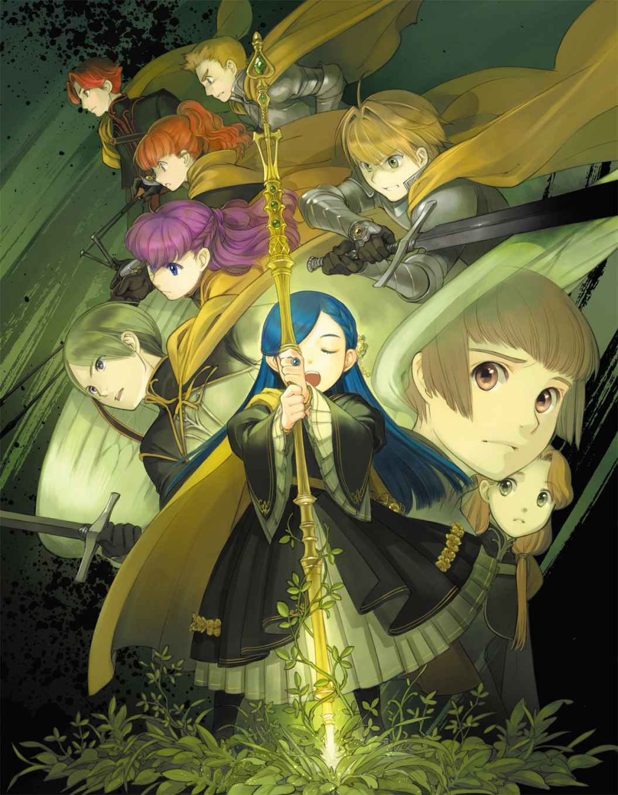
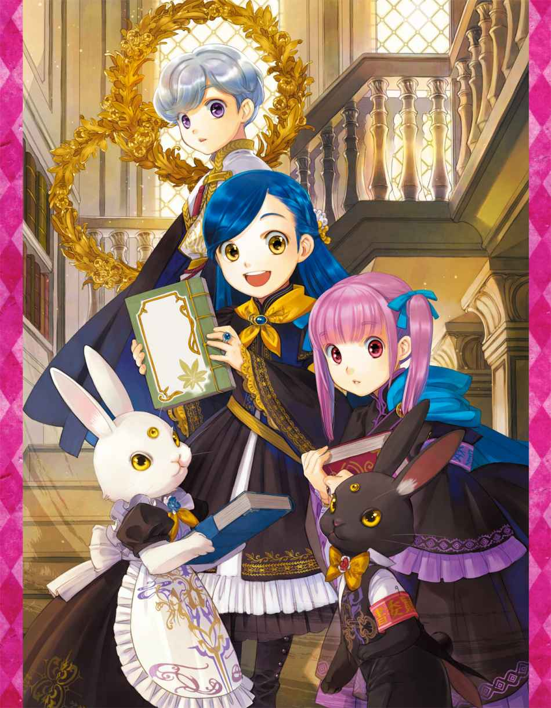
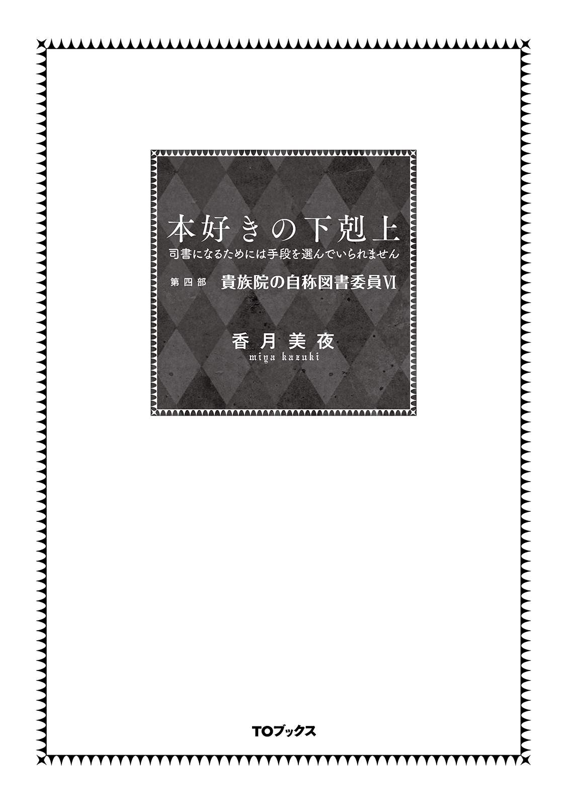
イラスト：椎名 優 You Shiina
デザイン：ヴェイア Veia
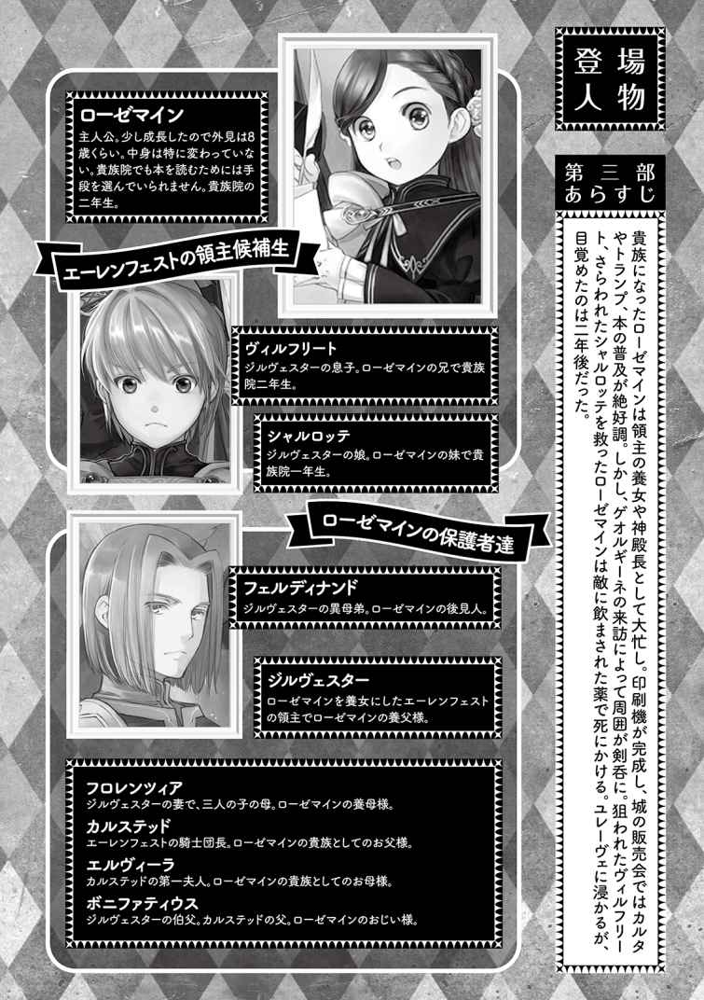
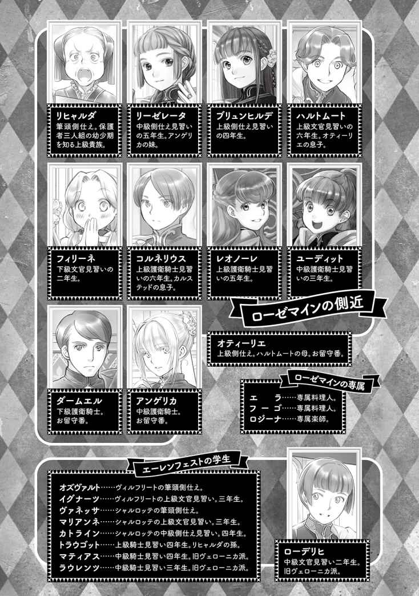
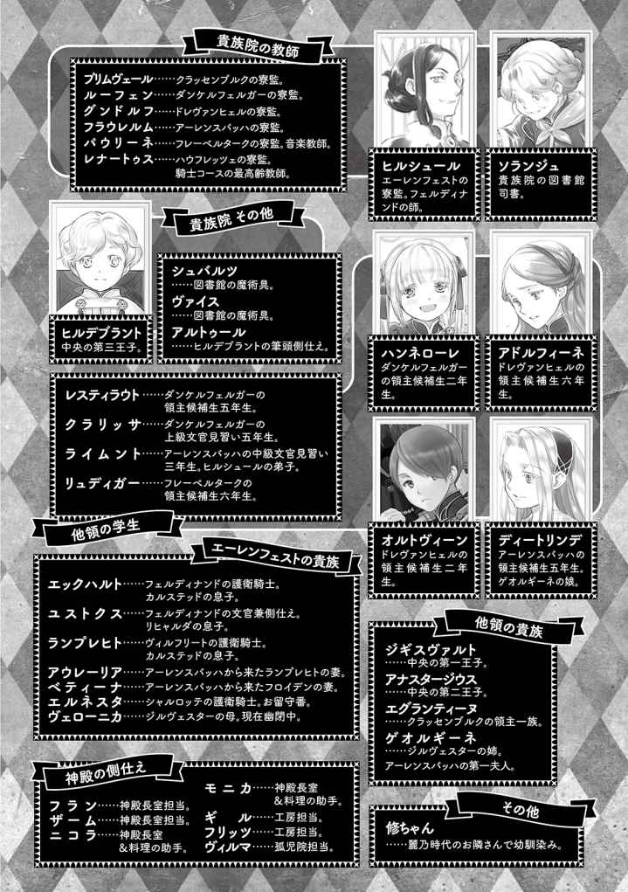
プロローグ
クルクルとした髪を揺らし、シャルロッテは貴族院の寮と繋 がる転移陣に立った。隣には筆頭側仕 えのヴァネッサがいる。期待と緊張を感じつつ、初めて貴族院に向かうのだ。
「いってらっしゃいませ、シャルロッテ様。貴族院を楽しんできてくださいね」
エルネスタを始めとする成人側近達が笑顔で見送ってくれる。けれど、両親は心配そうな、不安そうな顔で注意事項を次々と口にし始めた。
「いいか、シャルロッテ。私は情報精度を高めるため、いくつもの視点から見た貴族院の情報を必要としている。ヴィルフリートとローゼマインにも命じたが、其方 も貴族院で見聞きしたことや講義の様子を自分の文官見習いと報告書にして毎日送るように」
「はい、お父様」
「シャルロッテ、貴女 が気付いたようにローゼマインは社交に関して非常に危ういところがあります。神殿育ちの上に、今も神殿で過ごす時間が長いですし、二年間の教育期間を失ったことも大きな要因です。けれど、他領の方はそのような事情をいちいち汲 んでくれません。流行の発信者であるローゼマインとの交流を望む方は多いでしょう。一年生の貴女には大変でしょうけれど、女性の領主候補生としてよく補佐してあげてくださいね」
注意事項の大半はシャルロッテのことではなく、兄姉の補佐としての立ち回りについてだ。ヴィルフリートとローゼマインの婚約によってシャルロッテが次期領主になる芽は摘み取られた。今のシャルロッテが周囲から望まれていることは、切磋琢磨 して自分を磨 くことではなく、二人の補佐に徹することである。それがエーレンフェストの将来にとっては最善だとわかっていても、領主候補生としては少しばかり物足りなく思う。
......それでも、お姉様へのご恩返しができるのですもの。
洗礼式の直後、さらわれたシャルロッテを救いに来てくれたローゼマインの姿が脳裏 に蘇 る。それが原因でローゼマインはユレーヴェに浸 かることになったのだ。それなのに、ローゼマインは二年間を失う原因となったシャルロッテを一言も責めることなく、様々なところで骨を折ってくれている。恩返しの機会があるならば少しでも返していきたい。
「お姉様のお役に立てるように頑張ります」
シャルロッテは精一杯の笑顔でそう言うと、貴族院へ転移した。
「おかえりなさいませ、シャルロッテ様。初めての親睦会 はいかがでしたか？......出発前はずいぶんと緊張されていらっしゃいましたが」
親睦会を終えて寮の自室へ戻ると、ヴァネッサが少し心配そうに尋ねてくる。シャルロッテは「お姉様のおかげで緊張が薄れました」と小さく笑って首を横に振った。ローゼマインに頼ってほしいと言われ、「わたくしがしっかりしなければ」という気合いが緊張を上回っていたのである。
「それはよろしゅうございました。では、親睦会の報告書を作成してくださいませ」
ヴァネッサに促 され、シャルロッテは文官見習いのマリアンネと共に執務机に向かう。マリアンネがペンを手にして報告書用の木札に手を添えた。
「シャルロッテ様が親睦会で初めて知ったことや印象深かったことは何ですか？」
「......そうですね。エーレンフェストのお料理が中央よりおいしいことに驚きました」
親睦会で出された料理は、中央で準備された物だった。つまり、王族が食べている料理のはずだ。けれど、シャルロッテはエーレンフェストの料理の方がおいしく感じた。
「もちろん中央のお料理もおいしかったのですよ。けれど、領主会議から戻ったお父様やお母様が褒 める言葉を幼い頃から聞いて、期待していたほどの味ではありませんでした」
取り繕っているものの、少しガッカリしたシャルロッテの心情に気付いたようだ。マリアンネを始め、側近達がクスクスと笑う。
「エーレンフェストのお料理は、ローゼマイン様のレシピを取り入れたことで一気に変わりましたからね。昔は本当に中央の方がおいしかったのですよ」
「寮のお料理もお城と同じ味ですからシャルロッテ様は気付かないでしょうけれど、貴族街でも日常的に新しいお料理を食べている者はそれほど多くございません。騎士寮の食事などはまだ改善されていませんもの」
側近達の言葉に、シャルロッテは自分が恵 まれていることを知った。ローゼマインの洗礼式が行われたのは、彼女が五歳の夏だ。もう当時の味を覚えていない。
「シャルロッテ様から見て、他領の領主候補生の様子はいかがでしたか？」
側仕え見習いのカトラインが軌道修正するように話題を親睦会の様子に戻した。シャルロッテは各領地に挨拶して回った時のことを思い返す。
「他領からの注目は予想通りお姉様に向かっていましたね。リンシャンと髪飾りへの視線を強く感じましたもの。何より、最優秀を取ったことでお姉様は王族から名前を覚えられていましたし、他領の方もお兄様ではなくお姉様に注目していると思いました」
二人の婚約を祝う言葉が飛び交っていたけれど、心から祝福している者がどれだけいるのだろうかと思わずにいられなかった。
「......注目されるのも当然でしょうね。女子学生の髪飾りはお姉様が全員分を準備したのですもの。わたくし、本当に驚きました」
それぞれの髪の色に合わせて全員分を、自分の予算だけで準備できるローゼマインはすごい。シャルロッテも選ぶだけならばできるけれど、自分に割り当てられている予算で全員分の購入は難しい。できなくはないが、非常に躊躇 う値段になる。
「印刷業の時のようにシャルロッテ様にも声をかけていただきたかったですね。二人で準備すれば負担は半分になりましたし、シャルロッテ様も流行を担っていると皆に印象づけることもできましたのに......」
不満そうにそう言ったマリアンネをシャルロッテは藍色 の目を厳しくして睨 んだ。
「マリアンネ、お姉様が流行を広げるためにご自分で考えて実行したことです。わたくし達はオズヴァルトからお兄様に実績を譲るように、と言われて嫌な思いをしたでしょう？ 同じことをお姉様に求めるつもりですか？」
「申し訳ございません。流行を広げることについてヴィルフリート様へアウブから助言があったようなので、少し恨めしい気分になってしまったようです」
マリアンネの謝罪を受け入れつつ、シャルロッテは少し苦い気分になった。そう、ヴィルフリートにはジルヴェスターから助言と援助があったようなのだ。
「......わたくしも同じ気持ちです。婚約によって次期領主と決まった以上、お兄様を盛り立てていくべきなのでしょう。けれど、将来的にエーレンフェストには残らない者としてお父様に扱われているようで少し寂しいですね」
シャルロッテが肩を落とすと、ヴァネッサは慰 めるように優しく肩を撫 でる。
「婚約発表して半年以上が経 つというのに、ローゼマイン様を次期領主に、という声が未 だに大きいですからね。アウブも何とかライゼガング系貴族を抑えて、ヴィルフリート様に実績を挙げさせようと必死なのでしょう。......あまりにも気が塞 ぐのでしたら、恨み言を報告書にしたためてもよろしいのでは？ アウブはきっと大慌てで謝罪されますよ」
ヴァネッサが茶化すように笑った言葉にシャルロッテは納得した。きっと今はローゼマインに見劣りしない実績をヴィルフリートに挙げさせることだけで、ジルヴェスターは頭がいっぱいに違いない。シャルロッテが不満を抱いているなんて考えてもいないのだ。
......お父様は昔から他者の思惑に鈍感なところがありましたもの。
自分が良いと思うことは他人も良く思うはずだと楽観的に考えるところがある。
「シャルロッテ様、何を書きましょう？ 不満で木札をいっぱいにしますか？ それとも、お料理のことですか？ リンシャンや髪飾りへの他領の反応がいいですか？」
「まぁ、マリアンネったら」
クスクスと笑ったことで、シャルロッテは気分が変わるのを感じた。
「中央とのお料理の差は領主会議に出席しているお父様達はご存じでしょう。リンシャンや髪飾りへの反応もお母様から伺 った領主会議の話と一致します。不満な点もわざわざ知らせるようなことではありません。やはり第三王子のことを報告しましょう」
「ヴィルフリート様達も同じように報告していると思いますけれど」
「えぇ。でも、他領の領主候補生の印象などはお兄様やお姉様の方が詳しいでしょうし、お父様はそれぞれの意見を必要だと思っているようですから......」
残念ながらシャルロッテだけが知っているような情報が今のところは見当たらない。二人と違う学年という部分を活 かして、これから集めなければならないのだ。
「お父様とは別に、お母様には社交場での対応について質問状を送りたいと思います」
「どのような質問をされるのですか？ わたくし達の情報では不足でしたか？」
側近達から事前に教えられた情報を覚えて、シャルロッテは領地の代表者と挨拶を交わし、講義で交流を持ちやすいように一年生の領主候補生と視線を交わして微笑 み合った。兄や姉から耳にしていた情報もあったので出だしは良かったと思う。
「いいえ。マリアンネ達は丁寧に情報を集めてくれていましたよ。親睦会で失敗したとは思っていません。......その、わたくし、恥ずかしいことに、おばあ様とよく似ていらっしゃるディートリンデ様に少し苦手意識を抱いてしまっているのです」
シャルロッテがディートリンデを初めて見たのは、アーレンスバッハとの境界門で行われた結婚式だ。ヴィルフリートと親しくするけれど、他の者とは簡単な挨拶しか交わさない彼女の様子が祖母ヴェローニカを彷彿 とさせた。そのせいか、親睦会で親しそうな笑みを向けられたにもかかわらず、シャルロッテは思わず身構えてしまったのだ。
「旧ヴェローニカ派にも公平に接するお姉様を見習って、ディートリンデ様個人を見るべきですし、おばあ様と別人であることはわかっているのです。けれど、どうしても......」
「フロレンツィア様にご相談なさいませ。長年ヴェローニカ様とお付き合いしてきたのです。対処方法をよくご存じでしょうから」
ヴァネッサが優しくシャルロッテの背を押した。彼女はフロレンツィアやシャルロッテに対してヴェローニカがどのような態度で接していたのかよく知っている。
ヴァネッサに頷 きを返して報告書を書いていると、部屋にオルドナンツが飛んできた。
「ほら、イグナーツ様から催促 のオルドナンツが来ましたよ」
白い鳥がマリアンネの腕に止まった。予想通り、ヴィルフリートの文官見習いのイグナーツの声で話し始める。誰が報告書をまとめて送るかという内容のオルドナンツだ。どうやらイグナーツもローゼマインの文官見習いのハルトムートもすでに書き終えたらしい。
「わたくしがまとめて送ります。今から取りに行きますね」
マリアンネはオルドナンツを返すと、一旦 退室していった。階段の踊り場で二人から報告書を受け取ってくるのが、マリアンネの最近の日課になっている。報告書を書き慣れていないので、どうしてもシャルロッテ達の仕上がりが一番遅いのだ。
「お待たせいたしました、シャルロッテ様」
マリアンネが木札をいくつか抱えて戻ってくる。今日は何だか数が多い。
「お兄様やお姉様は何を報告するのですか？」
「やはり第三王子のことのようですよ」
シャルロッテはイグナーツとハルトムートが作成した報告書を見せてもらう。
『秋に洗礼式を終えたばかりで、領主会議でのお披露目 も済んでいない第三王子が貴族院に常駐することに決定しました。（イグナーツ）』
『第三王子はダンケルフェルガー出身の第三夫人の子です。臣下となるために育てられ、洗礼式直後のため、社交経験も乏 しいそうです。（ハルトムート）』
同じ第三王子に関する報告だが、ハルトムートの報告には詳細な情報が加わっている。シャルロッテとマリアンネが書いた報告はイグナーツの物とほぼ同じだ。マリアンネはもちろん、シャルロッテの側近達がハルトムートの報告書を覗 き込んで軽く目を見張った。
「ハルトムート様は一体どこからこのような情報を得たのかしら？」
「ローゼマイン様の社交は危なっかしいと言われていますが、やはり上位領地と交流を持つことで得られる情報は予想以上に多いということでしょうね」
「上位領地と交流を持っているのは、ヴィルフリート様の側近も同じですよ。ドレヴァンヒェルのオルトヴィーン様とよく交流していらっしゃいましたもの。他領から情報を得るためには文官見習いの能力が重要になってくるということでは？」
側近達が驚いているように、文官見習いの報告書を見るだけで領主候補生としての立場や手腕の違いが見て取れる。ローゼマインは自分で作りだした流行を広げ、それまで全く交流のなかった王族や上位領地と交流を得た。領主会議でいくつもの領地から直接の取り引きを求められるくらいに成功している。シャルロッテは自分との違いをヒシヒシと感じて鳥肌が立った。
「お姉様は一年生でそれだけの交流を持てたのですよね。ユレーヴェの眠りから目覚めた直後で、奉納式 のために本来の社交期間は領地へ戻っていたにもかかわらず......」
シャルロッテの呟 きに側近達がハッとしたように注目した。ジルヴェスターやフロレンツィアが社交の拙 さを補佐してほしいと言うし、それまでの社交のやり方から外れているので誤解されがちだが、成果だけを見ればローゼマインは失敗しているわけではないのだ。
「お兄様やお姉様が切り開いてくれた交流があるので、わたくしの社交の滑り出しは順調でしょう。でも、わたくし達の実力だと勘違いしないように注意してくださいませ。わたくしには王族と交流を深めるような成果を上げることは不可能です。......もちろん、お姉様の妹として紹介されても恥ずかしくないように努力いたしますけれど」
「驕 らないように気を付けます。でも、シャルロッテ様。突然、王族と交流を持つと言われても困ります。事前の報告や根回しはしっかりしてくださいませ」
側近達に頷き返しながら、シャルロッテはローゼマインの側近達を心の内で称賛する。貴族の交流は一人ではできない。その交流を支える側近の尽力あってのことだ。
「わたくしも皆の主として、お兄様やお姉様と比べて恥ずかしくないように努力しなければなりませんね。まず、一年生の試験初日合格でしょうか......」
ローゼマインに渡されて机に積み上げられている参考書の数々へ目を向けて、シャルロッテは嘆息 した。最初の課題が大きすぎると思う。参考書を積み上げるローゼマインの姿が「これくらいはできるだろう」と次々と木札を積み上げるフェルディナンドと重なって見えたのは気のせいだろうか。よく似ている師弟はいつだって限界を少し超えるくらいの課題を出すのだ。
「報告書を書いたら、わたくし、お勉強しなければ」
気合いを入れるシャルロッテの肩を、そっとマリアンネが押さえた。
「......シャルロッテ様にできる限りでよろしいのですよ。ローゼマイン様に追い詰められて勉強していた去年の一年生は本当に可哀想 でしたもの。あまり他者を追い詰めない程度の頑張りにしてくださいませ」
講義の始まり
親睦会の次の日から早速講義が始まる。エーレンフェスト寮の中は朝食直後から全員が準備を整えてギリギリまで勉強していた。成績向上委員会から出されている勝利条件が「目指せ、最速合格！ もしくは、優秀者多数！」で去年と同じためだ。講義開始日から全力投球の上級生の姿に目を見開き、新入生は慌てて参考書を開き始めた。シャルロッテが一年生を率いて奮闘しているが、去年の貴族院を知らないので、どうしても一歩出遅れてしまう。そんな様子を見ながら、わたしはリヒャルダに手紙を渡した。
「リヒャルダ、午前中の講義を受けている間に面会依頼をソランジュ先生に提出しておいてください。一年生の図書館登録が必要ですから」
「かしこまりました、姫様」
面会依頼を渡した後、忘れやすい部分だけをまとめた自分用の見直しメモに目を通していると、シャルロッテが少し頬 を膨 らませてわたしを見る。
「......お姉様は余裕ですね」
「わたくしには一年間の準備期間がございましたから。......シャルロッテ達は準備期間が短いと嘆 いていますけれど、去年と今年の子供部屋で地理や歴史のお勉強ができた上に、きちんと参考書も渡してあるでしょう？ 去年の一年生よりはずいぶんと楽なはずですよ。去年は貴族院の寮に到着した後に成績向上委員会ができたので、ほとんど時間がない中で叩 きこまれたのですから」
わたしが去年の様子を述べると、地理と歴史で苦労した中級、下級貴族の二年生が何度か頷く。去年は死相さえ浮かんでいた彼等 だが、今年は事前準備が整っているので顔色も悪くない。ちなみに、今年の二年生の目標は「全員一発合格を高得点で」というものだ。
「そろそろ時間ですよ。皆様、玄関ホールへ出てくださいませ」
講義が始まる二と半の鐘に合わせて移動しなければならない。リヒャルダの声に勉強道具を片付け、皆が自信たっぷりの、しかし、緊張した顔で玄関ホールに集まる。マントとブローチがついていることを確認し、一年生に注意事項を述べた後、寮を出た。
一年生と二年生は中央棟、三年生以上は専門棟へ歩き始める。今年の一年生は午前中に実技、午後に座学だ。わたし達二年生は去年と同じように午前中に座学で、午後に実技を行う。午前中の座学は歴史と法律である。
「シャルロッテ達一年生は初めての実技ですね。魔力の扱い、頑張ってくださいませ」
「はい。お姉様もお兄様も座学の初日合格を目指すのでしょう？ 全員合格の報告を楽しみにしていますね」
シャルロッテの激励 に大きく頷きながら、わたし達二年生は講堂へ足を向けた。
「わたくし達が迎えに来るまで決して講堂から出てはなりませんよ」
側近達に念を押されて講堂に入った後は、エーレンフェストが使う十番の席を探す。領地ごとに机と座る場所が決められているので、間違うことはない。
「ローゼマイン様、ヴィルフリート様。ごきげんよう」
各領地から続々と生徒達が集まってくる中で、耳慣れた声が聞こえた。まだ幼さの残る柔らかい響きはハンネローレのものだ。振り返ると、青いマントを付けたダンケルフェルガーの団体がいた。先頭に立っているのは領主候補生のハンネローレだが、率いているというよりは周囲をがっしりと固めて守られているように見える。
「ハンネローレ様、ごきげんよう」
「エーレンフェストは今年も初日の全員合格を目指しているのですか？」
皆が手にそれぞれのメモを持って追い込みをかけている状況に、ハンネローレが微笑ましいものを見るように柔らかい笑みを浮かべた。「全員が初日に合格した去年のエーレンフェストには驚かされましたもの」と言われ、ヴィルフリートが「今年もできれば良いと思っています」と答える。わたしもニコリと笑って言葉を加えた。
「去年の表彰式では恥ずかしいことに、合格が早かったけれど成績が伴っていない、という評価でした。ですから、今年はできるだけの努力をしなければと思いまして......。高得点で全員初日合格を目指すことにしました」
ハンネローレを始め、ダンケルフェルガーの生徒達が目を丸くした。ハンネローレは驚いた表情でゆっくりと視線をエーレンフェストの皆に配った後、わたしを見て微笑んだ。
「......ローゼマイン様ならば、成し遂 げてしまいそうですわね。今年のエーレンフェストのご活躍を期待しています」
......わたし、ハンネローレ様に期待されてる!? 一緒に図書委員をやる相手として、ハンネローレ様に恥ずかしくない成績を取らなければ！
図書委員として相応 しくと思った途端、わたしのやる気が今まで以上にぐんぐんと上がってくる。
「ハンネローレ様の期待に応えられるように頑張ります。わたくしはダンケルフェルガーのご活躍をお祈りしていますね」
「ありがとう存じます、ローゼマイン様」
青いマントが自席に向かって移動するのを見送り、わたしは自分の弱点メモを集中して見直し始めた。最初の講義は歴史だ。去年の内容より詳しく、深くなっている。覚えることは多いけれど、去年の上乗せなのでそれほど大変ではない。一年生と二年生で大まかな流れを習い、三年生以上の専門コースになると、それぞれの観点で活躍した人やその功績などを習うことになるそうだ。
「緊張いたします。去年の歴史はわたくし一人だけが合格点すれすれでしたから」
フィリーネが文具を準備しながらそう言った。去年の歴史で一人だけ先生に呼ばれて、合格点ギリギリだと言われたのを思い出したらしい。
「今年はフィリーネもしっかり勉強したから大丈夫ですよ。ねぇ、ヴィルフリート兄様」
「話しかけるな、ローゼマイン。耳から歴代の王の名前が零 れていきそうだ」
「どれもこれも長くて似たような名前ばかりですからね」
ユルゲンシュミットの歴史は○○王の時代と言われ、王の名前で区別されている。何となく元号に似ているなぁ、と思いながらわたしは覚えた。細かい年号はなく、○○王の時代で一括 りである。
麗乃 時代の元号に比べると王の名前が長くて覚えにくかったけれど、それ以外は細かい年号がないので楽だった。流れをきちんと押さえておけば良いのだ。
「では、各領地から一名、試験用紙を取りに来てください」
フィリーネが代表して取りに行き、用紙が配られる。この瞬間が一番ドキドキして楽しい。さぁ、どこからでもかかってこい！ という敵に立ち向かう勇者のような気分になるのだ。
......自信がない時は、来ないでぇ！ って気分になるけどね。
準備万端で自信のあった試験なのであっさりと終わった。エーレンフェストの皆は苦労もなく解けているようだ。去年に比べると、フィリーネやローデリヒの顔色が格段に違う。
「終わりました」
じっくりと真剣な目で見直しをしていたフィリーネの声によってエーレンフェスト全員が試験終了になった。全員の試験用紙を提出すれば次の試験の勉強をしても良いので、先生に採点してもらうことにする。
法律の見直しをしていると、「エーレンフェスト、全員合格です」という声が講堂に響いた。参考書やメモから顔を上げ、「やったね」「よしっ！」と視線を交わす。この調子で次も全員合格を目指したい。他にも全員が合格した領地があったけれど、エーレンフェストが一番乗りだった。
......次は法律だ！
歴史の勉強はそれほど大変ではなかったけれど、法律はわたしにとってかなり大変だった。覚えるのが、ではなく、理解するのが難しかったのである。
法律は王族を含めたユルゲンシュミットの貴族全員に適用されるもので、「法律の書」に記されているらしい。わたし達が学ぶ内容は書き写された物で、「法律の書」は中央にある魔術具だそうだ。法律では領地を跨 がって行うことや全ての領地に共通することだけが決められている。内容としては、結婚で他領に移る時の取り決めや後継者を定める時の決まりがほとんどだ。特に、領主が後継者を定めずに亡くなった時のことは詳しく決められている。
けれど、正直なところ、ユルゲンシュミットの法律はかなり曖昧 で大雑把 だ。王の判断を仰ぐとか、領主会議で決定すること、というような項目がたくさんある。「つまり、何も決まってないじゃん！ 何のための法律？ 存在意義が理解できないんだけど！」と思わず叫びたくなることが多々あった。
教えてくれたフェルディナンドによると、一度「法律の書」に記入されると時代にそぐわない法律でも削除するのが大変難しいらしい。そのため、意識的に曖昧にしている部分がかなり多いそうだ。
その昔、何に関しても王の判断を仰がれることに不満を持った王がいた。彼は少しでも相談事を減らすため、次々と細かい法律を増やした。その時代はそれで問題なかった。
ところが、時代が変わると次第に法律は状況にそぐわなくなってきた。それでも、法律として決まっていると従わなければならない。新しい時代の王はその法律を消したくて仕方がないけれど、慣例だからと消したがらない貴族もいて、争いが起こるようになってきた。その後、数十年に亘 って、些細 な領地間の問答が必ず法律の削除の是非 を問う事態に発展するようになり、領主会議は毎年混乱を極めたそうだ。
結局、法律自体は曖昧に決めておいて、その都度 、話し合いで詳しく決める方が労力は少なくて済むということで、細かすぎる法律は消された。以来、細かい法律を作りたがる者には「混沌 の女神に魅入られているのか？」と言葉がかけられるようになったらしい。
数十年も混乱が続くならばさっさと新しくすればいいのに、と思うけれど、どの項目を残してどの項目を消すのか、王の裁量を待つことが多くなると時間もかかるし、王の仕事も莫大 になるとか、考えることはたくさんあるので簡単ではなかったようだ。
......そこまで手をかけてできたのが曖昧な法律って。
わたしが「曖昧にしていると、余計に時間がかかりそうですね」とユルゲンシュミットの法律に関する感想を呟くと、フェルディナンドは「色々と言われているが、とどのつまり、明文化されている部分は少ない方が権力者には都合が良いのだ」と呟いていた。なるほど。
存在意義が理解できない法律だが、大雑把なので覚えるのは比較的楽だった。絶対に変わらない普遍的に決まっていることと、王の裁量で多少の幅が出ること、領主間で決めること、領主が勝手に決められることに分けて覚えておけば大丈夫だ。
......図書館法や特許法の試験を潜 り抜けてきた麗乃時代を思えば、軽い、軽い。
全員が提出して、明日の座学の勉強をしながら採点を待っていると、前方で先生方が争っているのが見えた。法律の採点をしている先生方の一人、フラウレルムが「こんなに早く全員が回答できて、高得点だなんておかしい」と文句を付けていて、他の先生方に「おかしいところは特にありませんよ」と諌 められている。
一番にエーレンフェストが提出したのに、二番三番に提出した領地が合格をもらっても、エーレンフェストの合格がまだ来ない。段々と不安になってきたのだろう。フィリーネが小さく口を開いた。
「ローゼマイン様、ヴィルフリート様......」
「そのように不安そうな顔をしなくても大丈夫だ、フィリーネ。私達は不正などしていない。堂々としていれば良い」
「フィリーネも皆も一年間頑張ったのですもの。成績が良くて当然ではないですか」
わたしがそう言った時に「エーレンフェスト、全員合格です」という声が講堂に響いた。
結果が出るまでに時間がかかったけれど、当然のことながら全員合格だ。フラウレルムが「高得点」だと叫んでいたことからも、今年は成績が良かったことがわかる。本来は細かい成績は知らされないので、皆が高得点だとわかって少し嬉 しかった。
全員が合格したので寮に戻ろうと片付けて席を立つ。そこにエメラルドグリーンのような少し淡い色合いの緑のマントをまとったドレヴァンヒェルの団体が立ち止まった。
「今年もすごいじゃないか、ヴィルフリート」
「オルトヴィーン。褒めてくれるのは嬉しいが、ドレヴァンヒェルも全員合格ではないか」
ヴィルフリートとオルトヴィーンがお互いの健闘を称 え合っている様子を、わたしは一歩下がったところから眺める。ドレヴァンヒェルは優秀な文官を多く輩出する土地だと聞いているせいだろうか、皆が賢そうに見えた。
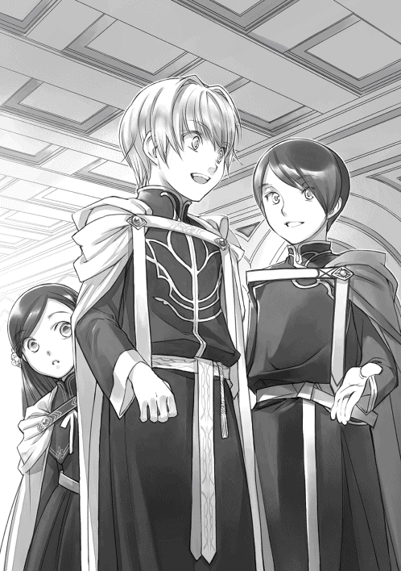
「ここ二十年ほどは座学の首位を譲ったことがないのだ。エーレンフェストが座学の成績を上げているけれど、ドレヴァンヒェルはそう簡単に負けないよ」
......おぉぅ。賢そうじゃなくて、ホントに賢かったみたい。
二十年も首位を守ろうと思えば、領地一丸で勉強に取り組まなければならないはずだ。歴史に裏打ちされた自信に満ちた笑みを浮かべ、オルトヴィーンが自領のことを語り始める。
「オルトヴィーン様、そろそろ行かなければ......」
「あぁ、わかった。ヴィルフリート、これから先もお互い頑張ろう」
そっと後ろに控えていた生徒に声をかけられたオルトヴィーンは、ハッとしたように語るのを止 め、エメラルドグリーンのマントを翻 してドレヴァンヒェルの団体を率いて去っていく。
「切磋琢磨する相手がいるのは良いな」
晴れ晴れとした顔でドレヴァンヒェルを見送っていたヴィルフリートが明るい黄土色のマントを揺らした。
昼食のために寮へ戻ると、上級生の騎士見習いと文官見習いの一部がすでに戻っていた。午前中に座学があった学年は全員合格を勝ち取ったらしい。
「今年の座学は余裕ですね」
「えぇ、騎士コースにも負ける気がいたしません」
成績向上委員会としては嬉しい限りだが、チーム毎 の張り合いがすごい。
「姫様、ソランジュ先生に面会依頼を渡しておきました。講義が始まると同時の面会依頼は初めてだと驚かれていましたよ。一年生の登録日は明後日のお昼休みだそうです」
「その時にシュバルツとヴァイスの衣装を替えることもできるかしら？」
新しい衣装を早く着せてあげたいと思うのだが、リヒャルダは少し考え込んだ。
「......衣装を替える時はヒルシュール先生にも声をかけなければなりませんし、ソランジュ先生が一年生の登録でお忙しい状態でしょう？ それに、お昼休みだけでは時間が足りないと存じます。明後日は一年生の登録とシュバルツ達への魔力供給のみに止 め、着替えは姫様の空き時間ができてからの方が良いと思われますよ」
リヒャルダの言う通り、着替え自体は大急ぎでする必要はない。シュバルツとヴァイスに魔力供給をするだけにしておこう。
皆で成果を話し合って盛り上がった昼食を終えると、午後からはシャルロッテ達一年生を激励して試験に送り出し、わたし達二年生は実技に向かった。実技は階級ごとに教室を分けて行われるので、人数はぐっと少なくなる。
「久し振りだな」
ヴィルフリートが他領の領主候補生や上級貴族達と再会を喜び、「今年もよろしく」と挨拶しているのを見て、わたしは自分の交流の少なさを実感した。一度きりしか授業に顔を出さずに最速で終えたので、皆の顔と名前を憶 えていない。多分、皆もわたしの顔を憶えていないだろう。
......もうちょっと交流を持った方が良いんだろうけど。図書館と交流か。
今年もわたしは講義を終えるまで図書館に入り浸ることを禁止されているのだ。図書館と他の生徒達との交流とどちらを選ぶかと言われれば、わたしは迷わず図書館を選ぶ。
......わたしは図書館で本を読む人。ヴィルフリート兄様は交流でお友達いっぱい作る人。うん、完璧な役割分担。適材適所だよ。
それにわたしも全く交流がないわけではない。わたしにはハンネローレという素敵なお友達がいるのだ。ハンネローレとの交流を深め、本好きのお友達を作っていくことこそがわたしの重要な使命である。
......一年生で本好きのお友達が一人できたんだから、二年生では二人増えたらいいな。
今年のお友達計画を考えていると、ヒルシュール、フラウレルム、プリムヴェール、ルーフェン、四人の先生が入室してきた。
「本日は、騎獣の扱い、シュタープの変形、ロートなどの一年生の復習を行います。去年の実技がきちんと身に着いていなければ、新しいことを覚えられませんからね」
「では、騎獣を出してくださいませ」
フラウレルムの声に皆が一斉に騎獣を出した。一瞬で小広間が狭くなったように感じられる。騎獣ができあがるまでの時間に差があるのは、慣れの差が大きいと思う。さっと出せる子もいれば、形を作るのに少し時間がかかっている子もいる。
わたしのレッサーバスは少し特殊だけれど、同じような乗り込み型の騎獣を出し、乗り込んだ女子生徒が何人もいた。大半がシュミル型なのは、お手本を見せたヒルシュールの騎獣がシュミル型だったせいだろう。ハンドルではなく、手綱 という点も共通している。
「できました」
ふぅ、と軽く息を吐いているハンネローレの騎獣もシュミルの乗り込み型だ。自分一人用で小さいのだが、シュミルの顔がとても可愛 い。多分ものすごくシュミルが好きに違いない。
......ハンネローレ様って、リーゼレータと話が合いそう。
二人ともシュミル好きで、可愛い物がよく似合っている。きっとハンネローレも刺繍 や裁縫が得意な女の子に違いない。
全員が騎獣を作ったことを確認すると、次はシュタープの変形をすることになった。ルーフェンが前に立ち、生徒達の様子が見えるように他の先生方は散らばって目を光らせる。
「さぁ、シュタープを出すんだ！」
ルーフェンの大声が小広間に響いた。同時に、バッと皆がシュタープを出す。
......紋章付き、多っ！
紋章付きの変わったシュタープを作って喜んでいるのはヴィルフリートだけかと思っていたが、男の子には紋章付きが流行しているようだ。タクト状のシュタープに絵のように紋章が張り付いている物もあれば、ヴィルフリートと同じように立体化している物もある。
「ずいぶんと驚いたような顔をしているが、どうかしたのか、ローゼマイン？」
「紋章付きのシュタープがずいぶんと流行しているようで驚きました」
「其方はさっさと講義を終えたから知らなかったのだな？ 私が流行 らせたのだ」
ヴィルフリートが得意そうにライオンの付いたシュタープを振った。ヴィルフリートのシュタープがごてごてしていることも、紋章付きのシュタープを流行らせたことも何となくわかっていたが、ここまで多大な影響が出ているとは知らなかった。
「女性は少ないのですね」
「あぁ。挑戦しようとしていた女性もいたのだが、ハンネローレ様が他領へ嫁ぐ可能性があるので実家の紋章は付けないとおっしゃったことで、他の女性も将来を考えて止めたようだ。ここにいるのは領主候補生や上級貴族だから他領に嫁ぐことも多いだろう？」
......ふーん。着物の母系の紋みたいにすればいいのにね。
麗乃時代にはあった母系の紋は「母親から娘へ、娘から孫娘へ」と結婚して姓が変わっても受け継がれていくものだった。そんな慣習だと最初に言い張れば、女性でも紋章を付けることはできると思う。
......わたしは付けるつもりがないから、どうでもいいんだけど。
一年生のシュタープ作製で、女性が紋章を付けたいような顔をしている時にはアドバイスできるようにシャルロッテに母系の紋について教えてあげても良いかもしれない。
「シュタープができたら、変形の復習だ。これができなければ調合ができぬ。メッサー」
ルーフェンの掛け声に合わせて、皆も「メッサー」と唱えてシュタープを変形させる。「リューケン」と唱えて変形を解除すると、その次は「スティロ」と唱えてペンを、「バイメーン」と唱えて混ぜ棒を作る。変形に関しても、多少時間にばらつきがあるものの、全員が無事にこなせた。
「では、最後に救援信号だ。ロート！」
ルーフェンの声に合わせて、皆がシュタープから赤い光を打ち出す。
シュタープの変形を最初に教えられることは、調合の実習に必要になるので理解できる。けれど、何故 ロートを最初に教えられるのか、わたしは不思議に思っていた。
......だって、救援信号って、そんなに頻繁 に使う物じゃないよね？
危険になった時のために救援信号を出す魔術具を一つ持っておけば十分だと思う。そんなわたしの疑問にフェルディナンドがあっさりと答えをくれた。「ロートを知らなければ、宝盗 りディッターが更に危険な物になるだろう」と。
一年生からシュタープを持つようになったのも、宝盗りディッターがなくなったのも最近のことなので思いつかなかっただけだったようだ。専門コースに分かれる三年生でシュタープを与えられ、騎士見習いだけではなく、文官見習いも魔術具を作ったり作動させたりというところで宝盗りディッターに参加していた時代には、ロートが必須だったらしい。
......宝盗りディッターがそれだけ危険だったってことだろうけど。
「うむ。皆、真面目 に練習していたようだな。問題なく次の段階に入れそうだ」
ルーフェンがそう言って満足の笑顔で生徒達を見回していると、ヒルシュールがゆっくりと前へ進み出た。次の実習について説明が始まる。
「次の実技では調合の基礎を行います。二年生の講義で作るのは、回復薬、オルドナンツ、それから、求婚用の魔石です。これらは全員に必要な物ですからね」
これから先、特に専門コースに分かれる三年生以上は、実技の度に回復薬が必要になるくらい魔力を使うようになるらしい。自分で自分の回復薬くらいは準備できるようにならなければ困るのは自分だそうだ。また、オルドナンツは貴族間の連絡に必須である。一つしかなければ、返事が戻って来ない時に誰とも連絡が取れなくなる。そのため、複数個のオルドナンツを常備しておくのが普通らしい。それから、求婚の魔石。これは男女がお互いに贈り合う物らしく、作れなければ結婚できないという事態になるそうだ。
「今回は作り方を教えるだけですから、求婚用の魔石とは言ってもクズ魔石で作ります。本当の求婚の場に使うためにはご自分で準備できる最高の魔石で作製するのですよ」
そう言いながらヒルシュールは笑みを深める。
「二年生にはまだ早いかもしれませんけれど、求婚ではなく、お付き合いや卒業式のエスコートを申し込む時に使う分には問題ありませんよ。初めて作った魔石ということで、親に反対された恋人に捧 げる方もいらっしゃいました」
......そういえば、お母様が書いていた貴族院の恋物語にそんな場面があったような......。
本の内容を思い出しているわたしの周囲では、貴族院のロマンスなお話に「素敵」と女の子が目を輝かせている。男の子の「それが何？」と言いたげな薄い反応とは温度差があって、ちょっと面白い。
......お母様の恋物語、女の子にはかなり受け入れられやすそう。
潜在顧客数を見てとって、わたしはにんまりと笑った。
ヒルシュールから準備する素材を述べられ、寮の周りにある採集地でそれぞれ準備しておくように、と言われた。
「次回の調合では回復薬を作りますからね。忘れないように」
図書委員ＧＥＴ！
次の日の座学は算術と神学と魔術である。どれも去年の知識を更に深くするというものだ。どれもこれも予習をしっかりしてあるので全く問題ない。講堂に並んで座っているエーレンフェストの二年生の顔色は明るいものだ。
算術は計算器を使って大きな桁 の計算をすることが課題である。このためにわたしは計算器の使い方を教えられた。フェルディナンドには「試験以外の時には石板を使いなさい。確かめ算も筆算を使うように」と言われるようなレベルだけれど。
計算だけではなく領地の予算の必須項目とその割合や税の計算についても多少勉強するが、それほど難しくはない。小学校の中学年から高学年程度のことができればよいのだ。それ以上の算術は文官コースの者が学ぶことになる。
「わたくし、算術は神殿のお手伝いでずいぶんと鍛えられましたから自信があります」
講堂で試験準備を終えたフィリーネが若葉のような瞳を輝かせてそう言うと、ヴィルフリートが何を思い出したのか、少しばかり眉 をひそめて嫌そうな顔になった。
「神殿の手伝いというと、叔父 上の手伝いであろう？」
「そうです、ヴィルフリート様。およそ一年間でとても鍛えられました」
「......え？ フィリーネは神殿に行っているのかい？」
ローデリヒが驚いたように焦げ茶の目を見開いてフィリーネを見た。その目には困惑と嫌悪が入り混じっている。神殿に忌避 感が強い、貴族らしい反応にわたしは小さく笑う。
「わたくしは神殿長ですもの。フィリーネがわたくしの側近である以上、神殿への出入りは必要になります。ハルトムートや護衛騎士見習いも日常的に出入りしています。名を捧げたいと思うのでしたら、ローデリヒはその辺りもよく考えてくださいませ」
マティアスから名捧げを保留するように言われていたけれど、ローデリヒの中では名を捧げる決意が固まってきているようだ。フィリーネを始め、わたしの側近達との交流を深めようと努力しているし、講堂での講義などではわたしの近くにいることが多くなってきている。一度名を捧げたいと側近達の前で宣言したせいだろうか、わたしの側近達もローデリヒが近付いてくることに対しては過度の警戒心を剥 き出しにして遠ざけようとはしない。その分、見極めというか、観察するような目は鋭くなっていると思う。
算術は最初から予想されていた通り、簡単に終わった。計算ミスがないか、必ず確かめ算をするように全員に言っておいたので、それほど多くのミスもないと思う。
「フェルディナンド様のお手伝いに比べると簡単でした。失敗しても叱 られませんし、やり直しもございませんから」
フィリーネが小さく笑う。神殿のお手伝いを始めた当初、フィリーネは緊張の中での慣れない計算と「間違えている。やり直し」というフェルディナンドの冷たい連続攻撃にかなり凹 んでいた。最近では計算ミスが少なくなったことと、フェルディナンドの無表情が決して怒っているわけではないとわかったようで計算のスピードも上がっている。
「次は神学か」
神学では自分の生まれ季節の大神 とその眷属 、それから、他にもう一つ、別の大神と眷属を選び、神々の名前と何を司 っているのかを覚えなければならない。全く覚えていない者には大変かもしれないが、エーレンフェストでは聖典絵本やカルタで遊んでいるうちに、すでに二年生全員が全ての神を知っている。楽勝だ。
「ローゼマイン、其方はどの神を選んで書くのだ？」
一つしか属性がない者はどの神と眷属を選んでも良いが、複数の属性を持っている者は自分の属性の中から選ばなければならない。三年生の講義で神の加護を得るためには自分が加護を得やすい神について知っておくことが重要になるからだ。夏生まれのわたしの場合、火の神ライデンシャフトとその眷属を覚えることは決定で、もう一つの属性を選ばなければならない。わたしは全属性持ちなので、どの神でも良い。
......まぁ、わたしが加護を得たい神はとっくに決まってるけどね。
「図書館や本に大きく関係する風とその眷属にする予定です。わたくし、英知の女神メスティオノーラに一番多く祈りを捧げていると思うので」
「其方らしいな。私は生まれ季節の水と今後の成長を願って火にするつもりだ」
春生まれのヴィルフリートは水の女神とその眷属に加えて、火の神とその眷属との関係を強めたいらしい。成長したいし、強くなりたいのだそうだ。
「フィリーネはどうするのです？」
「わたくしは土しか属性を持っていないので、もう一つはローゼマイン様と同じ風にするつもりです。英知の女神メスティオノーラの御加護が欲しいですから」
「文官は英知の女神の御加護があると嬉しいですよね。ローデリヒはどうするのです？」
わたしがローデリヒに話を振ると、ローデリヒは羨 ましそうに周囲を見た後、ゆっくりとオレンジに近い茶色の頭を横に振る。
「私は生まれ季節が風で、もう一つの属性が土なので、選ぶ余地はございません」
「属性があれば選ぶ余地がなくても御加護を得られやすいのですから、わたくしにはローデリヒが羨ましいです」
フィリーネが残念そうに息を吐くと、ローデリヒが「そういう考え方もあるのか」と小さく呟いた。皆が選ぶ話をしている様子が相当羨ましかったようだ。
「エーレンフェストは全員合格です」
神学も問題なく終わった。神殿に入ったばかりの青色巫女 見習い時代、神々の名前の長さに顔を引きつらせ、泣きそうになりながら覚えたことが懐かしく感じられるくらいだ。
魔術は魔法陣の基礎で、フェルディナンドに教えてもらっているので特に問題はない。魔法陣を描くための記号と注意事項を覚えるだけだ。注意事項とは混ぜると危険な属性や相乗効果がある組み合わせのことである。
......命の属性は土以外は全部反発するって覚えておけば大丈夫。
二年生の実際に魔法陣を描いてみる実技では、基本的に単一属性の魔法陣の練習をするし、複数の属性を使う魔法陣にしても、相乗効果のある属性を使うことになっている。小難しくなるのは文官コースに入ってからだ。
今日の座学も難なく合格して午前の講義を終えると、午後は音楽の実技だ。実技が行われる小広間をぐるりと見回せば、座学と違ってそれぞれの顔が見えるくらいの人数にはなっている。顔と名前が一致する人は相変わらず少ないけれど。
「今年の課題曲はこちらです」
バンと大きな板に小さな楽譜が張り出される。その直後、楽譜がどんどんと大きくなっていって、少し離れたところからでも見えるようになった。
「課題曲の他にもう一曲、得意な曲を披露 してくださいませ」
一年生の時は座学だけではなく、実技の時も領地ごとに固まっていた。だが、わたしが合格した後、学生達の交流が行われたようで領地ごとの固まりは崩れている。先生からの課題が出るとすぐにヴィルフリートはフェシュピールを抱えて、オルトヴィーン達男の子の群れへ行ってしまった。周囲を見れば、それぞれ仲良しのお友達と練習をするようで、ハンネローレも女の子のお友達に囲まれている。
......どうしよう？
フェシュピールを抱えて、仲間に入れてくれそうなハンネローレのところへ行くのは簡単だ。しかし、女の子達のお喋 りと「皆で一緒に練習＆合格しようね」という仲間意識に囚 われると、一発合格して講義から抜けるのが難しくなる。わたしは今年も図書館のために最速合格を目指しているので、皆と練習するより一人でさっさと終わらせてしまいたい。
......周囲から友達のいない子だと思われるのはちょっと悲しいけど、仕方ないね。
課題曲は半年くらい前にフェルディナンドから出された曲だったので、少し練習し直して指の動きを思い出せば合格できると思う。自由曲の選曲も同じ頃に課題として出された曲から選べば、難易度や知名度も大丈夫なはずだ。
わたしは皆が軽いお喋りと共に練習をしている中、せっせと課題曲と自由曲の練習をして先生のところへ向かった。早く合格して音楽の講義を終えるのだ。二回も三回もこの一人ぼっち時間を経験するのは寂しすぎる。
「パウリーネ先生、試験をしていただいてもよろしいでしょうか？」
課題を出した後は、自分でもフェシュピールを弾いていたパウリーネに声をかけた。パウリーネは去年わたしをお茶会に誘ってくれた先生である。フェシュピールを弾く手を止めて、何度か瞬 きをする。
「あら、ローゼマイン様はもうよろしいの？」
「はい。今年の課題曲は以前に練習したことがある曲だったので」
勧められた椅子に座り、わたしはフェシュピールを構えた。一番乗りで試験を受けるせいだろう、周囲の視線が不意にこちらを向いたのがわかる。練習とお喋りで雑多な音に溢 れていた小広間がシンと静まっていく。
急に視線を向けられたことに驚きながら、わたしはゆっくりと呼吸して心を落ち着かせ、弦を爪弾いた。ピィンと主旋律を奏でる高い音が右手から、ポゥンと低い音が左手から響き、小広間に広がっていく。
「大変結構です。一年でずいぶんと上達されましたね」
城でも神殿でも欠かさず練習させられているので、特に問題なくわたしは合格した。パウリーネは褒め言葉を口にしながらも不満そうな目でわたしを軽く睨む。
「ただ、自由曲がありきたりですわ。ローゼマイン様ならば、新しい曲を弾いてくださるかと期待していたのですよ。......新しい曲はございませんの？」
ないわけではない。ロジーナにねだられて、原曲を提供したのはいくつかある。ただ、こんな授業の場で「自作の曲です」と披露して目立つつもりがないだけだ。去年もヴィルフリートが暴露していなければ、自作の曲があることも知られなかっただろう。
もし、今ここでまた自作の曲を披露すれば、友達もいない一人ぼっちの癖にどれだけ自己顕示欲が強いのだと皆に思われるに違いない。一人ぼっちが目立っても良いことはないのだ。さっと講義を終わらせて、そっと姿を消したい。わたしは周囲の記憶から「エーレンフェストの領主候補生が一人ぼっちだった」という事実ごとひっそりと消えるのを狙っている。
「残念ながら、講義中に披露できるような出来ではございません」
「では、今年もまたお茶会をいたしましょう。わたくし、ローゼマイン様の新しい曲を拝聴したいのです。あの楽師をまた連れていらして」
「パウリーネ先生に気に入っていただけて嬉しく存じます。わたくしの楽師も誇りに思うでしょう」
......あぅ、お茶会の予定が入っちゃったよ。今年は王族なんていませんように。
さっさと合格できたのは良いものの、講義終了の時間までどうやって時間を潰 せば良いだろうか。他の皆の様子を見てみると、元々あまり音楽に興味がないらしいヴィルフリートが、口をへの字にして楽譜を睨んでいるのが見えた。女の子達の集団は指よりも口の方が忙しく動いているのがわかる。
......本さえあれば、一人ぼっちでも全く平気なんだけど。フェシュピールじゃあ......。
音楽の練習以外にできることがないので、わたしはもう一度椅子に座ってフェシュピールを抱え直す。そこにおずおずとした表情でハンネローレが近付いて来た。首を傾 げるわたしに、ハンネローレがニコリと微笑む。わたしが一人ぼっちなので気にかけてくれたのかもしれない。そう思っただけで、目の前がぱぁっと明るくなっていく。
......さすがハンネローレ様！ わたしの心の友！
「こんなに早く合格されるなんて、ローゼマイン様はフェシュピールもお得意なのですね」
「決して得意というわけではなく、厳しい教師がいるのですよ。わたくしはフェシュピールの練習よりも本を読みたいと思っているのですけれど、なかなか思うようにいきません」
ロジーナが「専属楽師の仕事をさせてくださいませ」と訴えてきたり、フェルディナンドが進度をチェックして課題を出したりしなかったら、わたしはフェシュピールの練習より読書を優先していたはずだ。
「それに、早く合格しなければ奉納式までに図書館へ行くことができなくなってしまいますもの。シュバルツとヴァイスが待っているのに......」
「シュバルツとヴァイスというと、図書館でソランジュ先生のお手伝いをしているシュミル型の大きな魔術具でしょうか？」
少し首を傾げながら確認するように尋ねられ、わたしは「そうです」と頷く。シュバルツとヴァイスの名前はあまり知られていないのかもしれない。そんなことを考えていると、ハンネローレは頬に手を当てて赤い瞳を輝かせ、ほぅと溜息 を吐 いた。
「シュバルツとヴァイスはとても可愛いですもの。わたくしも去年は図書館で働く姿を見て心が癒 されましたわ」
直後、ハッとしたように一度目を見開くと、ハンネローレは突然困ったような表情になって辺りの様子を窺 い始めた。二つに分けて結ばれている淡い色合いの髪がゆらゆらと揺れる。揺れる髪を見ながら、わたしは急いで自分の発言を思い返した。誰かに聞かれたらハンネローレが困るような発言をしただろうか、と。一緒に図書委員をしましょう、と誘う機会を虎視眈々 と狙ってはいるけれど、まだ口に出していない。
......値札が付きっぱなしとか、ファスナーが開いてるとか、麗乃時代のような失敗もないはずだし。
側仕え達が整えてくれるので、声に出して指摘するのを躊躇うような外見上の失敗はないはずだ。そっと触って確認してみたが、髪飾りが外れそうというわけでもない。ハンネローレは周囲を気にしながら、少し距離を詰めてきて声をひそめた。ゴクリと息を呑 んで、わたしはハンネローレの言葉を待つ。
「あ、あの、ローゼマイン様。わたくし、ずっと謝ろうと思っていたことがあったのです」
「......お茶会で突然倒れてしまったわたくしに、ハンネローレ様から謝っていただくようなことは全く思い浮かばないのですけれど」
予想外の言葉に目を瞬いていると、ハンネローレは「わたくし自身のことではなく、ダンケルフェルガーのことですわ」と小さく呟いた。フェシュピールを練習する音で話し声が掻 き消されそうな雑音の中、ハンネローレはレスティラウトが去年シュバルツ達の主の権利を寄越 せと言いだした裏側の事情について教えてくれる。
「わたくしがシュバルツ達の可愛さを見て、主になってみたいと呟いたせいで、ローゼマイン様にもエーレンフェストにもご迷惑をかけたと伺いました。わたくしが知った時には王子の耳に届いた後で、本当に驚いたのです」
要約すると、「あんな可愛いシュミル達の主になれたらいいな」という可愛い妹の呟きを耳にしたレスティラウトが、ハンネローレをシュバルツ達の主にするために空回りながら奮闘していたということらしい。
......なんて迷惑な兄馬鹿！
「おまけに、ルーフェン先生が何度もディッター勝負を申し込んでいると伺っています。できるだけ止めているつもりですけれど、これからもご迷惑をかけるかもしれません。わ、わたくし、ローゼマイン様に嫌われてしまうのではないかと心配で......」
ハンネローレは泣きそうな顔で「ずっと謝らなければと思っていたのに機会がなくて、こんなに遅くなってしまいました」と謝罪する。
......どうしよう。ハンネローレ様がビックリするほど可愛い！ シュバルツ達の主になりたいと思っていたなんて、さすが本好きのお友達！
ハンネローレを図書委員に誘うには今しかない。わたしはハンネローレを見上げた。
「わたくしがハンネローレ様を嫌う理由などありませんわ。シュバルツ達の主になりたいと思っていらっしゃったのですね。でしたら、わたくしと一緒に図書委員をいたしましょう」
ハンネローレはきょとんとして首を傾げた。
「あの、トショイインとは一体どのようなものでしょう？」
「シュバルツ達の魔力供給やソランジュ先生のお手伝いです。ハンネローレ様も本がお好きでしょう？ ご一緒にいかがです？」
わたしの勢いに驚いたように軽く目を見張った後、ハンネローレはおっとりとした様子で頬に手を当てて考え、「シュバルツ達と図書館で過ごすのは楽しそうですね」と微笑んだ。
......やったぁ！ 図書委員ＧＥＴ！
いつどうやってハンネローレを図書委員に誘おうかと思っていたが、ずいぶんすんなりと事が運んだ。ひゃっほぅ！ と飛び上がりたいのを我慢し、神に祈りを捧げたいのを抑えながら、わたしはグッと拳を握る。
「あの、ローゼマイン様。わたくし、その、不躾 ながらお願いがございますの」
「何でしょう？」
図書委員仲間のお願いなら何でも聞いてあげちゃうけど、と思いながら先を促 すと、ハンネローレはもじもじとしながら口を開いた。
「ローゼマイン様のお作りになったという曲を、その、わたくしの楽師に弾かせたいのですけれど、お許しいただけませんか？」
去年の音楽の講義でわたしが作った新しい曲をパウリーネが弾いて披露してくれたそうだ。楽師に覚えてほしいのです、とハンネローレが呟くように言った。音楽の先生方のお茶会でしていたように、ロジーナが弾く曲を自分の楽師に覚えさせたいというお願いである。わたしが作ったことになっている曲をハンネローレの楽師が弾くのは、仲良しの証 しだ。わたしは笑顔で頷いた。
「本の貸し借りをお茶会の席でいたしましょうか？ その時に楽師を連れていらして」
「ありがとう存じます、ローゼマイン様。わたくし、次にお貸しできる本を準備して楽しみにしていますね」
......ハンネローレ様と図書委員。ハンネローレ様とお茶会。ハンネローレ様と本の貸し借り。わたし、もう一人ぼっちじゃないよ！
音楽の講義を終えたわたしがお友達との約束に浮かれながら小広間を出ると、リヒャルダと側近達が揃 って待っていた。コルネリウスがわたしを見て「その顔は合格ですね？」と小さく笑う。
「えぇ。わたくし、音楽も合格をいただきました」
「ローゼマイン様、わたくしもです。音楽の先生に褒められました。去年に比べてとても上達しましたね、と。ローゼマイン様と一緒にお稽古 したからです」
わたしが胸を張って報告すると、フィリーネが頬を薔薇 色に上気させて嬉しそうな笑顔で寄ってきた。神殿でわたしと一緒にロジーナの教えを受けてフェシュピールの練習をしてきたフィリーネは、下級貴族ではなかなか見られない上達ぶりだと褒められたらしい。
「先生が変わったところで、真面目に練習しなければ身に着きませんから。楽器の上達はフィリーネの努力ですよ」
フィリーネを褒めた後、わたしは自分の努力を側近達に報告する。
「今日は合格しただけではなく、パウリーネ先生からお茶会に招かれましたし、ダンケルフェルガーのハンネローレ様と色々なお約束もしたのです。わたくし、社交も頑張っているでしょう？」
その報告に側近達は揃って目を丸くした。「図書館よりも社交を優先されるのですか？」と。そんなことはない。図書委員との交流は図書委員活動の一環だ。けれど、わざわざ口に出す必要はないだろう。わたしは黙って微笑んだ。
次の日も座学はあっさりと合格した。本来ならば一つの季節に習うことを、全員が一年かけて予習して勉強しているのだから当然と言えば当然だ。だが、周囲にとって領地全員の初回合格が続くのは当然ではない。ドレヴァンヒェルのオルトヴィーンがエメラルドグリーンのマントを翻し、こちらの様子を窺うようにやってくる。
「ヴィルフリート、エーレンフェストはまだ全員合格が続くのかい？」
「あぁ、座学は全員合格できると思う。絶対に譲れない物があるからな」
「......譲れない物？」
オルトヴィーンが目を瞬きながら興味深そうにヴィルフリートを覗き込んだ。一瞬、しまった、と言いたげに口を噤 んだヴィルフリートだったが、深緑の瞳に貴族らしい笑みを浮かべて流す。
「まぁ、それが何かはエーレンフェストだけの秘密だ」
......タルトを貴族院で出す予定はないですからね。
ヴィルフリートは流行として出すつもりがないので言葉を濁しただけなのだが、ドレヴァンヒェルにはものすごい秘密があるように聞こえたのだろう。学生達の目が怖いくらいに輝いた。
「エーレンフェストの成績向上の秘密か。......必ず探ってみせるよ、ヴィルフリート」
「そう簡単には探らせぬ」
......あぁ、うん。二人とも頑張れ。
図書館登録と魔力供給
今日の昼休みは久し振りの図書館だ。一年生を連れていって利用者登録をするのである。わたしは多目的ホールに並ぶ一年生を見回してニコリと笑った。
「貴族院の図書館では登録料が一人につき小金貨一枚必要になります。お金がなくて登録を諦 めている者にはわたくしがお貸しいたしますので、頑張って写本をしてくださいませ」
多目的ホールの本棚にはエーレンフェストの蔵書目録の写しと上級生が去年写本した本の記録を置いている。それを見て、他の人と重ならないように写本をしてほしい、と説明すると一年生は初々 しい顔で大きく頷いた。
急いで昼食を終えて、わたしは出かける準備をする。図書館の後でそのまま午後の実技に出られるようにしておかなければならない。
「やはりローゼマイン様も図書館へいらっしゃるのですか？」
わかっているけれど行きたくない、というような顔でコルネリウスが準備万端のわたしを見下ろした。
「エーレンフェストの学生が図書館へ登録に行くのに、わたくしが寮でお留守番をする方がおかしいでしょう？」
「よく考えてください。今回は一年生の登録です。ローゼマイン様はすでに登録を終えている二年生なので全く関係ありません。領主候補生であるシャルロッテ様もいらっしゃいます。むしろ、ソランジュ先生の執務室に側近を連れてぞろぞろと行く方が邪魔になるのではありませんか？」
「でも、シュバルツとヴァイスに魔力供給もしなければなりませんもの」
わたしが唇を尖 らせると、コルネリウスは「魔力が足りないという連絡はソランジュ先生から届いていませんが」と軽く肩を竦 めた。
コルネリウスの言い分は多分間違っていない。魔石に魔力を込めて渡してあるのだから、今日わたしが図書館に行く必要はないだろう。だが、講義が終わるよりも早く図書館に足を運べる貴重なチャンスを逃すはずもない。
「わたくしがどれだけ図書館に行きたいのか知っているのに、コルネリウスはどうしてそのような意地悪を言うのですか？......さては、意中の方にふられましたね？」
八つ当たりですか、とわたしが睨むと、コルネリウスがくわっと目を剥いて「違います！」と即座に否定した。
「では、卒業式にエスコートする相手は決まったのですか？ コルネリウスもハルトムートも最上級生ですけれど」
優秀者なのに女の子にもてないわけないよね？ とわたしが自分の側近二人を交互に見ると、コルネリウスとハルトムートは視線を交わし合い、キラリと目を光らせる。何だか二人だけで通じ合っているようでガシッと固い握手をした。ハルトムートがニッコリと作った笑顔でわたしを見下ろして口を開く。
「ローゼマイン様には教えられません」
ハルトムートにそんな拒絶をされると思っていなかったわたしが「何故ですか!? 」と目を剥くと、コルネリウスが本棚へ視線を向けた。
「母上に筒抜けになり、本の題材にされるからです」
本棚にはエルヴィーラとそのお友達が書いた貴族院の恋物語がある。エルヴィーラ達が書いている貴族院の恋物語第二弾や第三弾の餌食 になるというコルネリウスの予想は正しい。エルヴィーラはランプレヒトとアウレーリアの恋愛事情も楽しそうに執筆していた。登場人物の名前が違うし、神様を称える詩が途中に入るので本人達を特定するのは難しいけれど、わかる人にはわかる。コルネリウスも間違いなくネタにされるだろう。
ちなみに、ランプレヒトの恋愛話は想い合っていたのに社会情勢により一度は引き裂かれたけれど、神々に祈りを捧げることで最終的には結ばれたという話になっていた。半分以上がフィクションである。エルヴィーラの妄想力はマジすごいのだ。
「題材にされるのを避けたい気持ちはわかります。けれど、どなたをエスコートするにしてもご挨拶しないわけにはいかないでしょう？」
他領の人が相手ならば、尚更 、領地対抗戦までに両親には話をしておかなければならないはずだ。エルヴィーラの餌食になる時期がちょっと前後するだけだと思う。
「それはローゼマイン様が奉納式のために戻った時に行います。ご心配なさらず」
さらりと言ってのけるところを見ると、どうやら相手を射とめることはできているように感じられる。わたしはコルネリウスを好きだと言っていたレオノーレへ視線を向けた。少し俯 いているせいで葡萄 色の前髪が下りて、その表情は見えない。
「ハァ......。それにしても、どうしてこんな話になるのですか。私としてはこれから先のローゼマイン様の図書館通いに同行するために、なるべく早く講義を終える方を優先させたかっただけなのですが」
「では、コルネリウスはお留守番をしているといいですよ。護衛騎士にはレオノーレとユーディットもいますし、シャルロッテの側近も同行していますから」
お昼休みに勉強する許可を出したのに、コルネリウスは深い溜息と共に頭 を振って、漆黒 の目でじとりとわたしを見た。
「いえ、同行いたします。なるべく目を離さないように、と言われていますから」
誰に？ と聞きたかったけれど、わたしは口を噤んだ。
......神官長とか養父様 とか養母様 とかお父様とかお母様とか......ね。
名前の挙がりそうな保護者達の顔をわたしが思い浮かべていると、ハルトムートが橙 のような明るい瞳で少しばかり遠くを見た。
「あぁ、私も色々な方から言われました。神殿の側仕え達を始め、ダームエルやアンゲリカ、エックハルト様やユストクス様、城に戻ってからは母上やボニファティウス様からも......」
......わたしが図書館へ行くの、ずいぶんと色々な人から要注意と思われているみたい。
「皆の意見はよくわかりました」
「ローゼマイン様、では......」
「でも、周囲からどう思われていても、わたくしに図書館を諦めるという選択肢はございません。早く図書館に行きましょう」
......久し振りの図書館だ。ひゃっほぅ！
「今回はフェルディナンド坊ちゃまから空の魔石も預かっていますし、大丈夫でしょう」
リヒャルダが諦めたように玄関の扉を開いた。
登録を終えているわたし達は入れるが、未登録の一年生は司書であるソランジュの許可がなければ図書館には入れない。
「シャルロッテ、ソランジュ先生から届けられている木札をその扉の口に入れてください」
「はい、お姉様」
シャルロッテが少しばかり緊張した面持ちで木札を扉についている新聞受けのような口にカコンと入れる。数秒後、ギッという音を響かせながら扉がゆっくりと開いていった。驚きに目を見張る一年生を連れて明るい回廊を歩き、突き当たりの扉を開ける。そこには去年と同じようにソランジュが穏やかな笑みを浮かべて待っていた。去年と違うのはソランジュの隣にシュバルツとヴァイスがいるところだ。
「お久し振りです、ソランジュ先生」
わたしが声をかけると、ソランジュの青い瞳が懐かしそうな柔らかい笑みを浮かべた。まるで久し振りに会う孫を見る祖母のような目だ。
「ローゼマイン様がお元気そうで何よりです。それに、一年で少し背が伸びましたね」
「え？ 一目でわかるくらいに、わたくし、大きくなりましたか？」
大きくなったと言われて喜ぶわたしの周囲をシュバルツとヴァイスがひょこひょこと回り始める。
「ひめさま、きた」
「ひさしぶり、ひめさま」
「......大きいシュミルだ」
「喋っている？」
シュバルツとヴァイスを初めて見る一年生が、思いもよらない物を見たような顔でひそひそと囁 き合う。一年生を代表するようにシャルロッテが口を開いた。
「お姉様、これがシュバルツとヴァイスですか？ お話には聞いていましたけれど、わたくしの想像以上に可愛らしいです」
シュバルツとヴァイスの動きを追って、藍色の目を輝かせているシャルロッテの言葉にリーゼレータがコクコクと頷く。リーゼレータがうっとりとした眼差 しをシュバルツとヴァイスに向けているのを視界の端で捉えながら、わたしは小さく笑った。
「そうです。可愛いでしょう？ でも、シャルロッテも皆も触ってはなりませんよ。連れ去られるのを防止するため、シュバルツとヴァイスはいくつもの魔法陣で守られているのです。ちょっと手が当たった程度ならばピリッとする程度で済みますけれど、何度も触ろうとすると大変なことになるそうです」
シュバルツとヴァイスは司書のお手伝いをするために図書館内をうろうろとしているので、ぶつかる程度のことはありえるだろう。ほんのちょっと触れた時はピリッと静電気が走るような痛みで軽い警告があるらしい。それが何度も続いたり、壊れるような衝撃だったり、長時間だったりした場合は、静電気のような警告ではなく、火傷 したり、皮膚 がただれたりと、反撃が強くなっていくそうだ。
「わかっています。わたくしも魔法陣を一緒に刺繍したのですもの。それに、どれだけ可愛らしくてもシュバルツとヴァイスは王族の遺物です。不用意に触れるようなことはいたしません。そのくらいの分別はあります」
胸を張るシャルロッテの言葉に、王族の遺物であることを初めて知った一年生は少しばかり驚いたような顔でシュバルツとヴァイスを見る。その顔には畏 れ多いという表情がはっきりと表れていた。
「エーレンフェストの学生はローゼマイン様からすでに注意を受けているようですから、わたくしからシュバルツとヴァイスについてお話しすることはございませんね」
ソランジュが口元に手を当てて上品に笑いながら、わたしとシュバルツ達を見比べる。
「ローゼマイン様。わたくしは一年生の登録をいたします。その間にシュバルツとヴァイスへの魔力供給をお願いしてもよろしいですか？ 二人ともローゼマイン様がいらっしゃることをとても喜んでいましたから」
「もちろんです。お邪魔にならないように閲覧室で行いますね」
「......今は二階ならば誰もいませんから、視線を避けるならばそちらへどうぞ」
よほど閲覧室へ行きたいという要求が顔に出ていたのだろうか。ソランジュは苦笑気味に二階へ向かうように言った。多分ダンケルフェルガーに文句を付けられた時のことを思い出しているのだろう。余計なことに巻き込まれないようにするには視線を避けた方が良い。わたしはソランジュの言う通り、閲覧室の二階へ向かうことにした。
「一年生の登録に全く関係がありませんでしたね」
「わたくしのお仕事は魔力供給ですもの」
呆 れたようなコルネリウスの声を背中で聞きながら、わたしはそそくさとシュバルツとヴァイスを連れて閲覧室へ入る。扉を開けて左側にある階段から二階に上がり、本当に周囲に人がいないことを確認した。
「コルネリウスは階段前で他の人が来ないか警戒をしてくださいませ。レオノーレとユーディットはシュバルツとヴァイスを見たいでしょうから、コルネリウス一人でも大丈夫ですよね？」
本当は二人で警戒に当たった方が良い。だが、女の子は基本的にシュバルツとヴァイスが好きだし、衣装の刺繍も手伝ってもらっている。階段前の警戒にあてるのは可哀想だ。そんなわたしの主張にレオノーレがクスクスと笑った。
「そのような心配は必要ございません。わたくしも階段前で警戒をいたします」
「レオノーレ、よろしいのですか？」
「えぇ。今日はこちらで警戒に当たりますから、次回はお側に付かせてくださいませ」
茶目っ気を含ませた藍色の瞳にわたしは笑って頷くと、階段前にコルネリウスとレオノーレを残して少し奥まった方へ移動する。
「ここならば階段を上がってくる者からすぐに見えることはないでしょう」
リヒャルダの言葉に頷き、わたしはシュバルツとヴァイスの額にある金色の魔石へ手を伸ばした。ゆっくりと撫でながら魔力を注いでいく。ソランジュに預けてあった魔石から魔力の供給はされているようで、それほど減っているようではない。ただ、撫でていると気持ちよさそうに金色の目を閉じているので、魔力供給より褒める方を優先することにした。
「シュバルツ、ヴァイス。春から今日までお仕事をよく頑張りました」
「おしごとがんばった」
「ソランジュ、よろこんだ」
「冬は学生が増えるので、もっと大変になります。それに、わたくしと一緒に図書委員をしてくれるお友達もできました。今度紹介しますね」
魔力を注いでいた手を離すと、シュバルツとヴァイスが金色の目を開けて何度か瞬きをした後、更に奥へと歩き始めた。
「ひめさま、ひめさま」
「こっちもなでて」
「......こっち？」
わけがわからないまま、わたしは本棚と本棚の間にある石像の前へ案内された。グルトリスハイトを胸に抱いた英知の女神メスティオノーラの石像だ。神殿にある神の像が本物の神具を抱えているのと同じように、真っ白の石像であるメスティオノーラも黄色の革が張られた装飾的で大きな本を抱えている。様々な色合いのいくつもの魔石が並んでいることからも魔術具だとわかる。
そういえば、去年ソランジュは図書館には英知の女神メスティオノーラの御加護があるから生徒達の写本が集まってくる、と言っていたはずだ。
「ひめさま、ここなでる」
「おいのりする。ひめさまのしごと」
シュバルツとヴァイスに示されたのは、メスティオノーラが抱えるグルトリスハイトだった。わたしは言われるままにグルトリスハイトに触れて、お祈りする。

......どうか図書館の本がたくさん増えますように。
お祈りをしながらグルトリスハイトに埋め込まれている魔石を撫でた。ずわっと魔力が吸い出されていく。シュバルツとヴァイスに注ぎ込んだ魔力とは比べ物にならないくらいの大量の魔力が一度に引き出され、わたしは慌てて手を引っ込めた。
「ローゼマイン姫様、どうかされましたか？」
慌てて手を引っ込めたことを不審に思ったのか、リヒャルダが眉をひそめる。わたしは自分の手とグルトリスハイトを見比べ、異常事態が起こらないか注意しながら周囲を見回した。こんなふうに勝手に魔力を吸い取られた時は大体何かが起こってきたのだ。いくらわたしだって学習する。
けれど、学習は役に立たなかった。何も起こらない。メスティオノーラの像が動き出すとか、王族の秘密書庫に入るための扉が出現するとか、何か起こるのではないかとちょっとだけ期待したけれど、全く何の変化もないのだ。おかしい。
「......何も起こりませんね」
「ローゼマイン様、何かされたのですか？」
側近達の言葉に答えたのはシュバルツとヴァイスだった。
「ひめさまのしごと」
「じじさま、よろこぶ」
「......シュバルツ、ヴァイス。じじさまとはどなたですか？」
主である司書は全て「ひめさま」呼びだったはずだ。わたしは今まで「じじさま」という存在を聞いたことがない。首を傾げるわたしに返ってきた答えは、更に首を傾げる結果になるものだった。
「じじさまはじじさま」
「ふるくてえらい」
「......じじさまという方はお年を召していらして、とても偉い方なのですね」
「そう」
......うん、シュバルツとヴァイスは可愛いけど、全然わからないね。
いくら考えてもわからないので、それ以上考えるのは止めた。後でまたソランジュに尋ねてみよう。その方が確実だ。
そう思っていると、「わぁ！」という感嘆の声と共にガヤガヤとした声が聞こえてきた。おそらく登録が終わった一年生を連れて、ソランジュが閲覧室へとやってきたのだろう。
「シュバルツ、ヴァイス。一階に下りましょう。一年生を案内してくださいませ。わたくし、ソランジュ先生とお話しすることがあります」
「わかった、ひめさま」
「あんないする」
一階へ下りていき、一年生の案内をシュバルツとヴァイスに任せる。シュバルツ達の言葉が足りなくても、上級生のシャルロッテの側近が同行するので問題ない。
「ソランジュ先生、少しお話ししたいのですけれど......」
わたしは去年同様に自分の講義が終わるまで図書館への出入りが禁止されているので、それまでフェルディナンドの魔石を預けておくことを提案した。
「あまりご無理はなさらないでくださいませ」
「いいえ。わたくし、一日でも早く講義を終わらせて、今年こそ図書委員活動をしたいのです。去年の終わりにシュバルツとヴァイスと一緒に返却作業をしたのがとても楽しかったですし」
「あの時は本当に助かりました」
顔色を変えた学生達が次々と本を抱えて飛び込んできた様子を思い出して二人で笑う。
「本の返却率が素晴らしくて、今年もフェルディナンド様に督促 用のオルドナンツを送ってほしいくらいです」
「......何か見返りが必要になりますね。もしくは、フェルディナンド様の声を録音しておく魔術具があれば解決するかもしれません」
映像を映す魔術具があったし、オルドナンツのように声を届ける魔術具があるのだから、録音機くらいはあるだろうと思ったのだが、あまり一般的ではなかったようだ。ソランジュはよくわからないというように目を瞬きながらおっとりと首を傾げた。
「声を留 めておくということですか？」
「そうです。ご存じないですか？」
「あれば便利でしょうね。図書館ではあまり大きな音や声を出すことは良いことではないので、督促以外の使い方が思い浮かびませんけれど」
そういえば、フェルディナンドが貸してくれて剣舞や奉納舞を撮影してくれた魔術具も音はついていなかったことを思い出した。
......神官長かヒルシュール先生に作れないか相談してみようかな？
「それよりもローゼマイン様は大丈夫でしょうか？ 講義の実技で魔力をたくさん使うようになるでしょう？ シュバルツとヴァイスへの供給がご負担になるのでは？」
できるかどうかわからない魔術具よりも、魔力供給の負担の方が心配だとソランジュが顔を曇らせる。
「大丈夫です。ハンネローレ様がわたくしと一緒に図書委員をしてくださることになりましたから」
「ハンネローレ様というと......ダンケルフェルガーの領主候補生ではございませんか？ ダンケルフェルガーとは主の座を争ったのでは？」
わけがわからないというような顔をしているソランジュにわたしはシュバルツ達の争奪戦の裏側にレスティラウトの空回りがあったことを伝えておく。
「ハンネローレ様は本がお好きで、シュミルがお好きで、おっとりとしたお優しい方なのです。属性に問題がなければ、共に主として図書委員をする予定なのです」
「まぁ。では、本格的に図書館に人が増える前に今年もお茶会がしたいですね。聞いておきたいことがたくさんございますもの。できれば、ハンネローレ様もお誘いしてくださいませ」
わたしはパァッと目の前が明るくなっていくのを感じた。図書館でソランジュとハンネローレと一緒のお茶会である。考えただけで踊りだしたくなってしまう。
「本好きが集うお茶会ですね。ハンネローレ様にも絶対に声をかけます」
「えぇ、楽しみにしていますよ」
その時、図書館の中にステンドグラスを通したような様々な色の光が降り注いできた。午後の講義のために退室を促す光だ。閲覧室の奥の方で「わっ!? 」と驚きの声を上げる一年生の声が聞こえ、「ごごのこうぎ」とシュバルツとヴァイスの声がした。
「ひめさまもこうぎ」
「おくれる。いそぐ」
......あ。「じじさま」のこと、聞いてない！
けれど、わたしの歩くスピードではなるべく早く図書館を出なければならない。お茶会か、図書館通いができるようになってからか、また次回にするしかない。
「また参ります。シュバルツとヴァイスはお手伝いを頑張ってくださいね」
シュバルツとヴァイスに急 かされながら、わたし達は図書館を後にした。側仕え見習いと文官見習いはそれぞれの専門棟へ向かい、一年生とわたしと騎士見習いは中央棟へ戻る。
「お姉様、わたくし達一年生は講堂ですから、ここで失礼いたしますね」
一年生は全員揃って講堂で座学だが、二年生は実技だ。階級ごとに教室が違う。フィリーネが「ローゼマイン様、わたくしもここで失礼いたします」と角を曲がっていった。
「ローゼマイン様を小広間に送り届けたら急ぐぞ、レオノーレ、ユーディット」
護衛騎士見習い達はわたしを送り届けると、中央棟よりも更に北にある専門棟へ急いで向かわなければならない。わたしの優雅な全速力に合わせて歩く中、コルネリウス達が話し合っている声が聞こえてきた。
わたしは身体強化の魔術具に魔力を流してスピードを上げる。魔術具がなくても動けるようになってきているけれど、こういう時のために貴族院では常に付けているように言われている。
......なるべく速く、でも、優雅に！
「さぁ、姫様。午後の実技はシュタープの変形でございますよ。自分の身を守るための武器と盾の作り方をよく学んできてくださいませ」
シュタープの変形
小広間に入ると、普段は真っ白な床に魔法陣が描かれた布が広げられているのが目に入った。徴税官やフェルディナンドが使う物を転移させる魔法陣のようだ。何に使うのだろう、とわたしが転移陣を見ていると、その前には手を腰に当てて仁王立ちしているルーフェンと目が合った。
「おぉ、ローゼマイン様。今日の実技は本当に楽しみです」
白い歯が光りそうな爽 やかさでルーフェンが笑っているけれど、一体何が楽しみなのかわからない。わたしは愛想笑いで流して、ハンネローレの姿を探し始める。本好きのお茶会について話をしなければならないのだ。
うきうきしながら見回すと、ハンネローレがヴィルフリートと話をしているのが見えた。他の人と話をしているところに入るのは遠慮してしまうけれど、ヴィルフリートならば大丈夫だろう。
「ごきげんよう、ヴィルフリート兄様、ハンネローレ様」
「遅かったな、ローゼマイン」
「これでも図書館から真っ直 ぐに来たのですよ。わたくしにはこれが精一杯です」
ヴィルフリートにそう答えていると、ハンネローレが「ローゼマイン様は図書館にいらっしゃったのですか？」とニコリと笑った。
「えぇ。一年生の登録とシュバルツとヴァイスに魔力供給をするためです」
「シュバルツとヴァイスは元気なのですね。わたくしも図書館に行きたくなりました」
やはりハンネローレは図書館に興味があるようだ。わたしは嬉しくなって早速お茶会の話をする。一度話題に出しておいて、後日、側仕え達を通して正式に招待状を送るのだ。
「ソランジュ先生とお話をしていたのですけれど、ハンネローレ様も図書委員として活動されるでしょう？ 本好きのお茶会にお誘いしてもご迷惑ではございませんか？」
「本好きのお茶会ですか？」
「はい。司書がソランジュ先生お一人で、図書館から出られないので、利用する学生達が少ない時期に図書館の執務室でお茶会をするのです。ハンネローレ様のご都合はいかがでしょう？」
ハンネローレは「そうですね......」と呟きながら少し首を傾げて考える。
「座学は比較的早く終わりますから、十日ほど後の午前中ならば時間が取れると思います」
「では、わたくしがお茶会の準備をして、ソランジュ先生とハンネローレ様のお二人を招待いたしますね。場所は図書館ですけれど」
「楽しみにしていますわ」
ハンネローレが嬉しそうに笑った時に四と半の鐘が鳴り始める。お喋りを止めて、先生方が並ぶ方へ視線を向けた。プリムヴェールの姿も見えるけれど、楽しそうに目を輝かせているルーフェンだけが妙に目立っている。
鐘が鳴り終わると同時にルーフェンが学生達を見回して、大きな声を上げた。
「よし、皆揃っているな？ 今日はシュタープの変形を行う。今年の課題は武器と盾を作ることだ」
......うわぁ、ルーフェン先生がとっても生き生きしてるよ。
「貴族は自分の身を守るため、領地を守るため、戦う力を持っていなければならない。これは騎士に限ったことではない！」
ルーフェンはダンケルフェルガーがユルゲンシュミットで担ってきた役割を語りだし、戦力がいかに大事なのかを力説し始めた。
「領主一族は自分の領地を守るため、戦える力を持っていなければならない。礎 の魔術を守れるのは、最終的には領主だけだ。また、領主一族の側近くで仕えることになる上級騎士は、戦闘に特化した能力を当然持っているべきだ。だが、生活を整える側仕えも主を守れなければならない。文官とて同じだろう。いついかなる時に危険が襲ってくるのかわからない。せめて、領主を逃がす間の時間稼ぎくらいができなくては側近と言えない。強さだ！ それが何よりも大事なのだ！」
拳を握った熱いルーフェンの主張に、男の子達は目を輝かせているが、女の子はそれほどでもないようだった。温度差が激しい。パッと見たところ、熱心に聞いている女の子が何人かいる。彼女達はきっと騎士見習いに違いない。
......ルーフェン先生が熱すぎて思わず引いちゃうけど、言ってることは間違ってないんだよね。戦闘力や防御力って必須だもん。非常事態って本当に突然起こるから。
神殿で他領の貴族が暴れたり、城の中に襲撃 者がやってきたり、わたしだってこれまでに何度か危険な事態に遭遇 している。魔力を使って我が身と周囲を守るのは魔力が多い貴族の役目だ。けれど、文官見習いや側仕え見習いはどうにもピンとこないような顔をしていた。もしかしたら、政変が終了しているため、身の危険を感じる機会は減っているのかもしれない。
そんな中、プリムヴェールがおっとりとした微笑を浮かべながらルーフェンの前へ進み出た。ゆっくりと女の子達を見回し、柔らかな声で語りかける。
「戦うことは騎士や殿方 に任せておけば良いと考える方もいらっしゃるかもしれませんね。けれど、それは間違いです。女性こそ我が身を守るための力が必須なのですよ。不埒 な殿方を近付けてはなりませんからね」
ハッとしたように女の子達の顔が上がり、その目が真剣になった。それを見たプリムヴェールは一度頷くと、ルーフェンより少し後ろに下がり、発言の場をルーフェンに譲る。
「皆、やる気になったようで何よりだ。では、まず盾から練習しよう！」
武器はそれぞれ向き不向きがあるし、騎士見習いと文官や側仕え見習いでは必要になる武器も違う。だが、盾は同じだ。皆が同一の物を作れるように盾を作るところから始めてほしいと説明をし、ルーフェンとプリムヴェールが魔法陣から盾をいくつか取り出していく。金属でできている長方形の盾で、簡易な風の魔法陣が彫り込まれている物だ。
「これは盾の形を統一させるために金属で作らせたものだ。この盾を思い浮かべながら、ゲッティルトと唱えてシュタープを変形させる。こうだ。ゲッティルト！」
ルーフェンがシュタープを変形させて盾を作り出した。そういえば、去年の宝盗りディッターで見たダンケルフェルガーの騎士見習いもエーレンフェストの騎士見習いも皆同じ盾を持っていた気がする。こうして講義で習うからかと納得しながら、わたしはルーフェンの握る盾を見た。
「盾を並べて大きな攻撃を防ぐ時には大きさや幅が揃っている方が守りやすい。ゲッティルトは魔力で作られる盾なので重くない。女性でも問題なく作れるはずだ」
騎士が使うことを考慮して決められている形のようだが重くないらしい。非力なわたしにはとても嬉しいことだ。早速作ってみようと思ったところで、ルーフェンが盾を高く掲げて彫り込まれているように見える簡易な魔法陣を示した。
「ここに魔法陣が刻まれている。こうして風の女神シュツェーリアの守りを盾に重ねることで防御力が増す。この魔法陣をきっちりと思い浮かべることでシュツェーリアの盾になるのだ」
......ん？ それって、この簡素な魔法陣よりも神殿にあるシュツェーリアの神具である盾を思い浮かべた方が威力はアップするってことじゃない？
神具の盾はもっと複雑な魔法陣が描かれていて魔石もたくさん付いている。ヴィルマがカルタや絵本で絵に描いてくれたので、わたしは風の盾を作る時にはいつも神具をイメージしている。
......でも、シュツェーリアの盾を長方形にするって難しいな。
わたしにとっては風の女神シュツェーリアの盾は円形だ。むしろ、自分や守りたい周囲を丸く包む半球状態で使うことが一番多い。長方形にしろと言われても固定されているイメージを咄嗟 に塗り替えるのは難しい。下手に塗り替えたら、今度から風の盾を作るのにも影響しそうだ。ハンネローレやヴィルフリートがゲッティルトの練習を始める中、わたしは一人困っていた。
「ローゼマイン様、ずいぶんと難しい顔をしていらっしゃいますね」
「それほど難しい課題ではないだろう？」
ハンネローレとヴィルフリートがシュタープさえ出さずに考え込んでいるわたしを覗き込んでくる。
「難しいです。わたくしにとってシュツェーリアの盾は円形なのです。急に四角で思い浮かべろと言われても、すぐには切り替えられませんもの」
「シュツェーリアの盾は円形なのですか？ ローゼマイン様はご覧になったことがございますの？」
普段神殿に出入りしない貴族達には神具の形さえわからないらしい。ハンネローレがきょとんとした顔で首を傾げた。
「祭壇に飾られている神具の盾は円形なのです。わたくしにはその方が馴染 み深く感じられます」
「ルーフェン先生に円形の盾ではダメなのか、質問してみれば良いではないか」
「そうですね。このままでは本日中に合格できませんもの。伺ってきます」
わたしは皆が練習している様子を見ているルーフェンのところへ向かい、「円形ではいけませんか？」と尋ねてみた。
「神殿育ちのわたくしには神具の盾の方が馴染み深いのです」
「ですが、ローゼマイン様。騎士見習いは長方形でなければ、他の者と訓練ができません」
困ったようにルーフェンに言われて、わたしは首を傾げた。確かに騎士見習いは他の人達と合わせて訓練しなければならないので、形を合わせる必要もあるかもしれない。けれど、わたしは領主候補生で誰かと一緒に戦う予定はこれっぽっちもない。
「ルーフェン先生、わたくしは領主候補生ですから誰かと一緒に戦う予定はございません。円形の盾でも全く問題ないと思うのですけれど......」
わたしの言葉が理解できないというようにルーフェンが腕を組んで眉を寄せた。
「フェルディナンド様の愛弟子 が騎士コースを取らない？ 何故ですか？」
「何故と言われましても......興味がないからです」
ルーフェンは今度こそ顎 が外れそうな程に口を開けた。ぶるぶると頭を横に振り、「まさか、そんな......」と呟く。直後、くわっと目を見開いて顔を近付けてきた。
「ローゼマイン様、ディッターはどうなるのです!? 騎士コースを受講しなければディッターに参加できませんよ!? 」
「何故ルーフェン先生がそのように驚かれるのかわかりません。わたくしは別にディッターが好きなわけではないのですけれど」
「なんと!? 」
......ちょっと待って。わたし、どれだけディッター好きだと思われてたの？
ルーフェンがディッターの素晴らしさについて語り始め、盾の形に関する話が逸 れていくのを感じたわたしは助けを求めて周囲を見回す。
......だ、誰か助けて！
わたしの視線を受け、水が流れるような優雅な足取りで進み出てきてくれたのはプリムヴェールだった。頬に手を当てて微笑みながら「困ったこと」と呟く。
「ディッターのお話は講義中に行うことではございませんよ、ルーフェン」
「だが、プリムヴェール。ローゼマイン様が......」
プリムヴェールは軽く手を上げてルーフェンの言葉を遮り、「ローゼマイン様の盾を見せてくださいませ」と優しく微笑んだ。柔らかな物腰なのに、とても頼りになるプリムヴェールに向かって頷き、わたしはシュタープに魔力を込めていく。軽く目を閉じて脳裏にはっきりとシュツェーリアの盾を思い浮かべた。今日は守るべき対象もいない。大きめの鍋に置く蓋 くらいの大きさで良いだろう。
「ゲッティルト！」
何度もお祈りで作ったシュツェーリアの盾が自分の手にあった。貴色 である黄色で半透明。その表面には複雑な文様に見える魔法陣が描かれている。思い描いた通りだ。
「......神具だ」
驚いたようにルーフェンがわたしの盾をまじまじと見つめる。周囲の生徒からもざわりとした声が上がった。皆が四角の盾を練習している中で、一人だけ円い盾を作っているのだから目立つのは仕方がない。
......大事なのは合格だもん。
わたしは盾を持ったまま、合否を問う視線を教師へ向ける。シュツェーリアの盾を見たプリムヴェールは微笑んで頷きながら「では、試験をしてみましょう」と言った。
「よし、盾を構えるんだ！」
やる気に満ちた顔でルーフェンが自分の革袋から親指の第一関節くらいの大きさがある魔石を取り出した。一度親指と人差し指で挟んでその大きさを見せると、腕を振りかぶり、力一杯わたしの盾に向かって投げつける。
「きゃっ！」
盾で防ぐのだとわかっていても、力一杯投げられた石が自分に向かって飛んでくるのは怖い。わたしは思わず盾に魔力を注いだ。
盾に当たった瞬間、パン！ と派手な音を立てて魔石が飛び散り、盾からは風が吹いてルーフェンを吹き飛ばす。同時に、わたしが身に着けていたお守りが一つ発動した。魔石を投げつけられたことで攻撃されたことになったらしい。盾を握っている手首を飾るブレスレットの一つが光る。
「ルーフェン先生、防御してください！ 反撃が行きます！」
「ゲッティルト！」
戦い慣れているせいだろう。手首のお守りが光り始めた瞬間、ルーフェンは顔色を変えて飛び起き、わたしの忠告とほぼ同時に盾を出していた。手首のお守りから飛び出した攻撃魔力がルーフェンに向かって矢のように真っ直ぐに飛んでいく。しっかりと準備されていた盾でルーフェンがお守りの反撃を防いだのを見て、わたしはハァと安堵 の息を吐いた。
「ローゼマイン様、今のは何ですか？」
「何かあった時に身を守れるように、とフェルディナンド様にいただいたお守りです。魔石を投げられただけだったので、大したことがない反撃でよかったです」
「今のが大したことない反撃ですか!? 」
ルーフェンが驚愕 したように目を見開いているけれど、今発動したのはフェルディナンドが持たせてくれたえげつないお守りの中で一番弱い威力の反撃だ。盾もなく受けたところで死ぬことはない。ものすごく痛いだろうけれど大丈夫だそうだ。ちなみに、一番えげつないのは死ねない反撃だとフェルディナンドが唇の端を上げながら言っていた。
「詳しくは秘密です。......それよりも、わたくしの合否はいかがでしょう？」
「ローゼマイン様は神具そのものを写し取ることができているのですもの。盾は合格です」
わたしは合格をくれたプリムヴェールに笑顔で礼を言うと、「リューケン」で変形を解除した。ヴィルフリート達のところへ戻るために、くるりと体の方向を変える。
その途端、ざっと皆が避けるようにして道を空けてくれた。その表情に怯 えが少しばかり浮かんで見えるのは、間違いなくフェルディナンドのお守りのせいだ。せっかく道を空けてくれたので、わたしは真っ直ぐにヴィルフリートのところへ戻る。
「盾は合格しました、ヴィルフリート兄様。騎士見習いは盾の形を揃えなければならないそうですが、わたくしは領主候補生なので円形でも問題ないそうです」
「ローゼマイン、其方、この状況で言うべきことはそれだけか？」
頭を抱えたヴィルフリートにそう言われ、わたしは他に言うことを探す。
「他に何か......あ、そうそう。神具の盾の方が複雑な魔法陣を使っている分、防御力も上がるようです。ヴィルフリート兄様も騎士コースを取るわけではないのですから、神具の盾を作っても良いかもしれません」
「そうではなく、ずいぶんと物騒なお守りを持っているのだな？ せめて実技の時は外しておいたらどうだ？ 周囲が危険ではないか」
ヴィルフリートが眉間 に皺 を刻んだ難しい顔でゆっくりと頭を横に振った。確かに危険かもしれないけれど、わたしが攻撃されなければ発動しない。何よりフェルディナンドが必要だと感じて身に着けておくようにくれたお守りだ。勝手に外すことはできない。
「わたくしも周囲に危険を及ぼすのは本意ではございません。ヴィルフリート兄様がフェルディナンド様の許可を取ってくださったら外せます。お願いしてくれますか？」
わたしが尋ねると、ヴィルフリートは貴族らしい作り笑いを浮かべて首を横に振った。
「盾の練習時間は終了だ。またそれぞれ練習してくるように」
ルーフェンの言葉にハンネローレが、ふぅと息を吐いた。ゲッティルトで盾の形はすぐにできるけれど、その上に魔法陣を重ねるのが難しいそうだ。ヴィルフリートは皆と同じ長方形の盾にするか、威力重視で神具の盾を再現するかで、ずいぶんと悩んでいる。イメージが明確にならなければ変形させることができないので早く決めなければ、と気ばかりが急いているようだ。カルタと聖典でシュツェーリアの盾を知っているだけに、どちらでもできそうなのが悩みの種らしい。
「くっ、今日は悩む以外に何もできなかったではないか」
「ヴィルフリート兄様は図書館に行きたいわけではないのですから、ゆっくり考えればいいと思いますよ。去年はそうして紋章入りのシュタープを考えたのでしょう？」
シュタープを作るのにもずいぶんと時間をかけたようだし、もしかしたらカッコいい盾も作り出すかもしれない。
そんな話をしている間に、ルーフェンとプリムヴェールが転移陣から次々と武器を取り出し始めた。剣や槍 、鎌、斧 などがずらりと並ぶ。どれもこれも近接武器ばかりだ。
「......弓はないのですね。フェルディナンド様は使っていましたけれど」
わたしの呟きに答えてくれたのはハンネローレだった。
「弓は命中させるために訓練が必要で難しいですから、このように全員に基本だけを教える場では扱わないと聞いています。騎士コースで扱うそうですよ」
「ハンネローレ様、よくご存じですね」
「ダンケルフェルガーは他領よりも騎士の比率が高いですから、寮における会話の中心がどうしても騎士見習いになるのです」
恥ずかしそうにハンネローレがそう言って俯いた。ダンケルフェルガーの寮はどうやら体育会系のノリらしい。本好きでおとなしいハンネローレはもしかしたらダンケルフェルガーでは浮いているのではないだろうか。
「次は武器だ。文官や側仕え見習いならば、あまり間近で見たことがない者もいるだろう。自分に合う武器を選び、シュタープを変形させるように。騎士見習いは剣ともう一つ武器の扱いを覚えてもらう。いいな？」
ルーフェンの声を聞いて、武器が並べられた方へ皆が移動し始める。ヴィルフリートも興味があるのか、いそいそと行ってしまった。
「剣はシュヴェールト、槍はランツェ、鎌はリーズィッヒェル、斧はアクスト......」
ルーフェンが変形させるための呪文を説明している声を聞きながら、わたしは考える。変形させて武器にするだけならば、槍が一番簡単だ。わたしが握ったことがあり、日常的に見ているのでライデンシャフトの槍ならばすぐにイメージできる。
......でも、扱えるかどうかは別問題なんだよね。
「ローゼマイン様は武器をご覧になりませんの？」
「えぇ。すぐに出せると思うので......」
「すぐに出せるのですか？ もしかして、武器も神具ですの？」
ハンネローレが赤い目を瞬かせて、じっとわたしを見つめてきた。明らかに期待されている。お友達に期待されれば応えないわけにはいかない。
「ハンネローレ様。よろしければ、ライデンシャフトの槍、ご覧になりますか？」
「よろしいのですか？」
わたしはシュタープを出し、軽く目を閉じた。脳裏にライデンシャフトの槍を思い浮かべる。シュネティルムを退治した時に握った槍だ。大きさも魔石の数も思い出せるくらいハッキリと脳裏に焼き付いている。分厚い灰色の雲の下、真っ白に吹きすさぶ吹雪 を起こしていたシュネティルム。それを討つために奮闘していた山吹色のマント。そして、自分の手に握り、魔力を限界まで込めた青く光るライデンシャフトの槍。その魔法陣。
「ランツェ」
わたしの手には思い浮かべた通りの槍があった。ハッキリと思い浮かべたのがシュネティルムの戦いの時だったせいか、手の内に現れた時から魔力たっぷりで青い光を放っているのが非常に物騒だ。
「......これがライデンシャフトの槍？ なんて綺麗 なのでしょう」
ハンネローレの驚きに満ちた呟きに気を良くしていると、青く光る槍の出現にルーフェンが血相を変えてやってきた。
「ローゼマイン様、これは何ですか!? 」
「ライデンシャフトの槍です。わたくしには一番馴染み深かったのです。なにしろ神殿育ちですから」
神具に詳しいのは「神殿育ちだから」で押し切って、わたしは槍を握ったまま首を傾げた。
「ルーフェン先生、武器も試験がございますか？」
「......これだけの魔力をぶつけられれば、大変なことになりそうです。合格とするので、変形を解除してください」
ここが騎士の専門棟であれば威力をこの目で確認したのに、とものすごく悔しそうに呟きながらルーフェンが合格を出してくれた。わたしは「リューケン」で変形を解除する。
「ローゼマイン様、素晴らしいものを見せてくださってありがとう存じます」
ライデンシャフトの槍をわたしの武器にするのはいまいち使い勝手が悪いけれど、合格がもらえたし、ハンネローレが喜んだし、ひとまず良しとしよう。
「ハンネローレ様は武器をご覧にならなくてよろしいのですか？」
「武器自体は見慣れているのですが、何に変形させるのかを決められないのです。突出して得意な武器がないので、自分の身を守るための武器と言われると少々難しいですね」
「......確かにわたくしも槍が得意なわけではありませんもの。自分の身を守る武器を考える必要がありますね」
ハンネローレが悩んでいる横で、わたしも一緒に悩む。剣を振り回すのは無理そうだし、槍も決してわたし向きの武器ではない。もっと手軽で簡単な武器が欲しい。
......弓ならボウガンみたいに力が弱くても何とかなるようなのがいいなぁ。神官長の弓みたいに射れば矢が分裂して雨あられと降り注ぐような武器にできれば、命中率が多少悪くてもカバーできる気がするんだよね。
むーん、と唸 りながらわたしは考える。どう考えてもわたしは接近戦に向かないので、遠くから攻撃できるのが望ましい。自分の身を守りつつ、攻撃を仕掛ける。卑怯 で結構。安全第一。わたしは我が身が大事だ。
......わたしが簡単に使えて、レッサーバスの中から攻撃できるのがベストだよね。
しかし、麗乃時代を考えても、わたしは武器らしい武器を使った記憶がない。
......包丁も小刀も彫刻刀もカッターもはさみも武器になるかもしれないけど、武器としては使いたくないし、魔獣に襲われた時には大して役に立たなそう。わたし、平和主義者だから攻撃なんてしなかったし。あ、攻撃された記憶はあるけど。
子供の頃に修ちゃんが持っていた玩具 のピロピロと電子音がして光るような銃で撃たれたことを思い出す。倒れることを強要されて寝転がったまま本を読んだり、夏になったら本を読んでいる背中をよく撃たれたりしていた。
「......『水鉄砲』？」
シュタープを握ったままでそう呟いたわたしの手には、子供の手にぴったりの半透明で安っぽい水鉄砲が握られていた。
......わぉ！ 見るからに弱っちい！
武器の強化
いくら何でも武器に水鉄砲はないだろう。ピシュピシュと水が噴き出すだけの玩具では武器にならない。
......わたしに必要なのは、自分の身を守るための武器なんだよ！
「ローゼマイン様、その手にされていらっしゃる物は何でしょう？ 武器ですか？」
ハンネローレの声に一番に反応したのはルーフェンだった。ずっと聞き耳を立てているのではないかと思うほどの反応速度でやってきて、わたしの手にある水鉄砲に目を留める。
「ローゼマイン様の新しい武器だと!? 」
「違います！ そのような大層なものではございません。子供の玩具です」
「いやいや、子供の玩具とおっしゃいますが、実は、ものすごい武器では......？ ぜひ威力を試してほしいものです」
ルーフェンが発する大声のせいで周囲の注目が集まってくる。勘弁 してほしい。「今度は何をするつもりだ」と言いたげな視線が痛い。
......お守り以外にも物騒なものを持っているのかって顔をしている人がいっぱいいるよ！ 物騒じゃないのに！ ただの玩具なのに！
ひそひそと小声で交わされている会話はきっと好意的なものではないと思う。もうシュタープの変形は合格したのだから、逃げ出して図書館にこの身を隠してしまいたい。
「さぁ、ローゼマイン様。あの敵に向かって！」
いつの間に準備がされていたのか、布でぐるぐる巻きにされている数体の物体をルーフェンが指差した。変形させた武器の性能を試すための本来の対象物だろう。騎士見習いらしき男の子が剣で斬りつけているのが見える。
......よりにもよって、あのキリッとカッコよく強そうな男の子の隣に立って、水鉄砲をピュピュッと撃てと？ すごくカッコ悪いよ、わたし！
あまりにも間抜けな自分の姿が思い浮かんで、思わずふるふると首を左右に振った。
「ですから、ただの玩具なのです。武器として使えるような物ではございません」
「ふむ。新しい武器を隠し持つおつもりですか？ さすがフェルディナンド様の愛弟子」
「見せる必要がないだけです。隠すつもりなどございません」
「私はぜひ拝見したいです」
ルーフェンが目を輝かせてグッと拳を握った。「よしっ！」と言いたげな顔を見れば、水鉄砲に過剰 な期待をしているのが嫌でもわかる。こうなったら、見せてやるしかない。水鉄砲がいかに武器としては役に立たない玩具であるのか。
......その期待に満ちた顔を失望で染めてやるんだから！
学生達が遠巻きになってこちらを見ている中、わたしは布巻きの試験対象の前に立った。ゴクリと息を呑む音が聞こえるような静寂 が広がり、痛いほどの視線がわたしと水鉄砲に向けられる。
「では、いきます」
わたしは布巻きの試験対象に向けて水鉄砲を構える。構えだけは完璧だ。そして、小さな引き金に指をかけ、ぐっと引いた。
ピシュピシュ！
勢いよく飛び出した水は試験対象にギリギリ届かず、ピチャピチャと音を立てて床に落ちていく。落ちると同時にわずかに光って消えていった。水鉄砲なのに中に詰まっていたのは水ではなく、わたしの魔力だったようだ。すぐに消えてしまうなんて、掃除いらずでとても素敵だ。
わたしは自分の水鉄砲に感心していたが、周囲には呆気 にとられた顔がずらりと並んでいた。ポカンとした顔のルーフェンが理解できないというように頭を振る。
「あの、ローゼマイン様、これは一体......？ 武器として使える物には見えませんが......」
「ですから、子供の玩具だと言ったではありませんか」
「......恐れながら、何のために使うのですか？」
「そうですね。ちょっと人を驚かせるためでしょうか」
「なるほど。とても驚きました」
かなりガッカリとした顔でルーフェンが肩を落とした。失望の海に沈んだルーフェンを見て、これでディッターのお誘いもなくなるといいんだけどと考えながら、わたしは「リューケン」と唱えてシュタープの変形を解除する。
手元の水鉄砲がなくなると、こちらを注視していた皆は興味を失ったようにそれぞれの練習を始めた。視線が散ったことに安堵の息を吐き、わたしはハンネローレがいるところへ戻る。そこではハンネローレがやや青ざめて困りきった顔になっていた。
「申し訳ございません、ローゼマイン様。わたくしが新しい武器ではないかと考えてしまったせいで、ルーフェン先生が......。ローゼマイン様は最初から玩具だとおっしゃったのに、それなのに......」
おろおろとしているハンネローレをヴィルフリートが「ハンネローレ様の責任ではありませんから」と宥 めていた。わたしも一緒に慰める。
「気になさらないでくださいませ。ルーフェン先生が早とちりをしただけですもの。ハンネローレ様には何の落ち度もございません」
「けれど......」
「ハンネローレ様の言葉をルーフェン先生が拾っただけです。少し間が悪かったのです」
「そ、そうですね......」
ハンネローレのせいではない、と一生懸命に訴えたわたしの言葉にハンネローレは微 かな笑みを浮かべて頷いてくれたけれど、何故か更に落ち込んだように見えた。
すぐに六の鐘が鳴り響き、シュタープを変形させる講義は終了となった。
夕食後、ヴィルフリートはわたしとわたしの側近を呼び出して、本日の実技でわたしが行ったことについての報告をした。シュタープを変形させる実技でシュツェーリアの盾とライデンシャフトの槍に変化させて周囲を驚かせたこと、フェルディナンドのお守りが盾の試験を行ったルーフェンに反撃したこと、水鉄砲を作ったことなど一切合財 である。
「シュツェーリアの盾にライデンシャフトの槍ですか!? 」
「試験で反撃とは......。ルーフェン先生が試験官で幸いでしたね。これがフラウレルム先生だったら大変でした」
皆が驚愕に目を見張り、口々に感想を言い始める。確かにフェルディナンドのお守りが発動したのはわたしにとっても驚きだった。何かと目の敵 にされているフラウレルムが相手でなくて良かったと今更ながらわたしも思う。
「......其方の側近を始め、エーレンフェストに報告書を書かねばならぬ私の身にもなってくれ」
ヴィルフリートが溜息を吐きながらじろりとわたしを睨む。そう言われて、去年はヴィルフリートのいまいちな報告書に保護者達が頭を抱えていたことを思い出した。ヴィルフリートとその文官見習いの報告書の書き方は上達したのだろうか。
「では、ヴィルフリート兄様の代わりにわたくしが書きましょうか？」
「其方、自分に都合の悪いことは報告せぬだろう？」
「そんなことはございません。わたくしは事実だけを簡潔に、かつ、的確に書くだけですよ」
失敬な、とわたしがヴィルフリートを睨むと、コルネリウスが深々と溜息を吐いた。
「事実だけを簡潔に、かつ、的確に報告したら、今日の実技も合格しました、になるのですね。ヴィルフリート様がローゼマイン様と同じ学年で本当に良かったと心の底から思います。ローゼマイン様の報告は簡潔すぎますから」
コルネリウスがそう言って、ちらりとわたしを見た。そんな目で見られても困る。わたしは盾と武器にシュタープを変形させる実技で、盾と武器に変形させただけだ。「今日の実技も合格しました」それ以外に何の報告がいるのか。神殿育ちのわたしがシュツェーリアの盾しか作れないことは保護者達もわかるだろうし、水鉄砲なんてルーフェンがガッカリするくらい何の役にも立たない玩具だった。フェルディナンドのお守りがどのような反応をしたのかは研究のためにも報告が必要だろうけれど、それ以外は特筆すべきことではない。
「わたくしの報告がご不満でしたら、報告したい方が報告すればよいのではございませんか？ わたくしは報告されて困るようなことは何もしていません」
「違うぞ、ローゼマイン。報告せねばならないような事態を起こさないでほしいと言っているのだ」
ヴィルフリートの言葉に深く頷いているのはリヒャルダだ。だが、ハルトムートはむしろ嬉しそうに目を輝かせて、もっと詳しく聞きたいと身を乗り出している。
「素晴らしいです、ローゼマイン様。シュツェーリアの盾にライデンシャフトの槍、エーレンフェストの聖女にとても相応しいと存じます」
「感動しているハルトムートには悪いけれど、槍は使い勝手が悪いので、わたくしの武器にはいたしません。標的に向かって投げられるだけの力もありませんもの」
シュネティルムを倒した時はフェルディナンドの補助があったから投げられたのだ。あれを一人でやれと言われても絶対に無理だと胸を張って言える。
「そのための身体強化ですよ、ローゼマイン様」
「......ハルトムート、わたくしの身体強化は日常生活を送るためです」
のっそりと歩くくらいは補助の魔術具なしでもできるようになっているけれど、わたしはただでさえ体が小さくて、何かする時に他の人に置いて行かれがちだ。皆と同じスピードで動くためには身体強化は欠かせない。
「ですが、いざという時のために武器は必要です。槍が使いにくいならば、尚更、別の武器が必要になりますよ。どうされますか？」
「わたくしも武器の必要性は感じています。できれば、遠距離から騎獣に乗った状態で、騎獣の窓から手を出して片手で攻撃できるような武器が望ましいのですけれど」
わたしが自分の理想の武器について条件を挙げると、騎士見習い達が何とも言えない表情で顔を見合わせた。
「ローゼマイン様の片手で？ 両手でも短剣くらいしか持てないのでは？」
「フェルディナンド様のお守りがローゼマイン様のための武器ではございませんの？」
護衛騎士見習い達の言うことは間違っていない。わたしの戦闘能力に全く期待していないから、フェルディナンドはお守りが必要だと判断しているのだ。
「ハァ。もう考えるな。試験に合格したのだから、ローゼマインの武器は叔父上のお守りでよかろう。話は終わりだ。報告書は私が書いておく」
それが報告会の締めの言葉となった。
わたしは自室に戻って寝台にゴロリと寝転がると、考えなくてもいいと言われた自分の武器について考え始めた。フェルディナンドのお守りは強力だが、全く自力で戦えないのも困る。敵が多い場合、お守りがなくなってしまうことも考えられるではないか。わたしにはライデンシャフトの槍でもなく、玩具でもない武器が必要なのだ。
「玩具の『水鉄砲』じゃなくて、『銃』なら役に立ったのかもしれないんだけどね......」
むぅ、と考え込みながら呟いたところで、わたしはハッとした。
......あれ？ わたし、『水鉄砲』って言っただけだよね？ 呪文じゃなかったよね？
剣を作るにも槍を作るにも呪文が必要なはずだ。形を似せるだけならば、シュタープを作り出す時もできた。けれど、剣としての、槍としての機能を持たせるには呪文が必要なはずだ。わたしは不思議に思いながらシュタープを手にしてもう一度『水鉄砲』と呟いてみる。けれど、シュタープは変形しなかった。
「なんで？ あ、イメージしてないから？」
軽く目を閉じ、きちんと脳裏に水鉄砲を思い浮かべて唱える。今度は先程と同じ水鉄砲になった。つまり、イメージさえハッキリしていたら日本語で『剣』と呟いても剣になるのではないだろうか。その仮説を早速実証しようと、わたしはシュタープを持ったまま剣を思い浮かべ、日本語で『剣』と言ってみた。しかし、シュタープは全く変化しなかった。
「え？ これはダメなの？」
剣も槍も盾も同じように神具をイメージして呪文を唱えれば変化するのに、日本語では変化しない。法則性がよくわからない。とりあえず、『印刷機』『コピー機』『はさみ』などいくつか試してみた結果、わたしが日本語の呪文で出せるのは、この安っぽい玩具の水鉄砲だけだった。もしかしたら他にもあるかもしれないが、わからない。
最終的に出してみた半透明の水鉄砲を手に、布団の上でゴロゴロしながら何度か撃ってみたけれど、本当の水ではない。当たった瞬間に消えてしまうのだ。布団の上で撃っても布が濡 れない。更に気になるのは、いくら撃っても中の液体が減らないことだ。どうやらわたしの魔力が尽きない限り使えるらしい。
「......この『水鉄砲』、何とか強化できないかな？」
手軽に片手で持てるし、引き金を引くだけで攻撃が可能だ。レッサーバスのハンドルを握っていても攻撃できる。中に入っているのはただの水ではなく魔力なので補充する必要もない。後は飛距離と威力を何とかできれば、わたしにも使える武器になるかもしれない。
「水で武器と言ったらウォーターカッター？ でも、殺傷力が出るくらいの水力ってどれくらいだっけ？ いまいちイメージしにくいなぁ。いっそ消防車のホースみたいに大量の水で攻めてみる？ いやいや、それだったらわざわざ水鉄砲を改造しなくても、ヴァッシェンで何とかなるでしょ」
思い浮かぶあれこれに自分でツッコミを入れながら手の中にある水鉄砲を振る。半透明の水鉄砲の中に入っている水にしか見えない魔力が揺れる。
「中に詰まっているのが水じゃなくて魔力なんだし、神官長が使っていたような矢みたいにできないかな？ トロンベを倒した時みたいに、こうピシュッと撃ったら矢に......」
ピシュッ！ ズババババンッ！
撃ったら矢になって飛んでいくんだったらカッコいいかもと考えながら撃ったら、本当に矢になってしまった。しかも、トロンベ退治の時のフェルディナンドを思い浮かべたものだから、矢が分裂して寝台を囲う天蓋 の布に突き刺さっている。魔力でできていた矢は突き刺さった後、スッと消えていったけれど、天蓋に空いた穴は消えない。
......矢に、なっちゃったね。
ビックリしながら天蓋を見上げていると、血相を変えたリヒャルダが天蓋をはね上げるようにして飛び込んできた。
「姫様、何事ですか!? 」
「え？ えぇと......」
水鉄砲を構えたままの姿と、矢は消えたけれど穴だらけの天蓋を見れば、リヒャルダには何があったのかすぐに理解できたようだ。すぐさまリヒャルダの眉尻がきりりと上がっていき、くわっと目が見開かれ、眼光が鋭くなる。直後、雷が落ちた。
「姫様っ！ 寝台の上でシュタープを使うとは何事ですか!? 天蓋を穴だらけにするような危険な武器はさっさと解除して、お休みなさいませっ！」
「ごめんなさいっ！ 今すぐ寝ますっ！ リューケン」
変形を解除すると、わたしはすぐさま布団に潜り込んだ。
......ごめんなさい、ごめんなさい！ だって、本当に矢になると思わなかったんだもん！
次の日、朝食のために食堂へ向かう途中、側近が勢揃いした時点でリヒャルダが溜息を吐いて口を開いた。
「昨夜、姫様が寝台でシュタープの変形を試し、ミズデッポウという武器で天蓋を穴だらけにいたしました。ハルトムート、城への報告に書き加えておいてくださいませ」
「......あの、ローゼマイン様。寝台で武器を扱っては危険ですよ？」
呆気にとられて目を瞬くフィリーネにそう言われ、わたしはそっと視線を逸らす。昨日の実技はまだしも、寝台で武器を使ったのは間違いなくお説教されるに違いない。
「昨日、ミズデッポウはただの玩具で武器にはならないとおっしゃいませんでしたか？」
コルネリウスが呆れたような表情を隠そうともせずにわたしを見た。
「元々は本当に玩具なのですよ。でも、中身が魔力ならば、フェルディナンド様の弓のように撃ち出した瞬間に矢にならないかしらとか、その矢が分裂すれば強い武器になるのにとか、つらつらと考えながら撃ったら、その......天蓋が犠牲になりました」
「ローゼマイン様、そのミズデッポウという武器をぜひ拝見させてください」
「わたくしも見てみたいです。片手で扱えて、魔力が矢となって飛んでいく武器なのでしょう？ わたくしにも使えるでしょうか？」
ハルトムートが身を乗り出し、ユーディットが菫 色の瞳を輝かせて興奮気味にそう言うと、他の側近達も見たがった。どうやらわたしの所業に呆れはしていても、新しい武器は気になるらしい。
「午前の講義までの間に採集場所へ行くのはどうでしょう？ 寮の中では危険すぎますから」
新しい武器を見せるのがわたしでなければ雪の中で武器を扱っても良いのだが、わたしに雪の中で行動をさせるのは体調が不安だ、とレオノーレが付け加える。皆が了承したので、エーレンフェストの採集場所で側近達に改良型水鉄砲をお披露目することになった。
朝食を終えると、すぐにわたし達は採集場所へ向かうことにした。他の皆が多目的ホールで勉強しながら、どこに行くのか問いかけてきたが、ハルトムートがやんわりと受け流す。
騎獣に乗って空を駆ければ、すぐに黄色に光っている場所が見えてきた。一部分だけぽっかりと雪がないのは、いつ見ても不思議な感じだ。ただ、採集場所には魔獣もたくさん寄ってくるので、中に入ってしまうと騎士達は非常に忙しくなる。
「中に突っ込みながら、魔獣がいる、いないに関係なく攻撃してみます。護衛騎士はわたくしの横につき、前方には決して入らないでください。では、行きます。『水鉄砲』！」
わたしは集中してシュタープを水鉄砲へ変形させた。そのまま左手だけでハンドルを握り、水鉄砲を握った右手をなるべく伸ばしながら採集場所へ突っ込んでいく。
「わ！」
まるでマジックミラーの結界を突き抜けたように、一瞬で景色が変わる。その途端、前方に魔獣が数匹いるのが目に入った。魔獣を見据え、フェルディナンドのトロンベ退治を思い浮かべながら、わたしはぎゅっと引き金を引いた。ピシュッと水鉄砲から飛び出した液体が光る矢の形を取り、分裂して飛んでいく。矢のいくつかが魔獣に突き刺さった。
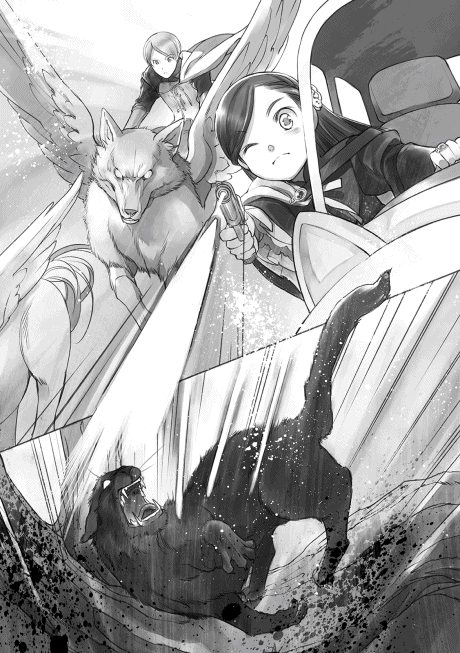
「やった！」
「おぉ！」
ただ、突き刺さりはしたものの、怪我をさせただけに終わった。一撃で倒すのは難しいようだ。魔獣はいくつもの矢が降ってきたことに一瞬怯 んだが、すぐさまこちらに牙を剥いた。
「行きます！」
スピードを上げたコルネリウスの騎獣が魔獣に向かって突っ込んでいく。その手にはすでに剣が握られていて、あっという間に魔獣を狩ってしまった。
「ローゼマイン様の武器の威力は確認いたしました。すぐにこの場を離脱しましょう」
レオノーレの声が上がり、わたし達はほとんどとんぼ返りで寮へ戻る。下手に魔獣が増えてしまうと三人の護衛騎士見習いでは対応しきれなくなってしまうからだ。
「......武器を使っても魔獣を倒せませんでしたね」
もっとカッコよく一撃で何匹もやっつけられるかと思っていたのに、現実は甘くない。
「いいえ、十分です。予想外に魔獣が弱っていて驚きました」
コルネリウスが「弱い魔獣ならば倒せましたよ」と慰めてくれた。どうやら今日の魔獣はやや強かったらしい。
「すごい武器だと思います。けれど、わたくしには使えませんね。あれだけの矢を撃ち出せるだけの魔力がありませんから」
ユーディットは残念そうに水鉄砲を見た。小さくて軽くて片手でも扱えるけれど、攻撃力が魔力量に大きく左右されるそうだ。まさにわたしのための武器である。
......矢が飛び出す時点で、もう水鉄砲じゃないけどね。
予想外に水鉄砲の威力が高くて使い勝手が良さそうなので、わたしはこれから水鉄砲を自分の武器として少しずつ改良していくことに決めた。
......だったら、いっそ、水鉄砲じゃなくて、もっとカッコいい黒い銃にしたいな。こう、ハードボイルドっぽく！
寮に戻って多目的ホールで皆が勉強している中、わたしは一人だけ水鉄砲の見た目を変えられないか奮闘していた。安物のちゃちな水鉄砲ではなくカッコいい黒の銃が欲しい。
「うぐぅ、また失敗......」
だが、残念なことにわたしは黒くてカッコいい銃を玩具でさえ触ったことがなく、明確にイメージできなかった。いくら試してみても脳裏にはっきりと思い浮かべることができず、形にならない。今の時点でできた外見の変化は、水鉄砲を黒くするだけだった。微妙に半透明なのがカッコ悪い。
......のおおぉぉぉ！ わたし、このままじゃハードボイルドの固ゆで卵になれない！ ぷるぷるゆるゆるの温泉卵だよ！
「さぁさぁ、姫様。難しいお顔をしていないで講堂へ向かいますよ。全員初日合格が叶 うかどうかの大事な日です。シュタープではなく座学に集中してくださいませ」
リヒャルダに急かされ、わたしはシュタープの変形を解除する。今日で座学は終了する予定だ。この後、じっくりと水鉄砲を改良していくことはできる。まずは、座学で全員合格だ。
......いつか絶対にカッコいい銃を持って、わたし、ハードボイルドになるんだ！
初日全員合格
今日で座学は全て終わる、終わらせる。そして、余裕ができた午前中には来年の予習をしたり、水鉄砲の改造をしたりして、強くてカッコいいわたしになるのだ。
「お兄様、お姉様、二年生の健闘をお祈りいたします。......去年も全員が初日に合格したのですから、わたくしの心配など必要なさそうですけれど」
シャルロッテが頬に手を当て、そっと息を吐きだしながらそう言った。シャルロッテが率いる一年生は、昨日の午後に行われた歴史と地理で下級貴族三人が不合格になったようで、すでに全員の初日合格を逃している。昨日の夕食後、わたし達が二年生の実技の報告会をしている間、シャルロッテは一年生と対策会議を開いていたそうだ。
「事前に多少の教育と参考書をいただいても、下級貴族を合格させられませんでした。どのようにすれば、事前準備もなしに貴族院へ行って下級貴族全員を合格に導くことができるのか、本当にわからなくて......」
シャルロッテがものすごく不思議そうな顔でわたしを見つめる。シャルロッテは子供部屋で数年間子供達をまとめてきたので、一年生だけを率いるならばそれほど難しいことではないと思っていたらしい。けれど、実際にやってみると、十日ほどの詰め込み勉強では合格ラインには届かなかったそうだ。
「シャルロッテ、あれは常人が真似 できることではないぞ。ローゼマインは合格基準に達しない者に教えながら、その者の苦手な部分を把握 し、それを徹底的に潰すための復習問題を準備していたのだ。自分の睡眠時間を削ってな。その上で自分の勉強をしながらずっと下級貴族達に張り付いて勉強をさせ、重圧をかけ続ける......。あの時の下級貴族達は本当に可哀想であった」
しみじみとした顔で去年の今頃を振り返るヴィルフリートの言葉にわたしは唇を尖らせる。それではまるでわたしがスパルタ教育を行うフェルディナンドのようではないか。
......まぁ、多少参考にさせてもらったけど。
「そもそもヴィルフリート兄様が原因ではありませんか。一年生全員が座学に合格するまで図書館へ行ってはいけないとおっしゃらなければ、わたくしは詰め込み教育なんてしませんでした」
「あぁ、そうだ。私が無知だったのだ。あれで私は、其方に本関連の条件を付ける時は決して他の者を巻き込んではならないと学習した。シャルロッテ、其方もローゼマインを動かす時は十分に気を付けろ。ローゼマインは自分を基準に、周囲にも同等のものを求めるのだ。普段と違って限界までの努力を求めてくるからな」
ヴィルフリートの忠告にシャルロッテが神妙な面持ちで頷いて「お姉様と同等のものを求められるのは辛 すぎます」と妙に実感の籠 もった声で呟いた。
「今年の一年生が最速で合格できなかったことは残念だろう。だが、領主候補生に何日も重圧をかけられながら、ご飯の味も感じられないような状態で勉強内容を詰め込まれるよりは、伸び伸びと勉強ができた方が良いと思うぞ」
身に染みたように言うヴィルフリートに、一年生がものすごく気の毒そうな顔で二年生の下級貴族達を見た。その顔には明らかに「自分達じゃなくて良かった」と書いてある。
「お兄様の言う通りですね。今年はじっくり取り組んで高得点を目指そう、と一年生全員で昨夜決めたのです。上級生に比べると学ぶ内容は少ないですから、高得点を目指しても勝ち目はありますもの。初日の全員合格は来年の目標にしよう、と話し合ったのです。一年間準備ができれば、わたくし達にも勝機はありますもの。ね？」
シャルロッテの言葉に一年生が大きく頷く。そこにはきちんと信頼感が見てとれた。洗礼式を終えてから三年間、子供部屋の統率をしてきたシャルロッテは、しっかりと一年生をまとめているようだ。一発合格できなかった一年生を励まし、次の目標を立てて導いている。
「学ぶ内容が少ない点では一年生が有利でしょうけれど、上級生は準備万端ですから、今年は去年より成績優秀者が多いかもしれませんよ。油断大敵です」
「お姉様ったら、そのような重圧をかけないでくださいませ」
シャルロッテに軽く睨まれながら、わたし達は中央棟を進み、二年生は講堂、一年生はそれぞれの教室へ向かう。
「今日、一年生は騎獣の作製を行うのでしょう？ 皆、頑張ってくださいね」
「えぇ、わたくしもお姉様と同じような乗り込み型の騎獣にするつもりです。お姉様の騎獣を間近で見ていますから、少しは有利かもしれません」
シャルロッテは笑って手を振りながら分かれていった。他の一年生もそれに続いていく。わたし達は講堂で最後の座学だ。
「わたくし達二年生は全員で一発合格を勝ち取りましょう」
「一年間かけて学んだのだ。合格は間違いない。重要なのはいかに高得点を取るかだ」
ヴィルフリートがニッと自信たっぷりの顔で皆を見回しながらそう言う。去年の座学に合格してからすぐに二年生の参考書を見比べながら新しい参考書を作り上げた。全員でできあがった参考書を共有して、それぞれが書き写し、一年かけて勉強してきている。その自信が皆の顔にあった。
「今年は自信があります」
去年の歴史と地理で苦戦したフィリーネとローデリヒが胸を張った。わたし達は大丈夫。そう言えるだけの自信がわたしにもあった。
講堂の十番の席に並んで座り、魔術具のペンを取り出す。今日はエーレンフェストの二年生が昨年に引き続き、座学初日に全員合格ができるかどうかが決まる日だ。周囲の学生達にも注目されているのがわかる。
「やぁ、ヴィルフリート。今日の講義で合格すれば、本当に全員が初日合格できるのか。驚いたよ。ドレヴァンヒェルは下級貴族に不合格がもう数人出ているからね」
三番の席へ向かう途中で足を止めたオルトヴィーンがそう言った。ヴィルフリートはずらりと並ぶドレヴァンヒェルの学生達を見て苦笑する。
「八人が合格すれば全員が合格になるエーレンフェストと違って、ドレヴァンヒェルには三十人くらいの二年生がいるではないか。全員合格の難易度が段違いだぞ」
「それはそうだけれど、少人数でもエーレンフェストの成績が飛躍的に上がっているのは間違いない。実は、今日の全員合格を私も楽しみにしている。高得点を取るのはドレヴァンヒェルだが」
オルトヴィーンがフッと笑いながら自席へ向かって行く。ドレヴァンヒェルからの激励にヴィルフリートが嬉しそうに笑いながら、自分達で作製した参考書を見直し始めた。深緑の目が好敵手 を前にして燃え上がっている。
「ドレヴァンヒェルにも負けられませんね」
「うむ。私は領地に関係なく、自分の成績でオルトヴィーンに勝ちたいのだ」
......いいなぁ。こういう友人関係。
去年の貴族院でヴィルフリートが作ってきた関係を少しばかり羨ましく思いながら、わたしも最後の見直しをする。詩を学ぶ文学と経済や倫理の社会学が今日の科目だ。どちらも簡単な基礎なので、それほど難しくはない。
すぐに鐘が鳴り響き、先生方が入ってくる。いつもならばすぐに試験が始まるのだが、今日は事務連絡から始まった。明日の実の日は一年生が「神の意志」の取得を行う日なので、午前に一年生の座学が行われるらしい。教室の関係で二年生も午前と午後の講義が入れ替わるそうだ。
そんな説明の後、文学の試験が行われた。
「ドレヴァンヒェル、エーレンフェスト、全員合格です」
文学の試験は全員合格だった。ヴィルフリートがぐるりとエーレンフェストの皆を見回して一つ頷くと、すぐさま次の社会学の試験勉強に取り掛かる。
社会学は政変の前後で先生が交代したため、大きく講義内容が変わった科目の一つである。フェルディナンドの参考書と新しい講義内容が全く違って参考書をまとめるのが大変だった。しかも、内容としては昔の方が難しくて将来の役に立ちそうという教科である。
「それでは、社会学の試験を始めますよ」
前に立った社会学の先生はフラウレルムである。全員に試験用紙が行き渡ったのを見回してニッコリと笑う。それから、問題文を読み上げ始めた。
「え？ 何だ、それは......」
「そのような内容はなかったぞ」
途端にざわりとした声が上がる。ドレヴァンヒェルや周囲の上級貴族、どちらかというときっちりと予習をしている領地から上がる声が多い。講堂に広がっていく動揺の声にフラウレルムがキッと強い眼差しを生徒達に向ける。
「お静かになさいませ！ 試験問題を読み上げるのは三回ですよ！ 質問は問題を読み上げてからにしてくださいませ。他の方の迷惑です！」
フラウレルムのキンキンとした高い声が魔術具を通して講堂の中に響き渡る。思わず耳を押さえたくなる声だ。まだざわめきが残っているのも構わずにフラウレルムは問題の二回目を読み始めた。聞き逃しては大変だ、と皆が一斉にペンを手に書き込み始める。講堂のざわめきは瞬時に消えた。
一問目を三回言い終わったところで「フラウレルム先生！」とドレヴァンヒェルから声が上がった。皆が座って書きこんでいる中、オルトヴィーンがざっと立ち上がる。
「何でしょう、ドレヴァンヒェル？」
「試験の内容がおかしいです。このような内容は去年ありませんでした」
オルトヴィーンの言う通りだ。今述べられた問題はフェルディナンド時代の講義内容の物である。政変後、正確にはフラウレルムが担当するようになってから講義内容が変わっていたはずだ。担当する先生が変わる時に講義内容が変わることは珍しくないけれど、同じ先生が担当する間に変わることはまずない。周囲の生徒達からも同様に指摘の声が上がる。しばらくの間、抗議を聞いていたフラウレルムがニィッと唇の端を吊 り上げた。
「去年の内容と違う？ それはそうでしょう。今年これから習う内容ですからね。講義内容が必ずしも前年と同じだとは限りません。今の問題に関しては昔の学生が学んでいたことです。昔の講義内容から学んだ方が良いと判断したものを取り入れただけですよ」
言葉だけを聞くならば、教育熱心な先生の言葉だった。昔の講義内容を調べ、生徒達が学んだ方が良いと判断したものを自分の講義に取り入れたのだから。
......赴任した初めの数年ですれば感心したし、この笑顔がなかったら「先生も頑張ってるんだな」と思えたんだけどね。
講義内容の変更について述べ、フフッと笑うフラウレルムの視線は、起立して質問したオルトヴィーンではなく、エーレンフェストの方へ向いている。講義初日の全員合格を阻 むための試験だというのが嫌でも察せられる笑みだ。
「質問が以上でしたら座ってくださいな、ドレヴァンヒェル」
「......わかりました」
オルトヴィーンにもフラウレルムの視線の意味がわかったのか、座りながらわずかに振り返って心配そうな視線をこちらに向けてきた。周囲からも同情めいた視線が向けられているのがわかる。けれど、最初に声を上げた大領地のドレヴァンヒェルが反論なく座ったことで、周囲もそれ以上の声は上げられなくなった。
「私達はできるだけのことをすれば良い」
ヴィルフリートの呟きにわたしはコクリと頷いた。ローデリヒとフィリーネもフラウレルムを見ながらゆっくりと頷く。
「では、続けますよ」
静まった講堂にフラウレルムの問題を読み上げる声が響き、その合間にはペンを走らせる音が聞こえ始めた。試験再開だ。
「......全員終了か？」
エーレンフェストが試験を終えた時には、ほとんどの領地が提出を終えていた。全く習っておらず、ここ十年ほどの授業で全く行っていない内容が半分ほども出された試験など解けるはずがない。大半の領地が早々に諦めて半分ほど白紙の試験用紙を提出したからだ。
試験を終了しているにもかかわらず、ほとんどの領地が自席に残っているのはエーレンフェストの成績がどうなるのか興味があるからに違いない。
「ローデリヒ、これで提出してきてくれ」
ヴィルフリートの言葉に頷き、試験用紙をまとめて持ったローデリヒがフラウレルムのところへ向かう。エーレンフェストの提出を待ち構えていたらしいフラウレルムがニヤニヤとした笑みを浮かべて試験用紙を手に取った。
「早速エーレンフェストの採点をいたしましょう」
そう言って採点を始めた途端に、フラウレルムの目が大きく見開かれ、採点していく手がわなわなと震え始める。
「ほぅ、素晴らしい回答ではありませんか」
「これで満足したでしょう、フラウレルム先生？ エーレンフェストは不正行為などしていない。何しろ全く教えていない内容でさえ全員合格するのですから」
一緒に採点をしている先生方が面白がるように試験用紙とフラウレルムを見比べた。
「くっ......。エーレンフェストは全員合格ですわ」
悔しそうにさえ感じられるフラウレルムの声が響き、講堂に驚きが走る。試験中の者も驚きに顔を上げ、エーレンフェストへ視線を向けてきた。
「全員合格!? 」
「何故!? 」
周囲の驚きにヴィルフリートが得意そうな笑みを浮かべて周囲を見回す。フィリーネとローデリヒも小さく笑っているのがわかる。間違いなくわたしも「してやったり」という会心の笑みを見せているはずだ。
先に試験を終えていたドレヴァンヒェルがザッと音を立てて立ち上がり、エメラルドグリーンのマントを翻してこちらへ向かってきた。
「ヴィルフリート、全員合格おめでとう。だが、何故合格できたのか聞かせてくれないか？ 試験問題は講義内容と違ったはずだ」
オルトヴィーンの質問にヴィルフリートは軽く肩を竦めた。
「簡単なことだ。フラウレルム先生が言ったではないか。昔の講義内容だと。我々はそこも勉強の範囲に入れていただけだ」
昔と学ぶ内容が違うと、後々仕事を始めてから上司や先輩との知識に差が出てしまう。昔の方が高度なことをしているのだから、必要なことは全て学んだ方が良い。フェルディナンドも「教育レベルが下がっているのが騎士見習いだけだと思わないように」と言っていた。エーレンフェストでは昔の教育を基準に騎士見習い達や新人騎士が特訓を受けて叩き直されていて、新人文官達への教育が見直されているのに、貴族院の学生をそのままにしておくはずがない。
「エーレンフェストの勉強方法を見直す際に、昔の講義内容と今の講義内容を比較しながら新しい参考書を作ったことが、今回の試験でたまたま役に立っただけなのだ、オルトヴィーン」
二年生だけではない。わたし達が新成人となった時に教育不足などと言わせないために、全コースの参考書は昔と今を比較し、両方とも網羅 できるように新しく作り直されている。どの学年、どのコースで今回と同じことが起こっても全く問題ないのだ。
「......驚いた。ドレヴァンヒェルでも参考にさせてもらうよ」
オルトヴィーンが薄い茶色の瞳を瞬いた後、ニッと笑う。来年のドレヴァンヒェルはかなり手強 い相手になりそうだ。三十人でも全員合格しそうである。ヴィルフリートは「お互い頑張ろう」と笑っている。多分ヴィルフリートは全力を出してお互いに戦いたいタイプなのだろう。だが、わたしはどちらかというとできるだけ楽をして勝ちたいタイプだ。
......もうちょっと聖典絵本は秘匿 しておこうっと。
「あぁ、そうだ。ローゼマイン様」
オルトヴィーンに突然声をかけられて、わたしは目を瞬いた。オルトヴィーンがヴィルフリートではなく、わたしに声をかけてくるなんて初めてではなかろうか。なるべく優雅に見えるようにおっとりと首を傾げるわたしに、オルトヴィーンが「アドルフィーネ姉上からの伝言です」と言った。瞬時に脳内には親睦会でワインレッドの髪に指を滑らせて艶 を見せつけてきたアドルフィーネの姿が思い浮かんで、思わず身構えてしまう。
「今日で座学を終えたのならば、奉納式でエーレンフェストに帰還されるまでに午前中は時間があるでしょうからローゼマイン様とぜひお茶会を、と。去年、クラッセンブルクのエグランティーヌ様とは社交シーズンに入る前にもお茶会を楽しんだと聞いて、姉上が残念がっていましたから」
......お、おおお、お茶会に招かれちゃったよ！ うわぁ、行きたくない。何を尋ねられるのかわからなくて怖いもん。
リンシャンをすぐさま真似てきたドレヴァンヒェルからのお招きである。内心で「ひいぃぃっ！」と恐れ戦 いているのを顔に出さないように、わたしは殊更 ニコリとした笑みを深める。いくら怖くてもドレヴァンヒェルのお誘いを断るなんてできるはずがない。エーレンフェストには笑いながら誘いを受けるしか選択肢がないのだ。
「まぁ、アドルフィーネ様のお招きですか？ とても嬉しく存じます。わたくしからも楽しみにしています、とお伝えくださいませ」
......あぁ、図書館時間が減っちゃう。
「姫様、全員が合格した割にはお顔の色がよろしくございませんよ」
寮へ戻ると、心配そうにリヒャルダが顔を覗き込んできた。わたしはそっと息を吐く。
「ドレヴァンヒェルのアドルフィーネ様からお茶会の打診がありました。そのうち招待状が届くと思いますから、側仕え達は対応をお願いしますね」
気が重いわたしと違って、側仕え見習いのブリュンヒルデは飴 色の目にやる気満々の強い光を宿してグッと拳を握った。
「ローゼマイン様の早すぎる社交についていくことができるように、一年間わたくしは勉強してきたのですもの。きっちり対応させていただきますわ」
「奉納式で戻られる前なのに、ずいぶんと多くのお約束がございますね。音楽の先生方のお茶会、図書館のお茶会、ダンケルフェルガーのハンネローレ様、ドレヴァンヒェルのアドルフィーネ様とのお茶会ですか？ 豪華すぎる顔ぶれで、ローゼマイン様の交流関係には本当に驚かされます」
リーゼレータが約束している面々を数え上げ、困ったように小さく笑った。今までのエーレンフェストとは交流範囲が違いすぎるので、準備にとても気を遣うそうだ。
「まぁ、リーゼレータ。こういう場合は腕が鳴ると言うのですよ。社交の始まる時期が早すぎますけれど、わたくしは楽しみですわ。とてもやりがいがありますもの」
ブリュンヒルデは張り切っているが、本来の社交期間を考えると、他の人にとっては早すぎる時期に社交がたくさん入りすぎているのは間違いない。
「講義を終えているのが二年生だけですから、側近の負担になるという理由でドレヴァンヒェルのお茶会をお断りすることはできませんよね？」
「全てお断りするならばまだしも、ドレヴァンヒェルだけというのは無理ですね」
わかっているけれど、やはり無理らしい。軽く息を吐いていると、一年生も昼食のために戻ってきた。帰ってくるまではニコニコと微笑んでいたシャルロッテが、わたしと目が合った途端に駆け寄ってくる。その顔色は青ざめていて途方に暮れているようだった。
「何があったのです、シャルロッテ？」
「あの、お姉様。わたくし、本日の実技の時にドレヴァンヒェルからお茶会のお誘いを受けたのです。初めてのお茶会は緊張するでしょうからお姉様と一緒にどうぞ、と」
......うわぁお、完全に包囲網を敷かれた気分だよ。
リンシャンの製法は簡単に研究されて真似られた。髪飾りも糸を編んで作っているので、真似されるのは時間の問題だ。母さんは一番小さな花を手の上で転がすだけで編み方を悟ったのだ。手練 れの職人ならば一つ髪飾りを手に入れれば、複雑な編み方の髪飾りも一年ほどで再現してくるようになるだろう。植物紙はそう簡単には製法がわからないと思うけれど、繊維 を調べることができるならば、植物から作られていることはすぐにわかると思う。何を聞かれても、何を答えても研究されてしまいそうだ。じりじりと後ずさりしたい気持ちが広がっていく。もういっそ病気になって寝込んでしまいたい。後ろ向きな気持ちでいっぱいになる。
「ドレヴァンヒェルとのお茶会だなんてどうしましょう、お姉様......」
......ハッ！ シャルロッテも招かれているのに、わたしが寝込んだらこんなに不安そうなシャルロッテが一人で行くしかなくなるんじゃ？ それはダメ！
わたしでも憂鬱 な気分になるようなお茶会にシャルロッテを一人で行かせるわけにはいかない。初めてのお茶会に不安がるシャルロッテをわたしが導いてあげなければならないのだ。そう、お姉様として。
「大丈夫です、シャルロッテ。わたくしが付いています。心を強く持って、一緒にドレヴァンヒェルに立ち向かいましょうね」
シャルロッテが藍色の目を瞬きながら、わたしをじっと見た。わたしはシャルロッテを元気づけるために笑って見せる。
......頼りにしてくれていいよ。だって、わたし、シャルロッテのお姉様だからね。
わたしの気持ちが通じたのか、シャルロッテも不安そうな中に気丈な笑みを浮かべた。
「えぇ、わたくしもできるかぎりの努力をいたします」
調合・回復薬
「姫様、午後は調合ですから、急いで調合服に着替えましょう」
騎獣に乗る時にスカートでは乗れないため騎獣服に着替えるように、調合作業をする時は袖が邪魔にならない調合服に着替える。神殿で調合をする時は普段の神官服のままだったので、調合服に袖を通すのは初めてだ。調合服は文官のお仕着せに少し似ている。あまり袖がひらひらしておらず、作業の邪魔になりそうなレースやひだの装飾は極力排することと決められている。一番大きな特色としては、調合服にはマントを付けない。マントと同色のスカーフのような布をブローチで留めることになっている。
リヒャルダに着替えさせてもらい、持ち物に忘れ物がないか確認をした後、わたしは同じように調合の講義を受けるフィリーネに声をかけた。
「フィリーネ、準備は良いですか？」
「はい、ローゼマイン様」
フィリーネは調合服のスカートを少し摘 まんで小さく笑った。フィリーネの調合服はリヒャルダとオティーリエがどこからか探して来てくれた誰かのお下がりだ。お下がりには見えないように繕 ったり、刺繍がされたりしている。
「わたくしも綺麗な調合服で嬉しいです。皆が繕い方を教えてくれました。わたくし、城で過ごすようになって、お裁縫の腕も少し上がったと思いますよ」
「フィリーネは何でも頑張っていますね」
「姫様もフィリーネのようにもう少し刺繍を頑張ってくださいませ」
「えぇ。時の女神ドレッファングーアの糸が重なる時にはきっと......」
頑張る機会があればね、とリヒャルダの言葉を流し、わたしは階段を下りていく。刺繍よりも写本、写本よりも読書の方が重要なのだ。
「お待たせいたしました。小広間へ向かいましょう」
講義としては初めての調合だが、回復薬はすでにいくつも作らされているので、わたしにとっては新鮮味が全くない。「調合は初めてだ。わくわくするな」と言っているヴィルフリートの姿が微笑ましく感じられる。
神殿での回復薬作りは、ただひたすらフェルディナンドに言われた通りの材料を準備して、量って刻んで鍋に放り込んで魔力で練り合わせていくだけだ。まだ自分の回復薬作りをさせてもらえないわたしにとって、今の回復薬作りはただの練習である。できあがった物はエックハルトやアンゲリカに売り払っている。完全に作業と化していて楽しみにはならない。
「わたくしはフェルディナンド様に教えてもらっていますから、楽しみでも何でもありません。せめて、回復薬以外の物を作りたいです」
側近達はわたしがフェルディナンドに教え込まれていることを知っているので「そうですね」と同意するだけだが、ローデリヒは目を丸くして驚きの声を上げた。
「ローゼマイン様はすでに調合もされているのですか!? 」
「自分の回復薬くらい自分で作れるようにならなくてどうする、とフェルディナンド様に言われて教えられました。今のところ四種類の回復薬が作れます」
わたしがそう言った瞬間、騎士見習い達がバッとわたしを見た。
「ちょっと待ってください、ローゼマイン様。回復薬に四つも種類があるのですか!? 」
下級から中級が使う基礎的な回復薬と品質の良い素材を使う上級向けの回復薬の二種類しか貴族院では学ばないらしい。フェルディナンドのような研究馬鹿でもない限り、自分で作れる回復薬は二種類だそうだ。道理で、ちょっと難しい回復薬を作る時はアンゲリカとエックハルトが護衛を希望し、その場で買い取るわけである。
「わたくしが作れるようになったのは、魔力と体力の両方が少し回復する薬、魔力と体力を少し多めに回復させる薬、体力はほとんど回復しないけれど魔力を大幅に回復させる薬、魔力はほとんど回復しないけれど体力を大幅に回復させる薬の四種類です」
......フェルディナンド様はそれに加えて、どちらも大幅に回復するけれど味を犠牲にした激マズ薬、やや改良版の優しさ入り、ハルデンツェルのブレンリュースを入れて味が大幅に改良されたけれど効果はそのままの完璧薬、全部で七種類作れるんだけどね。
べらべらと喋って良いことかどうかわからないので、わたしは心の中で呟くだけだ。
「叔父上がいれば貴族院に来る必要がなさそうだな」
「講義面ではそうかもしれませんが、シュタープを得て貴族として認められるためには貴族院へ来ることが絶対に必須ですよ」
「他領との交流も貴族院でなければ経験できませんわ。責任重大で気が重いですけれど」
座学のために講堂へ向かうシャルロッテがそう言って軽く息を吐いた。これから先の社交を考えると、もうエーレンフェストに戻りたい気分になるらしい。社交を面倒に思う気持ちはよくわかる。
「他領との交流や友人を作ることは楽しいぞ。別に嫌なことだけではない」
社交の楽しい面を強調するヴィルフリートの言葉にシャルロッテの顔に笑顔が戻った。お姉様としてヴィルフリートに負けるわけにはいかない。わたしもシャルロッテの気分を盛り上げるのだ。
「ヴィルフリート兄様の言う通りですね。貴族院に来なければ、本好きのお友達はできませんし、貴族院図書館の本が読めません。人生における損失が大きすぎます」
「ローゼマイン、其方は図書館や本以外にも目を向けろ」
ヴィルフリートの溜息混じりの言葉にシャルロッテも大きく同意したけれど、そんな無茶を言われても困る。図書館や本以外とは、一体どこに目を向ければいいのだろうか。
「わたくし、今年はなるべく平穏な貴族院生活を送るように、と養父様に言われているのです。わたくしが社交に張り切る方が困るようですよ」
去年は王族や上位領地と繋がりを作りすぎて、皆がてんてこ舞いになっていた。今年は繋がりの維持を考えて、社交は平穏に、図書委員活動に精を出した方が良いと思う。
「では、お姉様が読書を楽しめるように、わたくしもできる限りお手伝いいたしますね」
「シャルロッテ、なんて健気 で可愛いことを！ でも、安心してくださいね。わたくし、シャルロッテのお姉様としてできる限り社交も頑張りますから」
「え、あの、お姉様......。どうして？ 図書館に行っても良いのですよ？」
驚いたように目を見開くシャルロッテの腕を軽く叩きながらわたしは何度も頷く。
「大丈夫です、シャルロッテ。わたくしも領主の子、シャルロッテのお姉様ですもの。課せられた責任は果たします」
こんな健気な妹に面倒事を全て任せて図書館に引き籠もるなんてできない。できるだけの社交をこなそう。今、決めた。
小広間に入ると、調合の講義ができるようにいつもとは違う準備がされていた。一番前の壁には白い布が大きく張られている。その手前に台が置かれていた。上にはまだ何も置かれていない。また、テーブルがいくつもあり、一番前のテーブルだけに小さな調合鍋が六個、間隔 を空けて準備されている。薬草を混ぜる過程は先生の目が届く場所でするようだ。鍋は人数分準備されているわけではないので、刻んだ後は早い者勝ちになるだろう。他のテーブルの上には人数分の板が並んでいる。更に、テーブルの中央には天秤 のような秤 があった。
回復薬の作り方は混ぜる薬草の量を量って、まな板のような板の上で薬草を数種類刻んで、鍋に入れてぐるぐる混ぜるだけである。難しいところが全くないので、皆すぐに合格すると思う。
「調合を始めます」
ヒルシュールが器具の扱いや洗浄、注意事項について述べ始めた。どれもこれもフェルディナンドからしつこいくらいに言われていることだ。頷きながら聞いていたが、むしろ、わたしの目はヒルシュールが持ち込んだ魔術具に釘付 けだった。フェルディナンドが修理していた魔術具である。ヒルシュールが魔術具に触れると、大きく張られた布に薬草の量や手順が浮かび上がった。「うわ」と皆が驚くところから考えても、この魔術具はあまり一般的ではないらしい。
「この魔術具を使うのは最初の講義だけです。必ず薬草の名前や量、手順などを各自で書き留めておくように。それが終わった方から薬草を量ってくださいませ。その後、シュタープをナイフに変化させて刻んでください」
ヒルシュールの声に皆が一斉にメモを取り始めた。参考書に全て記されているので、わたしもヴィルフリートもわざわざ書く必要はない。わたしの場合は薬草の名前と分量を見て、一番簡単な回復薬を作るという点を確認しておけばそれで十分だ。「ヴィルフリート兄様からお先にどうぞ」と秤に手を伸ばす。ヴィルフリートが緊張した面持ちで薬草を量り、シュタープをナイフに変形させていく。わたしは自分の薬草を量りながら何となくヴィルフリートの方を見て、目を剥いた。
「ヴィルフリート兄様、それでは指を切ります」
薬草ではなく、指を刻みそうなナイフの持ち方にわたしが思わず息を呑む。麗乃時代の初めての調理実習を行う男子生徒よりもひどい状態だ。わたしの指摘にヴィルフリートは何度か目を瞬き、小さく笑った。
「む？ 大丈夫だ、ローゼマイン。このナイフはシュタープだからな」
シュタープは自分の魔力で作られている。そのため、シュタープを変形させたナイフならば、ちょっと失敗したところで自傷の意図を持っていない限り自分の指を傷つけることがないのである。別にシュタープを変化させなくても調合はできるし、シュタープを変形させるよりも魔力を通すナイフを使った方が魔力の節約になるのに、どうして変形させるのか不思議だったが、ヴィルフリートの言葉を聞いて初めて理解した。
考えてみれば当たり前かもしれないが、領主候補生と上級貴族のクラスはナイフで物を刻むこともしたことがないお嬢様やお坊ちゃまの集まりである。きっと薬草を刻むところで躓 く子が多いに違いない。
「指を傷つけることがないとわかっていても、ひやひやしますね」
「そこまで言うならば、其方が先に手本を見せてくれ。回復薬の調合は得意なのだろう？」
ヴィルフリートが口を尖らせてそう言った瞬間、生徒達の視線がこちらに集まってきた。また妙な注目をされることになったが、仕方ない。薬草の刻み方くらいは教えてあげた方が良さそうだ。
「別にわたくしは得意ではございません。慣れているだけですよ」
得意というのはフェルディナンドのような人のことを言うのだ。わたしは薬草を量った秤をテーブルの中央へ押しやり、シュタープを出して「メッサー」と唱えた。
「ヴィルフリート兄様、ナイフはこのように持って、薬草を押さえる手をこの形にすれば、指を切ることはございませんから」
わたしは猫の手で押さえるようにヴィルフリートへ説明しながら、素早く薬草を刻んでいく。周囲から「おぉ」とか「速いですね」と感嘆の声が上がっているが、これは全くすごいことではない。日常的に料理をする平民ならば誰でもできることだ。
「なるべく均等に切った方が魔力に溶けやすいそうです」
切り終わるとシュタープの変形を「リューケン」で解いて消し、刻んだ薬草を板ごと調合鍋のところへ持って行く。どのように調合するのか気になるようで、ヴィルフリートを始め、同じテーブルの生徒達がぞろぞろと後について来た。
「ヒルシュール先生、調合鍋を使っても大丈夫ですか？」
「早すぎることに少し驚きましたけれど、よろしいですよ。ローゼマイン様は洗浄の仕方もご存じなのでしょう？」
「はい」
「いちいち教える手間が省けますね。......ローゼマイン様がお手本です！ 調合を見たことがない方、書いてある手順だけでは不安な方は前へ見に来てくださいませ！」
ヒルシュールが声を上げて他の生徒達を呼ぶ。「先生が教える手間を惜しむな！」というツッコミを我慢できたわたしは、とても空気が読める良い生徒だと思う。
周囲に見物人が集まって非常にやりにくい空気になった。けれど、やるしかない。わたしはテーブルに一度板を置くと、シュタープを出して「ヴァッシェン」と唱えて調合鍋を洗浄した。もう周囲に水を溢れさせるようなことはしない。魔力の調整は完璧である。
「洗浄は完璧ですね。では、調合を」
わたしは板に載せてきた薬草をザッと鍋に入れる。もう一度シュタープを出して、「スティロ」と唱え、魔力のペンへと変化させると調合鍋を縁どるようにぐるりと円を描き、その中にいくつかの記号を記していく。
「ローゼマイン、その魔法陣は何だ？」
「時間短縮に必要なのです」
ヴィルフリートにそう説明しながら一度変形を解き、「バイメーン」と唱えて混ぜ棒に変化させる。鍋の大きさに合わせた混ぜ棒作りも学習済みなので、ちょうど良い長さの混ぜ棒ができた。後は軽く表面が光るまでぐるぐるとかき混ぜれば、回復薬の完成である。
「ローゼマイン様、時間短縮の魔法陣は講義で教えていないと思うのですけれど」
「あら、失礼いたしました。つい、いつもの癖で......」
長々と混ぜていると腕がだるくなるので、フェルディナンドに時間短縮の裏技を教えてもらってからは常に使っていた。そういえば、今日の講義に魔法陣を描く工程はなかった。ヒルシュールの指摘を受けたが、もう魔法陣を消すこともできない。
「ローゼマイン様が使われた魔法陣は魔力の注ぎ方を倍以上に増やすことで時間を短縮する物ですが、調合に慣れていない者が使うと失敗します。皆様はゆっくりと魔力を込めていってくださいませ」
生徒達に注意を飛ばした後、ヒルシュールは「まったく」と呟きながら溜息を吐いた。
「魔法陣付きで手早く終わらせることができるだなんて、ローゼマイン様は慣れすぎではございませんか？ 少なくとも初めての調合の実技で行うことではございませんよ」
「自分の薬は自分で作れるようになれ、とフェルディナンド様に教えられていますから。まだ作れるだけの技量がないのですけれど」
「相変わらずフェルディナンド様は厳しいのか甘いのかわからない方ですね」
ヒルシュールが「自分の作った薬のレシピを教えるために教育するなど、普通はいたしませんよ」と言いながら、わたしが作った回復薬を何かの魔術具に数滴垂らした。調合でできた物の品質を測定するための魔術具だ。フェルディナンドも同じ物を持っていたので見たことがある。
「品質と効果、共に合格です」
......よしっ！
その後は周囲の生徒達がおっかなびっくりナイフを使う様子が目に入る度に、心臓に悪い思いをしながらヴィルフリートに調合のコツを教えて時間を過ごした。
「ローゼマイン、魔力を均等にするコツがあるのか？」
「流す魔力を弱めないことです。疲れてくると自然と流れる魔力の量が減るので、最初から少なめに流すか、わたくしがしたように時間短縮ができるように魔法陣を使うかですね。ただ、時間を短縮する魔法陣は完成するまで一気に魔力を流し込むことになるので、初心者にはお勧めできません」
周囲の生徒達が聞き耳を立てているのがわかるけれど、質問されたわけでもないのにこちらから教えに行くのはただのお節介ではないだろうか。そんなことを考えている間に終わりの鐘が鳴る。わたしの他の合格者は出なかった。魔力を均等に混ぜていくというのが結構難しいようで、合格基準に達する品質の回復薬ができなかったようだ。
夕食後は領主候補生とその側近が頭を突きあわせて、ドレヴァンヒェル対策を始め、社交に関する質問状を作成した。ヴィルフリートからはジルヴェスターへ、わたしからはフェルディナンドとエルヴィーラへ、シャルロッテからはフロレンツィアへ。ほぼ同じ内容だが、それぞれの回答が欲しいとシャルロッテが言ったので手分けしてみた。これを転移の間にいる騎士に頼んでエーレンフェストへ送ってもらうのだ。文官見習い達に質問状を渡すと、疲れがハァと溜息になって出た。
「お疲れですね、お姉様。体調は大丈夫ですか？」
「わたくしよりもシャルロッテはどうなのです？ 明日は大事な日でしょう？ 疲れを残しては途中で倒れてしまいますよ」
明日は一年生が「神の意志」を取りに最奥の間に向かう日である。そのため、明日だけは一年生が午前に座学で二年生は午前に実技となる。延々と洞窟の中を歩かされたことを思い出したわたしが注意すると、シャルロッテはクスクスと笑った。
「少しくらい疲れていても倒れて意識を失うようなことにはなりませんわ」
「意識を失うことがなくても、領主候補生は下級貴族に比べるとずいぶん奥まで歩かねばならぬ。早目に休んだ方が良いぞ、シャルロッテ」
わたしには強がったシャルロッテが、ヴィルフリートの言葉には素直に頷く。
......何だか、わたし、お姉様としての威厳がなくなっている気がする。これは由々しき事態ではなかろうか。
姉としての威厳を取り戻すためにどうすれば良いのか、うーんと考えているとシャルロッテがわたしの顔を覗き込んできた。
「お姉様、お姉様。やはり体調が良くないのではございませんか？」
「まだ大丈夫です。それよりも、わたくし、お姉様としてシャルロッテのために......」
「わたくしのためを思うのでしたら、すぐにお休みくださいませ。すぐ、ですよ」
藍色の目を心配そうに揺らしながら「お姉様が心配なのです」と言うシャルロッテと、「妹姫に心配をかけてはなりませんよ」と言うリヒャルダの連携によって、わたしはあれよあれよという間に寝台へ放り込まれてしまった。ちなみに、講義に出ている間に天蓋の穴は繕われていたようだ。もう穴が見当たらない。
姉としての威厳を取り戻すためにできることを考えているうちに寝ていたようで、気が付いたら朝だった。
今日は午前が実技になっている。魔石で防具を作るのだ。全身をガッチリと固める全身鎧 は騎士が身に着ける物だけれど、簡易の防弾チョッキに近いような物は全員が作れるようになっていなければ、危険な時代や場所では困るらしい。
「ローゼマイン、カッコいいシュタープ同様、カッコいい鎧を考えるべきではなかろうか？」
「......ヴィルフリート兄様、今日作るのは、普段着の下にも着られる物ですからカッコよさを他の方に見せることはできないと思いますけれど？」
「そ、そうか。......そうだな」
あまりにもガッカリされてしまった。フォローが必要なレベルで肩を落としている。そんなにカッコいい鎧を作りたかったのか。ヴィルフリートのこだわりはよく理解できないけれど、落ち込ませてしまった状態が続くのは居心地が悪い。
「あの、でも、見えないところにも手を抜かないのがオシャレとも言いますから、カッコよさにこだわっても良いと思いますよ」
「見えないところにも手を抜かないのがオシャレか。うむ、気に入った」
簡単に機嫌を直し、ヴィルフリートはカッコいい鎧について話し始める。すでに頭の中に構想があったらしい。残念ながら、ヴィルフリートが考えていた鎧は普段着の下に着られるデザインではなかったので、考え直しになってしまったけれど。
この実技を最初に終えたのは、わたしではなくハンネローレだった。ダンケルフェルガーでは常に身に着けているようで慣れているらしい。ハンネローレを筆頭に、ダンケルフェルガーの上級貴族が次々と合格者を出していく。
騎獣の魔石を作ったように、体に沿わせて固めていく感じでそんなに難しくなかったし、カッコよさにこだわるつもりもなかったので、わたしは簡単に合格をもらった。ヴィルフリートはカッコいい鎧を考えるらしい。気が済むまで頑張ればいいと思う。
ローデリヒの願い
午後は座学が終了したので余裕がある。一年生が最奥の間に行くのを見送った後は、フィリーネとローデリヒの三人で三年生の参考書を基に多目的ホールで文官コースの予習を始めた。今日は座学を終えたユーディットが護衛任務についている。他の二年生もそれぞれの予習を始めたり、ヴィルフリートと共に実技の訓練をしたりして過ごしているようだ。
「二年生の講義が終わったら、二人は何をするのですか？」
一区切りついたところで、わたしは二人に声をかけた。
「ローゼマイン様と違って実技の合格に時間がかかるでしょうけれど、二年生の講義を終えたら、わたくしは他領の方からお話を集めて参ります」
フィリーネが「今年はもっとたくさん集められると思うのです」と若葉のような瞳を輝かせた。去年と違ってどのように話を聞き出していくのかわかっているし、城や神殿で色々な人と関わってきたことで知らない人と話をすることに気後れしなくなってきたらしい。
「それは頼もしいこと。楽しみにしていますね。ローデリヒはどのように過ごすのですか？」
わたしが話を振ると、ローデリヒはオレンジに近い茶色の頭をゆっくりと上げた。手にしていたペンを置き、テーブルの上で指を組み合わせて力を入れる。
「ローゼマイン様にお話があります。いつでも構いません。お時間をいただけませんか？」
決意を秘め、緊張した焦げ茶の瞳がわたしをじっと見つめていた。それが名を捧げると言いだした時のローデリヒの緊張した顔と酷似 して見えて、わたしも知らず知らずのうちに緊張してしまう。自分で側近にしようと思ったことがあるローデリヒの名を受け取る覚悟ができるかどうかは、わたしのこれから先に大きく関わってくる。コクリと喉 が鳴った。
「姫様、お心の準備をよく整えた上でお望みくださいませ」
リヒャルダの静かな声が降ってくる。振り返ると、リヒャルダが柔らかく微笑んでいた。
「名を捧げることはとても重大なことです。それは捧げる方にとっても受け取る方にとっても同じこと。姫様のお心の準備も大切なのですよ」
ローデリヒの決意を秘めた顔にリヒャルダもわたしと同じ事を考えたのだろう。年長者の意見にわたしが頷くと、ローデリヒがゆっくりと頭を横に振った。
「今は名を捧げようとは思っていません。ローゼマイン様と話をしたいと思っています」
「一体何のお話ですか？」
名を捧げるのでなければ何だろうか。全く思い当たらない。首を傾げるわたしを見て、ローデリヒが少し考えるように視線を巡らせる。
「......私が名を捧げたいと思った経緯や、これまでに考えてきたことです。ローゼマイン様にお話ししなければ、名を受けるかどうか判断することもできないだろう、とローゼマイン様の側近に言われたので」
わたしが思わずユーディットやフィリーネへ視線を向けると、ユーディットが少し考えた後、「ハルトムートですよ」と呟いた。どうやらハルトムートが暗躍しているらしい。けれど、ローデリヒの話を聞く機会は必要だ。
「リヒャルダ、個室を準備してちょうだい」
「かしこまりました、姫様」
「本当ならば二人でお話しした方が良いのですが、護衛騎士や側仕えが付くことになります。許してくださいね」
「私が別の派閥のため、警戒対象であることは理解しています」
リヒャルダが話をするための個室を押さえている間に、わたしは軽く目を伏せるようにして勉強していた紙をまとめていく。フィリーネにも緊張が移ったのか、ローデリヒとわたしを交互に見ながら筆記用具を片付け始めた。
護衛騎士のユーディットやフィリーネも連れて、わたし達はリヒャルダが準備してくれた個室へ移る。小さな部屋でローデリヒにも席を勧めて、向かい合った。
「ローデリヒのお話とは何かしら？」
一度目を伏せたローデリヒが顔を上げてフィリーネを見て、ユーディットを見て、リヒャルダを見て、最後にわたしで視線を止めた。
「マティアス様にはよく考えろと言われましたが、私はローゼマイン様に名を捧げたいと思っています。もちろんローゼマイン様が受け入れてくださるのでしたら、の話です。ローゼマイン様は名を捧げられることを望んでいない。私が名を捧げることは負担にしかならない、と言われていますから」
これを言ったのもハルトムートだろうな、と予想しながらわたしは頷く。
「同時に、ローゼマイン様にわかってもらえるように言葉を尽くせとも言われました。貴族院にいる間にしかできないことだから、と。......ですから、少しお話がしたいのです」
言葉を探すようにしながら静かにそう述べるローデリヒは、初対面の印象からはずいぶんと面変わりしていた。
......初対面ではやんちゃな印象だったんだけどな。
ローデリヒはヴィルフリートの友人という印象が強く、一年目は一緒にはしゃいで走り回っていたと思う。わたしに雪玉を投げた子供達の内の一人だったし、教材の貸し出しに関しても、絵本ではなくカルタとトランプを希望していたと思う。白の塔の一件で、ローデリヒに大きな変化があったのは間違いない。
「私は初めての子供部屋がとても楽しかったのです」
ローデリヒの話はそんな言葉から始まった。初めて見る玩具の数々、ゲームに勝てば身分には関係なく与えられるおいしいお菓子、周囲のレベルを確認して発奮できる勉強環境。そして、お金ではなく、わたしが知らないお話と引き換えに貸してくれる教材。
「最初はカルタ欲しさでした。おいしいお菓子を食べるためにはカルタかトランプで勝たなければなりません。少しでも勝率の高いカルタの練習がしたくて、ローゼマイン様に話し始めました。けれど、途中で話の筋がわからなくなってしまったのです。とりあえず、何とか話を終わらせなければ、と私は即興 で作って話を続けました」
「えぇ、子供らしい発想でとても面白かったです」
カルタのために視線を泳がせながら必死に話を続けていたローデリヒの姿を思い出して、わたしは小さく笑う。
「ローゼマイン様が面白がってくれたことが嬉しくて、私は調子に乗ってもう一つお話を作り、トランプも借りることができました。来年も借りられるようにお話を集めようと、春の間に親からいくつか話を聞き出し、本当に子供部屋を楽しみにしていたのです」
ローデリヒは冬の子供部屋に先駆けて、秋の狩猟 大会で貴族街にいる子供達と再会できるのをとても楽しみにしていたらしい。狩猟大会では子供ばかりで集まって、ゲームをして遊んで、大人達の言葉に乗って白の塔を目指して探検を始めた。
「木々に目印を付けているから迷うことはないけれど、白の塔は領主一族しか入ってはならないと父上に言われていました。ちょっとした冒険があのような結果になるとはつゆ知らず、普段は許可なく入ることができない森の探検を私は楽しんでいたのです」
白の塔へ入ったヴィルフリートが罪に問われ、唆 した貴族達も罪に問われた。ヴィルフリートへの罰が比較的軽く済んだため、貴族達への罰も軽かったけれど、その後、ローデリヒを取り巻く周囲の様子はガラリと変わってしまったそうだ。
「私は第二夫人の子で、元々あまり大事にされていませんでした。ただ、ヴィルフリート様と同学年で同性なので近付く機会は多くなります。どうやらその部分だけが父上から評価されていたようです。ヴィルフリート様と仲良く遊んでいた頃は優しく、笑顔が多かったのですが、遠ざけられると同時に父上は笑顔を消しました。手のひらを返したように失態を責められるようになり、私は途方に暮れました。探検を唆したのは父上ではないか、と」
どちらの派閥にも付けるようにしたかったのに、ローデリヒの失態で領主一族に二度と近付くことができなくなった、と父親はローデリヒに辛く当たるようになったらしい。わたしの魔力圧縮方法を自分の派閥に広げるようになってからは尚更だそうだ。
「家で肩身の狭い思いをするようになり、あれほど楽しみにしていた子供部屋でも皆と一緒に騒ぐことが難しくなり、沈んだ気分になりました。本でも読んで時間を潰す方が、周囲の目を気にしながらゲームをするよりずっと気が楽だったのです」
わたしが眠った後の子供部屋については、ヴィルフリートやシャルロッテの視点でしか聞いていないけれど、旧ヴェローニカ派の子供達にとっては非常に肩身の狭い場所だったようだ。
「そんな時、ローゼマイン様の護衛騎士が今年の子供部屋のために新しく作ったという本を見せてくれました。襲撃にあって眠らなければローゼマイン様が見せてくれたはずだ、と言って。......その本の中に自分が語った物語がありました」
ローデリヒは遠くを見るようにして目を潤 ませ、「本当に嬉しかったのです」ときつく拳を握った。その本は、子供部屋に居場所がないように感じていた時に見つけた、ローデリヒの唯一の居場所だったそうだ。
「何度も繰り返し読むうちに、自分が語っためちゃくちゃな文章がきちんと本として読めるように直されて、物語になっていることに気付きました。それから私は本に書かれた文章を注意して読むようになりました。どのように書けば良いのか、考えながら文章を作るようになったのです。まだまだ稚拙 ですが......」
子供部屋でゲームに熱中して遊ぶのではなく、ローデリヒは聖典絵本や騎士物語を読み込み、フィリーネの集めたお話を基に新しい話を作ってみたり、自分で集めた話を物語として読むための文章に直したりしていたらしい。手元に本がほとんどないローデリヒには大変な作業だったと思う。
「努力がよく表れていると思います。去年の貴族院でローデリヒが持ち込んだお話は丁寧に作られていましたから」
「ローゼマイン様はそのように派閥に関係なく、誰の行いも評価してくださいます。去年も私が書いた話を買い取ってくださいました。私はあの時にローゼマイン様にお仕えしたいと強く思ったのです。けれど、私は完全に警戒されています。旧ヴェローニカ派で、婚約者となったヴィルフリート様に対して消しがたい失態も犯しています。成人して派閥を抜けてもそう簡単に信用は得られません。お仕えするなど夢のまた夢です」
ローデリヒは指を組んだ自分の手を見下ろすようにして、わたし達から視線を外し、言いにくそうに先を続けた。
「私は側近になれないのに、自分と同じように話を集めていた下級貴族のフィリーネが側近として仕えることを許されています。それが非常に羨ましく、私は派閥が違う自分の立場を恨みました」
ローデリヒの言葉にフィリーネが申し訳なさそうな表情になって、そっと顔を伏せる。
「私がローゼマイン様の側近になれる機会は絶対にないと思っていました。けれど、名を捧げることで信用が得られるとアウブ・エーレンフェストは道を示してくださった」
ローデリヒがクッと顔を上げて、わたしを見た。
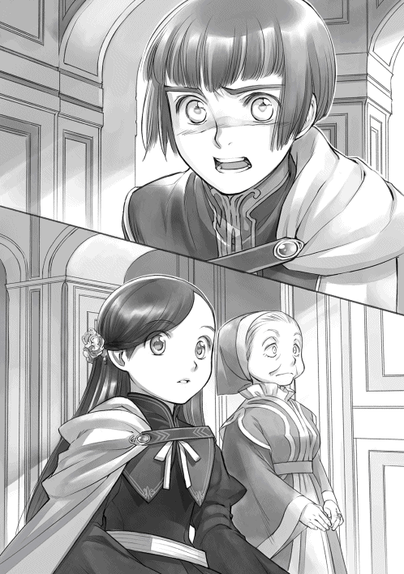
「名を捧げることで信用されるのならば、私は名を捧げたいと思います。フィリーネがあらゆる物語を集めてローゼマイン様に捧げることを誓うならば、私はローゼマイン様のために物語を作って捧げることを誓いたいと思うのです」
指を組んでいる手に力が入る。指先が白くなるほど力が籠もっていた。ローデリヒの焦げ茶の目が強い光を孕 み、わたしをじっと見つめている。
「お願いです。......ローゼマイン様が私を側近に召し上げても良いと思える物語を作ることができれば、その時は、私の名を受けていただけませんか？」
名を受けてほしいと願うローデリヒは、側近として召し上げていなくても、とっくにわたしの臣下だった。わたしはもうローデリヒが持ち込んだ物語を読んで楽しんでいる。側近にしたいと周囲に願い出て却下 されている。ローデリヒの名を受けることで周囲が納得するならば、側近に召し上げても良いのではないだろうか。
......名を捧げれば信用しても良いって養父様が言ったんだよね？
「わたくしはローデリヒの名を受けたいと思います」
「ローゼマイン様!? 」
信じられないというようにローデリヒが目を丸くして、わたしを見る。
「ローデリヒはわたくしが一番欲しい物を捧げてくれるのですもの。物語と一緒に名も受けます」
「姫様にとっては名がおまけなのですね」
リヒャルダが呆れたようにそう言ったけれど、本当におまけなのだ。わたしは名を捧げられなくてもローデリヒを信用できるのだから。
「ただ、こちらでもローデリヒの受け入れ態勢を整えなければなりません。まず、自分の家族とよく話し合ってくださいませ」
「その必要はありません。家族にとって私はいてもいなくても良い存在です」
その表情が辛そうに見えて、わたしはローデリヒの顔を覗き込んだ。
「わたくしと繋がりができれば、家族の方から近付いて来るのではありませんか？ それを機会に家族と仲良くすれば......」
言いかけたわたしをローデリヒがきつく目を瞑 ることで拒否する。
「父上の言葉で私はヴィルフリート様の信用を失い、子供部屋での楽しい時間をなくし、ローゼマイン様の側に近付くことが難しい立場へと追いやられました。私が名を捧げるのは、私が信頼を得るためであって、父上や家族のためではありません。もし、今後父上の言葉や行動でローゼマイン様が不利益を被 ることがあれば、私は二度と父上を許せなくなります。名捧げと同時に家族と離れることを許してください」
家族と離れたいと望むローデリヒの姿は、かつてのルッツを思い出させた。あの時、フェルディナンドは全てを詳 らかにしなければならないと言った。それぞれ家族同士を思っているのに言葉や心がずれている可能性もある。ローデリヒが父親の言動に傷つき、辛い思いをしたのは事実だが、それだけで判断はできない。
「フィリーネと同じように家族から離す方が良いのか、共に過ごせる方が良いのか、わたくしには情報が足りません。冬の社交界で情報を得てから判断させてくださいませ」
ローデリヒが安堵したように肩の力を抜いた。ゆっくりと頷いた後、先を見据える強い瞳で嬉しそうに微笑む。
「ローゼマイン様が受け入れの準備を整えてくださる間に、私も名を捧げる準備を整えます。まずは名を刻む魔石の作り方から勉強しなければなりませんから」
わたし達が話し合いを終えた時には一年生がぶつからないように少しずつ間隔を空けて順番に戻ってきていた。腕に見えない物を大事そうに抱えているのがわかる。
「すぐに自分の部屋へ入るのですよ。誰にもぶつからないように気を付けて」
リヒャルダが一年生にそう声をかけた。シャルロッテが誇らしげな笑顔で頷きながら階段を上がっていく。これから一年生は「神の意志」が自分に馴染むまで部屋から出ずに過ごすのだ。去年の自分を思い出して懐かしくなった。
一年生がいない分、静かな食堂で夕食を終え、明日の休日をどのように過ごすのか、側近達と話し合う。わたしの動向によって側近達は行動が変わるのだ。
「わたくし、できれば図書館に行きたいです」
「ローゼマイン様、わたくしとリーゼレータはお茶会など、社交の打ち合わせのために外出したいと考えております」
ブリュンヒルデとリーゼレータは早くから始まる社交の下準備に動きたいと言い、コルネリウスとレオノーレは魔獣狩りに行きたいと言い出した。
「上級の文官コースが講義で使う素材を共同で準備するのです」
騎士見習いの人数が少なく、自分達だけで準備をするのが大変な領地ばかりが集まって、協力し合って狩りを行うのだそうだ。
「ローゼマイン様の護衛にはユーディットを残します」
それぞれ予定があるから寮でおとなしくしていてくれると嬉しいという側近達の意見が透けて見える。わたしが図書館を諦めきれないでいると、ハルトムートがニコリと笑った。
「ローゼマイン様、フェルディナンド様の本を読むのはいかがでしょう？ お部屋で読んで勉強すると良いと思われます。フィリーネも一緒に」
......神官長の新しい本!?
思わずわたしが振り向くと、ハルトムートは橙色の目にニコリと笑みを浮かべて、「決まりですね」と言った。ハルトムートの思い通りに動くのはちょっとだけ悔しいが、新しい本の誘惑には抗 えない。明日の予定は部屋でフェルディナンドの本を読むことに決まった。
次の日、朝食を終えると、わたしの側近達はさっさと動き始めた。リーゼレータとブリュンヒルデは支度 を調えて側仕え達の集まりに出かけていく。
「ローゼマイン様、リーゼレータとわたくしは社交のために出かけますね」
「えぇ、お願いします」
「私とレオノーレは素材採集のために魔獣を狩ってきます。ユーディット、後は頼んだぞ」
コルネリウスとレオノーレだけではなく、何人もの騎士見習い達が準備をしている。ヴィルフリートやシャルロッテの護衛騎士も寮に残すのは最低限の人数になるらしい。
側仕え達や騎士見習い達を見送ると、ハルトムートがわたしに部屋へ戻るように言った。
「リヒャルダに本を渡します。ローゼマイン様はお部屋で待っていてください」
部屋で待っていると、リヒャルダがハルトムートからフェルディナンドの本を受け取ってきてくれた。机の上で広げてくれた本を、フィリーネと二人で覗き込む。
「薄いですね。ダンケルフェルガーの本くらいの厚みがあると思っていました」
ずっと写本していたフィリーネがフェルディナンドの本を見てそう言った。確かにダンケルフェルガーの本と比べると薄いけれど、一日で読み終わらない程度の厚みはある。
「これは魔法陣ですね。......魔術具の作り方ではないかしら？」
フェルディナンドが貸してくれた本は、魔術具の作り方に関する本だった。魔術具を作るために必要な素材や品質などが詳しく書かれていて、魔法陣が載っている。
「フェルディナンド様の手跡ですから、研究成果をまとめられた本でしょうか？」
神殿で手伝いをしているフィリーネはフェルディナンドの手跡もよく見ている。わたしは「そうですね」と軽く同意しながらページをめくっていく。貴族院の図書館の二階で読んだことがある先生方の研究成果の一部について記述があった。間違いなくフェルディナンドが自分のためにまとめた本のようだ。
「......ローゼマイン様、間に紙が挟まっているようです」
フィリーネが指差す部分を見てみると、まるで付箋 のように植物紙が挟まれていた。羊皮紙とは色が少し違うのでわかりやすい。フェルディナンドのメモ書きだ。なんとわたしが語った理想の図書館に欲しい魔術具を作る上で必要な情報が書かれているらしい。
「こちらの魔術具はものぐさな教師のために作った魔法陣だ。失 くしては困る物が自分のところへ戻ってくる。この魔法陣に期限を付け加えることができれば、返却期限を過ぎたら自動的に戻ってくる本ができるかもしれない。しっかり勉強して一つの魔法陣に組み込んでみなさい......だそうです。フェルディナンド様はすごいですね」
わたしの理想の図書館は現実的ではないと却下しつつ、できそうな部分に関してはこうして探してくれていたようだ。フェルディナンドの中ではすでに正解の魔法陣ができあがっていそうだが、それを教えてはくれないところがとても彼らしい。
「やってみましょう」
フィリーネと一緒にああでもない、こうでもない、と言いながら、本を何度も見直しては魔法陣を作ってみる。
「移動させたいのですから、ここに風が入るのですよね？」
「フィリーネ、よく見てください。風を入れてしまうと、ここに命が入るので起動しませんよ。でも、こちらに土を入れると動きが変わるでしょう？ どうすればいいのかしら？」
二つの魔法陣の機能を合わせ、新しい魔法陣を作るのは難しい。二年生のわたし達では全く歯が立たない。
「ユーディット、わかりますか？」
「三年生では難しい魔法陣を習わないので、わたくしの知識はローゼマイン様やフィリーネとさほど変わりませんよ」
ふるふると頭を横に振って辞退しようとするユーディットの姿が、何となくアンゲリカを思い出させた。アンゲリカのようになってしまっては大変だ。
「ユーディットもなるべく頭を使った方が良いですよ。一緒に考えましょう。自動的に目的地へ動く魔法陣ができればディッターで役に立つかもしれません」
「......それは騎士の仕事ではないと思うのですけれど」
三人寄れば文殊 の知恵とも言うので、渋るユーディットも引きこんで一緒に悩み始めた。けれど、やはりどうにも上手くいかない。
「ハルトムートにも意見を尋ねてみたいですね」
上級文官見習いで優秀者に選ばれる彼ならば、少しはわかるかもしれない。リヒャルダに個室を押さえてもらって、ハルトムートを呼んでもらうことにする。
「姫様、ハルトムートは不在でした」
「......ハルトムートに外出の予定はなかったですよね？」
わたしの呟きにフィリーネは頷き、ユーディットは楽しそうに菫色の瞳を輝かせた。
「もしかしたら、お相手に会いに行ったのかもしれませんね。他領の方ならば、約一年ぶりの逢瀬 でしょうし......」
......何ですと!?
「つまり、フェルディナンド様の本を餌 にわたくしを部屋に閉じ込めて、自分は恋人に会いに行ったということですか？」
「いえ、わたくしの思い付きですから、本当かどうかはわかりません。ただ、そうだったら面白いと思っただけです」
ユーディットが慌てたようにわたしの目の前で手を振った。
「でも、わたくし、ハルトムートのお相手について答えを聞いていなかったことを思い出しました。ユーディットはどなたなのか、ご存じですの？」
「残念ながら存じません。ハルトムートは人当たりが良いので知り合いも多いですし、情報を得るために他領の方とお話ししていることが多いですから、お相手は他領の方かもしれないと思ったことはございます」
......今日もこっそりデートなのだろうか。
せっかくの機会なので絶対に聞き出してやろう、とわたしが玄関ホールで待ち構えていると、採集から帰ってきた騎士見習い達がぎょっとした顔でわたしを見た。
「ローゼマイン様、何かございましたか？」
レオノーレの言葉にわたしは玄関扉から目を離さずに答える。
「ハルトムートが内緒で出かけたのです。これはお相手の方と逢瀬かもしれないと思って、どなたなのか聞き出すためにここで待ち構えているのです」
「そんなことのために寒い玄関ホールで立っていると体調を崩します。せめて、多目的ホールに入ればいかがです？」
コルネリウスが呆れたような顔でわたしを見下ろし、多目的ホールを示した。
「ハルトムートを驚かすためにもわたくしはここで待ちます」
「......そうですか。では、私は着替えて参ります」
やれやれ、とコルネリウスが階段へ向かって行く。レオノーレはこちらを気にするように何度か振り返りながらも階段を上がっていった。
......絶対に聞き出すんだ！
仁王立ちで待ち構えていると、ハルトムートが帰ってきた。わたしを見て、わざとらしく目を瞬き、こてりと首を傾げる。
「ローゼマイン様、このようなところでどうしました？ フェルディナンド様の本を読み終わったのですか？」
「わたくしに本を与えてこっそりと逢瀬ですか？ どなたと会っていたのです？ わたくしには紹介できないような方ですか？」
「......まるで悋気 を起こした恋人のようなセリフですね」
クックッと楽しそうに笑いながら、ハルトムートが紙の束を取り出す。羊皮紙とインクの匂いにつられて、わたしはついついその紙の束を目で追った。ハルトムートが右に動かせば右に、左に動かせば左に視線ばかりか体まで動いていく。
「私が会っていたのは他領の文官です。写本した物をいただく約束をしていたのです。私が敬愛する方のために集めてもらった騎士物語ですが、ご機嫌は直りましたか？」
......わたしのための騎士物語!? ハルトムートは忠臣だったよ！
「直ったので見せてくださいませ！」
早く、早く、と催促すると、ハルトムートがフィリーネに紙の束を渡した。
「ここで待っていたのでしたら、体が冷えたはずです。部屋に戻ってから読んでください」
「わかりました。すぐに戻りますよ、ユーディット、フィリーネ」
うきうきで部屋に戻る途中、着替えたコルネリウスが階段を下りてくるのが見えた。
「わたくし、今からお部屋で騎士物語を読みます」
「温かくして読むように。わかったかい？」
コルネリウスが階段を下りていき、ハルトムートに呼びかけるのが聞こえる。何だろうと思って階下を見ると、ハルトムートがコルネリウスに向かって魔石か何かを投げているのがちらりと見えた。
他領の騎士物語を読み始めたわたしは、ハルトムートのお相手について聞こうと思っていたことをすっかり忘れていた。
奉納舞とオルドナンツの調合
「ただいま戻りました、ローゼマイン様」
ハルトムートが仕入れてきてくれた騎士物語を読んでいると、ブリュンヒルデとリーゼレータが側仕え達の集まりから帰ってきた。側仕え達の集まりは春から秋の間に起こった事の情報交換や今年の主達の動向についてそれとなく話を通しておく大事な集まりらしい。
「こちらをローゼマイン様に。音楽の先生方からの招待状でございます」
音楽の先生方の側仕えも集まっていたようで、ブリュンヒルデから招待状が渡された。お茶会は三日後だそうだ。こちらに打診がほとんどなく決まってしまった予定にわたしが首を傾げていると、ブリュンヒルデが困ったように微笑んだ。
「エーレンフェストの二年生が全員合格を勝ち取ったことがすでに先生方の間に広がっているようで、今ならばローゼマイン様の予定がないでしょう、と。わたくし達の成績や学習の進度も把握していらっしゃるようでした。先生方が相手でもお断りできるように、わたくし、もっと精進しなければなりませんね」
ブリュンヒルデがそう言って少し悔しそうに唇を尖らせる。去年初めて先生方に招かれるようになったエーレンフェストでは、先生方の招待を断るのは難しい。もっと上手く立ち回りたいと情熱を燃やしているので、ブリュンヒルデに任せておいて問題はなさそうだ。
「ローゼマイン様、二年生の社会学ではエーレンフェスト以外から合格者が出なかったことが、先生方や他領でずいぶんと噂 になっているようです」
リーゼレータがそう言って軽く微笑んだ。
「色々な意味でエーレンフェストが注目されています。二年生が全員合格して座学を終えたことは広く知られているので、ローゼマイン様の社交も増える可能性がありますね」
リーゼレータの予想にブリュンヒルデが頬に手を当てた。
「社交が増えるのはシャルロッテ様ではないかしら？ ローゼマイン様が奉納式で不在になる頃から社交シーズンに入って、お茶会のお招きが増え始めますもの」
「......わたくし、シャルロッテのためにも貴族院にいる間にできるだけ社交を頑張らなければなりませんね。お姉様として」
社交シーズンにはいなくなってしまうのだから、それまでは頑張らなければならないだろう。やる気に燃えるわたしを見ながら、リーゼレータがクスクスと笑う。
「ローゼマイン様、妹というのは姉に頼られると成長を認められたようで嬉しいものですから、ある程度の社交をシャルロッテ様にお任せしても良いと思われますよ」
そういえば、わたしもトゥーリに褒められたり、「コリンナ様に会いたいの」と頼られたりすると張り切った記憶がある。
「褒めたり、頼って成長を促したりするのもお姉様としての役目ということかしら？......素敵なお姉様になるのは難しいですね。頼りになるお姉様になりたいのですけれど」
「まぁ。ローゼマイン様でなければ招かれない先生方とのお茶会や本の貸し借りをするダンケルフェルガーとのお茶会を確実に終えるだけでも、頼りになるお姉様だと思いますよ。先生方や上位領地のお茶会は、お招きを受けることがこれまでのエーレンフェストではほとんどなかったのですから」
シャルロッテのために先生方や上位領地とのお茶会に全力を注ぐことを決意したわたしは、側仕えに専属楽師のロジーナを加えて、音楽のお茶会の打ち合わせを始める。土産 物や準備する新曲について話し合っているうちに六の鐘が鳴った。
夕食には下級貴族の一年生が一人、顔を見せていたけれど、まだ他の一年生は部屋から出られないようだ。
「ヴィルフリート様、ローゼマイン様。エーレンフェストから返事が届きました」
夕食後、ヴィルフリートの文官見習いのイグナーツが、転移の間にいる騎士から預かった手紙を持って来てくれた。受け取ったハルトムートが目を通し、わたしに渡してくれる分と自分が読む分に分けていく。
「こちらがローゼマイン様宛てですね。これはコルネリウス。其方の母上からのようです」
コルネリウスが非常に嫌そうな顔で手紙を受け取り、目を通し始める。すぐに天を仰ぐようにして頭を抱えた。どうやら頭の痛いことが起こったようだ。その表情から察するに、エスコート相手を教えろという催促か、隠しているつもりですでにバレていたか、どちらかだと思う。コルネリウスの様子を横目で見た後、わたしは自分の手紙に目を通した。
フェルディナンドからの返事だったが、ヴィルフリートやハルトムートの報告に対するお叱りはなく、「君とは平穏という言葉の意味について話し合うところから始めなければならないようだ」という匙 を投げたかのような言葉だけで済まされている。それ以外には「ミズデッポウという新しい武器に関しては私が確認をするまで人目に触れさせるな」とか、「どうしても出なければならない社交以外はシャルロッテに任せるようにしなさい」とか、いくつか細々とした指示が出されているだけだ。
......あれ？ お叱りの言葉が全然ないんだけど？
わたしは何度か読み返し、続きがないのか確認する。これまでならば、お叱りの言葉が数枚分くらいは入っているはずなのに、たった一行で済まされている現状が逆に怖い。
「ハルトムート、本当に報告したのですよね？ わたくしが寝台で水鉄砲を使って天蓋に穴を開けてしまったこと......」
「フェルディナンド様からお叱りの言葉がありましたか？」
「す、少しだけです......」
ハルトムートに読まれないように手紙を自分で抱え込んでいるうちに、何だかどんどんと不安になってきた。
......わたし、もしかしたら、叱る価値もない子だと思われるようになったんじゃ？
フェルディナンドは匙を投げた相手に関しては自分の邪魔にならない限り、視界に入れないタイプだ。そして、邪魔になった時は問答無用で排除する。
......ど、どどど、どうしよう!? 怒られない方が不安だよ。ああぁぁ......。
「それほど大変なことが書かれていたのですか？ ずいぶんと顔色が悪いようですが」
「大丈夫です。わたくし、フェルディナンド様の指示通りにいたしますから！」
......良い子にするからちゃんと怒ってください、神官長！
夢の中でフェルディナンドにくどくどと怒られてちょっとだけホッとして目が覚めた朝。「神の意志」を馴染ませ終わった一年生がちらほらと朝食の食堂に戻ってきているのが見える。下級貴族より上級貴族の方が時間はかかるようで、シャルロッテはまだ部屋から出てきていない。
「私も土の日だけでは間に合わず、水の日のお昼近くになるまで時間がかかっていたから、シャルロッテも昼食には下りてくるだろう」
ヴィルフリートの言葉に軽く頷きながら、わたしはシャルロッテの部屋がある上へと視線を向けた。
「午後からは奉納舞ですけれど、大丈夫でしょうか？」
「一年生は上級生のお稽古を見るのが一番大事だったであろう？ それほど心配しなくても、稽古の時間は長くない」
そう言われて、わたしは去年の奉納舞のお稽古でエグランティーヌの舞をじっと見ていたことを思い出した。確かに一年生のお稽古の時間は長くない。上級生が優先される。今年の卒業生にはエグランティーヌに匹敵 するような素敵な舞を舞える人がいるだろうか。ちょっと楽しみになってきた。
奉納舞は領主候補生が全学年勢揃いするお稽古だ。領主候補生以外は剣舞であったり、音楽であったり、それぞれに決められたお稽古をすることになっている。
無事に「神の意志」を取り込んで昼食を摂 ったシャルロッテやヴィルフリートと一緒に小広間へ向かえば、すでに何人もの領主候補生がいた。慣れた感じで学年ごとに分かれて、お稽古を始めているのが見える。
「では、上級生にお手本を見せていただきましょう。一年生や二年生はよく見ていてくださいませ」
先生の言葉で、最上級生と五年生がお稽古を始めたけれど、今年の最高学年にはエグランティーヌのようにパッと目を引く人はいない。見てすぐにわかる領主候補生はドレヴァンヒェルのアドルフィーネとフレーベルタークのリュディガーだけだ。
アドルフィーネは風の女神の位置で舞っている。ドレヴァンヒェルの領主候補生にはピッタリだ。ただ、今年の光の女神は風の女神よりも見劣りする気がする。本当はアドルフィーネが光の女神をした方が良いのではないだろうか。
リュディガーは命の神の位置で舞っていた。何というかイメージが違いすぎて変な感じだが、領地の順位を撥 ね除 けて闇の神や火の神の役を得る実力はないということだろうか。
最上級生の一群から少し離れたところでは五年生が舞っている。五年生のうちに役が決まっていくようで、誰の表情も真剣である。その中にダンケルフェルガーのレスティラウトやアーレンスバッハのディートリンデが舞う姿が見えた。やはり大領地の領主候補生として、闇の神や光の女神を狙っているのだろうか。
......意外とレスティラウト様の舞が上手いね。軸がしっかりしていて、舞っている時の安定感があるみたい。ダンケルフェルガーで鍛えられているのかな？ ディートリンデ様は......うん、普通。エグランティーヌ様と比べちゃダメだよね。
上級生が舞うのを見た後は、三年生や四年生のお稽古も始まる。二年生と一年生は場所が空くまで、去年と同じように他の学年のお稽古を見ながら待機だ。
「ローゼマイン様、シャルロッテ様。ごきげんよう」
「ごきげんよう、アドルフィーネ様」
休憩時間になると、アドルフィーネがにこやかに近付いてきた。大領地ドレヴァンヒェルの最上級生が十位であるエーレンフェストの下級生のところへ真っ直ぐにやってくるのだから、周囲の注目を集めているのが嫌でもわかる。うひぃ、と内心びくついていたわたしと違い、シャルロッテはにこやかに笑いながら一歩前に出た。
「やはり上級生はお上手ですね。わたくし、うっとりと見惚 れていました」
「まぁ。シャルロッテ様もお稽古を続ければ、最終学年の頃にはこれくらいは舞えるようになりますよ。継続が大事なのです」
アドルフィーネはにこやかにそう言いながら琥珀 の瞳でシャルロッテを見つめる。親睦会でシャルロッテがロックオンされたことを思い出し、わたしは慌ててシャルロッテを隠すように前に出た。お姉様として妹を守らなくてはならない。
「アドルフィーネ様は風の女神なのですね。ドレヴァンヒェルの領主候補生にはとてもよく合っていると思いました。......ただ、力量を考えると、アドルフィーネ様が光の女神でも良いと思うのですけれど」
「ローゼマイン様のお言葉は嬉しいのですけれど、わたくしの中で光の女神はエグランティーヌ様が舞うものなのです。わたくしが舞うものではないと思っています」
その意見は理解できる。やっぱり光の女神はエグランティーヌが一番似合うと思う。わたしが同意していると、アドルフィーネがクスクスと笑いながら、お茶会の話題を出してきた。
「ローゼマイン様のお茶会の予定はいかが？ エーレンフェストは優秀ですから、ずいぶん早くから社交が始められるのでしょう？」
「座学が終わるのは早いのですけれど、実技にはまだ時間がかかりますし、シャルロッテもお招きいただいているので、少し先のことになりそうです」
一年生は優秀な成績を収めるために少し時間をかけることに決めている。シャルロッテは一年生の最優秀を目指すようで、少しでもミスをなくそうと頑張っているのだ。
「実技はどうしても時間がかかりますものね。わたくしもなるべく早く終えるつもりでいるのですけれど、下級生と同じようには参りませんから」
講義内容は上級生の方が難しく、課題も多くなるので、どうしても社交に入る時期が遅くなる。「もちろん、ローゼマイン様がエーレンフェストに帰還される前にはお茶会ができると思いますけれど」とアドルフィーネが言った。
「お話ししたいことがたくさんございますもの。楽しみにしていますね」
にこやかにアドルフィーネが去っていくと、待ち構えていたようにディートリンデがヴィルフリートとリュディガーを連れてやってきた。
「ごきげんよう。今年も従姉弟 同士でお茶会を開きたいと考えているのですけれど、いかが？ シャルロッテ様を歓迎する意味も込めて」
非常に優しい笑顔でディートリンデが提案してきた。シャルロッテもにこやかに応じる。
「わたくし、これまで親族と会う機会がございませんでした。ですから、とても嬉しいです」
シャルロッテの笑顔に頷きながら、ディートリンデは従姉弟同士のお茶会の予定を立てていく。去年と同じように社交シーズンが始まってからの予定なので、どうやら今年もわたしは参加できそうにない。
「ディートリンデ様、申し訳ございません。わたくし、その時期は貴族院を離れていますから......」
日取りをちょっとずらしてほしいな、とお願いしようかと思ったら、ディートリンデが悲しげに眉尻を下げて、残念そうに溜息を吐いた。
「まぁ、また不参加ですの？ 残念ですけれど、大事なお務めですものね。仕方がありませんわ。わたくしが我儘 を言うわけには参りませんもの。シャルロッテ様は参加できるのでしょう？」
「え、えぇ......」
シャルロッテがわたしを気遣うように視線を向けてくる。わたしは神殿の務めがあるので、社交シーズンにいない。それは周知の事実なので、ディートリンデに日取りを変える気がないならばどうしようもない。ディートリンデは時々面倒で嫌らしいことをする人なので心配だが、ヴェローニカ同様に身内には甘いタイプのようだ。シャルロッテは身内認定されているようだし、ヴィルフリートもいるので大丈夫だろう。
「あの、ローゼマイン様......」
「さぁ、休憩は終わりですよ！ 上級生はこちらで、下級生はこちらです」
ハンネローレの声が聞こえた瞬間、先生の声がかかった。ハンネローレが「あ」と小さく呟いたのが聞こえたけれど、終わってしまったものは仕方がない。軽く手を振って笑みを交わしただけでハンネローレとの交流は終わりとなった。
......ディートリンデ様と話をするよりハンネローレ様と図書委員について話をしたかったよ。
休憩を終えると、下級生の奉納舞のお稽古である。わたしの場合、奉納舞のお稽古で大事なのは、真剣に神に祈らないことだ。神殿にいる間もずっとお稽古させられていたので、妙な祝福が飛び出すこともなく、無事に合格をもらうことができた。「よくお稽古されていらっしゃいます」と先生は褒めてくれたけれど、これはお稽古を日常に組み込んだフェルディナンドやロジーナの成果である。
次の日の午前中は来年の自習と、ハルトムートにヒントをもらった魔法陣の作製で時間を過ごし、午後には調合服に着替えて調合の実技に向かう。
「本日はオルドナンツの調合を学びます。どの階級においても最も使用頻度が高い魔術具ですから、複数準備した方が良いでしょう」
そう言いながらヒルシュールは壁に張られた白い布にオルドナンツの調合手順を映し出した。回復薬の時にも使った魔術具なのでもう誰も驚かない。皆が淡々と書き写していく。オルドナンツの調合をしたことはないけれど、手順自体はフェルディナンドの参考書にあった。参考書をまとめる時に書き写してあるので、もう写す必要はない。わたしとヴィルフリートは調合の準備を始めた。
「ローゼマイン様、お手本をお願いいたします」
「......ヒルシュール先生、わたくし、オルドナンツは調合したことがないのですけれど」
「大丈夫です、ローゼマイン様ならば」
ものすごく適当なことを言いながら、ヒルシュールが今回の調合のために持参したわたしの素材を抱えて前へ持って行く。材料がなければ調合はできない。わたしは諦めて前へと向かった。
「では、手順通りにどうぞ」
わたしはたくさんの生徒に見つめられる中、前に映し出されている手順通りに調合をしていった。まず、羊皮紙に描かれている通りの魔法陣をスティロで描き、魔法陣に間違いがないか、ヒルシュールに確認してもらう。次に、鍋をヴァッシェンで洗浄する。それから、調合鍋に風の属性の鳥から取った魔石を入れて、バイメーンでぐるぐると混ぜていく。
「あ、溶けてきた」
わたしの調合鍋を覗き込んでいた生徒達が声を上げた。魔石の形が崩れて黄色のでろりとしたゲル状になってきている。
「完全に溶けてしまってから、この魔法陣を入れます」
ヒルシュールの声に合わせて、わたしは一度皆に見えるように羊皮紙を上げた。その後、調合鍋に入れる。羊皮紙が一瞬で溶けて黄色のゲルに魔法陣が焼き付いた。それを更にぐるぐると混ぜていく。腕がだるくなっても、魔力を流し続けるのが大事だ。
混ぜるうちに今度はどんどん硬くなっていく。鍋にべったりとへばりついていたのが段々まとまっていって、最終的にはカランカランと音を立てて鍋の中を転がるようになるのだ。一瞬カッと光ればできあがりである。周囲から「わぁ！」と歓声が上がった。
「ご覧になりますか？」
黄色の魔石にしか見えないオルドナンツを鍋から取り出すと、近くにいた生徒達に見えるように置いた。生徒達が興味深そうに顔を近付けてくるのがちょっと面白い。
「注意すべき点は、魔法陣に間違いがないこと、完全に魔石が溶けてから魔法陣を加えること、できあがるまで魔力を切らさず丁寧に流し続けることです」
わたしがシュタープの変形を解除し、鍋を洗浄して手早く後片付けをしている間、ヒルシュールは先生らしく調合する時の注意点を述べた。真剣に聞いていた生徒達が自分も調合に取り掛かろうと席に戻っていくのを見て、ヒルシュールはわたしにシュタープを出すように言う。
「きちんと使えるかどうか試しましょう。ローゼマイン様、わたくしにオルドナンツを送ってくださいませ」
わたしはシュタープで軽くオルドナンツを叩いて、ヒルシュールに向かって「できました」と声を入れて飛ばしてみる。問題なく作れたようで、黄色の魔石から白い鳥へと変化し、ヒルシュールのところへ飛んでいったオルドナンツは三回「できました」と言って魔石に戻った。
「大変結構ですね」
「ヒルシュール先生、わたくし、先生の助手ではございませんよ。お手本と言いながら失敗したらどうするのですか？」
今回は成功したから良かったけれど、回復薬と違って初めての調合だったのだ。お手本と言われながら失敗したら、目も当てられない結果になってしまう。「先生がお手本を見せれば良いでしょう」とわたしが不満を漏らすと、ヒルシュールが意外そうな顔で軽く眉を上げた。
「あれだけ安定して魔力を流しているのに、このような初歩の調合で失敗するはずがないではありませんか。それに、ローゼマイン様はフェルディナンド様の弟子ですから、わたくしの弟子のようなものでしょう？」
「え？ 違うと思います」
勝手にヒルシュールの弟子にされても困る。フェルディナンドと違って、わたしには徹夜で魔術具談義ができるような体力もやる気もない。
「それに、お手本を見せるたびにわたくしのオルドナンツが増えても困るのです。優秀な弟子がお手本を見せるのが一番合理的ではありませんか」
「ですから、わたくしは弟子ではないと......」
わたしが反論するよりも早く、ヒルシュールがニコリと笑った。
「わたくし、研究成果をまとめて図書館に新しい本を寄贈 するのですけれど......」
......え？ 新しい本ですと!?
ついつい反論の口を閉ざしてしまったわたしを見て、ヒルシュールがニッと赤い唇の端を上げていく。教師とは思えない悪い笑顔だ。
「一番に見せるのは弟子だと決めているのです」
......悪魔の誘惑だ！ ダメダメ！ よく考えて！ そりゃできれば一番に読みたいよ。読みたいけど、別に一番じゃなくてもいい。読みたいけれど、大丈夫。我慢できる。ヒルシュール先生の弟子という肩書きの方がきっと後々大変なことになるはず。我慢だ、我慢。
「うっ......。わ、わたくしは弟子ではありません」
断腸 の思いでわたしはヒルシュールの言葉を振りきった。
......やったよ。わたし、悪魔の誘惑を振りきったよ。誰か、褒めて！
しかし、悪魔は諦めが悪かった。わたしが断ったのを意外そうな目で見下ろし、頬に手を当てて少し首を傾げる。
「......ローゼマイン様、残り時間、魔法陣の確認をするための助手を務めて下さったら、特別に一番にお貸しいたしますよ」
そんなに助手が必要なら、最初から連れてくればいいでしょう！ と答えるつもりだったのに、わたしの口から出たのは何故か正反対の言葉だった。
「この時間だけならば助手をいたしましょう。......でも、弟子ではありませんからね」
わたしは残りの講義時間をヒルシュールと並んで魔法陣のチェックをして過ごすことになった。おかしい。こんなはずではなかったのに口が勝手に助手宣言をしてしまった。
「なんだ、ローゼマイン。其方、ヒルシュール先生の助手になったのか？」
「今日だけです」
むぅっと唇を尖らせながら、わたしはヴィルフリートの描いた魔法陣に目を走らせる。
「......ヴィルフリート兄様、ここの記号が逆さまです。描き直してくださいませ」
音楽のお茶会と講義終了
本日は音楽の先生とのお茶会である。この時期に講義を終えている学生は非常に少ない上に、去年はエグランティーヌとアナスタージウスが同席したことで、色々とハプニングが起こった。そのため、今回参加する学生はわたしだけだ。一応「他のお茶会で披露される前に新曲を拝聴 したいだけですから、ローゼマイン様のご負担が少ない方が良いでしょう」という先生方の配慮である。去年のことを考えると、先生方の配慮はありがたい。ロジーナにアレンジしてもらった新曲を披露する場なので、持って行くお菓子はカトルカールで去年と同じだ。
シャルロッテからはお茶会での話題の振り方を教えられた。「お姉様以外に先生方からお話を伺える者はエーレンフェストにいません。頼りにしています」と言われてしまったのだ。全力で頑張りたいと思う。
......わたし、頼りになるお姉様だからね。
「ようこそ、ローゼマイン様」
パウリーネが迎え入れてくれ、挨拶を交わしている間に側仕え達が土産物を並べたり、ロジーナがフェシュピールの準備をしたりする。挨拶を終えたパウリーネがわたしを席に案内し、お茶を飲み、お菓子を一口食べて見せてくれた。わたしは自分で持ってきたカトルカールを一口食べてお互いのお菓子の毒見を終えると、お茶会の始まりだ。
わたしはロジーナに演奏するように視線を向けて指示すると、新曲の紹介をする。
「新しい曲は水の女神に捧げる曲です」
「ローゼマイン様が作られるのは神に捧げる曲ばかりですが、他の曲は作りませんの？」
パウリーネがのんびりとした口調で尋ねる。わたしはニコリと笑って答えた。
「わたくしは神殿育ちですから、神々が最も身近な題材なのです」
正確には作詞やアレンジをするロジーナが神殿育ちなので、歌詞を作り直すにも神話を元にするのが無難なのだ。
わたしの視線を受けたロジーナがフェシュピールを構えて奏で始める。水の女神に捧げる曲はヒーリング効果のありそうなゆったりした曲だ。クラシックを元にしてある。
「ローゼマイン様もあと数年経てば、神に捧げる曲ではなく、恋歌を作るようになるのかしら？ 春にヴィルフリート様とご婚約されたのでしょう？」
「婚約は決まりましたが、それがどのように恋歌に結びつくのでしょう？ わたくしには先のことを想像することが少し難しいです」
クスクスと笑う先生方の言葉をわたしは笑顔で流しておく。ロジーナが恋をすることがあれば恋歌ができる可能性はあるのだが、楽器一筋でわたしと一緒に神殿と城を行き来している現状では、ロジーナに碌 な出会いがないまま、適齢期を越えてしまいそうだ。
......でも、恋歌はわたしが作るわけにはいかないからね。
ロジーナではなく、わたしが恋歌を作るのは止めた方が良いだろう。恋愛小説でさえフェルディナンドに破廉恥 呼ばわりされてしまったのに、こちらの恋歌をよく理解しないままに作詞して、他の人に破廉恥という評価を付けられたら大変だ。わたしだけではなく、エーレンフェストまでそんな評価になってしまう。
「それにしても、エーレンフェストはずいぶんと成績を上げていますね。去年の成績には驚きましたもの。今年も二年生は試験初日に全員合格したのでしょう？」
「社会学はエーレンフェストしか合格者が出ていないと伺っていますよ」
「音楽でも低学年の下級貴族の頑張りが素晴らしいですね」
音楽は特に教師や楽器に差があるため、下級貴族はいまいちという評価が多かったようだ。けれど、エーレンフェストの低学年は全体的にレベルが上がっているらしい。
「エーレンフェストの下級貴族達は口を揃えて、ローゼマイン様のおかげです、と言うのです。どのようにされたのです？」
興味深そうに尋ねられ、わたしは小さく笑った。
「わたくしは底上げの重視を提案しただけですわ。領主一族の専属楽師が子供部屋や寮で指導するというものです。取り入れると決めたのはアウブ・エーレンフェストですし、わたくしがユレーヴェで眠っている間、実行してくれたのはヴィルフリート兄様とシャルロッテですから、決してわたくしの功績ではないのです」
それ以上の追及をかわすため、わたしは最近の中央の情勢について話を振る。シャルロッテに言われた通り、「わたしが作った曲は中央に広がっているのかどうか」を尋ねてみた。
先生方が楽しそうに目を輝かせて、中央での音楽事情について教えてくれる。
「えぇ。ローゼマイン様の作られた曲は、アナスタージウス王子やエグランティーヌ様が中心となっていたせいでしょうね。驚くほどの速さで広がりました」
「色々なお茶会で拝聴しましたし、わたくし達も新しい曲を聴きたいといくつものお茶会に招かれましたわ」
「特に、人気が高い曲は光の女神に捧げる曲です。アナスタージウス王子がエグランティーヌ様を射止めた曲として、お二人の恋物語と共に流行しています」
アナスタージウスが王位よりもエグランティーヌを求め、二人で王族としてジギスヴァルトを支えていくと公言したことは、中央を始め、上位領地を相当驚かせたようだ。
「アナスタージウス王子に肩入れしていた方々からは、エグランティーヌ様を射止められたのに何故、と驚きの声が上がっておりました。ジギスヴァルト王子が空けられていた第一夫人の座にはアドルフィーネ様が就くことに決まったそうですよ」
ジギスヴァルトが卒業式の時にエスコートした相手は中領地の領主候補生だったようで、最初から第二夫人として結婚し、第一夫人の座は空けられていたらしい。エグランティーヌがアナスタージウスと婚約したことで、王座に就くために大領地から第一夫人を娶 ることになり、アドルフィーネに白羽の矢が立ったそうだ。
「ジギスヴァルト王子と同じ年の女性はご結婚されていらっしゃる方も多いですからね」
「アナスタージウス王子が王座を譲ったことに驚く方は多かったですけれど、王位を巡る争いが回避されたことに胸を撫で下ろす者はもっと多かったと思いますよ」
ジギスヴァルトとアナスタージウスは共に第一夫人の子であり、年が近く、魔力量も同じくらいで甲乙をつけがたいらしい。二人が王位を望んでいたので、代替わりの際にはまた大変な争いが起こるのでは、と思われていたそうだ。
「ヒルデブラント王子は第三夫人の子ですし、年も少し離れておりますから、最初から臣下として育てられていますものね」
「このまますんなりと代替わりができればよいのですけれど......」
心配そうな声でそう言ったパウリーネの言葉に他の先生方も同意する。アナスタージウスが候補から降りて、ヒルデブラントが最初から臣下として育てられているならば、特に問題らしい問題は見当たらないと思う。
「他に何か憂慮 しなければならない問題があるのですか？」
「中央の神殿の聖典原理主義者が少し......。ですが、声高に反対しているのは神殿だけですから、特に問題はございませんよ」
「神殿の言葉など大した意味はございません。貴族が耳を傾けるのは貴族の言葉ですから」
パウリーネは憂いを振り払うようにニコリと笑うとお茶を飲んだ。
「素晴らしい成果です、ローゼマイン様」
お茶会を終えて寮に戻り、今日のお茶会の様子をフィリーネや側仕え達が報告すると、ハルトムートが歓喜に満ちた顔で褒めてくれた。これまで繋がりがほとんどなく、中央の情報が入りにくい状態だったエーレンフェストにとって、今日の情報はとても大きな収穫だったらしい。
「神殿でお育ちのローゼマイン様が聖典原理主義者ではないか、パウリーネ先生はそれとなく探っていたようです。けれど、ローゼマイン様が全く反応しなかったので、安心したように見えましたわ」
ブリュンヒルデの言葉にわたしは首を傾げる。
「あの、聖典原理主義とは何でしょう？ わたくし、耳にしたことがないのですけれど......」
あまり馴染みのある言葉ではないようだ。皆が首を傾げる中、リヒャルダが記憶を探るように頬を押さえて視線を少し上に向ける。
「わたくしも詳しくは存じませんが、聖典に載っていることが最も正しく、王も聖典に従うべきだと主張する団体だと認識しています」
政変で王族がごたごたすると、思い出したかのように出てきては神殿の発言権を少しでも大きくしようと奮闘する団体らしい。
「神殿育ちのローゼマイン様がご存じないのでしたら、エーレンフェストの神殿には関係がないのでしょう。所詮、貴族になれない者達の言葉なので耳を傾ける必要はございません」
そんな言葉で聖典原理主義の話は終わった。
「では、今夜にでもお茶会で得た情報をまとめてエーレンフェストに報告いたします」
「午後の実技で合格すれば、ローゼマイン様は図書館へ行けるのですね？」
「そうです。今日の実技は絶対に合格したいと思っています」
午後からは調合の実技がある。これで図書館に行けるかどうかが決まるのだ。調合服に着替えて、小広間へ入ると、今日もヒルシュールは魔術具を使うようだ。壁に白い布が張ってある。
「では、本日は求婚に使う魔石の作製方法を勉強します」
ヒルシュールはそう言いながら白い布に調合の手順を映し出した。
「求婚をする時も、求婚を受ける時にも必要になります。これは将来誰しも必要になるものですから、丁寧に作ってくださいませ」
今日は練習用なので質にこだわっていないけれど、本来の求婚用の魔石では、まず、自分に準備できる中で最も魔力容量と含有属性が多くて品質の高い、生まれ季節の貴色の魔石を準備する。次に、その魔石を自分の魔力で染める。それから、自分の魔力で染まった魔石に相手の属性の魔力を込めていく。自分と同じ属性の場合は特に必要がない過程になるが、相手の属性を自分が持っていない場合は、その属性を持つ魔石を調合で合わせていかなければならない。
「今日は練習ですから、必ず一つは属性を追加してくださいませ」
......わたし、全属性を持っているんだけど。
最後に、求愛の文字を入れて魔石に文字が浮かぶようにするらしい。麗乃時代の母親が大事にしていた婚約指輪に文字が刻まれていたようなものだと思う。
わたしは自分の魔力で魔石を染めるのは何度も経験があるので、さっさと魔石を染めると調合鍋がある前のテーブルへ移動した。ユレーヴェ作りのための魔石を染めることに比べれば、講義で使う品質の魔石を染めるのは簡単なことだ。
「もう染まったのですか？」
ヒルシュールが驚いたように紫の目を瞬かせたので、わたしは自分の魔力で染めた青い魔石を見せる。ヒルシュールが顔を近付けて確認し、「本当に染まっていますね」と呟いた。
「小さいですし、品質も高くありませんから、それほど時間はかかりませんよ」
「時間がかかるのですよ、普通は」
属性を加えるための黄色の魔石や石に刻む言葉を書いた羊皮紙を調合鍋の隣に並べていく。わたしは全属性を持っているけれど、一応属性を追加する練習のために風属性の魔石を準備した。
「ローゼマイン様はどのような言葉を入れますの？」
ヒルシュールが楽しそうに文字の書かれた羊皮紙へ手を伸ばす。
「どのような言葉と言われましても......」
定例文とも言えるよく使われるフレーズがある。「わたくしの闇の神へ」とか「貴方 の光の女神でありたい」というのが無難だ。羊皮紙の「わたくしの闇の神へ」というありきたりな言葉を見たヒルシュールがものすごくつまらなそうな顔になった。
「ローゼマイン様、お相手の方の心を打つような言葉でなければ、簡単に合格は差し上げられません」
「え!? 練習ですし、魔石が仕上がれば合格でしょう？」
「いいえ。時間はたくさんありますし、ローゼマイン様はすでに婚約者がいるのですから、ヴィルフリート様に贈るつもりで求愛の言葉を考えてくださいませ」
......何それ!? 今から愛の言葉を考えろと？
「わたくしはローゼマイン様らしい言葉を拝見したいのです。たくさんの本を読んでいらっしゃるローゼマイン様ならば、それほど難しくはないでしょう？ エルヴィーラ様の本には素敵な言葉もたくさん出てきましたもの」
......ああぁぁぁ！ 神様がどんどん出てくる愛の言葉やラブシーンが理解できなくて流し読みしてたなんて言えないっ！ 誰か素敵な愛の言葉、プリーズ！
これまでフェルディナンドに叩き込まれてきたどの調合よりも難易度が高い。わたしは調合の実技で初めて手を止めて考え込む羽目になった。
......どどど、どうしよう!? 「愛してる」とか「大好き」辺りが愛の言葉としてはオーソドックスなんだけど、神官長に相談しなきゃ大丈夫なのかどうかわからないよ！
麗乃時代ならばオーソドックスだが、こちらではどのような扱いになるのかわからない。比喩 的な言葉や貴族らしい遠回しな言葉が喜ばれることはわかるけれど、それが一体どんな言葉なのか、今のわたしには判断できないのだ。
「ずいぶんと難しいお顔ですね、ローゼマイン様」
「わたくしのような子供に求愛の言葉を考えさせるのが間違っていると思います」
「とりあえず、ローゼマイン様が贈られて嬉しい求愛の言葉を考えるところから始めてみてはいかがです？ 少しは参考になるかもしれませんよ」
ヒルシュールがクスクスと笑いながらそう言ったことで、わたしは自分が贈られて嬉しい求愛の言葉を考えることにした。
......うーん、「毎朝、お味噌汁 が食べたい」とか「君のための図書館を贈るよ」とか？
頭にすっと浮かんだ言葉をヒルシュールに相談してみたが、不可解という顔ですぐさま却下されてしまった。
「ローゼマイン様、オミソシルとはどのような食べ物でしょう？ 新しくエーレンフェストで作られた料理ですか？」
「エーレンフェストにはないけれど、わたくしが食べてみたいと思っている料理です」
わたしの返事にヒルシュールは深々と溜息を吐いて、頭を左右に振った。
「ローゼマイン様が喜ぶ言葉はわかりましたが、その言葉でヴィルフリート様は喜ばれますか？」
......そりゃ味噌汁が食べたいのはわたしだし、図書館を贈られてときめくヴィルフリート兄様の姿は思い浮かばないよ。
「ヒルシュール先生がわたくしらしい言葉とおっしゃったではありませんか」
「ローゼマイン様らしく、かつ、ヴィルフリート様が喜ばれる言葉ですよ。もう少し殿方を喜ばせようとする努力を見せてくださいませ」
彼氏いない歴が年齢に等しかったわたしには難易度が高すぎる。男の人が喜ぶ言葉がポンポン出てくるような女子力高めの女の子だったら、麗乃時代にも彼氏の一人くらいはいたに違いないし、修ちゃんにバカにされることはなかったはずだ。「貴方好みの女になりますという謙虚 さが全くない」とか、「我が道を突っ走りすぎだ」とか、ずっと言われてきたのだ。いっそ「わたし色に染めてあげる」の方がわたしらしい求愛の言葉かもしれない。
......謙虚さ、ねぇ。
「貴方の色に染めてください、ならば謙虚さが出て、殿方に喜ばれるのでしょうか？」
「まぁまぁまぁ！」
ヒルシュールがひどく楽しそうに、かつ、面白がるように目を輝かせた。何というか、エルヴィーラが恋愛話に食いつく時の表情に酷似している。
「ローゼマイン様は少しおませさんですわね。背伸びしたいお年頃ですもの。気持ちはわかりますけれど、その言葉を刻んだ魔石をヴィルフリート様に捧げるのは成人してからになさいませ。今日は最初の言葉で作りましょう」
この言葉を見たヴィルフリートの反応がとても楽しみなので、本番の求愛の言葉はそれで作って成人後に渡せ、と言われてしまった。ヒルシュールの食いつき方と表情から察するに、あまり人には言えない言葉ではないだろうか。
......成人後ってことは、まさか、破廉恥系？ 神官長に怒られる系？
「ヒルシュール先生、フェルディナンド様に見せて叱られる言葉ではありませんよね？」
わたしが恐る恐る尋ねてみると、ヒルシュールは少し考え込んだ後、ニィッと唇の端を上げていく。
「フェルディナンド様がご覧になることはございません。求愛の言葉はお相手だけに捧げる言葉ですからね」
......見られなかったら大丈夫ってことは、見られたら怒られる言葉じゃ!?
「ローゼマイン様、時間がなくなりますよ。今日中に合格するのでしょう？」
ヒルシュールの言葉にハッとして、わたしは急いで調合に取りかかった。求愛の言葉を考えろと言って邪魔をしたのは誰ですか？ と言いたかったけれど、文句を呑み込んでシュタープを出す。
ユレーヴェ作りの時にも属性を合わせていく調合をしていたので、何事もなく調合自体は簡単に済んだ。濃い青のビー玉のような魔石の中に金色で文字が浮かび上がって見える。
「ローゼマイン様、合格です」
......よしっ！ これで図書館に行けるっ！
「ヴィルフリート兄様、合格しました。これで図書館に行けます」
「......早いな。私は魔力で染めるのが難しいというのに」
ヴィルフリートがなかなか染まらない魔石を睨みながらそう言った。
「調合する時と違って、できるだけ一気に魔力を流し込んだ方が効率は良いですよ」
魔石を染めるためには、流し込む魔力の量が大事だ。魔石の抵抗をねじ伏せるような勢いで魔力を叩きつける方が時間もかからないし、最終的に必要な魔力が少なくて済む。魔力の量が少ない下級貴族は時間をかけるしかないのだが、ここにいる上級貴族や領主候補生ならば何とかなるだろう。
「......早く教えてくれ、ローゼマイン。すでに結構魔力を使った後だ」
「では、今日は魔石を染めるだけで済ませるしかありませんね。完全に染めてしまわなければ、少しずつ魔力が押し出されていくそうですから、魔力を無駄にしないためにも頑張ってくださいませ」
「魔力が押し出されるのですか？」
周囲の学生達が驚いたようにこちらを振り返った。これまで魔術具を使って魔石を染めていて、わたしが手の上に持っているだけで形を崩すようなクズ魔石しか扱ったことがない他の学生は、完全に染めてしまわなければ魔力が押し出されていくことを知らなかったようだ。実は、わたしもダームエルに言われるまで知らなかったけれど。
......だって、わたしは採集したその場でなるべく染めるようにって言われてたから。
「できるだけ一気に......」
ヴィルフリートが魔石に集中して、魔力を流していくのがわかる。ヴィルフリートの隣で魔石を染めていたハンネローレやオルトヴィーンも表情を引き締めて魔石を握り直した。
「できました！」
一番に華やいだ声を上げたのはハンネローレだった。さすが大領地の領主候補生である。魔力量が多いのだろう。瞳によく似た色合いの赤い魔石をわたしに見せてくれる。
「ローゼマイン様の助言のおかげですね」
「ハンネローレ様の魔力量と扱いが良かったのですよ」
「わたくし、どちらかというとあまり魔力の扱いに慣れていませんから、ローゼマイン様の助言がなければなかなか終わらなかったと思います」
お友達が喜んでくれるのは嬉しい。わたしは調合のコツについて、いくつか教えてあげる。早く一緒に図書委員をしたいから、ハンネローレの合格は全力でサポートしたい。
調合の時間が終わるまでハンネローレに付きっきりで助言していたら、ヴィルフリートが「私に助言はないのか？」とちょっと拗 ねた。
「そうですね。ヴィルフリート兄様も図書委員になればいいと思います」
「それは一体何の助言だ!? 」
ちなみに、「貴方の色に染めてください」というのはどういう意味ですか？ とフェルディナンドに質問状を送ったところ、三枚分の返事が「親展」と書かれ、厳重に封をされた状態で届いた。
......かなり直接的な閨 への誘い文句か。確かに破廉恥だ。ヒルシュール先生は本番に使えと言ったけど、本番も使うのは止めておこうっと。
図書委員活動をしたい
......図書館、図書館、図書館に行ける～！
朝からテンションも高く、ブリュンヒルデに「衣装に合わないと思うのですけれど」と顔をしかめられながら図書委員の腕章を付けて、わたしは食堂へ向かった。
「今日は早速図書館へ行きましょう」
「残念ですが、図書館にお供できる側近が揃わないので明日まで待ってください」
すぐさまコルネリウスに却下されてしまった。今日はディッターの練習で、騎士見習いは全員参加する実技があるのだそうだ。
「ローゼマイン様はフィリーネと一緒に自室で過ごしてください。午前中は一人も護衛騎士がいないので、昼食に戻ってくるまで自室から出ないように。午後はレオノーレがいますが、図書館に行ける人数ではありません。午後に出ても良いのは寮の多目的ホールまでです。いいですか？」
有無を言わせないコルネリウスの漆黒の目に、わたしはおとなしく頷いた。騎士見習いにとっては大事な講義なので我儘が通せないのは理解できたけれど、テンションは一気に下がる。
......頑張って一発合格したのに、ちぇ......。
「ローゼマイン様、こういう時のためにフェルディナンド様から本を預かっているのです。今日は読書をして、魔法陣や魔術具についてお勉強をして過ごしてはいかがですか？ 理想の図書館を作るためには入念な準備が必要でしょう」
「素晴らしい案です、ハルトムート」
図書館に行けないのならば仕方がない。ハルトムートがフェルディナンドから預かっている本を読んで一日を過ごすことにしよう。理想の図書館の下準備をするのは心が躍る。ふわっとテンションが上がってきた。
「前回は見事にフェルディナンド様の課題をこなせたのですから、ローゼマイン様ならば今回もこなせると思います」
ハルトムートが言うように、前に読んだ本に書かれていた魔法陣をまとめて一つの魔法陣を作る課題は一応クリアした。理論上は間違っていないはずだ。これがきちんと動けば、期限を越えた本を図書館に戻すことができる。
......図書館に戻すだけじゃなくて、本棚に戻るまでが自動でできるように、わたし、頑張った。七割方、ハルトムートが教えてくれたんだけどね。
一つの魔法陣に欲張りすぎでは？ とハルトムートに言われたけれど、理想の図書館のために欲張るのは別に悪いことではないと思う。一つの魔法陣にまとめろという課題だったので、詰め込めるだけ詰め込んでみたのだ。
「さぁ、姫様。新しい本ですよ」
朝食を終えて部屋で待っていると、リヒャルダがハルトムートから借りてきてくれた本を机の上にドンと置いてくれた。それをフィリーネと二人で読んでいくのだ。
「今日はどのような本でしょうね？ あ、ローゼマイン様。また紙が挟まっていますよ」
フィリーネが取ってくれたフェルディナンドの課題メモによると、神殿の儀式の時に使われている小声にする魔術具に使われている魔法陣を少し改良して刺繍すれば、防音性の高いカーペットにできるらしい。
......今回の課題には刺繍も含めるんだ。
どんどん難易度が上がっていくフェルディナンドの課題にわたしが眉を寄せていると、フィリーネが「静かな環境で読書ができるのは素敵ですから、頑張りましょう」と励ましてくれた。去年、わたしが奉納式で帰還している間も貴族院でお話集めや写本に精を出していたフィリーネは、最終試験が近付いて利用者が多くなってくると騒がしくなった図書館にとても驚いたのだそうだ。
「図書館に来るのは下位領地の方が多かったのですけれど、参考書やキャレルの取り合いがあって、わたくしは少し近付きにくく感じました」
下級貴族であるフィリーネは横暴な貴族に押し退 けられる立場なので、わたしが不在の間は図書館が混み合ってくると、本を借りて寮で写すようにしていたらしい。
「わたくしはローゼマイン様から本を借りるための保証金をお預かりしていますし、ユーディットが一緒について来てくれたので、本を運んでもあまり危険ではありませんでした。けれど、下位領地の下級貴族は借りて帰ることもできず、キャレルで勉強するしかないので、大変だと思います」
フィリーネの話はわたしの知っている図書館とはまるで別の場所の話のようだ。混み合うとは聞いていたけれど、騎士の護衛が必要なほど殺伐 とした雰囲気とは思わなかった。
「無料の原則があれば、キャレルの取り合いは減るのでしょうけれど......」
保証金がなければ本を借りられないからキャレルの取り合いが起こるのだ。もちろん借りていく者が増えれば、本がなくなるので困る者も増えてしまう。印刷を広げて、誰もが必要な本を手にできるようにしなければ難しいだろう。
......いつから印刷を広げていけばいいかな？ ドレヴァンヒェルや中央の様子を見てみないと、まだ決断できないな。
いくら考えたところで貴族院の図書館に関して、わたしにできることはほとんどない。今のところはシュバルツ達への魔力供給くらいだ。
「ローゼマイン様、どうかされましたか？」
「いいえ、何でもありません。本を読みましょう」
今日の魔法陣作製は難しくなかった。防音の魔法陣の範囲を変えるだけで終了だ。ハルトムートは絶対に出す本の順番を間違えていると思う。いきなり難しい課題じゃなくて簡単な課題から出してほしいよ、と思った直後、午前中の講義を終えたユーディットが「ただいま戻りました、ローゼマイン様。昼食ですよ」と呼びに来た。
......あ、順番を間違えているんじゃない。わたしが本を読み終わるまでにかかる時間を見極めて渡してるんだ。......ハルトムートじゃなくて、絶対に神官長の仕業 だ。
半日で読む本、一日で読む本、数日かかる課題と用途によって分けられている気がする。ヒルシュールに渡す資料を頼みごとの難易度によって細かく分けていたのと同じだ。
......わたしの扱い、ヒルシュール先生と同じだった！ なんかショック。
午後はフェシュピールのお稽古や来年の予習で時間を過ごし、次の日は腕章を付けてうきうきで図書館へ向かった。護衛騎士はレオノーレとユーディット、文官はハルトムートとフィリーネ、側仕えはリヒャルダとリーゼレータだ。
「ひめさま、きた」
「ひめさま、ほんよむ？」
ひょこひょこと近付いてきたシュバルツとヴァイスに迎えられ、わたしは二人の額の魔石を撫でて魔力供給をする。わたし達の姿を見つけたソランジュが青い目を丸くしてこちらへやってきた。
「まぁ、ずいぶんと早かったのですね。ローゼマイン様には本当に驚かされます」
「ソランジュ先生、シュバルツ、ヴァイス。二年生の講義を終えました。わたくし、これから奉納式までなるべく図書館に参りますね」
去年よりも早いのではございませんか？ とソランジュに問われて、わたしは大きく頷いた。去年は騎獣作製の実技で一発合格をもらえなかったので、時間がかかったのだ。今年は実技も含めて一発合格だったので早かった。来年は文官コースと領主候補生コースの二つを取る予定なので、きっと時間がかかると思う。
「少しでも早く図書館に来たかったのです。シュバルツ達の衣装も届けたかったですから。着替えはいつにいたしましょう？」
領主会議の時に、エーレンフェストで作れるのかと中央にも心配されていると聞いたけれど、フェルディナンドが納得する物ができたので問題ないはずだ。
「ひめさま、すごい」
「あたらしいいしょう」
新しい主に新しい衣装をもらうのはシュバルツとヴァイスにとって大事なことらしく、何となく浮かれているのがわかる。
「シュバルツ達を着替えさせる場所として、できれば図書館の一室をお借りしたいのです。本来は主の部屋で行うとわかっているのですけれど、シュバルツ達を連れ出すことで去年のような騒動が起こっては困りますから」
騒動の種は潰しておくに限る。わたしの言葉にソランジュが閲覧室の中を見回し、「利用者が増える前でしたら、執務室の奥をお貸しいたしますよ」と微笑んだ。去年と違ってお願いが通るようになっていることからも、ソランジュとの関係が親密になっていることがわかって少し嬉しい。
「いつが良いかしら？ リーゼレータ、希望はあって？」
「わたくしの希望ですか？」
「えぇ。シュバルツとヴァイスの衣装の刺繍を一番頑張ったのはリーゼレータですもの。立ち会えるように考慮するのは当然でしょう？」
わたしの言葉にリーゼレータが真剣に悩み始めた。深い緑の瞳を光らせて虚空 を睨む横顔は、いかにして戦力を伸ばすのか、と考えている時のアンゲリカによく似ている。
「三日後の午後ならば側近達の予定が一番合って、ヒルシュール先生の講義がないはずです」
着替えをさせるとなれば、ヒルシュールはまた講義を放り出してくるかもしれない。そんなところまで考慮して講義予定をしっかりと把握しているリーゼレータがすごい。
「わたくしも問題ございませんよ、ローゼマイン様。その日にいたしましょう」
着替えの日が決まったならば、お茶会の日も決めてしまいたい。
「ソランジュ先生、図書館でのお茶会の予定ですけれど、来週以降の午前中ならば大丈夫だとハンネローレ様がおっしゃいました。ソランジュ先生のご都合はいかがですか？」
「わたくしは早い分には問題ございませんよ。この通り、今は利用者が少ないですから」
人の気配がない閲覧室を見回してソランジュはそう言うとクスクスと笑った。
「では、来週の早いうちにお茶会をいたしましょう。せっかくですから、シュバルツとヴァイスの着替えが終わった後が良いかしら？ ハンネローレ様に新しい衣装を見せることができますもの。わたくし、楽しみで仕方がございません。ハンネローレ様と一緒に図書委員をするのです。ほら、腕章も作ったのですよ」
わたしが自分の腕に付けている腕章を見せると、ソランジュが不思議そうに見つめる。
「図書委員というのは、確か図書館のお手伝いをする者だとおっしゃいましたね」
「はい。去年の終わりのように忙しい時にソランジュ先生やシュバルツ達のお手伝いをするのです」
フェルディナンドの督促 オルドナンツの後から大量に本の返却があり、大変なことになっていた図書館でわたしは図書委員活動を満喫 していた。あれをまたやるのだ。けれど、楽しみに胸を膨らませるわたしを見て、とても困ったようにソランジュが眉尻を下げる。
「ローゼマイン様のお気持ちは大変ありがたいのですけれど、ローゼマイン様がいらっしゃる時期は利用者も少なく、お手伝いは必要ございませんよ」
......何ということでしょう！ 図書委員はいらないって言われちゃったよ。
確かに図書館が忙しくなるのは、わたしが奉納式でエーレンフェストに戻ってからだと聞いている。こんなふうにガランとした図書館ではお手伝いすることもないだろう。
「シュバルツ達の魔力供給をしてくだされば、それだけで十分です。それ以上、領主候補生に迷惑をかけるわけには参りませんもの」
拒否されたのに食い下がれば、権力で脅 すことに繋がる。図書委員はしたいけれど、権力で脅したくない。わたしがしょんぼりと肩を落とすと、ハルトムートが少し屈 んで声をひそめた。
「ローゼマイン様、図書館でどのような魔術具が使われているのか、伺うのではなかったのですか？ 魔術具の改良も図書館のためになる図書委員活動かもしれません」
「ハルトムート、ありがとう存じます」
助言にわたしはハッとして顔を上げた。ソランジュの邪魔にならない、領主候補生らしい図書委員活動があるはずだ。気を取り直してソランジュに質問する。
「ソランジュ先生。今、図書館で使われている魔術具やこれから先に新しく必要だと思われる魔術具はありませんか？」
「何故そのようなことを？」
頬に手を当てて首を傾げるソランジュにわたしは胸を張って答える。
「わたくし、いつの日か自分の図書館を作るつもりなので、そのために貴族院の図書館がどのように運営されているのか知りたいのです」
「まぁ、ご自分の図書館を？ それは壮大で素敵な夢ですわね」
ソランジュが笑いながら、図書館の魔術具に関して色々と教えてくれた。
貴族院の図書館には退室を促す光を放つ魔術具以外にもいくつも魔術具があり、本にとってちょうど良い環境に保つための魔法陣が建物自体に刻まれているらしい。
......何それ、素敵！
麗乃時代に読んだ本では中世の図書室、特に石造りの修道院や教会がパピルスの保存には向かず、数年間でカビが生えたり腐ったりするため、遠方から届けられた書物は急いで羊皮紙に書き写すか、数年ごとにパピルスに書き写し直すしか保存方法がなく大変だったそうだ。羊皮紙よりはパピルスの方が安価でも、保存できなかったらしい。石の壁は気温によっては湿気がひどいことになるので、本を置く場所には木の壁を張り巡らせなければ使えなかったそうだが、貴族院の図書館は魔法陣一つで大変な問題をクリアしているようだ。
「この建物の魔法陣自体をお見せすることができないのが残念ですけれど、王宮図書館には魔法陣に関する記述が載った本もあるのですよ。それに、中央の宝物殿も図書館と同じように管理するのに相応しい温度や湿度に保つための魔法陣があったと記憶しております」
......中央の魔法陣がハイテクすぎる。エーレンフェストもちょっと見習うといいよ。
だが、それらの魔法陣全ての維持に魔力が必要だとすれば、エーレンフェストでは難しいのもわかるし、貴族が減ると困るのもわかる。
「貴族院の図書館の管理は基本的にシュバルツとヴァイスがいれば何とかなります。本の貸し出しやキャレルの管理を全て二人がしていますから」
全てを人の手でしようとすると人数が必要で大変です、とソランジュは言う。ソランジュが一人で切り盛りしていた時は手が届かない部分が非常に多かったらしい。そういう話を聞くと、ローゼマイン図書館を作った時はやはりシュバルツ達のような魔術具が欲しいと思ってしまう。
「ソランジュ先生、今わたくしは期限を過ぎれば自動的に戻ってくる魔法陣を研究しているところなのです。これを本に取り入れられないか、思案中なのです」
「それはとても便利ですけれど、一冊一冊に魔法陣を付与するのでしたら、魔力も多く必要そうですね。ローゼマイン様は豊富な魔力がございますから、魔術具が多くても維持できるかもしれませんけれど、わたくしには難しいと思います」
確かに色々なことができるようにわたしの理想を詰め込んだ魔法陣は魔力食いだ。一冊一冊に魔法陣を付けて、実際に動かすとなれば膨大な魔力が必要になる。要改善だ。
「では、ソランジュ先生が新しく欲しいと思う魔術具はございませんか？」
「新しく欲しいと思ったのは、フェルディナンド様のお声を取り込んだ魔術具でしょうか。去年の督促の効果は絶大でしたからね。フェルディナンド様に毎年お手伝いいただくわけには参りませんから、あの督促が入った魔術具は欲しいと思います」
ちょっと魔力が多く必要だけれど録音する魔術具自体はあるのだが、フェルディナンドに声を入れてほしいと頼む機会がないらしい。ソランジュが残念がっている姿を見て、わたしは首を傾げた。心胆寒からしめて、あれだけの学生達を一斉に図書館に走らせたフェルディナンドの声はすごいと思うけれど、督促だけならば、別にフェルディナンドである必要はないと思う。
「貴族院の先生ではダメなのですか？ ルーフェン先生の声でも効果があるのでは？」
「先生の声は学生達が聴き慣れていますから、効果を考えるとフェルディナンド様に勝る督促はないと思うのです」
「皆、必死で本を抱えて来ましたからね。一度フェルディナンド様に頼んでみます」
......神官長がダメでも、アンゲリカに頼めばシュティンルークで何とかなるかも？
そう考えてわたしは録音の魔術具にフェルディナンドの声を入れるお願いを引き受けた。
それから、ソランジュの執務室へと移動してフェルディナンドの魔石を返してもらう。わたしが図書館に来られるようになったので、魔力を蓄えた魔石はもう必要ない。
「貴重な物を貸してくださったおかげでとても助かりました。フェルディナンド様にもお礼を申し上げてくださいませ」
「はい、伝えますね。......そういえば、ソランジュ先生はじじ様という方をご存じですか？」
「じじ様ですか？ いいえ、聞いたことがございませんけれど？」
図書館のことだからソランジュに尋ねてみたが、ソランジュも知らないと言う。
「二階のメスティオノーラの像が持っているグルトリスハイトに魔力供給をするとじじさまが喜ぶ、とシュバルツ達が言っていたので少し気になったのです。結構魔力を取られましたし......」
わたしが説明を加えると、ソランジュがじっくりと考えるように一度目を伏せた。
「......もしかしたら、シュバルツとヴァイスよりも古い魔術具かもしれません」
「え？」
「今は半分も動いておりませんけれど、この図書館には多くの魔術具がございます。そのうちの一つがじじ様かもしれません」
ソランジュがゆっくりと視線を執務室の奥へやった。そっと息を吐いて首を横に振る。
「残念ながら、わたくしはこの図書館の全てを知っているわけではないのです。わたくしは中級貴族として、上級貴族の補佐をする立場でこの仕事に携 わりました。突然、上級貴族が全員いなくなるという事態になり、引き継ぎが完全には行えていないのです」
途切れた情報が多くあります、とソランジュが悔しそうに零す。上級貴族と中級貴族では職分に違いがあり、処分が決まってから彼等がいなくなるまでのほんの短い期間では大した引き継ぎも行えなかったらしい。上級貴族が数人で魔力供給してきた魔術具を動かすには、一人の中級貴族では魔力が足りず、最低限の魔術具しか動いていないのが現状だそうだ。
「中央の貴族が昔のように増え、上級貴族が派遣され、彼等の部屋に入ることができるようになれば、少しはわかることも増えるのでしょうけれど」
ソランジュは悲しげに一度目を伏せた後、わたしを見て、笑顔を作る。
「さぁ、このようなお話はもう終わりにいたしましょう。ローゼマイン様はごゆっくり読書を楽しんでくださいませ。そのためにいらしたのでしょう？」
わたしは魔石をリヒャルダに預け、ソランジュと共に閲覧室へ戻る。扉を開けた瞬間、先程までは人の気配がなかった閲覧室に十名近くの人物が固まっているのが見えた。どうやら彼等も入ってきたばかりのようだ。
驚きに目を見張るわたし達と同じように、向こうも大きく目を見開いてわたし達を見た。中心にいたのは、部屋に籠もっているはずの第三王子ヒルデブラントだ。明るい紫の瞳が瞬かれ、おっとりと首を傾げると青みがかった銀色の髪が揺れた。
「今は学生がいない時期だと聞いて来たのですが、何故学生がここにいるのでしょう？」
人目に付かない時期ならば良いだろう、とお忍びで図書館に来たらしい。こっそりとやってくる場所が図書館という辺り、この王子はとても良い王子だ。このまま本好きに育つと良いと思う。
「講義に出席しなくても良いのですか？......確か、エーレンフェストの領主候補生でしたよね？」
......この王子、一度しか会ってないわたしのこと、覚えてる!? すごい！
本好きな上に、ヒルデブラントはとても賢いようだ。親睦会で一度顔を合わせただけのわたしのことを覚えているなんてビックリである。ちなみに、わたしは貴族院二年目だが、全ての領主候補生の顔と名前は未だに一致していない。ようやく同学年の領主候補生を全員覚えたところだ。奉納式の後には何人か忘れている自信がある。
「わたくしは図書館で読書をするために講義を終えましたから、これからは図書館にほぼ日参いたします。ヒルデブラント王子のお邪魔をするつもりはございませんから、わたくしのことはお気になさらず読書をお楽しみくださいませ」
たまたま会ってしまったけれど、わたしは幼い王子の読書を邪魔するつもりは全くない。むしろ、読書を推奨 する。どんどん読め。もっと読め。そして、将来的に本好きに育ったヒルデブラントのために図書館の予算が増えて、新しい本が増えてほしいものである。
ごきげんようと挨拶をすると、わたしはさっさとヒルデブラントに背を向けた。
「シュバルツ、魔法陣の改善と魔術具作製に関する研究資料はどこかしら？ ヴァイスはヒルデブラント王子の案内をお願いね」
「わかった、ひめさま。ヒルデブラント、あんないする」
「ひめさまのほん、こっち」
先導するシュバルツや自分の側近達と二階へ上がって、わたしは読書を始める。魔術具関連の資料を読み始めたところ、新しい研究の大半にヒルシュールの名前が入っていた。
......色々と問題のある先生だけど、やっぱり神官長の師匠だな。魔術具について一度聞いてみた方が良いかも。
ヒルシュール先生の研究室
お昼までの時間にいくつかの資料を見た結果、ヒルシュールに話を聞こうという結論に達した。難しくて、今のわたしには理解できないことがたくさんあるのだ。
「リーゼレータ、いつならばヒルシュール先生の研究室にお邪魔できるかしら？」
シュバルツ達の着替えのためにヒルシュールの予定を把握していたリーゼレータに尋ねると、彼女は困ったような顔で少しばかり難色を示した。
「あの研究室にローゼマイン様が足を運ばれるのですか？ どのようなご用件でしょう？」
「今、考えている図書館用の魔術具についてお話を伺いたいのです」
少し俯き気味に考え込んでいたリーゼレータが顔を上げた。
「......魔術具のお話ならば研究室へ行く方が良いですね。ただ、そのお話はシュバルツ達の着替えより前に済ませた方が良いと思います。頭の中が研究一色になると、ヒルシュール先生はこちらのお話に付き合ってくださらないでしょうから」
ヒルシュールには研究に没頭して講義を放り出した実例がある。リーゼレータの言葉に深く頷き、わたしは「なるべく早く面会できるように予約をお願いします」と頼んだ。魔術具の改良や魔法陣が間違えていないか、ついでに、図書館運営に便利な魔術具がないか尋ねてみたい。
「ローゼマイン、其方、今年も王族と接触したのか!? 何をしたのだ!? 」
夕食の席でヴィルフリートに突然そう言われ、魔術具のことで頭がいっぱいだったわたしはすぐに反応ができなくて首を傾げる。
「え？ 王族の魔術具？......シュバルツ達の話ですか？」
「ローゼマイン様、ヒルデブラント王子のことです。朝、図書館でお会いしたでしょう？」
フィリーネの言葉にポンと手を打つ。「そういえば、挨拶しましたね」と答えると、ものすごく不安そうな顔でコルネリウスがわたしの顔を覗き込んだ。
「ローゼマイン、まさか忘れていたのかい......？」
「大丈夫ですよ。少し思い出しにくい隅の方に記憶が転げ落ちていただけです」
それを忘れていると言うのでは？ とコルネリウスから小さな声でツッコミが入ったけれど、忘れていたわけではない。関心がなかったので、印象が薄かっただけだ。
「わたくしは挨拶以外特に何もしていません。お忍びらしい王子のお邪魔にならないようにしましたもの。学生がいない時間を狙って移動していたようですし、わたくしはこれからも図書館に日参すると宣言しているので、もう会わないと思いますよ」
わたしが日参すると言ったのに、姿を隠したい王子がのこのこと図書館へ来るはずがない。偶然の不可抗力です、とわたしが主張すると、ヴィルフリートが眉間に皺を刻んで難しい顔になった。
「其方は去年も不可抗力で王族との交流を増やしていた気がするのだが......」
「ヴィルフリート兄様、フリュートレーネとルングシュメールの癒しは違うのですよ」
去年は去年、今年は今年。アナスタージウスとヒルデブラントは違う、と言い切ったわたしにヴィルフリートが疲れたような溜息を吐いた。
「部屋から出ないと言っていた王族と顔を合わせたのだぞ。これから先も何かあるかもしれぬ」
「あるかも知れませんけれど、ないかもしれません。どうなるかは王族次第ですよ」
難しい顔をするヴィルフリートにわたしは肩を竦めて見せる。面倒事というのは避けているつもりでも勝手に寄ってくるのだ。起こってもないことを考えたところで無駄である。
「そんなことより、これから先の予定の話をしましょう。シュバルツ達の着替えをさせる日が三日後の午後に決まりました。今回は図書館内で場所を提供してくださるそうです。刺繍に協力してくれた女の子達を優先して、お手伝いをしていただきますね」
女の子達を始め、城で一緒に刺繍をしていたシャルロッテが藍色の目を輝かせた。
「お姉様、わたくしもご一緒してよろしいのですか？ 座学は全て終えましたから、午後ならば時間がございます」
「もちろんです、シャルロッテ」
あまり人数が多くなっても困るので、わたしとシャルロッテの側近を中心に時間の空いている女の子達で調整し合いながらメンバーを決めることになった。
「シャルロッテ様、わたくしも刺繍をいたしましたよ」
「ブリュンヒルデ様。わたくしもご一緒したいのですけれど」
楽しそうな雰囲気で誰が同伴するのか話し合っているのを見ていると、リーゼレータが静かに近付いて来てヒルシュールの面会予約を取ったことを報告してくれた。
「ローゼマイン様、明日の午前中ならばお時間をいただけるそうです。その時に紹介したい学生もいると伺っています。ヒルシュール先生の弟子だそうですよ」
「わかりました。明日の午前中にヒルシュール先生の研究室に参りましょう」
「ヒルシュール先生に着替えの日程をお話しするのは必ず後にしてくださいませ」
リーゼレータの心配りにわたしは大きく頷いた。
次の日。わたしは文官の専門棟にあるヒルシュールの研究室へ向かった。フェルディナンドに借りた本と自分で作製した魔法陣を持参し、改良の仕方を尋ねるためである。
資料を抱えたハルトムートとフィリーネ、何故か掃除のための魔術具を抱えたリーゼレータと簡易お茶セットを抱えたブリュンヒルデ、護衛のためのコルネリウスとレオノーレを連れてヒルシュールの研究室を訪れる。扉の前に立つと、側仕え見習いであるリーゼレータが中へ声をかけた。
「ヒルシュール先生、エーレンフェストのローゼマイン様が到着いたしました」
「先生、呼ばれていますよ」
「貴方が近いでしょう。扉を開けてちょうだい」
中から男の子とヒルシュールが言い争う声が聞こえた。少しして大きく扉が開き、一人の男の子が顔を出す。あまり手入れされていない黒髪で、調合服は埃 っぽい。眠そうで疲れているような顔をしていて、全体的に薄汚れている。わたしは思わず眉をひそめてしまったけれど、ヒルシュール先生の研究室を見ればすぐに納得できた。
壁に沿って大きめのテーブルが並び、その上には器具が所狭しと林立し、資料が積まれている。床の上は恐らく積み上げていた資料が雪崩 を起こしたのだろうと推測できる紙や食べかすが散乱していた。部屋の真ん中にあるテーブルだけが綺麗なのは、そこが調合をするための場所だからだろう。余計な物が混ざらないようにきっちりと整えられている。
「どうぞお入りくださいませ」
奥にいるヒルシュールの声にわたしが一歩踏み出そうとしたら、リーゼレータが止めた。
「ヒルシュール先生、これは人を招くお部屋ではありません。昨日ローゼマイン様をお招きできるように整えてくださるとおっしゃったではありませんか」
「ここは人を招く部屋ではなく研究室ですからね」
全く悪びれずにそう言ったヒルシュールを見てリーゼレータが「これですからローゼマイン様をお連れしたくなかったのです」と軽く失望の息を吐いた。
「ヒルシュール先生、必要な資料はテーブルの上にお願いいたします。わたくし、ローゼマイン様の側仕えとして、このようなところに主を入れるわけには参りません」
リーゼレータが卵型の魔術具を取り出してニッコリと笑った。その途端、ヒルシュールと助手が顔色を変えて、床の上に散乱している資料を掻き集め始めた。
「リーゼレータ、その魔術具は何ですか？」
わたしが質問すると、リーゼレータがニコリと笑って教えてくれた。指定した範囲にある物を全て呑み込み、その部分を綺麗にするための魔術具らしい。本来は上の方の埃などを全て床に落とし、そのゴミを一気に片付けるために使うそうだ。床にある物は全てゴミだと見なされるという。
「長期間閉め切っていたお部屋を整える時、最初に使う魔術具です」
リーゼレータが魔術具を使うと、すぐに床の綺麗な部屋になった。テーブルの上は資料が積み上がって大変な状態になっているけれど、そこを片付けるのはリーゼレータの仕事ではない上に、骨が折れるので放置するそうだ。
「お二人とも、見苦しくない程度に見た目を整えてくださいませ」
リーゼレータがそう言いながら、ブリュンヒルデと一緒に簡易お茶セットでお菓子やお茶の準備を整えていく。ヒルシュール達は研究ばかりで碌に食事を摂っていなかったようだ。軽食を見た途端にお腹 の鳴る音が聞こえた。
「研究以外のことにあまり魔力を使用したくないのですけれど、仕方がありませんね」
ヒルシュールが腹の虫を誤魔化すようにヴァッシェンを使い、数秒間で二人ともさっぱりとした見た目になった。回復薬に手を伸ばしながらヒルシュールが席を勧めてくれる。
「ヒルシュール先生、できればご紹介いただけるとありがたいのですけれど」
席に着いたわたしは、軽食に目が釘付けになっている少年へ視線を向ける。
「あら、失礼いたしました」
ヒルシュールがフッと笑みを浮かべて紹介してくれたのは、フェルディナンドに続く優秀な弟子ライムントだった。去年の調合の実技で、少しでも魔力を使わずに調合ができないかと奮闘しているところにヒルシュールが目を付けたらしい。
「発想という点でフェルディナンド様は天才的でした。三年生ですが、ライムントは改良という点で天才的な才能を持っています。ローゼマイン様が魔術具の改良をしたいと考えられるならば、良き相談相手になると思いますよ」
「命の神エーヴィリーベの厳しき選別を受けた類稀 なる出会いに、祝福を祈ることをお許しください」
ライムントがわたしの前に跪 き、初対面の挨拶を述べる。わたしが「許します」と言うと、祝福の光が飛んできた。
「アーレンスバッハの中級文官見習いライムントと申します。以後、お見知りおきを」
ライムントの自己紹介に側近達が表情を変え、警戒の態勢となった。コルネリウスがわたしを守るようにヒルシュールとわたしの間に入ってくる。
「......先生はアーレンスバッハの学生を愛弟子として教育していらっしゃるのですか？」
「えぇ。そうです。何か問題でも？」
「ここ数年のアーレンスバッハとエーレンフェストの情勢をご存じないのですか？」
「存じていますよ。それが何か？」
ヒルシュールは表情を引き締め、ライムントを背に隠すようにしながらゆっくりと首を傾げた。グッとコルネリウスが拳を握り、ヒルシュールを睨む。
「ヒルシュール先生、貴女はそれでもエーレンフェストの寮監 ですか？」
「わたくしはエーレンフェスト出身ですから、エーレンフェストの寮監を任されていますけれど、中央に籍を移した貴族院の教師です。領地に関係なく、ユルゲンシュミットのために優秀な生徒を育てられるように教師は全員中央に籍を移しているのです。わたくしの愛弟子がどこの領地の者でも貴方には全く関係のない話ですよ、コルネリウス」
ヒルシュールはキラリと紫の目を光らせると、厳しい表情でそう言った。
「だが、ローゼマイン様はアーレンスバッハに......」
「まったく......。若いのに頭が固いのか、幼いから長い目で見られないのか、どちらでしょうね。稀有 な才能を伸ばすことが教師の務めです。伸ばせる時間は人の一生の中で本当に短い期間。時世を考慮して機会を損失するのは、才能を潰すことと同じですよ」
ヒルシュールは警戒心も露 わなわたしの側近達を見回し、わざとらしく溜息を吐いた。
「声高に情勢が、と言いますけれど、情勢などほんの数年でくるくると変わるものです。そのような不確かなものより、個人の持つ才能の方がよほど貴重で大事ではありませんか」
テーブルの上で指を組んで、側近達を見回し、その後でじっとわたしを見つめた。
「最もわかりやすい例を挙げるならば、フェルディナンド様です。あの方をわたくしの愛弟子として遇することになった時、エーレンフェストの主流な者からは注意がありましたし、毎週の報告書に対する返事にヴェローニカ様からは嫌味混じりの手紙が届いていました。あれから十年ほどでエーレンフェストの情勢はどのように変わっていますか？」
フェルディナンドをヴェローニカの嫌味から守りつつ、ヒルシュールは愛弟子として育てた。稀有な才能を持つ研究者になれるはずだった弟子は貴族院を卒業し、父親の死と前後して神殿に入った。ヴェローニカに疎 まれ、そのまま神殿で才能を腐らせていくのかと思えば、還俗 し、更に弟子の教育をしている。
「情勢も人生もどのように変わるのか誰にもわかりません。あの時、わたくしがフェルディナンド様を弟子として教育していなければ、今のローゼマイン様も存在しなかったかもしれないのですよ」
情勢に関係なく、自分の勘と弟子の才能を信じて教育する。そう言い切り、実際に実行してきたヒルシュールには確固とした信念があった。
「ヴェローニカ様に送った言葉を、ここでもう一度エーレンフェストに送りましょう。わたくしは中央の貴族で、貴族院の教師です。わたくしが誰を弟子にするのか、どのように教育するのか、口出しする権利はエーレンフェストにありません」
こうしてフェルディナンドを守ってきたのかと感慨深い思いに浸りながら、わたしは軽くコルネリウスの袖を引いた。
「ヒルシュール先生のおっしゃる通りです、コルネリウス。先生がどこの者を弟子にしようとも自由です。......ただ、わたくし達がアーレンスバッハを警戒するのも自由です。こちらにもそれだけの理由があるのですから」
コルネリウスが警戒の表情を崩さないまま、小さく頷いて一歩下がった。
「......少し冷めてしまったかもしれませんね」
ぴりぴりとした空気を変えようと、わたしは持ち込んだお茶やお菓子を一口ずつ食べて、ヒルシュールに勧める。ヒルシュールはパパッとクッキーを口に入れると、すぐにライムントにクッキーを下げ渡した。そして、自分は数個のクレープが載っているお皿を手に取る。ライムントはクッキーを食べて、青い目を輝かせると次々に口へ入れ始めた。貴族なので動きだけは優雅だが、食べっぷりは欠食児童のようだ。
「それにしても、ローゼマイン様がわたくしにお話があるのは珍しいですね」
ヒルシュールは野菜炒 めとハムを包んだクレープを食べながら、話を聞く態勢になった。二人の食べっぷりを見ながら、わたしはちょっとだけお茶を飲む。ここは本当に健康に良くない研究室だ。フェルディナンドの成長過程が目に見える。
「魔術具について色々と教えてほしいのです。わたくし、図書館に利用できる魔術具を作りたいと考えています」
「......図書館というと、ソランジュから問い合わせがあった声を入れる魔術具ですか？」
ソランジュも自分が欲しい魔術具を手に入れるために、オルドナンツを飛ばして色々な研究者に質問していたらしい。
「録音の魔術具だけではなく、もっと多くの魔術具が欲しいのです。使い勝手が良いように改良もしたいですし。それから、わたくし、フェルディナンド様の本を読んで魔法陣を作製したのですけれど、これで間違いがないか見ていただけませんか？」
わたしがハルトムートに視線を向けるのと、クレープを下げ渡されたライムントが目を見開いて顔を上げるのはほぼ同時だった。
「フェルディナンド様の本ですか!? 」
思わず声に出してしまったようで、ライムントは慌てて口元を押さえた。これだけ警戒されている中で発言してしまったのだ。注目を集めるのは当たり前である。ヒルシュールは苦笑混じりの顔で、ライムントを庇 うように口を開いた。
「ライムントはフェルディナンド様が作製して放置している魔術具や魔法陣を改良することに熱意を燃やしています。ソランジュが欲しがっていた録音の魔術具を中級貴族でも使えるように改良したのはライムントなのです」
警戒されているので口には出していないだけで、ライムントの目はハルトムートが抱えている本だけに向いていて、読みたい、読みたい、読みたい、と叫ぶほどに訴えているのがわかる。本を読みたいと熱望する人を撥ね除けるなんて、わたしにはできない。
「ハルトムート......」
「いけません。これはフェルディナンド様の研究成果です。フェルディナンド様にお伺いも立てずに他領の者にお貸しすることはできません」
声をかけた瞬間、笑顔で拒否され、わたしは自分がお断りされた気分で肩を落としながら、ヒルシュールに魔法陣を描いた紙を差し出した。ヒルシュールは流れるような動きで次々と食べていた手を止めると、わたしの描いた魔法陣を広げて視線を走らせる。しばらくじっと見ていたヒルシュールが指先でこめかみを押さえた。
「......ローゼマイン様。何ですか、これは？」
「貸し出した本が期限内に戻って来ない時に強制的に図書館へ戻すための魔法陣です」
「使えませんよ、こんな魔法陣」
ヒルシュールが呆れた顔でそう言った。理論上は間違えていないと思っていたけれど、呆れられるような魔法陣だったらしい。
「どこが間違っているのですか？」
「間違っているのではなく、使えないのです。ローゼマイン様は本当にフェルディナンド様の弟子ですね。領主候補生の魔力を基準にして魔法陣を作ったところで、動かせる者がいないのです。全く実用的ではありません」
ヒルシュールによると、わたしが考えた魔法陣は無駄と工程が多すぎるらしい。
「どうして全てを一つの魔法陣に入れようとするのですか？ 命の属性が入ると、必ず土が必要になる分、どうしても無駄が多くなります」
「一つの魔法陣に収めるのがフェルディナンド様の課題だったのです」
「理論を学ぶためにはその課題も有効でしょうけれど......」
ヒルシュールはそう言って指先でこめかみを叩き、ライムントに魔法陣の紙を渡す。
「ライムント、ローゼマイン様の魔法陣を貴方が使えるように直しなさい。......ローゼマイン様、魔法陣の改良のお手本を見せてもらうと良いですよ」
ヒルシュールに言われ、わたしはライムントの手元をじっと見つめた。魔法陣を睨んでいたライムントが「よくこれだけ詰め込みましたね」と呟きながらペンで修正していく。
「改良の基本ですが、なるべく単純にします。たとえば、この魔法陣の場合、期日が過ぎた本を図書館に戻すのと、図書館内で本棚へ移動させるのは別の魔法陣にします」
「どうしてですか？」
「魔力の無駄遣いだからです。図書館にさえ戻っていればソランジュ先生だけでも片付けられます。魔力に余裕があれば、もう一つの魔法陣を作動させることもできます」
絶対に必要な機能とどちらでも良い機能は分けて考えるように、と注意された。
「領主候補生の中でも最優秀がとれるローゼマイン様の魔力を基準に考えると、図書館に持ち込んだところでソランジュ先生には使うことができない無駄な魔術具になります」
「確かにそうですね」
「政変で動かなくなった魔術具が増えたのも、王族や上級貴族にしか動かせないくらい魔力が必要な魔術具が多かったからです。なるべく機能を分けて、必要な時には中級貴族や下級貴族でも動かせるようにしておいた方が良いと思います」
そう言いながら、ライムントはわたしの魔法陣から盗難防止の魔法陣も独立させた。
「これを独立させて別の魔法陣にすると、こちらの土と風が必要なくなります」
どんどんと魔法陣がシンプルになっていく。わたしのような初心者が作るならば、間違いを減らすためにも魔法陣はなるべく単純にした方が良いらしい。
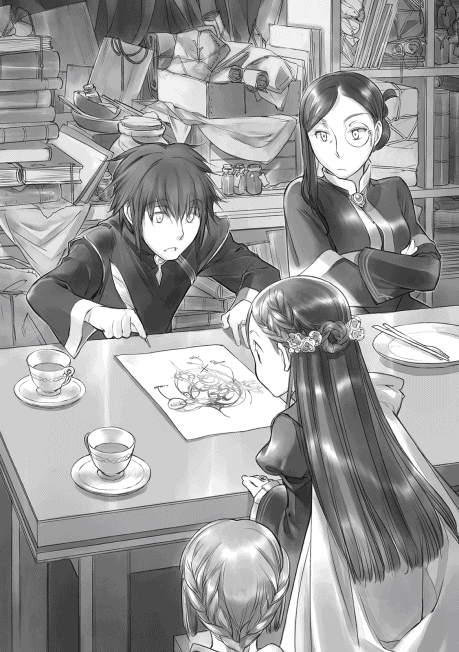
「魔法陣をできるだけ簡素にすること、それから、調合する時に素材をよく吟味 することで魔力の節約ができます。たとえば、図書館に本を戻すための魔法陣を描く紙に、エーレンフェストで発明された動く紙を使うとかなりの魔力節約ができると思います」
「......どうしてライムントが動く紙のことを知っているのですか？ 勘合紙 は領主会議で中央とクラッセンブルクにしか配っていないはずなのですけれど」
わたしが目を瞬くと、ライムントがきょとんとした顔で首を傾げた。
「講義の時にグンドルフ先生が興奮して喋っていました。ぜひとも研究したい、と」
「グンドルフ先生とはどなたでしょう？」
どこからどんなふうに情報が回っているのかわからない。わたしが警戒しながら問いかけると、ヒルシュールが答えをくれた。
「ドレヴァンヒェルの寮監ですよ。わたくしの研究仲間であり、好敵手でもあります。......グンドルフが興味を示しているのでしたら、エーレンフェスト紙や勘合紙も調合の素材として使うと、面白い結果になるかもしれませんね」
ヒルシュールがマッドサイエンティストらしい笑みを浮かべながらわたしへ視線を移す。
「ローゼマイン様、わたくしにエーレンフェスト紙と勘合紙を売ってくださいませ」
「ヒルシュール先生は中央の貴族ですから、勘合紙は売れません」
わたしがそう言うとヒルシュールはショックを受けたような顔で固まった。けれど、すぐに気を取り直して、「ローゼマイン様、同郷の誼 でお願いいたします」と何度もおねだりし始める。とても長引きそうな気配を察して、わたしはヒルシュールを睨んだ。
「......あまりしつこいとシュバルツ達の着替えにお招きしませんよ」
ヒルシュールがピタリと口を閉ざした。
ヒルシュール先生の弟子
ライムントに魔法陣の改良点を教えてもらった後は、すぐにお暇 することになった。ハルトムートとコルネリウスに急かされたせいだ。わたしとしてはライムントが懇切 丁寧に教えてくれたので、フェルディナンドが放置していった魔術具やその改良具合についても質問したかったのだが、側近達がピリピリしているのに長居できない。
寮に戻るなり、コルネリウスとハルトムートが報告の手紙を書くように言った。
「フェルディナンド様に相談した方が良いでしょう。ヒルシュール先生の弟子に対して、エーレンフェストがどのように対処すれば良いのか、ご存じのはずですから」
「私はライムントの情報を集めてきます。中級文官見習いの三年生では知っている者がほとんどいないと思いますが......」
予定していた四の鐘よりずいぶんと早い時間に戻り、バタバタとし始めた側近達の姿に、多目的ホールにいたヴィルフリートが目を瞬かせながらわたしを見た。
「何があったのだ？」
「ヒルシュール先生の新しい愛弟子がアーレンスバッハの文官見習いなのです」
ヴィルフリートが「なっ!? 」と深緑の瞳を大きく見開いた。
「弟子としてヒルシュール先生の研究室に出入りしていれば、こちらの情報がアーレンスバッハへ筒抜けになっている可能性があります。......寮にいないヒルシュール先生が何をどの程度ご存じなのかは別問題として、どこまで情報が流れているのか確認が必要です」
ヒルシュールの研究対象になっている魔術具や魔法陣に関しては全て知られていると考えても間違いないと思う。あの部屋の惨状では、弟子に隠しながらの研究などしていないはずだ。
リーゼレータが不安そうな顔になって、わたしを見た。
「シュバルツ達の衣装に刺繍した魔法陣のことも知られているということでしょうか？」
二匹を守るための魔法陣だが、どのような魔法陣で何をどうすればどのように作動するのか知られれば守りが破られる可能性も高くなる。
「フェルディナンド様がどの程度ヒルシュール先生に情報を流しているかによると思いますけれど、資料として持って帰ったものの大半は知られているでしょうね」
わたしは溜息を吐きながら、フェルディナンドに向けた緊急の手紙を書き始めた。わたしの手紙はすぐにエーレンフェストへ送られる。後は返事待ちだ。
午後の多目的ホールには座学を終えた一年生の姿が多く、二年生は実技のためにほとんどが出払っている。三年生以上は少数ながら姿が見えた。わたしの側近で多目的ホールにいるのは、コルネリウスとリヒャルダだけだ。ハルトムートは昼食を終えるとほぼ同時に情報収集のために寮を飛び出していった。
わたしはライムントが修正してくれた魔法陣を見ながら、修正の仕方を復習する。わたしが最初に作った魔法陣とライムントが修正してくれた魔法陣は完全に別物だ。
「ライムントは三年生ですか」
三年生になったばかりならば、本来の知識は二年生の講義を終えたわたしとほとんど変わらないはずだ。現に、三年生のユーディットはまだ難しい魔法陣を習っていないと言っていた。けれど、ヒルシュールの研究室に籠もって研究に没頭し、グンドルフの講義にも顔を出しているせいで、わたしとライムントの魔術具に関する知識にはずいぶんと差がある。修正案からはライムントの努力の跡が見てとれて、わたしはひどく残念な気持ちになった。
「これだけ魔術具の勉強をしているのですもの。ライムントはフェルディナンド様の本を読みたかったでしょうね」
「彼はアーレンスバッハの者ですよ」
コルネリウスがわたしを睨む。護衛騎士なのに守れなかった、とわたしが目覚めるまでの二年間、ずっと自分を責めてきたコルネリウスはアーレンスバッハへの視線が厳しい。
「でも、本を読みたいという欲求は抑えられないでしょう？ 目の前に読みたい本が存在するのに、読めないのですよ。わたくしはライムントがとても可哀想に思えました」
「......そのような優しさは必要ございません」
ハァと肩を落とし、その場にしゃがみこんだコルネリウスの頭がすぐ目の前に来た。何となくギルの頭を撫でる気分でわたしはコルネリウスの若葉色の頭に手を伸ばす。
「ちょっと気を張りすぎです。警戒するのは当然ですが、寮の中くらいはもうちょっと力を抜かないとコルネリウス兄様が倒れますよ」
ぽふぽふと頭を撫でながら体調を心配すると、コルネリウスの顔が護衛騎士のものから兄のものに変化する。表情が和 らぎ、「やれやれ」という雰囲気になった。
「ローゼマインがもっと警戒してくれれば、私はもう少し気が楽にいられるのだ。護衛対象が警戒対象に同情しているのだからね」
「本が読めないのは最大の不幸ですから、同情するのは当然です。でも、同情と警戒が別であることは心得ていますよ。わたくしは痛いのも怖いのも嫌いですから、何度も危険な目には遭 いたくありませんもの」
疑わしそうなコルネリウスにそう言っていると、転移の間に控えているはずの騎士が手紙を持って、多目的ホールに駆け込んできた。
「フェルディナンド様より緊急のお手紙です」
コルネリウスが表情を引き締めてザッと立ち上がる。コルネリウスよりも早くリヒャルダが動いて受け取ると、すぐにわたしに渡してくれた。
わたしは手紙を開封して目を通し、驚きに目を見張る。
「......明日の午後、フェルディナンド様がいらっしゃるそうです」
「は!? 」
「本来ならば、成人が貴族院に赴 かない方が良いけれど、フェルディナンド様が作製した魔術具の処分や取り扱いについてヒルシュール先生と話し合いが必要だそうです。明日の夕食の席にヒルシュール先生をお招きして直接お話しできるように招待状を出しておきなさい、とのことです。話し合いの前に事情を聴きたいので、ヒルシュール先生の研究室で話した内容やライムントに関する情報を調べてまとめておけ、だそうです」
ライムントがアーレンスバッハ内でどのような派閥にいるのか、ビンデバルト伯爵と関係があるのか否か、魔術具に関してどの程度の知識や才能があるのか、アーレンスバッハ側から見たエーレンフェストなど、準備しろと書かれているものが大量にある。
「それだけの資料を明日の午後までになんて時間がなさすぎます！」
側近達が悲鳴を上げたけれど、フェルディナンドの無茶ぶりはいつものことだ。
「フェルディナンド様がヒルシュール先生をシュバルツ達の着替えにお招きするか否かを決めてくださるそうなので、無茶でも全力で情報収集するしかありませんね」
師匠を抑えるためにフェルディナンドが動いてくれるのならば、動きやすいように全力でサポートしなければならない。一緒に話を聞いていたシャルロッテが大きく頷いた。
「お姉様、わたくしの側近にも情報収集にあたらせます。むしろ、エーレンフェスト寮の全員で情報収集をするべきですね。こちらからお伺いを立てたのです。叔父様が無理を押して足を運んでくださるのですから、できるだけの準備をいたしましょう」
その日の夕食の席で、ヒルシュールの弟子がアーレンスバッハの文官見習いであること、これから先の付き合い方を決めるためにフェルディナンドがやってくることを述べ、明日は全員が情報収集にあたるように頼んだ。
「また面倒なことになったようだな」
ユストクスとエックハルトを連れてやってくるなり、フェルディナンドはそう言った。多目的ホールの椅子に座ると手を差し出して「資料を」と命じる。神殿でフェルディナンドと仕事をすることに慣れているハルトムートが即座に資料を差し出し、説明を始めた。
「ライムントはアーレンスバッハでは大して重用されていない中級文官見習いです。ベルケシュトック出身の母親を持ち、処刑された第二夫人に母親が仕えていたそうです。現在では主流から外れた家で育っています。家族内では魔力がやや少ない方で、大した期待はされておらず、才能を認めたヒルシュール先生に傾倒 しているそうです」
「ふむ。......ビンデバルト伯爵との関係は？」
「わかる範囲では特にございません。魔力が低めで研究にも苦労しているそうです。フェルディナンド様が作られた魔術具や魔法陣を自分で作ってみたかったけれど、魔力が足りなくてできなかったため、現在は改良に取り組んでいるとのことです」
フェルディナンドにも傾倒している様子が見られる、とハルトムートが付け加えた。
「魔力が豊富で、直接フェルディナンド様に教えを乞 うことができるローゼマイン様が羨ましくてならないようですね。できることならばフェルディナンド様に教えてほしいとか、研究談義がしたいとしきりに言っていました」
去年の領地対抗戦の後、ヒルシュールが徹夜で語り合っていた研究談義に参加したかったらしい。ついでに、フェルディナンドと仕事をする機会があり、フェルディナンドの本を預けられるハルトムートのことも羨ましく思っているそうだ。
「......話を聞く限りではハイデマリーと似ていますね」
ユストクスが笑いをこらえるような顔でエックハルトとフェルディナンドを見た。エックハルトが苦い顔になり、フェルディナンドは「確かに」と頷く。誰だろうか、とわたしが首を傾げていると、リヒャルダが「エックハルト様の亡くなられた第一夫人です」と教えてくれた。なんとフェルディナンドの文官で調合助手もしていたらしい。
......え？ つまり、神官長大好き夫婦!?
初めて聞いたエックハルトの妻の話にビックリしている間にどんどんと話が進んでいく。
「ライムントの研究成果がわかるような資料はないか？」
「昨日、わたくしの魔法陣を修正してくれました」
フェルディナンドはわたしの魔法陣を見て「よくここまで詰め込んだな」と苦笑し、修正案をじっと見つめて「面白い」と呟いた。それから、思考に浸るように一度目を閉じる。
「......私としてはライムントと交流を持ちつつ、向こうの情報を得るための駒にしたい」
ゆっくりと目を開けたフェルディナンドは静かにそう言った。
「交流を断つだけで何とかなってきた今までとは違う。十位に上がり、エーレンフェストはこれまでと違って他領から情報収集される対象になってきた。中央、クラッセンブルクと取り引きをし、上位領地にも注目されている。警戒しつつ、無難な研究資料で釣れる相手は釣ってなるべく多くの情報を得よ。流しても良い資料かどうかは私が判断するので、貴族院で経験を積みなさい。これは今までのやり方を変えられぬ大人には難しいことだ」
フェルディナンドの言葉に周囲の学生達が大きく頷いた。わたしも一緒に「はい！」と大きく返事した。返事が聞こえたのか、フェルディナンドはわたしに視線を向けた後、トントンと指先で軽くこめかみを叩き始める。
「ただし、感情やその場の勢いでポロッと情報を零すローゼマインがライムントに直接接触することは禁じる。必ず文官見習いを通して話をするように」
「え？......わたくしだけですか!? そのような特別扱いはいりませんよ！」
わたしが目を見開いて抗議すると、フェルディナンドにじとりと睨まれた。
「ローゼマイン、君は自分の琴線 に触れた者には殊更に甘くなる傾向がある。神殿育ちで我々とは基盤となる常識や判断基準が違うのだ。どこで仲間意識を持ったり、身内認識したりするのか見当がつかぬ以上、直接の接触は危険極まりない」
「うっ......」
すでに心の中でライムントに本好き仲間のハンコを押していたわたしは言葉に詰まった。フェルディナンドが鋭すぎる。
「君は私の魔術具にも図書館の魔術具にも一番近く、流行や新しい技術に関しても伏せなければならない情報を大量に抱えている。どの情報が流出するのかわからないのは困る。秘すべき情報を守れないならば、直ちにエーレンフェストへ帰還させる。社交の経験は大事だが、君の社交はエーレンフェストの将来に大きく関わるものが多い。すでに二年生の課程が終わっているのだから、とんでもない失敗をする前に戻しておいた方が安全だからな」
先生方と大領地とのお茶会ばかりが予定されているわたしには反論できない言葉だが、強制送還は嫌だ。今年は読書以外にもお楽しみがあるのだから。
「わたくし、ハンネローレ様と図書委員活動をする前に強制送還は嫌です」
「友人との交流を禁止したくはないが、君はすでに第三王子と接触し、ドレヴァンヒェルに目を付けられている。強制送還がやむを得ない状況にならないように気を付けなさい」
自分の状況を指摘されれば、わたしは納得するしかない。フェルディナンドがヴィルフリートとシャルロッテを見ながら「周囲は尚更気を付けるように」と注意を促す。
「ライムントはグンドルフ先生の講義も受けているようなので、私の研究に関する情報を多少流し、ドレヴァンヒェルの対応はヒルシュール先生とライムントに任せられるように仕向けるつもりだ。詳しいことは私でなければわからぬ、と答えておきなさい。大量の情報を持っている割に危機管理がなっていないローゼマインがドレヴァンヒェルのお茶会に臨むより、情報制限をしたライムントからドレヴァンヒェルに情報が流れる方が対処しやすい」
フェルディナンドがそう言いながらハルトムートへ視線を向けた。
「これから恐らくライムントを始めとした研究者達との接触が増えるはずだ。其方を始め、領主候補生の文官見習いがしっかり対応するように」
「かしこまりました」
領地の将来に向けたライムントや他領への対応も大事だけれど、明日の話はもっと大事だ。わたしは一番気になっていたことを口に出す。
「フェルディナンド様、シュバルツ達の着替えはどうしますか？ 明日なのですけれど」
「それはヒルシュール先生もライムントも遠慮してもらう。ヒルシュール先生にはすでにある程度の資料は渡してある。研究者ならば自分で組めと言えば良い。あれは私が作製した魔法陣だが、中央の物でもある。アーレンスバッハの文官見習いに全て見せる物ではない」
あっさりとフェルディナンドはそう言った後、わたしに向かって手を差し出した。
「ローゼマイン、ヒルシュール先生を動かすために渡しておいた資料はどこだ？」
「フィリーネ」
わたしが声をかけると、フィリーネが「こちらでございます」とすぐに資料を出してくれる。フェルディナンドがぱらぱらと目を通し、一部分を取り除いてまた渡してくれた。
「こちらは流れても大して問題ない。何かあった時に使いなさい」
「ありがとう存じます」
情報交換をして、フェルディナンドが資料に目を通しているうちに夕食の時間となった。ヒルシュールがやってきて、フェルディナンドと顔を合わせる。「招待状を見て驚きましたよ」と言っている表情はとても静かだが、少し緊張しているようにも見えた。
「まさかフェルディナンド様が貴族院へ足を運ばれるとは思いませんでした」
貴族院のことには基本的に大人が介入してはならない。経験を積むためにほとんどの対処が子供達に任せられている。そのため、子供達が領地へ質問を送ることがあっても、大人が足を運んで先生を呼びつけるようなことはないらしい。
「私が作製した魔術具の処分ですから、私が動かなければなりません」
自分で作った魔術具は自分で片付けなければならない。他人任せにするものではない。それが今回の件にフェルディナンドが介入するための建前である。
「ヒルシュール先生が握っている情報以上に、考えている以上に両領地の関係には溝があります。才能のある者ならば育てるという先生の方針に私自身、救われてきました。それを否定するつもりはございませんが、エーレンフェストの貴族として相応の対処は必要です」
夕食を摂りながら、それから、夕食後もフェルディナンドとヒルシュールは話し合っていた。ライムントの扱いやこれまでに作った魔術具の扱い、これから先の資料提供について。
「フェルディナンド様の弟子として遇するのですか？ ライムントは喜ぶと思いますよ」
「これまでに私が作った魔術具や魔法陣から害がない物を選別し、課題として渡します。改良ができればエーレンフェストの文官を通じて送ってもらって採点し、アーレンスバッハの情報と引き換えに新しい資料を渡します」
「資料欲しさにライムントがアーレンスバッハの情報を次々と渡す様子が目に見えますわ」
ヒルシュールが苦笑気味にそう言った。けれど、それらの情報や課題のやりとりはヒルシュールが関知するところではないらしい。「師匠の情報が弟子に流れるように、弟子の情報が師匠に流れるのも当然ですから」と言っている。フェルディナンドは赤ペン先生をしてライムントを弟子として育て、成人したら自分の側近としてエーレンフェストに呼ぶそうだ。
「アーレンスバッハが移動を許さないということはないのですか？」
「当然ある。むしろ、良い研究者に育てば手放すわけがない。その場合は、手放さないためにライムントには良い地位が与えられ、上層部に食い込むことになるはずだ。そうすれば、更に良い情報が私に入るようになる。ライムントが側近としてエーレンフェストに来ることになっても、アーレンスバッハで出世しても全く問題ないな」
......どう転んでもライムントには神官長の駒という人生しか待っていないような......。本人の望みならいいのかな？ うーん......。
わたしが悩んでいると、「ずいぶんと変わりましたね、フェルディナンド様」とヒルシュールは少し柔らかい顔で呟いた。
「どれほど素晴らしい魔術具を作っても、できあがって興味を失った時点で放置。情報など知りたければ勝手に持っていけば良いというくらい投げやりな一面がございましたのに。与える魔術具を選別し、遠隔で採点をしながら弟子を育てるようになるなんて......」
情報を得るためとはいえ、エーレンフェストのためにそこまでフェルディナンドが動くようになるとは思っていなかったらしい。当時は多分ヴェローニカに邪魔をされたり、功績を横取りされたり、色々あったのだと思う。
「数年間で情勢は変わるものです。当然、その情勢に振り回される人間も変わります」
フェルディナンドは涼しい顔でそう言うと、エックハルトやユストクスを率いてヒルシュールの研究室へ向かった。ライムントが改良して中級貴族でも使えるようになると危険な魔術具を持ち帰るためだ。
フェルディナンド達が出ていってしばらく経つと、転移の部屋の近くに敷かれた魔法陣から魔術具が次々と出てきた。下手に魔力を供給してしまって作動しては危険なので、荷台に運ぶのは下級貴族と決められている。寮内の下級貴族達がどんどんと荷台へ運んでいく。
「それにしても、これは危険な魔術具だけなのですよね？ フェルディナンド様は一体どれだけの魔術具を貴族院にいる間に作ったのでしょう？」
わたしが荷台に積まれていく魔術具を見て呆れていると、ハルトムートが小さく笑った。
「ローゼマイン様も同じようなことをするのではありませんか？」
「わたくしにはそのような予定はありませんよ」
「図書館に必要な魔術具です、と言いながら、次々と不思議な魔術具を作り出す未来がありありと見える気がいたします」
......あ、それはちょっと反論できないかも。
唇を尖らせていると、ハルトムートが腰を屈めてわたしだけに聞こえる声で尋ねた。
「ローゼマイン様、ローデリヒの名を受けるのはいつになりそうですか？」
「ハルトムート？」
「私は今年で卒業です。来年以降、ライムントとローゼマイン様の間に立てる文官を早急に育てる必要があります。中級文官を相手にするのならば、こちらも中級以上の文官が望ましいので」
下級文官のフィリーネは頑張っているけれど、階級の不足は努力だけでは埋められないそうだ。ハルトムートの橙色の目には何とも言えない焦りが浮かんでいた。
シュバルツとヴァイスの着替え
「午後の講義が始まりましたね。そろそろ出発しましょうか。講義中の者達に迷惑をかけないように静かに移動するのですよ」
本日午後は図書館での着替えがある。目立つのを防ぐため、午後の講義が始まって人の気配が少なくなってから移動することになっていた。同行することになった女の子達は皆、楽しそうに衣装や小物の入った箱を抱えて動き出す。男で同行するのは、フェルディナンドから直々に報告を義務付けられたハルトムートとわたしの護衛騎士であるコルネリウスだけだ。シャルロッテが同行者に選んだのは女の子ばかりだった。
「お部屋の中だけは触れるように許可を出すので、着替えさせてあげてくださいね」
わたしの言葉に女の子達が嬉しそうに顔を綻 ばせた。顔にはあまり出さないように本人は気を付けているようだけれど、笑み崩れた顔を時々引き締めているリーゼレータが一番嬉しそうに見える。
「リーゼレータは本当にシュミルがお好きですね」
ユーディットがからかうようにそう言うと、仕事中には私的な部分を出さないようにしているリーゼレータは未熟な部分を指摘された気分になったようだ。わたしの反応を気にするように一度視線を向けた後、「可愛らしいではありませんか」と小さく呟いて恥ずかしそうに頬を染めた。
「リーゼレータがシュミルを好きでなければこの衣装は完成しなかったのですから、わたくしは助かりましたよ」
そんな会話をしながら貴族の令嬢らしくしずしずと歩き、図書館に到着すれば、閲覧室の扉を開けてシュバルツとヴァイスがひょこりと顔を出した。
「ひめさま、きた」
「きょうはきがえ」
頭を左右に少し振るようにして歩いてくるシュバルツ達の後からソランジュがゆったりとした足取りでやってくる。シャルロッテとその側近で人数が増えているのを見てクスクスと笑った。
「まぁ、今日はずいぶんとお伴 が多いこと。では、早速ご案内いたしましょう」
ソランジュが先に立ち、執務室の奥へ入っていく。登録するために学生達が出入りしたり、お茶会をしたりできる応接スペースがあり、その奥にはソランジュの執務机や鍵がかかった本棚があり、閲覧室と繋がる扉がある。更に奥には衝立 があって、今日はその奥へと案内してくれた。
......ベッドなんかがあるプライベートスペースだと思ってたけど、違うみたい。
わたしの部屋の作りとほぼ同じで、初めて来た時にはシュバルツとヴァイスが並んで座っている様子が見えていたので、勝手に寝台などがあるプライベートスペースだと思っていた。けれど、違う。テーブルなどがあるだけのちょっとした憩 いの空間で、ソランジュの生活スペースではない。
「複数人で着替えをさせられるように整えました。ここでシュバルツとヴァイスの着替えをさせてくださいませ。お昼休みに登録作業は済ませてありますから」
護衛騎士見習いであるコルネリウスとレオノーレが衝立の手前に立ち、着替えをするスペースの中はユーディットとシャルロッテの護衛騎士が見張ることになっている。
リーゼレータが指示を出し、持ち込んだ箱を並べていくと、ブリュンヒルデ達は次々と箱を開けて忘れ物がないか確認を始めた。領主候補生であるわたしとシャルロッテは一緒に作業をすることができないので、準備が整うのを見ているだけだ。
「そういえば、ソランジュ先生はどちらで生活されているのですか？ 寮監はそれぞれの寮に部屋がありますし、教える科目によって専門棟にもお部屋がありますよね？」
ヒルシュールが文官の専門棟にある研究室で寝泊まりして戻って来ないように、それぞれの専門棟に先生の部屋があることは知っている。寮監ではない先生は専門棟の部屋だけだ。ソランジュは入り口から見れば、衝立に完全に隠れる位置にある扉を指差した。
「わたくしの、正確には図書館司書の私室はあの扉の奥にある司書寮です。学生達の寮と同じで一階には食堂があり、二階が男性の部屋、三階が女性の部屋になっています」
司書の生活空間が図書館の中にあった。図書館の中に住めるだなんて、ソランジュが羨ましすぎる。わたしもここに自室が欲しい。
「わたくしは閲覧室に戻りますね。シュバルツ達の着替えをよろしくお願いいたします」
着替えさせる準備が整ったのを見てソランジュが踵 を返す。わたしはソランジュを見送ると、準備万端で待ち構えている女の子達を見回し、シュバルツとヴァイスへ視線を向けた。
「シュバルツ、ヴァイス。これから新しい衣装に着替えます。そのお手伝いをしてくれるのが、ここにいる人達です。今、ここにいる者には着替えが終わるまで触る許可を与えます」
シュバルツとヴァイスがこの場の人間を認識するようにゆっくりと顔を動かしていく。
「いま、ここにいるもの」
「きょかでた」
「では、皆様。着替えをお願いしますね。シャルロッテも触って大丈夫ですよ」
「はい、お姉様」
シャルロッテが藍色の瞳を輝かせ、着替えさせるための輪に入っていく。シュバルツとヴァイスの服を着替えさせるのはわたし以外の者達だ。わたしはしない。サボっているわけではなく、不用意に触れない方が良いからだ。
......だって、わたしが触ったら魔法陣が光るからね。
いくら刺繍でわかりにくくなっていても、光ればわかるだろう。一緒に刺繍をしたシャルロッテやわたしの側近は魔法陣の形や配置を知っているけれど、他の学生達にはなるべく秘密にしておいた方が良い。
「シュバルツ、ボタンを外しますね」
「ヴァイス、こちらの腕を上げてください」
華やいだ声を上げ、服を脱がせながらシュバルツとヴァイスを触っている。シャルロッテが手を伸ばしてシュバルツに触れた後、嬉しそうに破顔したのがとても微笑ましい。
「ローゼマイン様、ソランジュ先生がお急ぎの用件だそうです」
衝立のところにいたレオノーレがやってきて、耳打ちするようにそう言った。わたしがレオノーレと一緒に衝立へ向かうと、ソランジュがものすごく困った顔で歩いて来た。
「ソランジュ先生、どうかなさいました？」
「ヒルデブラント王子がシュバルツとヴァイスを見にいらっしゃったのです」
想定外の王族との接触を感じて、わたしは昨夜フェルディナンドに言われた「強制送還」の文字が脳内を巡った。
......学生に見つからないようにお部屋に籠もっているんじゃなかったの、王子!? ふらふら出歩いちゃダメでしょ！
「今新しい衣装に替えているところなのです、とご説明したのですが......」
ヒルデブラントは終わるまで待っていると言ったらしいけれど、側近の文官達が興味を示したらしい。魔石を得るためにわたし達が回収することになっているこれまでの衣装を見たいと言ったそうだ。ヒルデブラントの側近達は中央の上級貴族で、ソランジュにとっては上司だし、王族に近い上級貴族ならば領主候補生であるわたしよりも立場が上の場合もある。簡単には却下できない。
寮でこっそりと着替えさせれば、中央の文官達の立ち入りは阻止できたけれど、王族の魔術具に関することで、王族が管理する図書館で行われている着替えに立ち会いの拒否をすることは難しい。今年は図書館で着替えをしたのが裏目に出たようだ。
「......入っていただいても構いません」
「恐れ入ります」
ソランジュがホッとしたように胸を撫で下ろすと、すぐに閲覧室の方へと身を翻した。コルネリウスとレオノーレが表情を引き締める。
「これからヒルデブラント王子と側近の方々がいらっしゃいます。シュバルツとヴァイスをご覧になりたいそうです」
その場がざわりとした。和気藹々 とした和 やかな雰囲気が一気に凍りつき、皆がその場に跪いた。王族がやってくる予定などなかったので、雰囲気が変わるのは当然である。
ソランジュに導かれ、ヒルデブラントと側近達が入ってきた。ヒルデブラントはゆっくりと執務室の様子を見回しながらソランジュの後を付いてくる。本当はもっと色々見たいけれど、好奇心を抑えているようだ。洗礼式を終えた直後の男の子なのに、とてもお行儀が良い。洗礼式を終えたばかりの頃のヴィルフリートと比べて、わたしはそっと感嘆の溜息を吐いた。
......これがよく教育された本当のお坊ちゃまか。
ヒルデブラントは皆が手を止めて跪いているのを見ると、「続けてください」と軽く手を振った。皆が動き始めると、ヒルデブラントが一人外れて見ているわたしの方へやってくる。
目の高さがほぼ同じで、身長がさほど変わらない。年上のプライドを守るためにできるだけ背筋を伸ばして、ちょっとだけ踵 を上げて背伸びしてみたが、ふくらはぎがプルプルする。長く続けることはできないので、内心ちょっと落ち込みながら踵を下ろした。
......今年洗礼式を終えた子よりちょっと高いだけだよ、わたし。低いよりマシだけど。
「先日、私が図書館を訪れた時に案内してくれたヴァイスが可愛かったので、今日も見に来たのですが、閲覧室にいなくて驚きました。このような着替えをするのですね」
「主が変わると新しい衣装を与えなければならないと言われ、新調したところなのです。シュバルツとヴァイスは可愛いだけではないのですよ。とても優秀で働き者なのです」
着替えさせられている様子を物珍しそうに見ているヒルデブラントに、わたしはシュバルツとヴァイスのすごさを語る。本の貸し出しやキャレルの管理だけではなく、滞納者や持ち出した者を全て覚えているのだ。図書館の管理には必須の魔術具である。
「シュバルツ達は昔の王族の姫君が作った魔術具だと伺っていますけれど、貴族院の先生方にもどのように作られたのか、わからないそうです。王族の素晴らしさに感動せざるを得ません。王宮にはシュバルツ達が作られた頃の資料があるのでしょうか？」
わくわくしながらわたしが尋ねると、ヒルデブラントは少し首を傾げた後、答えを求めるように側近の一人を見上げた。
「誠に遺憾 ながら、王宮図書館では拝見したことがございません」
......王宮図書館！ なんて素敵な響き！
側近の答えにわたしは目の前が明るくなっていくのを感じた。新しい図書館には新しい本との出会いが詰まっている。王宮図書館に詳しそうな側近にもっと質問しようとした途端、レオノーレに軽く袖を引っ張られた。振り向けば圧力のある微笑みを浮かべている。
......これ以上は喋るな、ってことかな？
図書館の話題になると暴走するので気を付けろと言われていたことを思い出し、わたしは仕方なく口を噤んだ。貴重な王宮図書館の情報が手に入る絶好の機会だが、王族の気分を害する結果になると、立ち入り禁止にされるかもしれない。
......ここは慎重に行かなきゃ。シャルロッテに言われた通り、共通の話題から徐々に図書館に話題をスライドさせていくんだ。共通の話題？ 何がある？
考え込んでいると、ヒルデブラントがおずおずとした様子でそっと問いかけてきた。
「あの、エーレンフェストのローゼマインには婚約者がいると伺っていますが、シャルロッテに婚約者はいないのですか？」
......共通の話題はシャルロッテ!?
突然振られた話題にわたしは目を丸くして、何度か瞬いた後、ゆっくりと首を横に振る。
「婚約者はいません。恐らく領地対抗戦か、領主会議......近いうちに打診はあると思います」
ドレヴァンヒェルのアドルフィーネがシャルロッテを見ている視線はそういう視線だった。オルトヴィーンにシャルロッテを娶らせて利益を得ようとする目だ。領地対抗戦や領主会議でわたしにもそれらしい打診がいくつか来たので、シャルロッテならばもっと来ると思う。そんな回答にヒルデブラントは明るい紫の瞳を見開いた後、ゆっくりと伏せていく。
「年下はやはり頼りなく思われますか？」
......え？ ヒルデブラント王子って、もしかして、シャルロッテに関心があるの？ どうしよう、わたし、シャルロッテの男の好みなんて知らないよ！
そんな難題をわたしに振らないでほしい。わたしは急いで無難な答えを探す。
「頼りになるかどうかは、年齢で決まるものではございませんから、わたくしからは何とも申し上げられません......」
ヒルデブラントがあまりにもガッカリしているので、とりあえずシャルロッテに質問してあげた方が良いだろうか。
「あまり気になるのでしたら、シャルロッテ本人に尋ねて参りましょうか？」
「......え？」
ポカンとしたようにわたしを見たヒルデブラントが慌てた様子で、シュバルツとヴァイスの側にいるシャルロッテとわたしを見比べる。
「いえ、大丈夫です。少し疑問を持っただけですから。この話は内密にお願いします。私の疑問で周囲が混乱すると大変ですから」
「そうですね。わかりました」
確かに王族から打診があるかもしれないとなれば、大騒ぎになるだろう。それが決定でもなく、ヒルデブラントが少し疑問に思っただけ程度のことでも周囲を混乱させるはずだ。
......王子の気持ちがある程度決定するまで黙っていようっと。
「お待たせいたしました、ヒルデブラント王子、お姉様。いかがでしょう？」
シャルロッテがシュバルツとヴァイスを連れて、わたしの前へやってくる。
貴族院だからということで黒を基調にした衣装で、メイドと執事っぽいイメージから出発したけれど、シュバルツとヴァイスが着ている衣装に最初のイメージはほとんどない。
シュバルツのシャツは白いが、ベストを着ているので白い袖が見えるだけだ。ベストは複雑な魔法陣に加えて、それを誤魔化すための刺繍がびっしりと刺されている。ズボンの裾にも色とりどりの花や葉の刺繍がされていて、リーゼレータの意気込みがよくわかった。染めた布で作られたリボンタイも可愛い。胸元にヴァイスとお揃いの花飾りが飾られているのは、わたしの意見が採用されたからである。
ヴァイスはワンピースだが、裾にはシュバルツと同じように花や葉の刺繍がされている。ヴァイスはエプロンに複雑な刺繍がびっしりと刺されていて、元の白い布が見えるのは肩のところのひらひらした部分くらいだ。首元には絞り染めのリボンと花の飾りがついている。本当は耳の辺りにも飾りを付けたかったらしいけれど、ヴァイスが耳を動かすのに邪魔になるため諦めたようだ。
「ひめさま、にあう？」
「ほめて、ひめさま」
「シュバルツもヴァイスもとても可愛いですよ。エーレンフェストの皆の頑張りで素敵な衣装に仕上がりましたね。刺繍も素晴らしいです」
わたしが二匹だけでなく、皆を褒めると、ヒルデブラントもニコリと穏やかに笑った。
「素晴らしい物を見せていただくことができて、嬉しく思います」
わたしはシュバルツとヴァイスがこれまで着ていた衣装を手に取り、ヒルデブラントへ差し出した。
「こちらがこれまで着ていた衣装です。ボタンをかけると魔法陣が完成になるので気を付けてくださいませ。魔法陣に魔力が流れて守りが作動いたします」
ヒルデブラントの側近がコクリと頷くと、衣装を手に取ってじっくりと見始める。
「エーレンフェストの新しい衣装はこのままの魔法陣が使われているのですか？」
「いいえ、フェルディナンド様が改良しました。わたくしはまだ魔法陣に詳しくございませんから、フェルディナンド様の師であるヒルシュール先生に尋ねてみてくださいませ」
「恐れ入ります」
よくわからないことには答えない。魔術具や魔法陣関係の質問はできるだけヒルシュールとライムントに流せと言われている。フェルディナンドから言われた通りにわたしは答えて、シュバルツとヴァイスを手招きする。
「魔力供給をしましょう」
わたしはシュバルツとヴァイスの額の魔石に手を伸ばし、そっと撫でながら魔力を流し込んでいく。シュバルツとヴァイスが心地良さそうに軽く目を閉じた。
「わぁ、可愛いですね」
横からヒルデブラントが手を伸ばしてきた。「触ってはなりません！」と急いで止めたけれど、間に合わなかったようだ。ヒルデブラントの指先が触った瞬間、バチッと音がして静電気のような光が一瞬だけ浮かんだ。ヒルデブラントが「わっ!? 」と叫んで自分の指先を押さえ、ヒルデブラントの護衛騎士がシュタープを手にする。
「主として登録した者、主が許可を出した者以外はシュバルツとヴァイスに触れないのです。......そのような魔術具がヒルデブラント王子の身近にはございませんか？」
王宮ならばわたしが知っているより、もっと多くの魔術具があり、使える者、使えない者が明確に分けられているはずだ。わたしの言葉にヒルデブラントの側近が軽く息を吐いた。
「王宮にある魔術具は王族として登録された時点で、全て触れるようになっています。ヒルデブラント王子に触れぬ魔術具は周囲にありませんでした」
「私にはシュバルツとヴァイスを触ることができないのですか」
ヒルデブラントが肩を落とすと、側近の一人がわたしに向き直った。
「この魔術具は王族の遺物である。ならば、暫定 的に主として定められたローゼマイン様ではなく、ヒルデブラント王子が管理すべきではありませんか？」
主の地位をヒルデブラントに譲れと言われて、わたしは去年と違い、すぐさま頷いた。
「図書館で滞 りなくシュバルツとヴァイスが活動できるのであれば、王族が管理する方が望ましいと思います。わたくしが貴族院を不在にする春から秋の間も、ヒルデブラント王子でしたら魔力供給に来られるでしょう。魔石や魔力を準備する必要もありませんし、とても助かります」
シュバルツとヴァイスがいなければソランジュが困るので、魔力供給をしているだけだ。王族にできるならば、その方が良い。わたしがあっさりと同意したことに、申し出た側近の方が驚いたような顔をした。同時に、シュバルツとヴァイスの衣装を見ていた文官達は眉をひそめる。
「主として魔力供給をすると簡単におっしゃいますが、洗礼式を終えたばかりのヒルデブラント王子には少し大変ではないでしょうか。お体への負担が大きいと思われます」
ヒルデブラントの魔力量と体調を気遣う側近に、わたしは他の心配事も並べていく。魔法陣や魔術具に詳しい文官ならば判断できるはずだ。
「他にも心配なことはあります。学生がいない間だけしか行動できないヒルデブラント王子に滞りなく魔力供給ができますか？ それから、完全に主を交代してしまうと、新しい衣装がまた必要になりますけれど、人手や素材は大丈夫ですか？」
フェルディナンドはかなり溜 め込んでいた希少な素材を使ったと言っていた。中央ならば心配はいらないのかもしれないが、この刺繍は時間がかかる大仕事である。刺繍を指でなぞっていた文官が答えを避けるように目を逸らす。あまりやりたいことではないようだ。
「後、これが一番大事なことなのですけれど......」
わたしはきょとんとしているヒルデブラントに向き直る。
「ヒルデブラント王子に覚悟が必要です」
「覚悟ですか？」
首を傾げるヒルデブラントに大きく頷き、わたしは真面目に尋ねた。
「シュバルツとヴァイスの主として登録されると、殿方でもひめさまと呼ばれることになります。これまでの男性の司書はそのように呼ばれていたそうですが、よろしいですか？」
これくらいの年齢では女の子に見えるような男の子もいる。ヒルデブラントは綺麗な顔立ちをしていて、穏やかな雰囲気なので、衣装によっては女の子に見えなくもない。そんな子が「ひめさま」と呼ばれるようになるのだ。男としての自尊心が傷つく可能性はある。
「ヒルデブラント王子にはこれから先ずっとひめさまと呼ばれる覚悟はございますか？」
「私は男です。ひめさまと呼ばれたくはありません」
ヒルデブラントが「絶対に嫌です」とぶるぶると首を横に振った。もしかしたら、女の子と間違われることに何か嫌な思い出でもあるのだろうか。
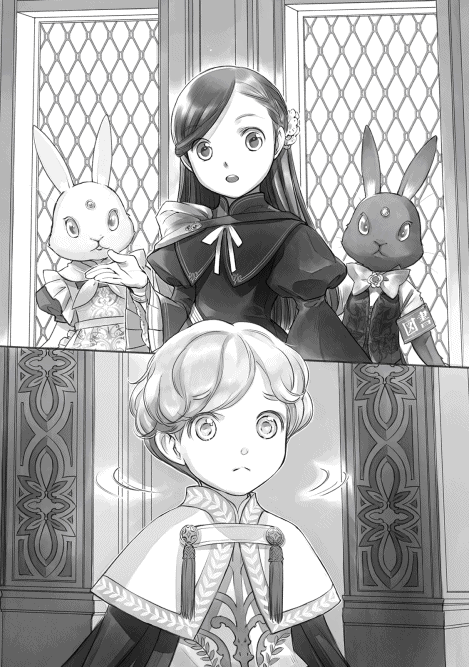
「でしたら、供給の協力者として登録しましょう。それならば、名前で呼ばれるだけですし、シュバルツとヴァイスに触ることができます。定期的に図書館を訪れなくても大丈夫ですよ」
「そちらが良いです。お願いします」
わたしの案にヒルデブラントが顔を輝かせた。側近達も負担が少ない方が良いだろうと許可を出してくれる。
「ただ、協力者になるためには闇と光の属性が必要ですけれど、大丈夫ですか？」
「はい！」
こうして、ヒルデブラントを協力者として魔力登録し、図書委員が一人増えた。
シュバルツとヴァイスを撫で回し、ご機嫌で戻っていくヒルデブラントを見送った。わたしは王族の機嫌を損ねることなく、この場を乗り切ったことにホッと安堵の息を吐く。
「......お姉様の社交は何が起こっているのかよくわからなくて、止める隙 もありませんね」
わたしと王族との接触を止めたかったけれど、止め処 がわからなくて間に入れなかったとシャルロッテが落ち込んだように呟いた。シャルロッテが会話に入れたらヒルデブラントは喜んだはずだ。間が悪い。
「早く寮に戻りましょう。他にも何か起こりそうですもの」
シャルロッテがそう言いながら、皆を促す。着替えの手伝いに来ていた女の子達は皆、王族と会うという体験にぐったりしているように見えた。
皆と一緒に寮へ戻りながら、わたしはふと思い出してシャルロッテに尋ねた。
「シャルロッテは年下の殿方をどう思いますか？ やはり頼りなく感じるのでしょうか？」
シャルロッテはわたしを見て、何かを悟ったように額に手を当てて目を閉じた。
「頼りないかどうかはその方によりますが、わたくしはやはり年上の方が頼りがいはあるように思えます。これでもお兄様っ子ですから」
......あらら、残念。振られちゃったね、王子。
シャルロッテは年上が好みと脳内に書き込んでいると、シャルロッテが少し心配そうにわたしを見下ろした。
「お姉様もヒルデブラント王子よりお兄様の方が頼りがいはあると思われませんか？」
「......そうですね。図書館を好きにしても良いという度量が男には一番必要ですから」
寮の本棚を好きにして良いと言ったヴィルフリートのことを忘れていないよと言うと、シャルロッテは何故かとても不安そうな顔になった。
魔石採集
「講義の方が重要ですから、ハンネローレ様の予定を最優先にしてくださいませ」
事前にソランジュからそう言われていたため、わたしはブリュンヒルデにお茶会の予定を立ててもらい、ハンネローレに招待状を送ってもらうことにしていた。ブリュンヒルデによると、最初に申し出た日は社会学と重なったため断られ、別の日を設定することになったらしい。けれど、無事に本好きのお茶会の予定が決定した。
「ソランジュ先生にも招待状をお渡ししなければなりませんね」
ブリュンヒルデの言葉に、わたしは早速招待状を書いて、足取りも軽く図書館へ向かう。
......わーい、ソランジュ先生とハンネローレ様と一緒にお茶会だ。
図書館の執務室で行う、本好きのお茶会である。テンションがどんどんと上がっていくのが自分でもわかる。興奮しすぎに気を付けなければならない。
「ひめさま、きた」
「ひめさま、ほんよむ？」
「あぁ、本当にローゼマインが来ましたね」
図書館に入ればシュバルツとヴァイスが出迎えてくれる。ここ数日はヒルデブラントがくっ付いていることが多い。ほぼ日参しているようで、気が済むまで二匹を愛 でて帰って行くそうだ。シュバルツとヴァイスからの情報によると、ヒルデブラントはとても退屈しているらしい。一年生の参考書を借りていくこともあるけれど、読める本自体が少ないと言っていたそうだ。本が読みたいのに、読める本が少ないのは可哀想で、わたしが作った子供向けの本を貸しても良いかどうか、エーレンフェストに質問状を送っているところである。
「ごきげんよう、ヒルデブラント王子」
挨拶を済ませると、わたしはソランジュのところへ向かう。ソランジュはここ数日の仕事が王族を出迎えることになっていて、緊張の毎日だと笑っていた。シュバルツとヴァイスがお目当てだとわかっているので、少し慣れてきたようだけれど。
「ソランジュ先生、図書館のお茶会の予定が決まりました」
わたしが招待状を差し出すと、ソランジュが嬉しそうに招待状を手に取って微笑んだ。
「まぁ、楽しみですこと。......四日後ですね」
図書館に籠もりがちで、学生がいる冬の間は他の先生方との交流も少なくなるソランジュは、去年のお茶会がとても楽しかったと言ってくれた。こちらも準備に熱が入る。ブリュンヒルデと顔を見合わせて笑っていると、幼い声が割って入ってきた。
「四日後にお茶会があるのですか？」
シュバルツとヴァイスと一緒に来ていたらしいヒルデブラントがそう言った。
「でしたら、私が図書館に足を運ぶのは遠慮した方が良いでしょうか？」
シュバルツとヴァイスは閲覧室でいつも通りにお仕事をしているので、シュバルツ達を目当てにやって来るヒルデブラントに関しては問題ないと思うのだけれど、王族が来るのに執務室でのんびりお茶会というわけにもいかないだろう。
......ここは遠慮してもらった方が良いのかな？
わたしは判断をソランジュに任せようと、視線を向けた。ソランジュが少し考えるように頬に手を当てて、わたしを見下ろす。
「ローゼマイン様、ヒルデブラント王子もご招待されてはいかがでしょう？ 協力者として登録されましたし、ハンネローレ様にもお話ししなければならないと思うのです」
......そっか。何となくお茶会は女性の集まりという印象があったけれど、図書委員の集まりとして考えるんだったら、王子も一緒にいた方が良いよね。
図書委員を始めたら何故か王子がいましたという展開よりは、お茶会にヒルデブラントも参加することを伝え、お茶会で協力者であることを伝えるというように段階を踏んだ方がハンネローレの驚きも少なくなるだろう。
なるほど、と納得していると、ヒルデブラントが期待に満ちた明るい紫の目をソランジュとわたしに向けていた。勝手な判断で「ご遠慮ください」と言ってしまう前でよかった、と胸を撫で下ろしつつ、わたしはヒルデブラントに笑顔を向ける。
「ヒルデブラント王子にも招待状をお送りしたいと存じます。とても急なお誘いになるのですけれど、ご迷惑ではございませんか？」
「いえ、とても嬉しいです。......私が行動を許されている場所はそれほど多くないので」
ヒルデブラントははにかむように喜んでくれたが、側近はどうだろうか。わたしはちらりと側近へ視線を向ける。貼り付けたような笑顔のまま、側近の一人がブリュンヒルデへ視線を向けた。
「ローゼマイン様の側仕えから詳しいお話を伺いたいと存じます」
「......ブリュンヒルデ、お願いします」
「かしこまりました」
ブリュンヒルデが緊張した面持ちで、それでも何とか微笑んでヒルデブラントの側近のところへ向かう。王族の側近と話をすることになったブリュンヒルデを気の毒に思いながら、わたしはヒルデブラントへ視線を向けた。
「母上以外の方とお茶会をすることはほとんどなかったので、楽しみです」
ヒルデブラントは洗礼式を終えたばかりなので、まだ社交経験が少ないらしい。母方の親族と数回お茶会をしただけだそうだ。退屈しのぎになるならば良いだろう。
「ローゼマインは今日も読書でしょう？ 私はヴァイスといるので、お気になさらず二階へどうぞ」
少し話をした後は読書である。ヒルデブラントはわたしが読書を楽しみにしているのをよく知っているようで、少し話をすると必ず読書を勧めてくれるとても良い子だ。わたしは礼を言って二階へ上がるといつも通りに本を読み始めた。
パパッと色とりどりの光が手元に降り注ぎ、わたしは顔を上げた。退出時間を示す光だ。もうじき鐘が鳴る。わたしは本の返却をフィリーネに頼み、昼食のために図書館を出た。すでにヒルデブラントの姿はなく、図書館に他の学生の姿もなく、静かなものだ。
ソランジュとシュバルツ達に挨拶して図書館を出る頃に、ちょうど鐘が鳴り始めた。図書館を出て中央棟へ向かっていると、中央棟から見知った顔が早歩きでやってくるのが見えた。ヒルシュールの弟子で、先日フェルディナンドの弟子にもなったライムントだ。
「ローゼマイン様」
わたし達に気付いたらしいライムントがとても嬉しそうな顔になった。声をかける許可を求めた後、興奮気味に礼を述べ始める。
「ローゼマイン様がフェルディナンド様の弟子になれるように推薦してくれたとハルトムート様から伺いました。弟子見習いになれたのは、ローゼマイン様のおかげです」
わたしがフェルディナンドとライムントの橋渡しをしやすいように、そういう設定になっている。実際に顔を合わせたことがあるのがわたしだけなので、ヴィルフリートやシャルロッテが推薦したというよりは信憑性 もあるはずだ。
「フェルディナンド様の質問状に回答を送れば、新しい研究課題が手に入るようになって、添削 してくれるようになっているのです」
ライムントには本当に嬉しいことらしい。フェルディナンドから与えられたという研究課題を誇らしげに見せてくれ、午後からはヒルシュールの研究室に籠もるのだと言う。全力で自分が好きなことに打ち込んでいることがわかる眩 しい笑顔だ。
「ライムント、課題が完成したら、ヒルシュール先生を通じて連絡くださいませ。わたくしからフェルディナンド様に送ることになっていますから」
「はい！ 少しでも早く仕上げたいと思います。こちらをフェルディナンド様に送ってください。質問に答えてあります」
ライムントには植物紙も与えられているらしい。ライムントが差し出す数枚の紙をハルトムートが受け取った。
「確かに預かりました。では、失礼しますね」
わたしが中央棟に向かって歩き始めると、やる気に満ちたライムントが文官棟へ駆けていくのが足音でわかった。
寮に戻るとハルトムートがすぐさまライムントの資料に目を通し始める。わたしも見せてもらったが、まるで地理の試験のような質疑応答の形でアーレンスバッハについて問われている。何とか試験を終えて自由時間を確保しようと必死になっているライムントにはフェルディナンドからの試験問題にしか見えないだろう。次の課題を得るために必死になって問題を解く気分で情報を掻き集めるライムントの姿が見えるようだった。
「......少しの資料で大事な情報源をこちらに傾倒させ、試験合格に必死になる時期の学生の心理に合わせた合理的な情報収集の手段と手腕は見習わなくてはなりませんね」
なかなか集まらないアーレンスバッハの情報があっさりと手の内に転がり込んできたことにハルトムートが驚き、茫然 としたようにそう呟いた。
「今日は魔獣を狩りに行ってきます」
土の日、朝食を終えるとすぐにローデリヒと旧ヴェローニカ派を中心とした騎士見習い達が狩りへ向かうことになった。ハルトムートに「名を捧げるのならば、早く」と急かされてしまったらしい。旧ヴェローニカ派の他の子供達も「まだ決意はできないけれど、魔石は確保しておきたい」ということで狩りに向かうことになったそうだ。
「ローデリヒは文官ですから、くれぐれも気を付けてくださいね」
「はい、ローゼマイン様」
ローデリヒ達を見送った後は、一階の個室に側近が大集合してエーレンフェストへの回答作成の時間である。昨日、ヒルデブラントをお茶会に誘ったことを報告したら、「何故そうなった？」とエーレンフェストからたくさんの質問状が飛んできたのである。ヒルデブラントが図書委員になった時もそうだったけれど、今日の午前は回答の文書を作成するだけで終わりそうだ。
「......でも、今回はソランジュ先生がお誘いしたら？ とおっしゃったのですから、お誘いすること自体は悪くないですよね？ 遠慮してくださいと言う方が失礼ですよね？」
わたしは自分の社交がどのようにダメだったのか確認するところから始めなければならない。ヒルデブラントをお茶会に誘った時に図書館に同行していたブリュンヒルデに尋ねると、ブリュンヒルデは何とも言えない顔になった。
「ソランジュ先生には、良い提案ですねとお答えして、その場で王族に直接お声をかけるのではなく、側近同士の話し合いから始めさせてくださると助かりました。次回からは急なことでもローゼマイン様がお誘いするのではなく、側仕えに任せてください」
「わかりました。今度からはそうします」
ヒルデブラントの側近に呼ばれて、その場でお茶会のための根回しをすることになったブリュンヒルデが正しいやり方を教えてくれる。対処方法を教えてもらわなければ、苦労するのは側近達なので、最近は「このようにした方が良いですよ」ではなく、「この場合はこうしてください」という言い方に変わってきている。
「王族とのお茶会はアナスタージウス王子と去年経験しているので、大丈夫ですよね？」
「お招きを受けたことはございますが、こちらが招待するのは初めてですよ、姫様。十位には上がりましたが、これまでがこれまでですからね」
招待を受けるのと、招待するのでは外聞も違う、とリヒャルダに指摘された。正直なところ、エーレンフェストが王族を招待するようなお茶会を開くことがあり得ないらしい。
「......今からお断りはできませんよね？」
「当たり前でしょう」
「それに、あの場では明らかにヒルデブラント王子がお誘いを期待していましたから、誘う過程に多少の差があっても、結局、お招きすることになったと思われます」
ブリュンヒルデが「ヒルデブラント王子の側近も申し訳なさそうにしていらっしゃいましたよ」と呟いた。社交経験の少ないわたしとヒルデブラントがそれぞれ思うまま動いた結果、両方の側近達が苦労することになったようだ。申し訳ない。
ハルトムートとフィリーネが話し合いの結果をまとめて、エーレンフェストに送ることになっている。文官達が回答書を準備している間、わたしは側仕え達とお茶会の詳細を決めていた。そこに扉の外側で警備に当たっていたコルネリウスが扉を開けて入ってきた。
「ローゼマイン様、ローデリヒが怪我をして戻ってまいりました！」
その内容に驚いて立ち上がると、わたしはすぐさま多目的ホールへ向かう。そこには、シャルロッテ達と切り傷と打ち身を負ったローデリヒがいた。
「ローデリヒ、怪我をしたと聞きました」
「強い魔獣が出たのです」
狩りをしていると強い魔獣が出てきて、ローデリヒは何とか攻撃を避 けたのだが、騎士見習いとぶつかって怪我をしたらしい。
「すぐに救援を呼んでほしいと言われ、私一人が戻ってきました」
わたしがコルネリウスを振り返るのと、武装したヴィルフリートと護衛騎士達が入ってくるのが同時だった。
「案ずるな。我々がすぐに出る」
「ヴィルフリート兄様」
ローデリヒが戻ってきてすぐに準備を始めていたようだ。上級騎士見習いやシャルロッテの護衛騎士見習いの数人も一緒らしい。
「ローゼマインの圧縮方法を学び、ボニファティウス様に鍛えられている領主一族の護衛騎士見習いが最も強いからな」
ヴィルフリートも魔力が増えているし、元々領主一族で魔力は多い方だ。男なので騎士見習い達との訓練にも参加させられている。そのため、ヴィルフリートが騎士達を率いて救援に向かうことになったらしい。
「シャルロッテとローゼマインは寮を守れ。ローゼマインの護衛騎士にはシャルロッテも守ってほしい。では、行ってくる」
「かしこまりました」
「よろしくお願いいたします、お兄様」
シャルロッテが不安そうに藍色の瞳を揺らして皆を見送る。わたしも同じように出立していくヴィルフリートと騎士見習い達を見送ると、ローデリヒに向き直った。痛々しい傷が見え、わたしはすぐにシュタープを出した。
「ローデリヒにルングシュメールの癒しを」
緑の光がふわりとローデリヒを包み込むと、すぅっと外傷が消えていく。癒しをかけられたのは初めてなのか、ローデリヒは軽く目を見張って自分の手足を見つめた。
「魔力や体力を回復するためにも、回復薬を飲んでおいた方が良いですよ」
わたしがそう言うと、ローデリヒは回復薬の存在にやっと気付いたような顔で自分の腰につけている薬入れに触れ、回復薬をぐびっと飲む。ホッと息を吐いた。
「恐れ入ります、ローゼマイン様。痛みが消えました」
「一体何が起こったのですか？ どのような魔獣が出たのか教えてくださいませ」
わたしの質問にローデリヒがコクリと頷き、口を開いた。出現した魔獣は黒い大きな犬のような形の魔獣だったらしい。
「四足で駆けてくる状態が大人より大きいくらいです。ただ、その魔獣が動くと、周囲の様子が変わるのです。黒く腐っていくように木々が萎 れて朽ちていくのが見えました。それから、目がたくさんありました。普通の犬と同じところにある目は大きくて赤く、額にも少し小さくて黒い目がいくつもあって、攻撃されると色が変わるのです......」
「まさかターニスベファレンでは!? 」
レオノーレが藍色の瞳を見開いて鋭い声を上げた。騎士見習いでも、まるで文官のように静かで控えめなレオノーレが取り乱した声を上げることは珍しい。
「......ターニスベファレンとは何だ？ 大変な魔獣なのか？」
よくわからないというように眉根を寄せるコルネリウスに、レオノーレは表情を強張らせたまま何度も頷いた。
「魔力を得ると、成長する魔獣なのです。エーレンフェストで出現するトロンベに似た性質で、ユルゲンシュミットの南の方に生息していると魔獣に関する資料で見たことがあります。不用意に攻撃すると、敵が活性化するのです！」
「何だと!? 」
その場にいた全員が息を呑み、大きく目を見開いた。倒すつもりで敵を巨大化させてしまうかもしれない。わたしは自分の魔力を得て急激に成長していったトロンベを思い出し、ぞっとしたものが背筋に走るのを感じて、自分の両腕を擦 る。
「でも、攻撃されて活性化することはすぐに気付きますよね？ 闇の祝福を得た武器ならば攻撃できますし、エーレンフェストの騎士見習いは大丈夫ですよね？」
トロンベを倒していた騎士達の姿を思い出してわたしがそう言うと、レオノーレとコルネリウスがわたしを振り返った。
「闇の祝福を得た武器はどこにあるのですか？ すぐに持って駆け付けなければ！」
「どこにとはどういう意味です？ シュタープを変形させた武器に祝詞 で祝福を......まさか、知らないのですか!? 」
そんなはずはない、と思いながらわたしが言うと、コルネリウスもレオノーレもユーディットも、残っているシャルロッテの護衛騎士見習いも揃って「存じません」と答えた。
一瞬で血の気が引いた。そんな状態で戦いに向かった騎士見習い達が危険すぎる。牽制 や救援のつもりで攻撃し、敵に魔力を与え続けることになれば周囲も大変なことになる。
「も、申し訳ありません、ローゼマイン様。私が魔石を欲したために......」
名を捧げようと思ったからこのようなことに、と吐き出すローデリヒにわたしはグッと奥歯を噛 みしめた。真っ青になったローデリヒの後悔が涙となって溢れているけれど、ローデリヒは何も悪いことはしていない。
「わたくしが行きます」
「ローゼマイン様!? 」
「お姉様!? 」
わたしが立ち上がった瞬間、周囲が一斉に止め始めた。
「危険すぎます、ローゼマイン様！ 騎士見習いにお任せくださいませ！」
たとえ危険でも闇の神の祝詞も知らない騎士見習いに任せられるわけがない。
「わたくしは神殿長です。現地に向かって全員に神の祝福を得るための祝詞を教えなければ、皆が危険なのです。......側仕え達は先生に連絡を。シャルロッテには寮を任せます！」
すぐさまわたしは身を翻した。身体強化の魔術具に魔力を込めながら、裏の玄関ホールに向かって走り始める。ハルトムートが走るわたしの隣を早歩きしながら、同行の許可を求めてきた。
「ローゼマイン様、私も同行させてください。主を守るために騎士見習いと共に訓練をさせられています。現地の騎士見習いが祝詞を唱えている間の時間稼ぎはできるかもしれません」
わたしがハルトムートを見上げると、ハルトムートは軽く頷いた。駆け足になっているフィリーネが「ローゼマイン様、わたくしも......」と声をかけてくるけれど、それは一蹴 する。
「フィリーネは留守番です。魔力が少ないので、祝詞が唱えられても戦力にはなりません」
わたしがそう言っていると、コルネリウスが困りきった顔で口を開いた。
「我々に祝詞を教えて、ローゼマイン様も寮で待機をしてください」
「コルネリウス兄様が一度で覚えられるほど短い祝詞ではありません。こんな問答をしている時間も惜しいのです。あまり文句ばかり言うならば、兄様を留守番させますよ！」
「それでは、本末転倒だ！」
「問答はいいから、急いでくださいませ」
わたしはコルネリウスを急かして裏の玄関ホールまで走りながら、周囲の早歩きをしている騎士達を見上げる。
「皆はシュタープの変形を維持したまま、騎獣を出せますか？」
「当然できます」
「では、シュタープを変形させてください」
すぐさま皆がシュタープを出し、それぞれの武器に変形させたのを見て、わたしは祝詞を復唱するように命じ、自分もシュタープを水鉄砲に変形させた。
「高く亭亭 たる大空を司る 最高神たる闇の神よ 世界を作りし 万物の父よ」
駆けながら祝詞を唱えれば、すぐさま声を合わせた復唱が響く。
「我の祈りを聞き届け 聖なる力を与え給 え 魔から力を奪い取る御身 の祝福を 我が武器に 御身に捧ぐは全ての魔力 輪から外れし魔を払う 御身が御加護を賜 らん」
裏の玄関ホールに着くと、留守番をするフィリーネとついて来たローデリヒが大きく扉を開け始めた。それを視界に収めながら祝詞を続ける。外へ飛び出すと、口では祝詞を唱えながら、武器を握っていない方の手で魔石に触れて騎獣を出す。皆が同じように騎獣を出して飛び乗っていく。
「この地にある命に一時の安らぎを与え給え」
一度カッとシュタープを変形させたそれぞれの武器が光り、直後、闇のような黒をまとった状態に変化する。レッサーバスに乗り込みながら、わたしは後ろを振り返った。心配そうなフィリーネと悔しそうに唇を引き結んで涙を零すローデリヒの姿が見える。
「ローデリヒ、乗りなさい！ このような状態になって魔石も得られないようでは困ります。ローデリヒの名を受けるとわたくしが決めたのですから」
「ですが......」
返事ができないローデリヒの手を引いて、フィリーネがレッサーバスに乗り込んでくる。ローデリヒを座らせるとニコリと笑った。
「闇の神の祝福を得たローゼマイン様は負けるはずがありません。魔石を得て、共にお仕えするのだと言ったでしょう？ 魔石を得てください、ローデリヒ」
上手くローデリヒを乗せたフィリーネを「よくできました！」とわたしは内心で褒めた。これでフィリーネが降りたら出発だ。わたしは後部座席から視線を外してシートベルトを締める。その時、ローデリヒが不安そうな、すがるような声を出してフィリーネを引き止めた。
「フィリーネ......」
「あの、ローデリヒ。離してくれなければ、わたくし、降りられません」
バックミラーを覗けば、ローデリヒがフィリーネの手をつかんでいるのが見えた。フィリーネは自分の手をつかんでいるローデリヒと、お留守番を命じたわたしを見比べ、とても困った顔になる。フィリーネがいた方が、きっとローデリヒは心強いのだろう。それならば同乗してもらえばいい。
「フィリーネ、ローデリヒにシートベルトの付け方を教えてあげてくださいませ」
「え？ わたくしが同行してもよろしいのでしょうか？」
目を丸くするフィリーネにわたしは軽く頷いた。不安そうなローデリヒを後部座席に一人座らせておくのも心配なのだ。誰か一緒にいた方が良い。
「ローデリヒはまだわたくしの正式な側近ではありませんから。フィリーネは騎士ではないけれど監視役です。ただし、決してこの騎獣から出ないように」
「かしこまりました」
フィリーネが嬉しそうに笑うのをバックミラーで見ながら、わたしはハンドルに魔力を流し始めた。片手に水鉄砲を握っているため、ちょっと危険に思える片手運転である。
「あ、あの、ローゼマイン様、私は......」
「ローデリヒ、行きますよ！」
今にも降りますと言い出しそうなローデリヒの言葉を遮り、一番に飛び出したコルネリウスの後について、わたしは空中へと駆け出した。
ターニスベファレンの討伐
黄色の光を放つ採集場所を目指してスピードを上げる。寮から比較的近いので、雪が積もる森の中、円柱状に光っている採集場所はすぐに見え始めた。採集場所へターニスベファレンが向かった後が黒い筋になっている。それなのに、戦っているはずの騎士達の姿は見当たらない。おそらくマジックミラーのようになっている採集場所の中にいるのだろう。
「突入します！」
コルネリウスがそう声を上げて光る円柱へ突っ込んでいった。ぶわりと翻った明るい黄土色のマントを追いかけて、わたしもレッサーバスで飛び込んでいく。
結界を突き抜けるほんの一瞬で、景色が雪景色から全く雪がない状態に変わった。けれど、わたしの記憶と違い、薬草や木々が青々と茂っていた採集場所はターニスベファレンに荒らされて四分の一ほどが朽ちている。植物の緑や木々の茶色ではなく、ただ剥き出しになった土でもなく、黒い汚泥 の池ができていた。
「......ひどい」
「誰もいないぞ!? どこにいる!? 」
焦っていることがわかるコルネリウスの声にハッとする。この場を荒らしたターニスベファレンの姿も、討伐しているはずの騎士見習い達も見当たらない。
「どこかへターニスベファレンを誘導したのだと思います。ここを出て探しましょう」
冷静なレオノーレの言葉に頷いたコルネリウスが採集場所を飛び出していく。わたしもこの地の惨状を苦々しく思いながら続いた。
......後でフリュートレーネの癒しが必要だよ、これ。このままじゃエーレンフェストの学生達が満足に採集できないじゃない。
そんなことを考えながら採集場所から出た瞬間、森の中から地鳴りが響いてきた。
「ひゃうっ!? 」
レッサーバスの中でも驚きの声が上がり、思わずびくりと身を竦ませるような轟音 だ。空気がビリビリと震えているのを肌で感じる程だった。
「どこから!? 」
騎獣で上空へ高く上がれば、深い森の中にターニスベファレンの移動した痕跡が続いていて、奥の方で木々が数本倒れていくのが見えた。そんな木々の間から騎獣が飛び出し、また降りていった。明るい黄土色のマントだ。
「いた！」
騎獣を駆って森の奥へ急行すれば、大きくなっているターニスベファレンが見えた。ローデリヒの説明通り、巨大な犬やオオカミのような形をしている。だが、四足で大人よりも大きいくらいと言っていたが、その二、三倍はある。
「こんなに大きくありませんでした！」
ローデリヒの悲鳴のような声に頷きながら、わたしはターニスベファレンを見据える。
「攻撃された魔力で成長したのでしょう。ずいぶんと魔力を叩きこんだみたいですね」
ここまで成長させる前に気付け、と怒鳴りたかった言葉を呑み込んだ。トロンベ退治に同行できない見習い達は、魔力を奪うタイプの魔獣に遭遇したことがないのだ。仕方がない。
けれど、さすがにもう攻撃をすることが危険だとわかっているようだ。あまり森に被害を及ぼさないようにターニスベファレンを牽制し、周囲を飛び回っている。雪の中に映える黄土色のマントはエーレンフェストの騎士見習い達で間違いない。けれど、その数はヴィルフリートが連れていった騎士見習い達の数にも満たなかった。
「......これだけ？ ローデリヒと素材採集に出た騎士見習い達は？」
呟くわたしの視界に、ターニスベファレンが眼前を飛び回る騎士見習いを食らおうとして大きく口を開けたのが見えた。剥き出しの黄ばんだ大きな歯がガチガチと鳴ったのが、少し遅れて聞こえる。
「危ない！」
ターニスベファレンの動きを読んでいるように、騎士見習いが黄土色のマントを翻して素早く方向を変える。ホッと安堵の息を吐いたのも束 の間 の事だった。
体が巨大化しているターニスベファレンは口も大きく、口の端から滴 る唾液 も大きくなっていた。ボタリと唾液が落ちれば、その場は黒い汚泥が揺れる朽ちた土へ変貌していく。ターニスベファレンの動きと共に土が傷み、拠 り所 を失ったように木々が倒れ、踏み潰されると同時に形を失っていく。四足で走り回り、動きが俊敏 でどこにでも移動できる魔獣のターニスベファレンは、根を張っているため行動範囲が定められている魔木 のトロンベよりも質 が悪い。
「ローゼマイン様！ ターニスベファレンが！」
この場にいない騎士見習い達がどうなったのかわからなくて、わたしが周囲を見回していると、フィリーネが鋭い声を上げた。わたしがハッとした時には、ターニスベファレンの赤くて巨大な目がこちらを向いていた。ローデリヒは額に並ぶ黒い瞳と言っていたが、今は黒ではなく、自分が食らった魔力を示すように、赤、青、緑など色とりどりの目へ変化している。その全ての目がわたしを見ている。
ぞくりと背筋が震えた。冷たい汗が全身から噴 き出すようだった。自分を餌 だと認識している魔獣の目をわたしは知っている。それが今、自分に向けられていた。
クンと鼻を動かしたターニスベファレンは魔力の大きさがわかるのか、周囲を飛び回る騎士見習い達が攻撃してこないことを理解しているのか、牽制しようとする騎士見習い達を完全に無視して、真っ直ぐにわたしに向かって駆けてきた。
「ローゼマイン様、上空へ！ ターニスベファレンが飛び上がっても捕まらないくらいまで上空へ飛び上がってくださいませ！」
レオノーレが指示する声に従って、わたしはすぐさま上に向かってハンドルを切り、上空へと駆け上がる。逃がすかと言わんばかりに、四足だったターニスベファレンが後ろ足だけで立ち上がり、レッサーバスに食らいつこうと飛び上がった。
レッサーバスの窓からターニスベファレンの太い前足が見え、獣特有の体臭と大きく口を開けた口臭が背後から迫ってくるのがわかって、血の気が引いていく。
「きゃああぁぁ！」
「うわああぁぁ！」
後部座席に座る二人の悲鳴を聞きながら、わたしは目一杯にアクセルを踏み込み、全速力で上へ上がりながら、後ろに向かってしっちゃかめっちゃかに水鉄砲を乱射した。けれど、全く当たらなかったようだ。ターニスベファレンが失速する様子は微塵 もない。
運転席の窓から黄ばんだ歯が見えた。こんな獣の歯を裏側から見たことなどない。生温かい吐息をここまで怖いと思ったことはない。
......食べられるっ！
頭が真っ白になるような恐怖の中、わたしは魔力をハンドルに流し続けた。
ガチン！
すぐ背後で歯が合わさる音がした。噛みつくのに失敗した音だと気付いたのは、ターニスベファレンの前足が後ろに向かって動いたせいだ。直後、「ギャウン！」と大きな悲鳴がターニスベファレンの口から上がる。
「やりました！」
ユーディットの元気な声が上がる。振り返ると、ユーディットの攻撃が顔に当たり、コルネリウスが全力攻撃を横腹に叩き込んだのがわかった。
「ローゼマイン様！」
ハルトムートが血相を変えて飛んできた。力を入れすぎたせいか、ハンドルを握ったままの形で指が固定されたように動かない。
「......大丈夫、無事です」
わたしの口から掠 れた声が漏れた時、ヴィルフリートとその護衛騎士達も駆け寄ってきた。ヴィルフリートがこちらへ駆けてくるなり、わたしに向かって怒鳴った。
「ローゼマイン、其方、無茶をするのではない！」
「祝詞を教えに来ただけです」
「先生方に連絡さえ取ってくれれば、時間稼ぎだけならば我々だけでも問題なくできるのだ。魔獣に食われたり、戦いの場で其方に突然倒れられたりする方がよほど困るぞ！」
ヴィルフリートの言い分はもっともで、わたしは「申し訳ございません」と素直に謝った。
「皆の武器に祝福を与えるために来たのです。それが終われば、寮に戻るつもりです」
「そうか」
上空にコルネリウス達も集まってきた。ぐるりと見回しても、やはり人数が足りない。旧ヴェローニカ派の子もいないし、ヴィルフリートと共に出発した他の騎士見習い達の姿もない。
「ヴィルフリート兄様、他の騎士見習い達はどうしたのです？」
「休憩している。長丁場になると思ったから、交代で魔獣の相手をすることになっていたのだ」
ヴィルフリートが森に向かってロートを打ち出した。赤い光が伸びていくと、森のあちらこちらに分散して休息を取っていたらしい騎士見習い達が出てきて集まってくる。
「コルネリウス、レオノーレ、ユーディット、ハルトムート。あれだけ巨大になっていては危険です。攻撃力が揃うまではヴィルフリート兄様達のようにターニスベファレンからの攻撃を回避しながら時間を稼いでください。わたくしはここで皆に祝詞を教えます」
「かしこまりました」
コルネリウス達がザッと音を立てて、ターニスベファレンの近くへ降りていく。その様子を少しだけ見送り、周囲に集まってきた騎士見習い達を見回した。休息していた騎士見習い達は大体二つに分かれている。マティアスを中心にした旧ヴェローニカ派と、トラウゴットを中心にした輪だ。
「ローデリヒから受けた説明とずいぶん状況が変わっているので説明をお願いします」
わたしがそう言うと、騎士見習い達の視線が一斉にトラウゴットへ向かった。トラウゴットを中心としている輪が、彼に好意的な視線を向けていないことに気付く。
去年の後半はユストクスを側仕えにつけられていたため、おとなしかったけれど、魔力圧縮を覚え、どんどんと魔力を増すと同時に自信も取り戻していた。そんなトラウゴットが今は悄然 として項垂 れている。それだけで何となくわかった。ターニスベファレンを巨大化させたのはトラウゴットではないか、と。
「トラウゴット、説明せよ」
ヴィルフリートが命じると一度言葉を詰まらせ、トラウゴットは俯きながら口を開いた。
「採集場所で暴れられたら採集物が全滅してしまうので、今は森へ誘導している最中です。......私が全力で攻撃して、ターニスベファレンを巨大化させてしまいました」
ヴィルフリートと共に駆けつけたトラウゴットは、攻撃せずに周囲を飛び回りながらターニスベファレンを採集場所から森へ誘導している騎士見習い達を発見したらしい。攻撃した魔力が奪われることにいち早く気付いたマティアスが、決して攻撃はするな、と命じていたのだが、トラウゴットは知らなかったし、気付かなかった。
彼等を助けるつもりで、一撃でターニスベファレンを叩き潰そうと考えたらしい。救援が救援にならないことに気付いたマティアスが「ダメだ！」と叫んだが、それさえも聞こえず、トラウゴットは全力で攻撃した。直後、大人よりも大きい程度だったターニスベファレンの体は、ぐわっと膨れ上がった。魔力に耐え切れず弾 け飛ぶように見えたが、膨らみはそのまま定着し、二倍以上の大きさになってしまったらしい。
「何故、と思っているところにシャルロッテ様の護衛騎士見習いからオルドナンツが届いて、魔獣の名や性質、倒すためには闇の祝福を受けた武器が必要であることを知らされました」
ついでに、祝詞を教えるためにわたしが飛び出したこと、先生に救援を求める連絡を入れたというオルドナンツがリヒャルダからヴィルフリートへ届いたらしい。マティアスがターニスベファレンへ視線を向けながら、付け加えてくれる。
「それからはヴィルフリート様の指揮でターニスベファレンに攻撃しないように気を付けつつ採集場所から離し、同時に、我々の回復のために時間を稼いでくれていました。そのおかげで回復薬を飲み、回復するための余裕ができました」
怪我をした者は回復薬を飲み、休憩しているところだったらしい。まだぐったりとしている者もいるし、怪我をしている者もいる。
「先生方に連絡もしてくれているので、もう少し時間を稼げば大丈夫でしょう。よく頑張ってくれた皆にルングシュメールの癒しを与えます」
シュタープを変形させているので、わたしはシュタープではなく、指輪の魔石に魔力を込めてルングシュメールの癒しを与える。指輪の魔石から飛び出した緑の光が騎士見習い達へと降り注いだ。
「恐れ入ります、ローゼマイン様」
痛みが引いたようで、ぐったりとして背が曲がっているように見えた騎士見習い達が姿勢を正した。
「では、武器を出してください。一度祝福を解除すると、その日はもう祝福を得られませんから、ターニスベファレンが倒れるまで解除しないように気を付けてくださいませ」
「......解除の仕方も知らないから問題ない」
ヴィルフリートの言葉に小さく笑い、わたしは復唱するように言って祝詞を唱える。
「高く亭亭たる大空を司る 最高神たる闇の神よ 世界を作りし 万物の父よ」
自分の武器をじっと見つめながら、騎士見習い達が復唱する。はるか下の方にコルネリウス達がターニスベファレンを牽制しているのが見えた。
「我の祈りを聞き届け 聖なる力を与え給え 魔から力を奪い取る御身の祝福を 我が武器に 御身に捧ぐは全ての魔力 輪から外れし魔を払う 御身が御加護を賜らん」
少しでも早くと気が急くのを抑えながら、わたしは軽く目を閉じる。気を散らさずに、今は祈りを捧げなければならない。
「この地にある命に一時の安らぎを与え給え」
ゆっくりと目を開くと、皆の武器が闇の力を得て黒く染まっていた。黒一色の武器を手に、皆が目を見張っているのがわかる。
「これで攻撃すれば、ターニスベファレンから魔力を奪うことができます。時間稼ぎと言いましたが、わたくし、できれば魔石を取りたいので、なるべく四肢を切断する方向で攻撃してくださると嬉しいです」
「ローゼマイン、そのような余裕があると思っているのか？」
ヴィルフリートが溜息を吐きながら、頭を振った。それから、わたしを指差した。
「今の状況を見てもわかるようにターニスベファレンは素早く走り回るが、空を自由に駆け回ることはできぬ。ローゼマインは我々の目が届く位置、そして、決して攻撃の届かない上空で待機せよ」
「わかりました」
一度武器が軽く光ったせいだろうか、コルネリウス達が集まってきた。上質の魔力が上に集まっているのがわかるようで、ターニスベファレンが狙いを定めて食らいつこうと飛び上がってくる。前足も届かないような上空にいるけれど、獲物を定めて光る眼 がこちらに向いていて、大きな口が飛びかかってくるのは心臓に悪い。
「魔物に関する書物を読み込み、ターニスベファレンの特性を詳しく知っているのはレオノーレです。今日はレオノーレの指示に従ってください。特にトラウゴット。いいですね？」
「......はい」
悄然とトラウゴットが項垂れるのを見て、ヴィルフリートが同情するように息を吐く。
「トラウゴットはターニスベファレンの特性を知らなかったのだ。あまり責めるな」
......知らないことじゃなくて、指示に従えないところが問題なんだけど。
そう思ったけれど、わたしは口を噤んだ。この後の戦いは騎士見習い達に任せておけばいい。闇の祝福を付与し、武器を整えたことでわたしの仕事の半分は終わった。最後に、土地の回復が必要だけど、今すぐでなくても良いし......と呑気 に考えていたら、レオノーレは戦いの場でもわたしに役割を振ってきた。
「では、次にローゼマイン様ですが......」
「わたくしも戦うのですか？ 上空に待機では？」
「戦地にいて、尚且 つ、大量の魔力があり、安全な遠距離から攻撃できるローゼマイン様を戦いに投入しない理由がありますか？」
ここにいる以上、人材は余すところなく使うそうだ。合理的というか、敵を倒すための最善だけを見ているレオノーレに少し驚いたけれど、わたしは役割を振られたことがちょっと嬉しい。
......皆の役に立ってるってことだからね。
「ミズデッポウでターニスベファレンの攻撃が届かない上空から攻撃してくださいませ。ハルトムートとユーディットは決してローゼマイン様から離れないように」
「はい！」
わたしはやる気満々になって水鉄砲を握る。レオノーレはやる気に満ちたわたしを見て少し微笑むと、トラウゴットへ視線を向けた。
「トラウゴット、コルネリウスと攻撃を合わせて四肢の切断です。アンゲリカとコルネリウスがよくしていたでしょう？ あれをお願いします」
「......いや、私は......」
先程の失敗が尾を引いているのだろうか。トラウゴットがきつく目を閉じながら、首を横に振る。けれど、辞退を許さず、レオノーレは静かに言葉を重ねた。
「コルネリウスに合わせられる魔力量がある者は、ヴィルフリート様とトラウゴットしかいないのです。失敗したと思うならば、失点を補うために全力を尽くしてください」
レオノーレの淡々とした言葉にトラウゴットは肩身が狭そうに体を小さくした。皆の視線が集まるトラウゴットを庇うようにヴィルフリートが前に出た。
「見様見真似になるが、私が合わせよう」
レオノーレは何かを期待するように一度トラウゴットへ視線を向けた。けれど、トラウゴットは何も言わない。ただ、俯いていた。静かにその様子を見ていたコルネリウスが一つ息を吐くと、ヴィルフリートに向かって微笑んだ。
「いいえ、ヴィルフリート様は全力で打ち込んでください。私が合わせます」
今回の攻撃のセオリーとしては、トロンベ退治と同じ感じで行うらしい。遠隔攻撃でわたしが矢を降らせてターニスベファレンを弱らせ、騎士見習い達が一斉に攻撃する。皆が退いたら、わたしが矢を降らせるというように交互で攻撃を行うらしい。わたしが降らせる矢に騎士見習いを巻き込まないように注意しなければならないそうだ。
......あの時の神官長ポジションってかなり重要じゃない？ 責任重大じゃない？
碌に訓練も受けていないわたしにできるポジションではない気がする。けれど、辞退することもできないまま、レオノーレの挙手に合わせて騎士見習い達は周囲に散っていった。
上空で方々に散っていく騎獣の姿を見て、まるでどれを追いかけるか悩むようにターニスベファレンの額にある色とりどりの目があちらこちらへぎょろぎょろと動く。
......うひいぃっ！ 気持ち悪っ！
ぞわっと鳥肌が立つのを感じながら、わたしはターニスベファレンに向かって上空で水鉄砲を構えた。一度軽く目を伏せて、脳裏にしっかりとトロンベ退治の時のフェルディナンドを思い浮かべる。
......わたし、固ゆで卵になるんだ！
「ローゼマイン様、レオノーレから合図が来ました！」
わたしの代わりに周囲を見回していたフィリーネの声を耳にして目を開けた。わたしはレッサーバスを守るように両隣にいるハルトムートとユーディットに視線を向けた後、真下にいるターニスベファレンを目がけて水鉄砲を撃つ。
「てりゃ！」
フェルディナンドがトロンベを倒していた光景を思い浮かべて撃てば、黒い水鉄砲から撃ち出された魔力は黒い矢となり、さらにいくつにも分裂してターニスベファレンへと降り注いでいく。
「......やぁっ！」
わたしの攻撃を見た後でユーディットも攻撃した。ターニスベファレンから少し離れた方向へ向かって投擲 した黒い石が飛んでいく。的が大きいので外れることなどないと思っていたのに、こちらをじっと見ていたターニスベファレンはわたしが撃った矢を素早く避けた。避けた先でユーディットの投擲した石に当たって小さく悲鳴を上げる。
「......どうして？」
「遠距離射撃でローゼマイン様に負けるわけにはまいりませんからね。敵の動きの一歩先を読まなくては」
得意そうに笑うユーディットが投擲した黒い石がまた命中した。小さく悲鳴を上げつつ、ターニスベファレンはまたもやわたしの攻撃を避ける。
......ふんぬぅ！
自分の攻撃が全く当たらないことが無性に悔しくなってきて、わたしはターニスベファレン目がけて次々と水鉄砲を撃っていった。けれど、わたしの弾道など見切っているとでも言いたげにターニスベファレンは分裂する矢を軽く避け続け、何故かユーディットの攻撃ばかりが当たる。
......悔しいっ！
ターニスベファレンが敏捷 に動き、額の目まで動かして周囲を見ているせいで騎士見習い達の攻撃もかなり避けられているけれど、時々は当たる攻撃が出ていることから考えても、全く当たっていないのはわたしだけだ。
「......ローゼマイン様の攻撃だけは当たりませんね」
フィリーネの指摘がグサッと胸に刺さった。わかっているから冷静に言わないで！ と泣きたい気持ちになりながら、わたしは眼下のターニスベファレンを見据える。
「ローゼマイン様の攻撃が当たらないのは、ローゼマイン様の攻撃を避けることにターニスベファレンが集中しているからだと思います」
ローデリヒの呟きにわたしは大きく頷いた。赤い大きな目は決してわたしから視線を外そうとしない。わたしの攻撃だけを避ければそれで良いと考えているのか、と言いたくなるくらいだ。
......攻撃が当たらないのはずっとわたしだけを見てるせいだもん！ こっち見ないで！
「ターニスベファレンの視界を塞げば、わたくしの攻撃も当たりますよ！」
「視界を塞ぐ？ どのようにするのですか？」
ローデリヒから冷静に問い返されて、わたしは一瞬言葉に詰まる。巨大な魔獣の視界を塞ぐのはどうすれば良いのか、咄嗟には浮かばない。
「え？ えぇと......そうですね」
......目隠しになる物、目隠しになる物......。こう、でっかい布があればいいんだけど。
さすがにターニスベファレンの目を塞いで、頭の後ろでギュギュッと縛るような目隠しはできないと思う。けれど、大きな布をバサッと被 せられるだけで視界を奪うことはできるし、一瞬の足止めにはなるはずだ。
......視界を塞いで、一瞬だけでも止まらせることができれば、わたしの攻撃だって当たるはず！ そのためにはターニスベファレンを包めるくらいにでっかい布がいる！
「あ！ ちょうどいい神具があります。リューケン」
「......神具、ですか？」
ポカンとした顔でわたしを見るフィリーネに向かってコクリと頷きながら、わたしは水鉄砲の変形を解除した。変形が解除されても祝福は解除されていないようで、手にあるシュタープが黒い。トロンベ退治の時に騎士達が言っていたのと違う。それに少し驚きながら、軽く目を閉じた。防御に必須としてフェルディナンドに教えてもらった呪文がある。
「フィンスウンハン」
わたしのシュタープは、星が輝く夜空のように金色が散りばめられた黒の布へ変化した。呆然 としたようにローデリヒがわたしの手にある布を指差す。
「ローゼマイン様、それは......？」
「闇の神の神具であるマントです。これがあればターニスベファレンの視界を塞げます」
闇の神のマントには魔力を吸収し、自分のものにする力がある。今は闇の祝福がかかっている状態なので神に奉納され、わたしのところへ奪った魔力が届かない可能性は高いけれど、ターニスベファレンの魔力を奪うことはできるはずだ。
わたしはぶわりと夜空を広げるようにターニスベファレンの頭に向かって、闇の神のマントを落とした。狭い範囲に向かって落ちてくる矢ではなく、わたしの思いのままに大きく広がるマントではターニスベファレンも避けることができなかったようだ。黒の布に視界を覆われたターニスベファレンの動きが止まり、マントを退 けようと前足をばたつかせる。
「これでわたくしの攻撃も当たるはずです！」
よし！ と拳を握った瞬間、フィリーネが頬に手を当てて首を傾げた。
「ローゼマイン様はシュタープを変形させてマントを投げたのに、どのように撃つのですか？」
「ああぁぁ！ わたくしの水鉄砲！」
手元に武器がなくなったことに気付いて頭を抱えるわたしに、ヴィルフリートやコルネリウスから賞賛の声がかかった。
「でかした、ローゼマイン！ 足止めは成功だ！」
「今だ！ 皆一斉に攻撃しろ！ 後ろ足を狙え！」
素早い動きで攻撃を仕掛ける騎士見習い達が一斉にターニスベファレンに飛びかかる。頭に被せられた闇のマントを取ろうともがくターニスベファレンの後ろ足に、コルネリウスの命令通りに攻撃が集中した。二十弱の騎獣が空中を自在に駆け回り、それぞれが構えた黒い武器が翻った。同時にターニスベファレンの悲鳴が上がり、血が流れ、その血が土地を蝕 んでいく。確実に傷を負わせていくのが目に見えてわかった。
わたしは泣きたい気持ちで、皆の戦いぶりを見つめるしかできない。
......皆、カッコいいけど、違うっ！ 違うのっ！ わたしの見せ場、返して！
いつでも攻撃できるようにヴィルフリートは黒い剣に魔力を込めていたようだ。闇が染みだすようにゆらりとしたものが刃を包んでいるのがわかった。ヴィルフリートが剣を大きく振りかざす。シュタープに合わせたのか、柄の部分に紋章の獅子 が見えた。
「全員退避！」
そう叫んだコルネリウスの手にもすでに魔力が満ちている黒い剣がある。去年のディッターで見た時よりも籠められた魔力が少し小さく見えるのは、ヴィルフリートに合わせているからだろうか。
騎士見習い達が上空に上がってきて、わたし達を衝撃から守るようにターニスベファレンとわたし達のちょうど中間で一カ所に固まり、盾を出していく。わたしもレッサーバスの方向を変えて、衝撃に備えてハンドルを強く握った。
「行くぞ！ はああぁぁぁっ！」
ヴィルフリートは自分に気合いを入れるようにそう叫びながら、ターニスベファレンの後ろ足を目がけて騎獣を駆り、剣をブンと大きく振り抜いた。大量に魔力が籠もった闇の斬撃が剣から飛び出し、ターニスベファレンの右後ろ足へ真っ直ぐに飛んでいく。
「やああぁぁぁ！」
ほぼ同時に、コルネリウスがヴィルフリートとは別方向からターニスベファレンの後ろ足を目がけて斬撃を放った。二つの斬撃がぶつかる大きな爆発音と空気が波立つような衝撃が飛んでくる。
グッとハンドルを握って備えていたわたしのところにも衝撃は来たけれど、距離があったのと、騎士見習い達が盾を並べて防いでくれたので、それほどではなかった。多分これまでに経験してきたフェルディナンド達の全力攻撃に比べて威力が低いせいもあると思う。
......ターニスベファレンは!?
衝撃をやり過ごし、目を凝らして眼下を凝視すれば、狙い通りに斬撃が飛んでいったようだ。右後ろ足が吹き飛び、大きな悲鳴を上げたターニスベファレンがその後の衝撃に耐えきれず、ゴロゴロと転がっていったのが見えた。
「やった！」
そう叫んだ直後、ぼたぼたと落ちる血も、足が吹き飛んだ痛みも感じていないような野生の獣らしい動きでターニスベファレンが飛び跳ねるようにして体を起こした。衝撃に転がったせいで、頭を覆っていたマントが吹き飛んでいる。露わになったいくつもの目には、痛みと怒りが満ちていて、飛び起きた時にちょうど正面にいたヴィルフリートにその視線が向けられる。獲物を見定めたその目に、わたしは血の気が引いた。
「ヴィルフリート兄様、上空へ逃げて！」
わたしの咄嗟の叫びが聞こえたのか、ヴィルフリートが騎獣を上に向ける。けれど、先程の攻撃に魔力を使いすぎたのか、騎獣の駆け上がる速さが全く足りていない。すぐさま騎士見習い達がヴィルフリートを救うために動き始める。だが、彼等より怒りと魔力の補充を狙うターニスベファレンの方が速い。右後ろ足が欠けているにもかかわらず、ヴィルフリートの騎獣を目指して勢いよく走り始めた。このままではあっという間に追いつかれる。
「トラウゴット！」
コルネリウスの怒鳴り声が響いた。魔力を再び蓄えていたのか、その手には魔力が満ちて光る剣がある。コルネリウスの怒声に反応したように、トラウゴットが剣を握って急降下していった。降下中に剣へ魔力がどんどんと注がれていく様子が見える。
闇をまとい、剣が光った。
ターニスベファレンから逃れるように上空へ駆け上がるヴィルフリートと、魔力の満ちた剣を握って落下するような勢いで突っ込んでいくトラウゴットがすれ違う。
その瞬間、コルネリウスの放った斬撃が先にターニスベファレンの首元に炸裂 した。横倒しになるようにバランスを崩したターニスベファレンの腹を目がけてトラウゴットが剣を振り抜いた。
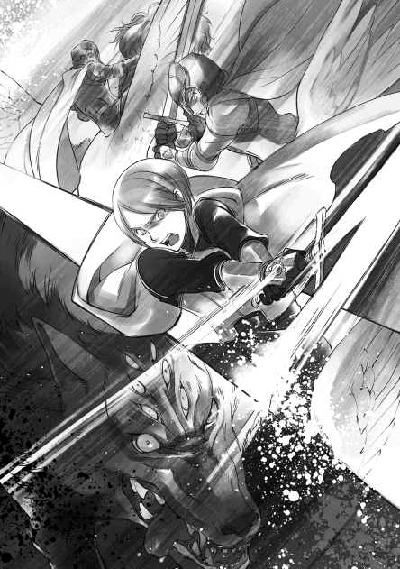
「たああぁぁっ！」
トラウゴットの魔力がコルネリウスの攻撃が起こした衝撃とぶつかり合う。大きな炸裂音がして、上空へ向かってくる衝撃が少しばかり緩和 された。それでも、空気の揺らぎとコルネリウスを中心に倒れていく木々や巻き上がる土煙から、自分達に向かってくる衝撃の大きさがわかる。
ヴィルフリートは衝撃に後押しされて勢いよく上空へ飛ばされ、彼を助けるために盾を解除していた騎士見習い達は襲い来る衝撃に耐えられず、方々へ吹き飛ばされていった。わたしはきつく目をつぶり、ガッチリとハンドルを握ってブレーキを踏み、魔力を全力で注いで何とか踏ん張る。
衝撃の波が去ってからゆっくりと目を開けた。大きく地面が抉 れ、そこにターニスベファレンが横たわっている。ビクビクと足が動いているが、起き上がることはできないようだ。
「やったぞ！」
「油断してはなりません！」
レオノーレが歓喜の声を出す騎士見習い達を叱りつけた。コルネリウスとトラウゴットが慣れた様子で剣を何カ所かに突き刺し、ターニスベファレンを動けないようにしていく。
「素材を剥 ぐぞ！」
トラウゴットが大きく手を振ったのを見て、騎士見習い達がターニスベファレンに向かって降りていく。わたしもレッサーバスで降りていった。
「素材の回収は貢献度により変わります」
皆で倒した魔獣の素材は、その貢献度によって与えられる物が変わるらしい。コルネリウスが騎士見習いではないわたしやヴィルフリートに説明してくれた。今回、一番貢献したのはコルネリウスになる。次点でヴィルフリート、それから、トラウゴット。マントを被せて足止めしたわたしも貢献が認められた。
「救援が来るまでに採集場所からターニスベファレンを誘導して、採集場所を守っていたマティアス達の貢献も忘れるな、コルネリウス」
「領地対抗戦に出ることがない魔物に関する資料までじっくりと読み込んでいたレオノーレの貢献も、ですよ」
ヴィルフリートとわたしの言葉にコルネリウスが小さく笑いながら頷いてくれた。
「わたくしはローデリヒが名捧げに使うための魔石にできる素材が欲しいです。それ以外は特に必要ありませんから、品質が良いのをお願いしますね」
「でしたら、額の目はいかがでしょう？ 攻撃から奪った魔力が属性ごとに分かれているので良い素材になると思います」
レオノーレの助言で、わたしの素材はローデリヒの属性である風と土の目玉に決まった。
「ローデリヒ、そういうことですから取っていらっしゃい。それでわたくしに相応しい名捧げの石を作ってくださいませ」
「ローゼマイン様......」
感激したようにローデリヒがわたしを見て、「必ず」と頷いてレッサーバスを降りていく。後ろ姿を見送り、わたしは安堵の息を吐いた。下町で手伝わされていたので、鳥の羽根を毟 るとか、皮を剥ぐことはできるようになっていたけれど、あまり得意でも好きでもない。
......目玉を抉るのは、ちょっとね。
「ローゼマイン様、祝福の解除はどうするのですか？ 闇の祝福を得たままでは回収できません。回収中にどんどんと魔力を奪われます」
コルネリウスの声にハッとして、わたしは黒い武器を持ったままの皆を見回した。
「解除してしまうと、今日はもう闇の神の祝福は得られませんからね」
「一日に何度も闇の神の祝福が必要になることはないと思うぞ」
ヴィルフリートの言葉に騎士見習い達が同意しながら頷く。わたしも「そうですね」と頷きながら、祝福解除の呪文を口にした。
「エントヴァフヌング」
皆が復唱して祝福を解除する。手にある武器から黒の色が失 せるのを見て、わたしは自分の手に武器がないことを思い出した。素材を回収し始めた皆を見回し、「わたくし、闇の神のマントを回収してきますね」と声をかける。
「少し待ってください。護衛を......」
「コルネリウスはこちらの回収をしなければならないでしょう？ ユーディットとハルトムートを連れていくので大丈夫です」
一番貢献したコルネリウスは回収しなければならない素材も多い。わたしがそう言うと、コルネリウスの素材回収を手伝っていたレオノーレが立ち上がった。
「わたくしがローゼマイン様と参ります。コルネリウス、わたくしやユーディット達の分の回収もお願いいたしますね」
「あぁ、ローゼマイン様の護衛は頼んだ」
わたしはレッサーバスに乗り込んで、自分で放り投げた闇の神のマントをまず回収に向かう。護衛に連れているのはユーディットとレオノーレ、それから、ハルトムートだ。
「ローゼマイン様は本当に神具を作ることができるのですね。実技で作ったとは報告で伺いましたが、こうして実際に見ると感動いたします」
ハルトムートがとても満足した笑顔でそう言った。厳しい訓練に耐えた甲斐 があると喜んでいる。けれど、神殿に出入りしているハルトムートが言うと変な感じだ。
「ハルトムートは神具など神殿で見慣れているではありませんか」
「お仕事の手伝いで神殿へ行っても、神具を実際に見る機会は少ないですよ」
わたしは魔力の奉納を行っているので神具は常に見るし、触っている。けれど、よくよく考えてみれば、ハルトムート達が手伝いに来てくれるのに待たせるのは良くないとフランが言ったため、奉納するのは朝早くか、寝る前の時間帯になっていた。神殿によく出入りするハルトムートやフィリーネでさえ、あまり神具を見る機会はなかったようだ。
......神具を見る機会もあった方が良いのかな？
そんなことを考えながら、わたしは吹き飛ばされていた黒いマントを拾い、うっと息を呑んだ。闇の神のマントは魔力を吸収するマントだ。落ちていた場所の魔力が奪われているのがわかった。黒い汚泥はないけれど、からからに乾いて赤茶けた土になっている。
......ごめんなさい、ごめんなさい！ こんなつもりじゃなかったの！
急いで祝福と変形を解除してシュタープを握り、すぐに癒しを！ と考えてハッとした。ここより先に採集場所を癒した方が良いのではないだろうか。当たらなかったけれど、ターニスベファレンに向かって水鉄砲を乱射したわたしは結構魔力が減っている。
......深い森の奥より、採集場所の癒しを優先した方がいいよね？
コルネリウスに相談しようと振り返ったところで、わたしはびしりと固まり、ギギッと首を動かして視線を逸らしていく。
「ローゼマイン様、どうされました？」
「採集場所を癒しに行こうと思います。素材を回収するには時間がかかるでしょう？」
解体中のターニスベファレンが怖くて近付きたくないとは言えず、わたしはレオノーレを見上げてヘラッと笑う。
「癒しと言われましても......何をされるのですか？」
よくわからないというようにレオノーレが首を傾げた。トロンベ退治の後始末と同じなのだが、騎士に同行したことがないレオノーレは知らないらしい。
「ターニスベファレンに魔力を奪われた土地に魔力を満たすのです」
「そのようなことができるのですか？」
驚きに目を見張ったのは、レオノーレではなくハルトムートだった。文官で調合用の素材が多めに必要なハルトムートは、荒らされた採集場所を見て、どうしようかと思っていたらしい。
「トロンベ退治の後に行う神殿のお仕事です。わたくし、神殿長ですから」
......解体が怖いわけじゃないよ！ 癒しの儀式はわたししかできないだけだからね。
癒しと救援
相談の結果、わたしは採集場所の癒しに向かうことになった。さすがに三人では護衛の数が少なすぎるので、ターニスベファレン退治の貢献度が低く、素材回収がすぐに終わって手持ち無沙汰 な騎士見習い達を護衛として連れて行く。
淡く黄色の光を放つ採集場所へ入ると、草木が色鮮やかな部分とターニスベファレンが暴れて黒い汚泥が飛び散ったようになっている部分がくっきりと分かれているのが見えた。ターニスベファレンに荒らされた部分が四分の一くらいある。結構広範囲だ。
「ひどい有様ですね。これでは講義に差し支 えます」
周囲の護衛達の言葉に頷きながら、わたしは癒しの儀式を行うことができるかどうか、睨むようにして検分する。トロンベ退治の時に行った癒しと違い、ある程度まで植物を成長させなければ、直ちに講義で困ることになる。
「講義に差し支えないように、わたくしが癒しを与えるのです。魔獣が来た時は頼みますね」
「はっ！」
地面に到着すると、わたしは振り返って後部座席のフィリーネに声をかけた。
「フィリーネは降りてはなりません。ここで待っていてくださいね」
「かしこまりました」
フィリーネをレッサーバスの中で待たせたまま、わたしは一人で降りる。黒い汚泥に踏み込むのは嫌なので、その手前に立った。
「ローゼマイン様には側近が付きます。貴方達は周囲の警戒をお願いします」
レオノーレの指示によって、騎獣に乗った騎士見習い達が周囲を警戒するように散開する。レオノーレとハルトムートがわたしの左右に付き、ユーディットが背中を守るように後ろに構えた。ついさっきまでターニスベファレンが暴れていて、採集場所の周辺にも黒い汚泥を振りまいていたせいで、今のところ魔獣は見当たらない。けれど、用心するに越したことはないだろう。
わたしはシュタープを出現させると、軽く目を閉じて集中し、フリュートレーネの杖 をしっかりと思い浮かべた。細かく装飾された長い柄にずらりと並ぶ小さな魔石、大人の手のひらくらい大きい緑の魔石を包むような金細工。わたしが初めて使った神具だ。
「シュトレイトコルベン」
自分の手の中にあるのが、フリュートレーネの杖であることに満足しながら、わたしは杖をトンと地面に刺して、両手でしっかりと握った。ゆっくりと魔力を込めていく。
「癒しと変化をもたらす水の女神フリュートレーネよ 側に仕える眷属たる十二の女神よ 我の祈りを聞き届け 聖なる力を与え給え」
自分の魔力がどんどんと杖に流れていくのがわかる。杖だけではなく土地も満たすのだ。
「魔に属するものの手により 傷つけられし御身が妹 土の女神ゲドゥルリーヒを癒す力を我が手に 御身に捧ぐは聖なる調べ 至上の波紋を投げかけて 清らかなる御加護を賜らん 我が望むところまで 御身が貴色で満たし給え」
杖にはめ込まれた大きな緑色の魔石がカッと強い光を放った。魔力が渦巻き、自分を中心に風が起こる状態には覚えがある。髪が風に乱され、衣装の裾や袖が揺れる中、よし、と癒しの儀式の成功を確信した。
次の瞬間、足元が光った。フリュートレーネの杖の魔石と同じ色の光が地面を走り始める。杖をついている場所から水路を水が流れていくように緑の光が一定の太さで流れ始めた。
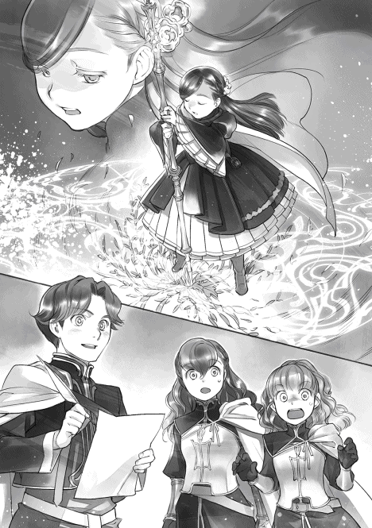
「うわっ!? 何だ!? 」
周囲のそんな驚きの声を聞きながら、わたしはこの儀式を中断するべきかどうか戸惑って緑の線を見つめる。トロンベの後の儀式と違う。あの時はすぐに魔力が黒い土となって行き渡り、小さな芽が顔を出していた。こんな緑の線はわたしも見たことがない。
......どうしよう？
わたしが悩んでいる間にも緑の光は延びていき、地面から緑に光る魔法陣が完成してしまった。元々採集場所にあった物だろう。採集場所と同じ大きさの魔法陣だ。
「ローゼマイン様、どのような魔法陣なのか書き留めて参ります。報告が必要ですから」
この場で唯一自由に動ける文官であるハルトムートが興奮した面持ちで居ても立ってもいられないというように騎獣で上空へ駆け上がっていく。
完成した魔法陣が強い光を放った瞬間、ターニスベファレンが残していた黒い汚泥が蒸発するように湯気のような揺らぎとなって消えていった。汚泥が消えて顔を覗かせたのは剥き出しになった赤茶の土だ。だが、その赤茶の土が姿を露わにしたのは、ほんの数秒のことだった。すぐに魔力が満たされ、黒い土へと色を変えていく。
......なんか変な感じだけど、一応癒しにはなってるみたい。
黒い土からはポコポコと小さな芽が出始めた。自分が望んだ癒しの儀式になっていることに安堵の息を吐きながら、わたしは更に魔力を流し込んでいく。もっと成長させなければ、講義で使える薬草にはならない。
......大きくなぁれ！
「芽が......」
レオノーレの驚きに満ちた呟きを耳で拾いながら、次々と芽生える小さな芽をじっと見ていると、地面で光っていた魔法陣がじわりと浮いたように見えた。目を凝らしてよく見たが、やはり地面から指二つ分くらい浮いている。魔法陣の上昇に合わせたように、植物の芽がじわじわと伸びていく。地面に刺すようにしてついている杖を見ていると、じりじりと少しずつ魔法陣が上がってくるのがよくわかった。
「おおぉぉ！ 素晴らしい！」
「こんな儀式、初めて見たぞ！」
周囲が感嘆の叫びを上げながら、回復していく採集場所を見ている。
......わたしだって初めてだよ！
そう叫びたいのを呑み込んで、わたしは奥歯を噛みしめた。予想外に大量の魔力が杖に吸われている。講義で使えるくらいまでに薬草を成長させれば魔力が底をつきそうだ。
......このまま魔力を吸われ続けたら、ヤバいかも。
わたしは杖から片手を離して、腰のベルトについている魔石や筒に手を伸ばした。いざという時のための激マズ回復薬があるのだけれど、片手では取れない。蓋も開けられない。
「レオノーレ、わたくしの腰についている薬入れを取ってくださいませ」
目を見張ったまま、伸びていく芽を見つめていたレオノーレがハッとしたように振り向いた。わたしの顔を見つめて眉をひそめる。
「ローゼマイン様、ずいぶんと無理をされているのではございませんか？」
「緑の魔石がついている筒です。急いでください。途中で止めるわけにはまいりません」
「......失礼いたします」
何か言いたげに一瞬口を開いたレオノーレが口を噤んで、わたしの腰についている薬入れを取って蓋を開けてくれる。それを片手で受け取って、一気に喉に流し込んだ。鼻から抜ける青臭さと舌が痺 れそうなあまりのまずさに、涙がぶわっと込み上げてくる。相変わらずひどい味だ。すぐにでもお口直しがほしいけれど、そんな便利な物は持っていない。
......うぐぅっ！ 回復する前にこの薬に殺されそう！
味を犠牲にした分、とてもよく効く回復薬で魔力が回復していくのがわかるけれど、回復する端から杖に取られていく。杖に流れていくままに魔力を注ぎ込んでいると、見る見るうちに草や木が伸び始めた。
「わぁ！」
ユーディットの歓声が背後から響いた。トロンベのような速さで草木がぐんぐんと成長していく。足首を越え、膝を通り過ぎ、太腿 の高さに魔法陣が上がって来た。
わたしの腰の高さくらいになると、それ以上は成長しない薬草が出始めた。ここまで成長すれば良い、ということなのだろうか。成長を終えた草にはそれ以上の魔力が流れないようで、魔法陣が上がっていく速度が上がる。
魔法陣がフリュートレーネの杖より上に上がると、今度は緑の魔石から真っ直ぐに魔力が上がっていく様子が見えるようになった。魔力で押し上げるように緑に光る巨大な魔法陣が上へ、上へと上がっていく。それに伴い、木が自ら体を揺らすようにしながら伸びる。枝が次々と分かれ、広がり、先には葉が茂り、青さを増し、花を付ける木さえ出てきた。
「すごいです、ローゼマイン様！」
採集場所にあった木々がほとんど元通りになった時には、魔法陣は円柱状の採集場所の一番上に到達したようだ。一度緑の強い光を放ち、魔法陣は消え失せた。同時に、魔力を流す必要がなくなり、わたしは肩の力を抜き、フリュートレーネの杖に少し寄り掛かる。
「......再生完了ですね」
「本当に驚きました。これまでも神殿ではこのような仕事をしていたのですか？」
「神殿の仕事の時は芽生えるくらいで止めていました。けれど、ここはエーレンフェストの採集場所で、講義のために必要な場所ですから頑張りました。薬草が戻ってよかったです」
文官コースはもちろん、騎士コースでも回復薬の素材を採集するためには必要な場所だ。わたしの言葉にユーディットが「素晴らしいです。ローゼマイン様のおかげですね」と笑いながらこちらを振り向き、すぐさま顔色を変えた。
「ローゼマイン様、顔色が良くありません！」
「予想外に魔力が必要で回復薬を飲みながら少し無理をしたからでしょう。何だか頭がくらくらとしています」
回復する端から魔力を使った経験が少ないせいもあると思う。慣れない魔力の動きに、わたしの体力がついて来ない。
「急いで寮に戻りましょう。ね？」
「でも、ローデリヒを騎獣に乗せなければならないので、一度回収場所に......」
「オルドナンツを飛ばして事情を話し、自分の騎獣で戻らせればよいでしょう。ローデリヒよりもローゼマイン様の体調の方が重要です」
ユーディットの言葉にレオノーレが軽く頷き、手を挙げて騎士見習い達を集合させる。
「ローゼマイン様の体調が良くないので、至急寮に戻ります。半分はこのままローゼマイン様の護衛として寮に戻り、もう半分は素材回収の手伝いに向かってください。フィリーネは自分で騎獣を出すように。ローゼマイン様は騎獣や神具を片付けてください。わたくしが寮までお運びします」
途中で気分が悪くなって集中が切れたり、気を失ったりすると騎獣が消える。墜落の恐れがあるのだ。レオノーレはてきぱきと指示を出して、寮に戻る準備を整える。
わたしがレオノーレに抱えられる状態で騎獣に乗ると同時に、何かが採集場所へ突っ込んできた。わたしのお腹に回されていたレオノーレの腕に力が籠もり、周囲の騎士見習い達がすぐさまシュタープを出す。皆が警戒する中、黒っぽい集団が次々と採集場所に入ってきた。
「ローゼマイン様！」
聞き覚えのある声が先頭にいる。裏の青いマントを翻しながら、採集場所へやってきたのはルーフェンだ。その背後には黒のマントをまとった騎士団が一緒にいる。マントの色から察するに中央の騎士団だろう。一番後ろにヒルシュールや数人の先生方がいた。
「ターニスベファレンが現れたと伺い、中央騎士団と共に参りました。どこですか!? 」
ルーフェンに騎獣を寄せて問われ、わたしはレオノーレを一度振り返った後、「倒しました」と簡潔に答えた。わざわざご足労いただいたけれど、もう討伐は終了している。今は素材回収タイムだ。
「そうですか。では、わたくしは研究室に戻っても良いかしら？」
「待ちなさい、ヒルシュール。エーレンフェストの危険が去ったとしても、貴族院にターニスベファレンが出た原因を突き止めなければならぬ」
ヒルシュールを引き止める先生方には目もくれず、ルーフェンがわたしの回答に顔をしかめて首を横に振った。
「ヒルシュール、そうですか、ではないだろう。学生達は黒の武器を使えないはずだ。何故エーレンフェストの学生がターニスベファレンを倒せたのだ？」
黒の武器というのは、闇の神の祝福を得た武器だろう。コルネリウス達が知らないし、わたしもエックハルトやフェルディナンドの参考書で見たことがないので、貴族院の講義で習わない内容であることはわかった。ルーフェンの言葉ももっともだ。けれど、講義など全く関係がないのだ。
「わたくし、神殿長ですから」
「......ローゼマイン様が神殿長で、それが一体？」
「祝詞を唱えるのは得意なのです」
「......祝詞、ですか？」
ルーフェンを始めとして、先生方もよく理解できないというように眉根を寄せた。もしかしたら騎士達が使う黒い武器は祝詞とはまた違う呪文で作り出すのだろうか。頭には疑問も浮かんだけれど、そんなことはどうでもいい。気分が悪い。早く帰ってわたしは寝たい。
「わたくしの祝詞で闇の神の祝福を得て、エーレンフェストの騎士見習い達がターニスベファレンを倒しました。わたくしの報告がそれほど信じられないのでしたら、今ちょうど素材を回収しているところですから、ご覧くださいませ。わたくしは急いで寮に戻りたいので、失礼いたします」
ささっと逃げ出したかったけれど、それをさせてくれるルーフェンではなかった。
「お待ちください、ローゼマイン様。ターニスベファレンが出ると、土地が枯れるのですが、エーレンフェストの採集地は何故無事なのでしょう？ 明らかにここに入り込んだように黒の道が途切れているのですが、中に被害がありません」
「神の御加護があったのです。わたくし、神殿長ですから」
ぐらんぐらんする頭がガクッとならないように、片手を頬に当てて頭を支える。その仕草がルーフェンには誤魔化しているように見えたらしい。目を険しくさせてわたしを睨んだ。
「神殿長という立場がずいぶんと都合良く使われているようですが、神殿にそのような力はございません。ローゼマイン様、何をされましたか？」
「ですから、わたくしが神殿長として癒しの儀式を行いました。この採集場所はエーレンフェストが使う場所なので頑張りましたが、ここ以外の土地は中央の管轄ですから、手を出していません」
後は中央に任せます、ということを回りくどく言った。わたしはエーレンフェストの皆が講義に困らなければそれでいいのだ。本音を言うならば、闇の神のマントで赤茶になってしまった土地はこっそり癒しておきたかったが、先生達が出張ってきた以上、こっそりとはできない。ターニスベファレンが荒らした周辺とまとめて癒してもらえばいい。
「確かに、土地を癒すのは神殿の仕事ですが......」
騎獣作製の時に来ていたおじいちゃん先生が顎を撫でながら覗き込んでくる。
「ここには神具もないのにどのようにされたのです？」
「神具がなければ、作れば良いではありませんか」
早く帰りたいわたしはやや投げやりに答える。シュタープを持っていない青色神官ならばともかく、シュタープがあるのだから欲しければ作ればいい。
「ローゼマイン様はライデンシャフトの槍とシュツェーリアの盾だけではなく、フリュートレーネの杖も作れるのですか!? 」
「作り方は武器も神具も変わりません。頭に思い浮かべて呪文を唱えるだけですもの」
重要なのはどんな神具で何をするために使う物なのか明確にイメージすることだ。きっちりとイメージできなければ武器を作ることもできないのだから、普通の武器も神具もわたしにとってはどちらも同じだ。
「神殿が土地を癒すのは知っていたが、草木が完全に元に戻っているのは何故だ？」
「何故、と尋ねられても困ります。土地を癒せば、草木が生えてくるものですよね？」
中央神殿の神官では草木を成長させることはできないようだ。青色神官出身の騎士だったシキコーザの癒しの儀式を見た限りでは、草木が生える状態に土を戻すだけで精一杯なのはわかる。けれど、余計なことを言う必要はないだろう。
「ちょっと待ってください、ローゼマイン様。何故、杖に変化させる呪文を知っていらっしゃるのですか？ 二年生の講義ではそのような呪文を教えていません。杖のような特殊な武器は騎士コースで教えるものです」
ルーフェンの言う通り、武器に変化させる二年生の講義に杖の呪文はなかった。フェルディナンドも防御に関する呪文しか教えてくれなかった。けれど、わたしは知っているのだ。
「わたくし、アンゲリカの成績を上げ隊の責任者でしたから。騎士コースの座学だけならば、おおよその内容を把握しています」
アンゲリカのためにフェルディナンドやエックハルトの資料は何度か読み返したし、ダームエルやコルネリウスが必死に教えているところを横で聞いていたので、多分アンゲリカよりは覚えていると思う。わたしの言葉にルーフェンが目を歓喜に輝かせ始めた。
「なんと!? すでに騎士コースの座学を学んでいるということは、来年は騎士コースを合わせて受講するということですね？ ディッターの再戦を心待ちにしています」
おぉ！ と雄叫 びを上げて喜ぶルーフェンを見上げ、わたしは即座に首を横に振った。
「いいえ、以前にも言ったように騎士コースは受講しません」
「何故ですか!? 」
くわっと目を見開いて、唾 の飛ぶような勢いでルーフェンが顔を近付けてくる。
「わたくし、騎士コースの実技を受けることができませんから」
座学だけならばともかく、碌に動けないわたしが実技をこなせるわけがない。至極当然の言葉をルーフェンが勢いよく吹き飛ばす。
「やる気があれば大丈夫です！ 根気と根性でこなせばよいのです」
勝つまで戦えばいいという歴史書があるように、とてもダンケルフェルガーの寮監らしい言葉だが、それをわたしに適用しないでほしい。根本的に無理なのだ。
「わたくしにはやる気も根気も根性もありません。何よりも足りないのが体力です。今日も祝詞を教えに来て、癒しの儀式を行っただけで限界なのです。お願いです。寮に帰らせてくださいませ」
わたしが体から力を抜くと、わたしを支えていたレオノーレがルーフェンを睨んだ。
「ルーフェン先生、これ以上の質問はローゼマイン様のお体に障 りますので、ご遠慮くださいませ。また後日にお願いいたします。それから、ターニスベファレンの討伐自体は済みましたが、原因究明は終わっていません。ターニスベファレンは貴族院に生息する魔獣ではございません。どこからどのように来たのか調査をお願いいたします。他にも存在する可能性があるのでしたら、他領にも警戒するように連絡が必要です」
レオノーレの言葉に、む、とルーフェンが口元を引き締めて頷いた。
「ローゼマイン様の騎士コースについては後日相談に応じます。今はターニスベファレンの後始末を優先しましょう」
「......あの、ルーフェン先生。相談することなど、何一つないのですけれど」
「そこの騎士見習い、ターニスベファレンを倒したところへ案内を頼む」
「はっ！」
わたしの言葉は黙殺され、素材回収のところへ戻る予定だった騎士見習い達が先生方と中央騎士団の先頭に立ち、採集場所から飛び立って行った。皆が飛び去るのを確認した後、レオノーレが指示を出して寮に戻る。
寮にたどり着くと、帰りを待ちわびていた皆に取り囲まれて質問攻めになった。回答は共に戻ってきた側近や騎士見習い達に任せ、わたしはリヒャルダに抱き上げられて自室へ連行される。
「お薬は飲んだのですね？ では、すぐにお休みくださいませ。お体が熱くなっていますよ」
ブリュンヒルデやリーゼレータも加わって手早く着替えさせられていく中、わたしが「報告書や連絡事項を......」と呟くと、リヒャルダが呆れた顔になった。
「ヴィルフリート様やシャルロッテ様がいらっしゃいます。姫様からの報告は同行したハルトムートに任せればよろしいでしょう。姫様は御自分の体調を回復させることを最優先にしてくださいませ。楽しみにしていらした図書館のお茶会に参加できなくなりますよ。王族を招待しておいて、実行できないようではエーレンフェスト全体が困りますからね」
リヒャルダの言う通り、ヒルデブラントを招待してしまった以上、主催するわたしが寝込めば大変なことになるだろう。反論できない指摘にわたしは口を噤んで布団に潜り込むと目を閉じた。
わたしが寝込んでいる間にエーレンフェストへ報告がされたらしい。ヴィルフリート達からは初陣の興奮に満ちた討伐の様子が、ハルトムートからは神具を操る聖女への賞賛が、シャルロッテ達からは中央とのやりとりやルーフェンからの報告も含めた事務的な報告が届けられたそうだ。
「全く違うことばかりが書かれた報告書で、一つの出来事とは思えず、アウブ・エーレンフェストはとても混乱されたそうです。お返事にあった評価を総合すると、突発的な出来事によく対応したということになります。......ローゼマイン様への帰還命令以外は」
エーレンフェストからの返事をわたしの枕元で読み上げながら、フィリーネが気遣うようにわたしを見た。返事の中には特にお叱りの言葉はなかったけれど、王族を招いたお茶会が終わったらすぐさま帰ってきなさい、という帰還命令が入っていたようだ。普通のお叱りが届くより、よほど怒られそうなのはわたしの気のせいだろうか。
「......帰還命令ですか。では、ダンケルフェルガーのハンネローレ様に、お借りしていた本を図書館のお茶会でお返ししたいと伝えてくださいませ。新しい本もお持ちします、と」
本当はハンネローレと二人だけのお茶会で本について語り、返したかったのだが、帰還命令が出ては仕方がない。
「今回の帰還命令は学生が少ない期間に王族との接点をエーレンフェストだけが持つことを回避するためなので、奉納式が終われば貴族院へ戻れるのではないでしょうか。そうすれば、他の方との社交も行えますね」
「......わたくしは図書館に籠もっていられれば、それだけで十分なのですけれど」
社交シーズンに貴族院へ戻れば図書館に籠もるのは難しくなるだろう。一日中、図書館に籠もっていられる幸せ期間ではなくなってしまう。憂鬱だ。
肩を落とすわたしにフィリーネは「ローゼマイン様が不在の間に、色々な領地のお話を集めておきますね」と慰めてくれた。そして、中央からの報告内容を教えてくれる。
「レオノーレが調べていた通り、ターニスベファレンはベルケシュトックに多く生息する魔獣です。貴族院には存在しないはずなので、おそらくベルケシュトックに縁のある者が持ち込んだのではないか、と考えられているそうです」
ターニスベファレンがあの大きさになるには本来は何年もかかるらしく、持ち運びが可能な子供の頃に連れ込まれたと仮定して逆算すると、大粛清 の後、ベルケシュトックの寮が封鎖される頃になるそうだ。
「ただ、ベルケシュトック寮の近くにターニスベファレンがいた形跡のある穴や、不自然に植物が枯れた様子もないため、長年潜伏していたことを疑問視する方もいると聞いています」
ベルケシュトックの寮の方角からエーレンフェスト寮に向かって、ターニスベファレンが移動していることは黒い道でわかったらしい。けれど、真っ直ぐにエーレンフェストに向かっているのが不思議なのだそうだ。
「ベルケシュトックの寮からエーレンフェストの寮へ移動する途中にはアーレンスバッハの寮やフレーベルタークの寮があるのですが、そちらの採集場所には近寄る気配も見せていなかったようです」
ターニスベファレンが出現したこと、その特徴が他領にも伝えられ、十分に警戒するように、という通達が出たらしい。
「見つけた時には寮監から騎士団に連絡し、時間稼ぎをして騎士団の到着を待つように、とのことです。エーレンフェストも勝手に討伐をしないように注意を受けています」
生兵法 は大怪我の基ということらしい。ルーフェンの対応は間違ってはいないだろう。けれど、ターニスベファレンのように魔力を吸うタイプの魔獣が出たのに、黒の武器を作るための呪文が教えられるわけでもなく、エーレンフェストに使用を禁じる注意が出たことが不思議で仕方がない。
「教えてしまえば騎士見習い達でも戦えるのに、どうして教えないのでしょうね？」
「無茶をする者が出るので禁じたのではございませんか？ 対抗する手段がなければ、すぐに救援を呼んで慎重に対応するでしょうから」
フィリーネの言葉に、わたしは「なるほど」と頷いた。行動を制限したいのならば、それも一つの方法かもしれない。疑問や不満があっても中央に決定されれば従うしかない。
「フィリーネ、ローデリヒはどうしていますか？ きちんと素材を回収できたのかしら？」
「ローデリヒならば、今、名捧げの石を作るために頑張っていますよ。石を作るためには魔力をたくさん使うので回復薬を先に作らなければならない、と肩を落としていました」
フィリーネがクスクスと笑いながらローデリヒの様子を教えてくれる。ちょっと魔石を取りに行くはずが大変なことになったけれど、素材採集は無事に終わったようだ。
わたしが寝込むことまで含めて、日常が戻ってきたことに安堵の息を吐いた。
本好きのお茶会
「おはようございます、姫様。本日の体調はいかがでしょうか？」
......今日のわたしは絶好調！ うふふん。
激マズ薬をきちんと飲んで、リヒャルダが驚くくらいにおとなしく寝台で寝ていたので、熱は完全に下がっている。本好きのお茶会を成功させるためには、わたしの体調が何より重要なのだ。寝台から下りて、「回復されて安堵いたしました」と微笑むブリュンヒルデに身支度を手伝ってもらう。
「髪飾りは二本挿 しますね。シュバルツ達の衣装に使っている花の飾りをつけたいのです」
ブリュンヒルデが髪を整えている間にリーゼレータが今日の衣装を準備し、静かに微笑んでいる。リーゼレータが手にしているのは、シュバルツやヴァイスとお揃いのように見える衣装だ。どこがお揃いなのかというと、リーゼレータがスカートの裾に同じ刺繍をしてくれているのである。ベストやエプロンの魔法陣の刺繍ではなく、ズボンやスカートの裾に刺繍されている花や葉の刺繍がお揃いで、リーゼレータの執念が一目でわかる代物だ。
......わたしが絶対に譲れないお揃いは、図書委員の腕章だけどね。
今日は腕章もバッチリである。ハンネローレにも渡して、皆でお揃いにするのだ。
「ローゼマイン様、スカーフを付けるので、少し顎を上げてくださいませ。リボン結びにいたします」
遠目で見ればいつも通りの静かな微笑みに見えるけれど、近くで見ればリーゼレータがうきうきしているのが、薔薇色に上気した頬と少し早口になっている口調からわかる。
「リーゼレータはシュバルツやヴァイスの衣装だけではなく、わたくしの衣装にも刺繍をしたのですね。大変だったでしょう？」
「ローゼマイン様にお許しをいただけるかどうかが、わたくしにとっては一番の難関でしたから、刺繍はそれほどでもございませんでした」
刺繍など大した手間ではないと言うけれど、どう見ても簡単に終わるものではない。わたしは絶対にしたくない仕事だ。
......リーゼレータのシュミル愛が大爆発だね。
わたしが刺繍されたスカートの裾を見ながらそう思っている隣で、ブリュンヒルデが今日のお茶会についての最終的な確認を始めた。
「本日のお茶会に持参するお菓子はカトルカールをフェリジーネと蜂蜜 入りの二種類、それから、胡桃 入りとお茶の葉入りのクッキーを二種類です」
添えるためのジャムやクリーム、ルムトプフなども厨房 に注文しているらしい。
「ハンネローレ様とお約束した通り、ダンケルフェルガーの楽師が曲を覚えられるように、ロジーナにはローゼマイン様がお作りになった曲を中心に奏でてもらうことになります」
「ハンネローレ様に楽師を同行していただく確認はしていますか？」
「もちろんです」
ヒルデブラントが同席することになったこと、帰還命令のため今回のお茶会で本の貸し借りをしたいこと、楽師に曲を教えたいことなど、ハンネローレにはお茶会直前になって色々とお願いすることになったけれど、快く受け入れてくれたらしい。
「リヒャルダ、ダンケルフェルガーに返却する本や次にお貸しする本の準備も終わっていますか？ 貴族院の恋物語をお貸しするのですけれど」
「準備できていますよ、姫様」
「ダンケルフェルガーの本を現代語訳した原稿も忘れないでくださいませ。本にしても良いか、ハンネローレ様に伺うのです。あぁ、それから、図書委員の腕章も......」
「入っています。ヒルデブラント王子には騎士物語をお貸しするのでよろしいですか？」
リヒャルダがクスリと笑う。ヒルデブラントにエーレンフェストの本を貸しても良いのかどうかを問い合わせた結果、「講義に関係してくる聖典絵本以外ならば構わない」という返事があったのだ。むしろ、「本好きな友人に興奮して、お茶会の間、王子を放っておくようなことは絶対に避けなさい」と厳命されている。騎士物語を勧めるのでも良いので、必ずヒルデブラントに話題を振らなければならないらしい。
......神官長が言った通り、王子を本好きにするために、わたし、頑張って読書の楽しさを布教するんだ！
三の鐘からお茶会を始める予定なので、二と半の鐘が鳴り、講義が始まるのを待って出発である。色々と荷物を抱えた側近達と図書館へ向かう。
「ひめさま、きた」
「きょうはおちゃかい」
「執務室のテーブルを使ってくださいませ。わたくしの側仕えが先に準備を始めています」
シュバルツとヴァイスに出迎えられ、ソランジュに執務室へ案内された。ここが本日のお茶会の会場である。ソランジュの側仕えが椅子の数を増やしているのが見えた。
「急いで準備をいたしましょう。三の鐘が鳴るまであまり時間がございません」
リヒャルダの言葉に、すぐさま側仕え達がお茶会の準備を始める。王族が来るので、去年よりも準備に念を入れなければならない。文官見習い達はメモを取るための場所を確保し始め、ロジーナは楽器の準備とお客様が来る三の鐘まで最後の練習を始める。
お茶会の準備を側仕え達に任せ、ソランジュは閲覧室に続く扉を大きく開け放った。去年と同じように閲覧室と執務室、両方の様子を見られるようにしているのだ。けれど、今日の閲覧室には学生の姿がない。
「図書館に全く学生がいないというのも珍しいですね」
「先日、ターニスベファレンが現れたという報告がございましたから、自分達の採集場所に異常がないか、見張りを立てている寮も多いのですよ」
ターニスベファレンは中央騎士団を呼ばなければ対処できないため、早期発見が必須だ。自分達の採集場所を守るために交代で見張るため、図書館に来る学生が減っているそうだ。
「エーレンフェストではターニスベファレンの対策を立てていないのですか？」
「騎士団によりすでに倒されていて、他にターニスベファレンがいるような形跡は見当たらなかったと報告を受けています。採集場所には講義で採集が必要な学生が出入りしますから、もし、他にターニスベファレンが存在すれば、その時に発見できるでしょう。特別に見張りは立てていません」
エーレンフェストの騎士見習い達が倒したと知れば、自分達が負けるわけがないと奮闘する領地が出てくるので、対外的には中央の騎士団が倒したことになっている。黒の武器を得るための呪文を教えるつもりがない以上、その方がトラブルは減るだろう。
「貴族院の周辺では見られない魔物が出ると、もう問題ないと連絡があっても騎士見習い達が張り切るのですけれど、エーレンフェストはずいぶんと落ち着いているのですね」
クスクスと笑うソランジュには聞こえなかったようだが、わたしには聞こえた。背後に立つコルネリウスが「エーレンフェストではローゼマイン様の暴走を止める方が優先ですから」と呟く声が。
......最近はあんまり暴走してないよ！
わたしがムッとして振り返るよりも早く、ソランジュが「ヒルデブラント王子が協力者となってくださってホッといたしました」と微笑んだ。
「ローゼマイン様お一人では魔力供給の負担が大きいですし、ハンネローレ様はダンケルフェルガーの領主候補生でしょう？ 去年の争いを知っておりますので、ハンネローレ様ご自身に思うところがなくてもエーレンフェストが不利益を被るのではないか、とひそかに心配していたのです」
ソランジュの青い瞳に労 りの表情が浮かんでいる。ハンネローレ個人ではなく、大領地ダンケルフェルガーが無理を言い出した時に止められないことを危惧 していたようだ。ヒルデブラントが協力者となったことで、ソランジュとしては肩の荷が下りたらしい。
「ヒルデブラント王子を通じて、中央が今の図書館の現状を知れば、中央の上級貴族を司書として回してくださるかもしれませんし......」
どこもかしこも人手不足なのはわかっているけれど、王族との繋がりがあれば優先的に人を回してもらえるかもしれない、とソランジュが呟いた。シュバルツ達がいても、やはり中級貴族であるソランジュ一人で図書館を管理するのはとても大変なようだ。
「わたくしにできることでしたら、お手伝いいたします。わたくし、図書委員ですから」
腕章を軽く叩いてそう言うと、ソランジュが「もう十分、お手伝いくださっています」と嬉しそうに微笑んだ。わたしとしてはもっと図書委員らしいことをしたいけれど、シュバルツ達に魔力供給をするだけで十分らしい。
そんなふうにソランジュと話しているうちにリヒャルダ達が準備を終え、三の鐘が鳴った。ロジーナがフェシュピールの練習を終え、シンとした静けさが戻る。
それからすぐにハンネローレが側近達を連れてやってきた。鐘が鳴った直後の到着に少し驚きながら、わたしはハンネローレを出迎える。
「ようこそ、ハンネローレ様」
「お招きいただきましてありがとう存じます、ローゼマイン様、ソランジュ先生。わたくし、今日のお茶会をとても楽しみにしていたのです」
挨拶を交わし、ハンネローレはニコリと笑う。
「ローゼマイン様、急な帰還が決まってお忙しいところ、わたくしとの約束を果たそうとお心配りをいただき、ありがとう存じます」
「ヒルデブラント王子が突然同席することになって、ハンネローレ様もさぞ驚かれたでしょう？」
去年の音楽の先生方に招かれたお茶会でアナスタージウスを見た時には咄嗟に言葉が出ない程の衝撃があった。ハンネローレも驚いて、胃が痛くなるような思いをしているに違いない。わたしはそう思ったのだが、ハンネローレは小さく笑って優雅に首を横に振った。
「確かに驚きましたけれど、王族からの申し出ではお断りなどできませんもの。ローゼマイン様のせいではございませんわ。少し、少しだけ巡り合わせが悪かったのですよ」
......相談もなしで王族を呼んでしまったのに、ハンネローレ様、マジ優しい。
ふんわりと微笑むハンネローレにわたしが癒されていると、ハンネローレは連れてきた楽師達にロジーナの近くに席を作るように指示を出し、メモや本の準備が整っているハルトムート達を見て、同じように準備するように命じ、お茶会の準備を整えていく。
......おっとりとしているけど、やっぱりハンネローレ様は大領地の姫君だね。
大領地に相応しい佇 まいを見せていることに感心していると、時折ハンネローレの視線が大きく開けられた扉から見える、閲覧室のシュバルツとヴァイスへ向けられていることに気付いた。指示を出し終わるのを待って、わたしはハンネローレに声をかける。
「ハンネローレ様、先に図書委員として協力者の登録を済ませてしまいませんか？ そうすれば、シュバルツ達に触れますよ」
シュバルツ達をじっと見ているのがバレたのが恥ずかしいというように頬を染めたハンネローレが「......お願いいたします」と小さく頷いた。
「シュバルツ、ヴァイス。わたくしのお友達を協力者として登録いたします」
「ひめさまのおともだち」
「とうろくする」
閲覧室に向けて声をかけると、シュバルツ達が頭を軽く左右に振りながらやってきた。ハンネローレが目を輝かせ、「ローゼマイン様とお揃いの衣装ですね」と微笑む。わたしはリーゼレータが刺繍を頑張ったことを話しながら、ハンネローレを協力者として登録した。
「ハンネローレ様、この図書委員の腕章を付けて、ここの魔石に触れてくださいませ」
ブリュンヒルデがハンネローレの側仕えに腕章を渡すと、側仕えがハンネローレの袖に腕章を付けた。完璧だ。完璧な図書委員である。
「これでハンネローレ様もお揃いですね」
わたしが自分の腕章を軽く叩くと、シュバルツが真似するように自分の腕章を叩いた。
「ハンネローレ、おそろい」
「まぁ！......ふふっ。可愛らしいこと」
ハンネローレが口元に手を当てて、楽しそうに笑った。周囲の側近達も微笑ましいものを見る目でシュバルツを見ている。シュバルツとヴァイスに触ることが可能になると、ハンネローレは恐る恐る手を伸ばした。そっとシュバルツ達の額の辺りを撫でながら、気持ちよさそうに目を細めてうっとりとした表情になる。
「わたくしもトショイインです。これからよろしくお願いしますね、シュバルツ、ヴァイス」
「よろしく、ハンネローレ」
シュバルツとヴァイスに囲まれて笑みを深めるハンネローレの姿は、まるで大きなシュミルがたくさん集まっているようで、とても心温まる光景に見える。
......あぁ、ハンネローレ様を図書委員に誘ってよかった。
「ローゼマイン様、トショイインは何をすれば良いのでしょうか？ シュバルツ達への魔力供給としか伺っていないのですけれど」
「それが一番大事なお仕事なのです。ハンネローレ様が講義を終えた後で結構ですから、わたくしが不在の間、時折図書館を訪れてシュバルツとヴァイスを撫でてやってくださいませ」
「シュバルツ達を可愛がるのがお仕事ですの？」
ハンネローレが目を丸くし、わたしとソランジュを見比べる。ソランジュが微笑みながら頷いた。
「シュバルツ達を動かすための魔力には光と闇の属性が必要なのです。わたくしだけでは動かすことができませんから、協力者の方々がシュバルツ達を可愛がって、魔力を与えてくださるのが一番助かるのです。主であるローゼマイン様が不在の間、図書館を訪れる人がいるとシュバルツとヴァイスも嬉しいでしょうから、ぜひおいでくださいませ」
「かしこまりました」
ハンネローレが楽しそうに笑って頷いた時、ヒルデブラントがやってきた。手土産として持って来てくれたお菓子をヒルデブラントの側仕えが一番手前にいたブリュンヒルデに渡す。ヒルデブラントはシュバルツ達を愛でていたわたし達のところへスタスタとやってきた。
「今日をとても楽しみにしていました。お誘いくださって嬉しく存じます」
教えられたばかりの挨拶をはきはきと述べるヒルデブラントが、わたしの衣装に視線を留めた。シュバルツ達とわたしを何度か見比べた後、にっこりと笑う。
「今日のローゼマインはシュバルツやヴァイスとお揃いの衣装ですね」
「わたくしの側仕えがお揃いになるように刺繍をしてくれたのです。素敵でしょう？」
刺繍が見えるように少しスカートを摘まんで見せると、ヒルデブラントが相好 を崩した。
「はい、とても可愛らしいです。あれ？ ハンネローレも同じ腕章を付けているのですね」
「えぇ。図書委員の腕章なのです」
ヒルデブラントがハンネローレの腕へ視線を向けてそう言った後、自分の腕に視線を向けて目を伏せた。ヒルデブラントの悲しげな表情に、喉元まで「わたくしが使っている物でよろしければ、お使いになりますか？」という言葉が出かかったけれど、ゴクンと呑み込んだ。欲しいとも言われていないのに、自分が使っている物を王族にあげるのはとても失礼な事になる。せめて、新品でなければ。
「同じ腕章を献上するのが失礼でなければ、ヒルデブラント王子の腕章は今回帰還した時に作らせますけれど、いかがでしょう？」
「よろしいのですか？」
「えぇ。わたくしが使っている物を差し上げるわけには参りませんから。......あの、新しい腕章を献上するのは失礼に当たりませんか？」
勝手に決めずに側仕えを通してください！ とブリュンヒルデに言われていたことを思い出したわたしは、ヒルデブラントの側近へ視線を向けた。わたしの視線に気付いたヒルデブラントが自分の側近を振り返り、期待に満ちた目でじっと見上げる。
「......ヒルデブラント王子が望むのでしたら」
「望みます」
「では、準備させますね。わたくしのお抱え針子はとても優秀なのです。次に貴族院へ戻ってくる時には準備できていると思います。さぁ、お茶会を始めましょう」
皆を席に案内してロジーナに視線を向ければ、ロジーナは軽く頷いてフェシュピールを奏で始める。ダンケルフェルガーの楽師がロジーナの手元をじっと見つめ、真剣な眼差しで耳を澄ませているのがわかった。
側仕え達がお茶を淹 れ始めると、わたしはお菓子の説明をし、毒見をして見せる。
「今日はエーレンフェストで流行しているお菓子を準備いたしました。こちらはカトルカールで、フェリジーネと蜂蜜入りです。お好みでジャムやクリームを添えてくださいませ。こちらはクッキーというお菓子です。胡桃入りとお茶の葉入りの二種類がございます」
ヒルデブラントが洗礼式を終えたばかりの子供なので、甘みの強いカトルカールを準備してみた。去年、エーレンフェストのお茶会で食べたことがあるハンネローレは「わたくしはフェリジーネの風味にジャムを添えるのが好きなのです」と早速自分の側仕えに命じて皿に盛らせている。ソランジュも自分の側仕えに命じて、蜂蜜入りのカトルカールにルムトプフをかけてもらっていた。
リヒャルダがヒルデブラントの側仕えに見えるように、丁寧にわたしの皿にフェリジーネのカトルカールとクリームを盛りつけていく。三人の盛り方を見て学習したようで、彼はヒルデブラントが望む通りに蜂蜜入りのカトルカールにジャムを添えた。
皆がお茶を飲み、お菓子を食べたことを確認して、やっと本題に入れる。本題はもちろん図書委員の活動についてである。
「今年はヒルデブラント王子とハンネローレ様が図書委員としてご協力くださるので、わたくしが不在の間も安心ですね」
「腕章を揃えるだけではなく、ヒルデブラント王子もトショイインなのですか？......その、活動をしてもよろしいのですか？」
ハンネローレが驚いたように赤い瞳を見開いた。どうやら図書委員の腕章を献上するのは、欲しがる子供に与えるだけだと思っていたらしい。図書委員としてすでに登録されていることを知らなかったようだ。他の学生とあまり接点を持たないように部屋に籠もっていなければならないヒルデブラントが活動できるのかどうか心配そうな顔になる。
「知っての通り、私が図書館に来られる期間はそれほど長くありません。図書館に学生達が増えるまでのほんの短い期間ですが、一緒に活動させてください。よろしくお願いします、ハンネローレ」
「こちらこそ、王族とご一緒できるなんて光栄です。一年生で最優秀を取られたローゼマイン様と違って、わたくしは全ての講義を終えるのがそれほど早くはございません。図書館でお会いできる機会は少ないと思いますけれど、よろしくお願いします」
二人の会話をソランジュが穏やかに微笑みながら聞いている。協力者が増えてシュバルツ達の活動に不安がなくなるのが嬉しいのだろう。
「お二人が図書委員になってくださって本当に嬉しいです。シュバルツ達がいないと、貴族院の図書館はとても大変なことになるのです」
「どのように困るのですか？」
真剣な顔で尋ねるヒルデブラントにソランジュが相好を崩して説明する。
「貴族院の図書館の本は王族の所有物ですから、期限までに返却されないのはとても困ります。けれど、シュバルツ達がきちんと動かなければ返却されないことも多いですし、手続きをせずに勝手に持ち出す者もいるのです」
「まぁ、王族の所有物ですのに、返却されないということがあるのですか？」
借りた物を返さないことが理解できないというようにハンネローレが何度か目を瞬いた。
「返却しなくてもソランジュ先生が強く出られないと知っている下位領地の上級貴族のお行儀が良くなかったのです」
「それは何とかしなければなりませんね。放置しておいては王族の権威にも傷が付きます」
正義感の強い男の子らしい言葉に、わたしはポンと手を打った。
「今年は督促オルドナンツをヒルデブラント王子に飛ばしていただくのはどうでしょう？ 王族から返却するようにと言われれば、皆が顔色を変えて返却してくれると思います」
「......え？」
わたしの提案に周囲がポカンとしたように目を見開いてわたしを凝視する中、ヒルデブラントだけは明るい紫の瞳を輝かせ、わたしと同じように手を打った。
「素晴らしい案です。それならば、図書館に来られる期間が短い私でも王族らしく役に立てます」
「ヒルデブラント王子もこうおっしゃっています。いかがでしょう、ソランジュ先生？」
フェルディナンドの督促よりも効果的じゃない？ とわくわくしながらわたしが振り返ると、頬に手を当ててソランジュが困ったように微笑んだ。
「王族直々の督促ですから、効果は絶大でしょうけれど......。ヒルデブラント王子が表立って活動されてもよろしいのでしょうか？」
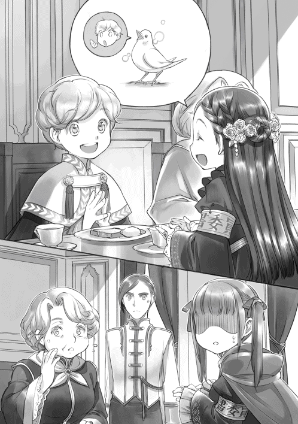
......そうだった。図書館に来たら大体いるから忘れちゃうけど、ヒルデブラント王子は表立って行動しちゃダメなんだよ。
「王族の本に関する督促が王族に課せられた義務か否か、父上に伺ってみます」
王族に課せられた義務の範囲ならばヒルデブラントは動けるらしい。「さすがに本の督促は王族の義務にならないと思うよ」と言いたかったけれど、ヒルデブラントがやることを見つけたように楽しそうなので口を噤んでおく。
......王族の督促が実現すれば効果絶大だし、せっかくのやる気を削 ぐと可哀想だからね。
「ローゼマイン様、お茶のお替わりはいかがでしょう？」
ブリュンヒルデが淑 やかに進み出てきてお茶を淹れた後、お皿にクッキーを取ってくれる。その内の一つをくるりとひっくり返してニコリと笑ってわたしを見た。
......すぐさま話題を変えてください、だって。わたしの発言、どうやら失敗したっぽい。
何が悪かったのかよくわからないけれど、話題変換しなければならない。
「督促のお仕事に関しては、許可が出ればヒルデブラント王子にお任せいたしますね。許可が出なければ去年と同じようにしますから、お気になさらず」
許可は出なくても気を落とさないでね、と遠回しに言いながら、わたしは頭の片隅でお茶会に相応しい話題を探す。まだ貴族院に入学しているわけではないヒルデブラントでも興味を持てそうな話題が必要だ。ハンネローレと共通する講義内容や貴族院での人間関係に関する話題では、全くわからないヒルデブラントが疎外 感を覚えるだろう。図書委員という貴重な共通の話題から変更を指示されると、すぐには思い浮かばない。
......王族が喜ぶ話題って何？
アナスタージウスとはエグランティーヌの話しかしなかった。エグランティーヌの話さえしておけば、基本的に機嫌が良かったのでそれでよかった。ヒルデブラントが好きなものがさっぱりわからない状態ではどうしようもない。洗礼式を終えたばかりで、部屋に籠もっていることになっているヒルデブラントに関しては全く情報がないのだ。
......ここにいる皆が盛り上がれそうな話題。共通点は貴族院だけだよね。あ、そうだ！
「わたくし、一度聞いてみたいと思っていたのですけれど、ソランジュ先生は貴族院の二十不思議をご存じですか？」
わたしが話題を出すと、ハンネローレとソランジュが話題転換に飛びついた。
「貴族院に伝わる不思議な話はいくつか存じていますが、二十もなかったと思いますよ」
「わたくしもいくつか耳にしたことはございます。ソランジュ先生のおっしゃるように二十もなかったと思いますけれど」
二人ともいくつかの不思議を知っているらしい。ヒルデブラントも興味を持ったようだ。明るい紫の瞳を輝かせて、わずかに身を乗り出した。
「貴族院の二十不思議ですか？ どのようなものでしょう？」
「学生達が面白がって増やし、似たようなものは統合され、改変され、どんどん形を変えていくので、嘘 か本当か、出所さえ不明なお話です。わたくし達のお父様やお母様が学生の頃、貴族院にあったお話だと、わたくしの知っている文官が教えてくれたのです」
「聞かせてください、ローゼマイン」
どうやら話題の変更には成功したようだ。皆が興味津々 という顔でわたしの方を見ている。ただ、わくわくとしているヒルデブラントには悪いけれど、わたしは詳しく知らない。むしろ、わたしが余計なことを言わずに済むように、ソランジュとハンネローレに語ってもらうつもりなのだ。
「そうですね。......卒業式の夜に踊る神の像、時の女神が悪戯 をする東屋 、ディッター勝負を始めるゲヴィンネン。それから、開かずの書庫。わたくしは詳しい話は存じませんけれど、ソランジュ先生やハンネローレ様はいくつかご存じなのでしょう？ 教えてくださいませ」
「アルトゥールは何か知っていますか？」
ヒルデブラントがそう言って自分の側仕えを見上げた。アルトゥールと呼ばれた二十歳くらいの側仕えは困ったような笑みを浮かべ、ヒルデブラントの肩に手を置く。
「ソランジュ先生のお話をよく聴いてください」
お茶会で側仕えをお話の主役に持って来てはならない。あくまで側仕えは控えているものだ。いつもの癖で尋ねてしまったらしいヒルデブラントが「あ」と小さく呟いて前を向く。社交に慣れていない子供の姿をソランジュが暖かい眼差しで見つめながら、「どのお話が良いかしら？」と呟いた。
「祭壇の最高神のお話はいかがでしょう？ 貴族院のあちらこちらに神をまつった祠 があるのですけれど、その祠で悪戯をする悪い生徒がいたのです。直接学生達や先生方に何かするわけではないので、注意を受けるだけでした。調子に乗った生徒は更に悪戯を続けました。けれど、ある日、強い光が降り注いだかと思うと、突然姿を消してしまったのです。その学生はもう戻ってきませんでした」
「え？ どこに行ってしまったのですか？」
ヒルデブラントとハンネローレが怖々とした表情で尋ねると、ソランジュは一度笑みを深めた後、静かに首を横に振った。
「残念ながら、それは誰にもわかりません。......神の目を盗んだつもりで悪いことをしていても神々はお見通しなのです。王子も姫様方も良い子にしていなければ、奥の間にある祭壇の最高神が動き出し、はるか高みに連れて行かれてしまいますよ」
......小さい子供に聞かせる教訓話っぽいけど、本当にありそうなところが怖いよね。
「あとは、そうですね。ローゼマイン様が口にされたお話の中で、わたくしが存じているのは時の女神が悪戯する東屋でしょうか。王子や姫様方にはまだ少し早いかもしれませんけれど、あの東屋は気になる異性との逢瀬の場なのです。側近を連れ歩く領主候補生が二人だけで話ができるように、側近達を立ち入らせないための場所。皆様もいずれ使う日が来るかもしれませんね」
ソランジュが茶目っ気のある表情でわたし達を見回し、クスッと笑った。東屋は完全には壁に囲まれていない。そのため、外に控える側仕え達から自分の主の行動はよく見える。けれど、盗聴防止の魔術具を使うと会話は聞こえなくなるので、二人だけで話ができる場になるそうだ。お互いしか見えていない二人の時間は驚くほど短く、あっという間に過ぎ去ってしまうので、時の女神が悪戯する東屋と呼ばれるようになったらしい。
「ですが、時の女神が悪戯する東屋にお誘いを受けても、簡単に承知してはなりませんよ。周囲からは恋人関係に見られますからね」
ソランジュの言葉に、わたしはエルヴィーラが書いた貴族院の恋物語を思い出した。
......あ～、お母様の恋物語で養父様が必死に養母様を誘い出そうと奮闘していた東屋のことだ。なんで東屋にこだわるのか全く理解できなかったけど、恋人同士が行く場所だったのか。「別の場所ならばご一緒します」って一度断られたんだから別の場所に連れて行ってあげればいいのにって思ってたよ。
フロレンツィアに断られた後、ジルヴェスターが神々へ嘆きを訴える詩がつらつらと続く苦悩がいまいち理解できなかったのだが、ようやくわかった。ほぅほぅと納得していると、ハンネローレが知っている不思議話を教えてくれる。
「わたくしが知っているのはディッターを始めるゲヴィンネンのお話です。洗礼式を迎える子供くらいの大きさのゲヴィンネンが夜中にディッターを始めるというものです。目撃情報が多かったとは伺っていますけれど、わたくしもあまり詳しくないのです」
......何となくディッターと聞くと、ダンケルフェルガーの関与があるって考えちゃうよね。ルーフェン先生のせいだけど。
ハンネローレが教えてくれたことに礼を言って、わたしはソランジュに視線を向けた。
「ソランジュ先生、開かずの書庫については何かご存じないですか？」
「開けられない書庫という意味でしたら、わたくしが知っているだけで三カ所ございます」
「えぇ!? 三カ所もあるのですか!? 」
さらりと答えが返ってきたことに驚き、その内容にもう一度驚いた。ソランジュはヒルデブラントとその側近にちらりと視線を向けた後、ゆっくりと頷く。
「前任の司書は三人いました。三人がそれぞれに鍵を管理し、全ての鍵が揃わなければ入れない書庫があるのです。盗難を防ぐために鍵の在り処 はそれぞれしか知りません。彼等が去ってから鍵の在り処がわからず、入れなくなってしまった開かずの書庫が三カ所ございます。滅多 に使わない古い文献を保管するための書庫ですから、今のところは特に問題ございません。恐らく鍵は彼等の私室にあると考えられますので、書庫を開けるためにもこの図書館に上級貴族の司書が派遣される日が来るのを待っています」
神殿にも神殿長に任命された者にしか使えない鍵や聖典がある。そういう鍵なのだろう。開けられない書庫が三つもあるというだけで血沸き肉躍る気分になる。ヒルデブラントとその側近は中央の上級貴族になるはずなので、いずれ開けることができるかもしれない。
......でも、三つの鍵が揃えば開けられる書庫と、ユストクスが言ってた王族でなければ入ることができない書庫って別物？
「では、王族しか入れない開かずの書庫については何かご存じですか？」
「わたくしは存じませんけれど、そのような書庫があるのですか？」
ソランジュは知らないらしい。がっかりだ。「王族しか入れない」というところに反応したヒルデブラントが目を瞬いた。
「王族だけならば、私は入れるのですね」
「噂ですから、本当にあるかどうかはわかりませんよ。今の世代では不思議話を知っている者も少ないですから、尚更です」
「父上や母上に尋ねてみましょう。面白いお話を何かご存じかもしれません」
ヒルデブラントが楽しそうにそう言って笑った。王族が知っている面白いお話というところで、わたしは思わず身を乗り出す。
「ヒルデブラント王子、面白いお話があれば、わたくしにも教えてくださいませ」
エーレンフェストに戻ってユストクスにお話をねだり、ヒルデブラントが教えてくれる話を加え、貴族院の二十不思議を本にまとめれば、騎士物語以外にも男の子が楽しめる本を作れるかもしれない。
......あ、本。返却しなきゃ。
帰り際にバタバタするわけにはいかない。わたしは文官見習い達がいる一角へ視線を向けた。ハルトムートとフィリーネの二人がお茶会の様子をメモしているのが見える。わたしと目が合った瞬間、ハルトムートが立ち上がり、本に手を向けた。その動作にわたしは軽く頷く。
「ハンネローレ様、先にお伝えしたように、わたくしはエーレンフェストに帰還することになりました。ですから、今、お借りしていた本をお返ししてもよろしいでしょうか？」
「えぇ。わたくしもお返しいたしますね」
ハンネローレが自分の文官見習い達を振り返る。準備してきた本を文官同士で交換し、汚損や破損がないか、それぞれが確認し始めた。その様子を少しの間見ていたハンネローレがくるりとわたしの方を向いて、ニッコリと笑う。
「ローゼマイン様が貸してくださった本は現代の言葉で書かれていて、とても読みやすく、楽しめました。わたくし、エーレンフェストの本が大好きです」
......どうしよう。めっちゃ嬉しい。言葉が出ないレベルで嬉しい。
ルッツ達と作ってきた紙、ヨハン達が作ってくれた印刷機、ローゼマイン工房の皆が一生懸命に印刷してできあがった本である。それがエーレンフェスト以外の貴族に受け入れられたことがとても嬉しい。本が好きで読みたいと思ってくれるお友達の存在の素晴らしさを思うだけで、神に祈りを捧げたくなる。
......祝福が飛び出そう！ 抑えて、わたし！
感動に打ち震えるわたしの背後に立ったリヒャルダがこっそりと空の魔石を渡してくれた。それを握って魔力を流していく。ホッと安堵の息を吐いていると、ハンネローレが何度か目を瞬いた。
「どうかなさいましたか、ローゼマイン様？」
「いいえ。この本を作るまでに色々とあったことを思い出しただけです。ハンネローレ様のお言葉で全てが報 われたような気がいたします。こうして一緒に本を読んで、語り合うお友達が欲しいとずっと思っていたのです」
「勿体 ないお言葉ですわ」
ハンネローレはそう言って控えめな笑みを浮かべる。
「次は貴族院の恋物語をお貸ししますね。わたくし達のお母様やおば様の世代で実際にあった話や噂話が入っているのですって。わたくしにはどなたのお話か、わかりませんでしたけれど、ヒルシュール先生はご存じのお話がいくつもあったようです」
フィリーネがわたしのところに恋物語を持って来てくれた。フィリーネがハンネローレの文官見習いに差し出す。受け取った文官見習いが中を軽く改めてハンネローレに渡した。
「ダンケルフェルガーのお話もあるかしら？」
「騎士見習いが主役のお話がいくつかあったので、もしかしたらダンケルフェルガーの騎士見習いのお話かもしれません」
ディッターの勝利を捧げると恋人に約束した騎士見習いのお話があった。勝ったのと負けたのと両方あったが、ダンケルフェルガーは勝つまで戦うから、勝った騎士見習いの話だろう。
「楽しみです」
「ハンネローレ様がダンケルフェルガーの恋物語をご存じでしたら教えてくださいませ。本になるかもしれません。文官見習いが原稿にしてくださったら、わたくし、喜んで買い取ります」
わたしの言葉に目を輝かせたのは、ハンネローレではなく、ハンネローレに仕えている文官見習いだった。たくさん物語を集めてくれると、とても嬉しいので、ぜひ頑張ってほしい。
「ローゼマイン様、エーレンフェストの新しい本をわたくしにもぜひ拝読させてくださいませ。職業柄、新しい本には目がないのです」
「その気持ちはよくわかります。ハルトムート、ソランジュ先生にお渡ししてください」
ハンネローレから返してもらったばかりの恋愛中心の騎士物語本をソランジュに渡してもらう。ハルトムートから本を受け取ったソランジュがそっと本の表紙を撫で、花の透かしを不思議そうに見つめた。それから、丁寧な仕草でパラリと本を開く。
「エーレンフェストの本は薄くて持ちやすくて、とても読みやすいのです。挿絵もあって素晴らしいのですよ」
ハンネローレが興奮気味に頬を紅潮させて、ソランジュにエーレンフェストの本を猛プッシュしてくれる。ソランジュが顔を上げて、嬉しそうにハンネローレを見つめた。
「えぇ。こうしてハンネローレ様のように本をお好きになる方がいらっしゃるだけで、エーレンフェストの本がどれほど素晴らしいのか、すぐにわかります」
二人の会話にわたしはとても嬉しくなってきた。突然の帰還命令に感謝したくなるくらいだ。すぐにでもエーレンフェストへ帰って、グーテンベルクの皆を褒めてあげたい。
......大領地の領主候補生も喜んでくれたよって報告するんだ！ ルッツは絶対に一緒に喜んでくれるだろうけど、販路拡大ってベンノさんも喜ぶかも？ 孤児院の皆にもご褒美がいるよね。
冬は準備した食糧が尽きないように節約が基本で贅沢 できないので、春になったら孤児院の食事をちょっと豪華にしてもらおうと決意していると、ヒルデブラントがソランジュとハンネローレを見比べた後、おずおずと口を開いた。
「ローゼマイン。私もエーレンフェストの本を読んでみたいと思うのですが、よろしいですか？」
「もちろんです、ヒルデブラント王子」
よしっ！ とわたしは内心でガッツポーズを作る。一度失敗したようなのでヒルデブラントが言い出さなければ、こちらからは本を勧めにくかったのだ。わたしがハルトムートに視線を向けると、ハルトムートは騎士物語をヒルデブラントの側仕えアルトゥールに差し出した。
「ハンネローレ様には恋物語を中心にした騎士物語をお貸ししたのですけれど、殿方には戦いを中心にしたお話の方が楽しめると思うのです。この本は文字を読むことができるようになった子供達が読書を楽しめるように、と考えて作りました。大人にとっては軽い読み物になりますが、子供にとっては読書に慣れるためにちょうど良い本になったと思います」
アルトゥールが軽く頷きながら中を改め、ヒルデブラントに差し出す。
「ローゼマイン様のおっしゃるように、今の王子には程良い難度の本です」
簡単に読めるわけではないが、全く読めなくて匙を投げるほど難解でもない。ハンネローレやソランジュと同じように本を手にしたヒルデブラントが「頑張って読みます」と嬉しそうに頷いた。
「では、わたくしからもローゼマイン様にお貸しいたしますね。クラリッサ」
全員に本が行き渡るのを待っていたようにハンネローレがそう言って、自分の文官見習いに視線を向けた。クラリッサと呼ばれたダンケルフェルガーの文官見習いが分厚くてしっかりとした装丁 の本をハルトムートに渡す。
「ありがとう存じます。これでエーレンフェストに帰還してからの楽しみができました」
新しく読む本が手に入ったので、貴族院の図書館からは引き離されてしまう辛さが減った。ハンネローレはわたしの救世主だ。
「あの、ローゼマイン様はいかがでした？ その、お貸ししたダンケルフェルガーの本は言い回しも古くて読みにくかったでしょう？」
エーレンフェストの本を見れば、確かにダンケルフェルガーの本が理解できないのではないかと心配になるのも不思議ではない。わたしは笑顔で首を横に振る。
「わたくし、古い言い回しは聖典で慣れていますし、ダンケルフェルガーの歴史の長さや厚みに圧倒されました。とても楽しかったです」
「楽しんでいただけたのですね」
安堵したようにハンネローレが微笑む。その笑顔に甘えて、わたしは大事なお願いをする。
「あの、ハンネローレ様。わたくし、お願いがあります。ダンケルフェルガーの歴史書を現代語訳したのですけれど、間違っていないか、確認していただけませんか？」
目を瞬くハンネローレやクラリッサに、ハルトムートが現代語訳した原稿の束を差し出す。クラリッサが手に取って、パラパラと中を改めながら目を剥いた。
「量がございますから、この場で間違いがあるかどうかを確認するのは難しいと存じます」
「もちろんお貸しいたします。この場で確認していただきたいわけではございません」
そう言うと、ハンネローレが「それでしたら確認させていただきます」と快く引き受けてくれた。
「それから、せっかく書いたので、この原稿を本にしたいのですけれど、お許しいただけませんか？」
「ダンケルフェルガーの歴史をエーレンフェストで本にするのですか？」
ハンネローレが不可解と言いたげな表情になって、自分の側仕えに視線を向ける。他の領地の歴史が綴 られた本を読むのはとても楽しいのだが、あまりそういう楽しみ方はしないのだろうか。それとも、禁帯出 なのだろうか。
「......さすがにわたくしの一存では決められません。その、原稿を一度持ち帰り、アウブに相談させていただいてもよろしいですか？」
「はい、よろしくお願いいたします」
......アウブ・ダンケルフェルガーが快く許可してくれますように。
「では、わたくしからはこちらの資料をローゼマイン様にお貸しいたしましょう。司書の気分に浸れるかもしれません」
ソランジュが以前の司書が書いていたという仕事の報告書を貸してくれた。突然、上級貴族の司書がいなくなったソランジュが参考にしながら仕事をしていた大事な報告書らしい。
「以前にはこの図書館で動いていた魔術具に関する記述もございます。ローゼマイン様が魔術具を考える際の参考になるのではございませんか？」
図書館の本棚に並んでいる貸し出すための資料ではない。現役の司書が書いた仕事の報告書だ。図書館の魔術具について、これ以上詳しい資料はないかもしれない。
「わたくし、ソランジュ先生が大好きです」
「あら、まぁ......」
ホホホと笑うソランジュからハルトムートが受け取った資料をダンケルフェルガーから借りた本に重ねて置いた。読んだことがない本が積まれているのを視線で追いかける。すぐにでも読みたい。けれど、お茶会の途中で本を手にしたら他が全く目に入らなくなる。それを側近達も知っているのだろう。わたしの視界に本が映らないようにコルネリウスがそっと立ち位置を変えた。
「アルトゥール、私もローゼマインに何かお返しをしたいです。良い本がありませんか？」
ヒルデブラントが自分の側仕えを振り返ってそう言った。王族ならば献上 されて当然で、お返しなど特に考えなくても不思議ではない。けれど、ヒルデブラントは律儀 に本でお返しをしようと考えている。
......わぉ！ ヒルデブラント王子はとっても良い王子だ。中央の本が読めるなんて！
未知の領域にある本が読めるかもしれないことにわたしが感動していると、アルトゥールは少し考えるように目を伏せた。
「次回までに本を見繕っておくことも可能ですが......」
そう言った後、アルトゥールがちらりとわたしへ視線を向ける。
「王宮図書館に招待する許可を得る方が、喜ばれるのではございませんか？」
喜びのあまり、わたしはその場で昏倒 した。
帰還
気が付いたら自分の寝台だった。いつの間にわたしは寝ていたのだろうか。昨日の夜の記憶がないなと思いながら起き上がり、枕元にあるベルに手を伸ばす。チリンと軽やかな音が響くと同時に、心配そうに表情を曇らせたリヒャルダが天蓋の中へ入ってきた。
「姫様、体調はいかがですか？」
「リヒャルダ、今とても幸せな夢を見ていました。わたくし、王宮図書館に行けるのです」
「......夢ではございませんが、王の許可が下りるかどうか、まだわかりませんよ。お元気そうで何よりですけれど」
リヒャルダが心配から呆れへ表情を変える。そこでやっと思い出した。わたしはお茶会で嬉しさと感激で溢れそうになる魔力を制御できずに倒れたのだ。
......のおぉぉ！ お茶会の主催者なのに倒れるの、二回目！ 王族の前で意識を失うのも二回目！
すぅっと血の気が引いていく。まずい。これは非常にまずい状況ではないだろうか。おろおろしながら、わたしはリヒャルダを見上げた。
「リヒャルダ、あの、お茶会は？ お茶会はどうなったのですか？」
「当然中断いたしました。続けられるわけがございません」
せっかく楽しく和やかだった本好きのお茶会が、突然倒れたわたしのせいでサスペンスかホラーに早変わりしたらしい。
「本のお返しに王宮図書館へ招待すれば喜ぶのでは？ と提案した途端、バタッと音を立てて倒れた姫様を見て、ヒルデブラント王子の側近が狼狽 していました。感情を抑えることに長 けているはずの中央の上級貴族達を呆然とさせたのですよ、姫様は」
図らずも倒れた原因となってしまったアルトゥールは「なっ!? 」と口を開けた状態で立ち尽くして固まってしまったらしい。まだ許可さえ出ていない提案の時点で、嬉しさのあまり意識を失うなんて普通は考えないだろう。
......うあぁ、アルトゥールさん、ごめんなさい。
ヒルデブラントは全く動かないわたしを見て、「ローゼマインはどうなってしまったのですか？」と固まったままのアルトゥールを涙ながらにゆさゆさと揺さぶる混乱ぶりを見せていたそうだ。おまけに、「落ち着いてくださいませ」とヒルデブラントに声をかける王子の側近達の声も上擦っていて、戸惑いを隠せていなかったと言う。
......ごめんなさい。ごめんなさい、皆。トラウマを植え付けるつもりなんてなかったの！
「本のやりとりをする段階で魔石が必要でしたからね。王宮図書館に招待となれば、姫様が昂 りを抑えられなくなるのはわかります。ですが、またしても王族の前で意識を失ってしまいましたね。ハンネローレ様も去年を思い出したようで、目を潤ませていらっしゃいましたよ」
突然倒れたわたしに狼狽したのはヒルデブラント達だけではなかったようだ。初めて倒れたところを目撃したソランジュもおろおろし、ハンネローレも同様だったらしい。
「その後はどうしたのですか？」
リヒャルダによると、ヴィルフリートとシャルロッテにオルドナンツで救援を頼んだそうだ。二人がヒルデブラント達を宥めたり説明をしたりして事後処理をしてくれたらしい。その間にリヒャルダはわたしを抱きかかえて護衛騎士と退出し、側仕えや文官が片付けを行ったそうだ。
「ヴィルフリート坊ちゃまとシャルロッテ姫様にもお詫 びとお礼が必要ですよ、姫様」
「わかっています」
......迷惑かけまくりだ、わたし。
カクンと項垂れていたわたしは、とても大事なことを聞いていないことに気付いた。リヒャルダを見上げて恐る恐る尋ねてみる。
「......あの、お茶会はいつの話かしら？ ついさっき？ それとも、昨日ですか？」
「二日前です。ヒルデブラント王子とハンネローレ様とソランジュ先生からお見舞いの品物と容体を尋ねるオルドナンツが何度か届いていますよ」
自分がやらかしたことに頭を抱えていると、天蓋の向こうで「ローゼマイン様が目覚められたのですか？」という声がした。連絡を受けた女性側近が部屋に集まり始めたようだ。
「姫様、魔力が落ち着いていて気分が悪くないのでしたら、お食事にいたしましょう。そろそろお昼ですからシャルロッテ姫様も戻ってきます。お元気な姿を見せて差し上げてくださいませ」
眠っている間にずいぶんと魔石に魔力を移してくれたらしい。道理で起きた時からスッキリしているわけだ。リヒャルダの言葉に頷いて、わたしは寝台から降りる。天蓋から出ると、自分の側近達が揃って安心したように表情を緩ませた。
「皆、心配かけてごめんなさいね」
「ローゼマイン様が謝ることではございません。王族を招待するお茶会で主を倒れさせてしまうなんて......。わたくし、側仕えとして失格ではないでしょうか」
顔を洗って、衣装を整えてもらう間にブリュンヒルデが悔しそうに唇を尖らせた。わたしの暴走を抑えるためにクッキーやお茶での暗号や指示を考えたり、魔石を渡すタイミングを打ち合わせたり、側仕え達は頑張った。失格になるわけがない。
「ブリュンヒルデ達ではなく、二度も王族の前で倒れたわたくしが貴族失格なのですよ」
わたしが肩を落とすと、レオノーレが静かに首を横に振った。
「今回はローゼマイン様の責任とも言い難 いですね。ローゼマイン様の弱いところを的確に攻めてくる手腕が優れていただけです。さすが王族の側仕え、とわたくしは感心いたしました。フェルディナンド様からもある意味では助かった、と連絡が来ています」
「......え？ 助かったというのはどういうことでしょうか？」
わたしが目を瞬くと、フィリーネが言いにくそうに口を開いた。
「意識を失わなかったら何の相談もなく即答で了承していたに違いないからだそうです」
......危なかった。神官長の言う通り、意識があったら即答してたよ。相談が必要だなんて咄嗟には考えなかったもん。セーフ。
「姫様が意識を失っている間に帰還日になったのですが、王族や大領地へお詫びや挨拶もせずに帰還させるわけにはいかないので、アウブ・エーレンフェストに許可を得て貴族院に滞在しています」
お茶会の参加者に謝らなければならないし、帰還命令が出たことをドレヴァンヒェルのアドルフィーネにも伝えなければならない。
......謝罪したら図書館へ魔力供給に行くでしょ？ 魔石も持っていく方が良いかも？......うーん、他にも何か忘れているような気がするんだけど......何だろう？ 何があったっけ？
帰還までに済ませることを指折り数えながら食堂へ降りていく。階段のところでコルネリウスが待っていて、「目覚めて良かった。本当に心臓に悪い」と言いながら頬を軽く撫でてくれた。
食堂へ入ると、すでに昼食を摂っている学生達が大勢いた。シャルロッテが「お姉様！」と声を上げた瞬間、彼等が一斉にこちらを振り返る。お茶会でわたしがぶっ倒れたことは周知されているようだ。席を立ったシャルロッテがわたしの顔を覗き込んで、不安そうに藍色の瞳を揺らした。
「意識が戻ったようですが、まだ休んでいなくて大丈夫なのですか？」
「今回はとても調子が良いようです。心配をかけましたね、シャルロッテ」
頬や額に触れるシャルロッテの手に軽く触れて笑って見せると、ようやく安心したようにシャルロッテが表情を緩めた。わたしは食事中のヴィルフリートに顔を向ける。
「ヴィルフリート兄様、ご迷惑をおかけして申し訳ありません」
「意識が戻ったのならば良い。体調は良いのだな？」
わたしが頷くと、ヴィルフリートは食事を再開しつつ、お茶会の後の惨状について話してくれた。リヒャルダ達がわたしを連れて寮に戻った後、ヒルデブラント達に説明を始めたらしい。去年のハンネローレの時と同じように、洗礼式で引っ張って倒れさせたことや雪玉数個でダウンした昔話をして「お気になさらず」と言ったところ、「か弱い姫になんという酷 いことを！」とヒルデブラントからお叱りを受けたらしい。
「王子もかなり混乱されていたから、感情の捌 け口 にちょうど良かったのであろうが、私は今回ローゼマインの救援に行って王族に叱られるという希少な体験ができた」
「ごめんなさい、ごめんなさい、ヴィルフリート兄様」
側近がヒルデブラントを諌め、彼等が退室していくのを見送った後、ヴィルフリートはハンネローレのフォローに精を出すことになったそうだ。
「二度目ですからわたくしは大丈夫です、と涙目で繰り返すハンネローレ様はどこからどう見ても大丈夫ではなかった。ハンネローレ様まで意識を失うかと思ったぞ」
ヴィルフリートは去年同様に寮までハンネローレを送り届け、説明してきてくれたらしい。
「わたくしはソランジュ先生を担当していました。お姉様が倒れた場に入るのも初めてで、実はわたくしも戸惑ってしまっていたのです」
そういえば、今までシャルロッテの目の前で倒れたことがないので、シャルロッテは後始末に追われる現場に同席したこともなかったはずだ。ヴィルフリートを真似て「よくあることなのです」と慰めていたけれど、全く意識がないわたしの姿はユレーヴェに浸かることになった一件を思い出して泣きたいくらいに怖かったそうだ。そんな精神状態で気丈に振る舞ってソランジュを慰め、ブリュンヒルデ達の片付けを自分の側近に指示を出して手伝わせたらしい。とても初めてのアクシデント対応だとは思えない。
......シャルロッテがしっかりしすぎだよ。
「皆にお詫びをしたら、エーレンフェストに帰還だ。いいな？」
わたしが昼食を終えた頃にハルトムートが寮へ戻ってきた。昼食よりも先に報告を始める。ハルトムートは午前に調合があり、講義の後にヒルシュールと話をしていたらしい。
「ローゼマイン様、ライムントが研究成果を渡すため、面会を願い出ています。ヒルシュール先生からも同様です。どうされますか？」
......思い出した。忘れてたの、ヒルシュール師弟だ！
帰還前に挨拶しなければならない相手で、誰を忘れていたのかわかって胸のつかえがとれた。
「わたくし、シュバルツ達への魔力供給と魔石を渡すため、図書館に行かなければなりません。明日の午前中に図書館でならば会えると連絡してください」
「かしこまりました。オルドナンツを送ってきます」
ハルトムートはそう言って、すぐに食堂を後にした。わたしはリーゼレータに図書館へ向かう時、ヒルシュールとライムントに差し入れる軽食を準備してもらえるように頼んでおく。あの研究馬鹿師弟は間違いなく碌な食事を摂っていないはずだ。
昼食の後はオルドナンツで回復した旨 とお茶会のお詫びを伝え、バタバタと帰還する不義理を詫び続ける。ソランジュのオルドナンツだけには「明日の午前中に魔力供給に行きます」と伝えておいた。アドルフィーネにもお茶会で倒れたことで、エーレンフェストから帰還命令が出たことを伝える。その日の午後はお詫びと帰還準備で終わった。
「ローゼマイン様、お元気な姿を見られて、やっと人心地がつきました」
「申し訳ございませんでした、ソランジュ先生。感情が昂るとよくあることなので、気に病まないでくださいませ」
胸を撫で下ろすソランジュに改めて詫び、わたしは不在の間に使えるように魔石を一つ渡す。王宮図書館に興奮したわたしからリヒャルダが魔力を取っておいてくれたので、魔力のたっぷり詰まった魔石が、実は何個もあるのだ。
「ヒルデブラント王子とハンネローレ様がいらっしゃるので、魔力が足りないことはないと思いますけれど、念のためにお渡ししておきます」
「ありがとう存じます。こちらよりもローゼマイン様のお体の方が心配です。エーレンフェストでしっかりと休養を取ってくださいませ」
......多分エーレンフェストに戻ったら、貴族院にいるより忙しくなると思うんだよね。
冬の社交界の真っ最中だし、奉納式もある。その前に保護者達からの事情聴取とお説教がある。そう思ったが、不安そうにわたしを見ているソランジュに余計なことは言わない。
「ヒルデブラント、きた」
ヴァイスの声にわたしが扉の方を見ると、本当にヒルデブラントと側近達が入ってきた。シュバルツとヴァイスには主や協力者が図書館の敷地内に踏み込めばわかるらしい。正確には図書館の敷地内のどこにいるのかがわかるそうだ。
「ローゼマイン、本当に大丈夫なのですか？」
ヒルデブラントが紫の瞳を曇らせて、不安そうにわたしを見てくる。身長がほとんど変わらないので真っ直ぐに見つめられると、どれだけ心配をかけたのかが一目でわかった。
......王子の周囲に突然倒れるような人はいないだろうし、そりゃ、ビックリしたよね。
自分が寝込むことがあっても、他人が寝込むところを見る経験さえなかったかもしれない。そんなヒルデブラントの前で失神である。とんでもない衝撃だったはずだ。
「ご心配をおかけいたしました。......その、わたくし、感情が昂ると意識が途切れることが多いのです。慣れていない方を驚かせてしまうので、なるべく倒れないように工夫はしているのですけれど、驚かせてしまって申し訳ございませんでした」
王宮図書館は少し刺激が強かったようです、と心の中で呟く。提案だけで倒れるのですからと招待されなくなったら困るので心の中だけだ。
わたしが詫びると、ヒルデブラントがふるふると頭を左右に振った。
「突然のことに驚きましたが、もう大丈夫です。私も驚いているだけではなく、トショイインとしてローゼマインを助けられるように強くなりますから」
......ヒルデブラント王子が頑張って背伸びしてる感じがすごく可愛い。
グッと拳を握って「今度は取り乱しません」と言ったヒルデブラントの瞳が決意に燃えているように見える。強くなるための目標が取り乱さないというところも可愛い。
「わたくしが不在の間、シュバルツ達をお願いします。ヒルデブラント王子が気にかけてくださると、とても心強いです」
嬉しそうにヒルデブラントが頷いた時、図書館に色とりどりの光が降り注いだ。講義を終えたライムントが図書館にやって来る時間が近い。
「あの、ヒルデブラント王子。大変申し上げにくいのですけれど、わたくし、これから図書館で人と会う約束がございます」
「ヒルデブラント王子、あまり他の者にお姿を見せるわけには参りません。ローゼマイン様のお元気そうな姿をご覧になったのですから、すぐに戻りましょう」
アルトゥールが名残惜 しそうなヒルデブラントを促しながらわたしを見て、「我々も安堵いたしました、ローゼマイン様」と言った。
ヒルデブラント達が去ると鐘が鳴り始め、それから少し経ってヒルシュールとライムントがやってきた。今日は研究室から出るからなのか、二人とも外見がさっぱりしている。
......なんかこの二人、親子っぽい。研究に没頭して、人生を謳歌 している研究者オーラがすごく似てるよ。
二人を見ながらそんなことを考えていると、ヒルシュールが不満そうに口を開いた。
「今年はずいぶんと早いお帰りですね、ローゼマイン様。わたくし、予定よりも研究が進んでいないのですよ」
「連続して倒れたので、エーレンフェストの皆も気を揉 んでいるようです」
ターニスベファレンの後に倒れ、復活直後のお茶会で昏倒である。ターニスベファレンの件は学生に伏せられているので口にしなかったけれど、ヒルシュールには通じたようだ。「後見人であるフェルディナンド様も気が休まりませんね」とクスクス笑った。
「ローゼマイン様の体調回復を待って、あと数日後には尋問会の予定があるとルーフェンから聞いているのですけれど、帰還では仕方がありませんね。こちらで調整いたします」
「よろしくお願いします」
ルーフェンを始め、先生方がターニスベファレンに関する事情聴取の日程調整中に帰還命令が出たようだ。保護者達に相談できる余裕があるのは正直なところ助かる。そんな先生方の情報をいくつか流してくれた後、ヒルシュールはライムントに持たせていた資料をいくつか手に取った。
「こちらの資料がわたくしの研究成果です。フェルディナンド様に渡してくださいませ。それに、ライムントからフェルディナンド様に提出する課題もございます」
ヒルシュールに促されたライムントが少しおどおどとした様子でわたしの側近達の様子を見ながら一歩前に進み出て、植物紙の束を差し出す。
「いただいていた課題の改良設計図ができました。これをフェルディナンド様に渡してください。その、意見をもらってきてくださると嬉しいです」
ハルトムートがライムントから受け取って軽く頷いた。何度かハルトムートとはやりとりをしているようで、緊張していたライムントの肩から強張りが消えていくのがわかる。
「ライムント、わたくしはエーレンフェストに戻りますけれど、ハルトムートは貴族院に残りますから、新しい課題などを届けさせますね。それまでは規則正しい生活をして、講義を終えたり、栄養を蓄えたり、睡眠を取ったり、次の課題に備えるのですよ」
「まぁ、ローゼマイン様はライムントの母親ですか？」
ヒルシュールに呆れたように言われ、わたしはムッとヒルシュールを睨んだ。フェルディナンドが工房に籠もりきりになる生活に迷惑しているのはヒルシュール以外の者達だ。
「師匠であるヒルシュール先生が弟子の生活に気を配らないから、フェルディナンド様のような大人になるのです。子供時代の生活は後々に大きな影響を与えるのですから、今、ライムントの生活が大きく崩れるのを黙って見ているわけにはいかないでしょう。このままではライムントがフェルディナンド様二号になります」
「本当ですか!? 」
「生活が破綻しているという意味ですから、嬉しそうにしないでくださいませ」
ライムントを叱って、わたしはリーゼレータに準備してもらっていた軽食を差し出す。
「わたくしとの約束の時間になるギリギリまで研究していて、食事を摂っていないでしょう？ 資料は確かに預かりましたから、今日は食事と睡眠を取ってくださいませ」
「ローゼマイン様は本当に聖女ですね。わたくし、感動いたしました」
ライムントではなくヒルシュールが軽食の入った籠 を手にして歓喜に打ち震えている。やはりヒルシュールはダメダメ師匠だ。
「ヒルシュール先生は講義を忘れないでくださいませ。ライムント、師匠を仕事に送り出すのも弟子の大事な仕事と心得てくださいね」
軽食と共にヒルシュールのお目付け役を押し付けて、わたしは面会を終えた。
「もう忘れていることはないでしょうか？」
寮に戻ったわたしは、やることリストの最終確認をしながら転移陣のある部屋へ向かう。見送りの側近達、ヴィルフリート、シャルロッテも一緒だ。
「そこに書いたことを全て終えているのならば問題なかろう。エーレンフェストに帰って、父上達に叱られてくるといい。王族と距離を置かせるつもりで帰還を命じたはずなのに、お茶会で倒れて王族への印象を強くしたことに頭を抱えていたようだぞ」
「あぅ......」
転移陣の前にはコルネリウスも並んでいるが、わたしを送り届けた後はすぐに貴族院にとんぼ返りするらしい。最後の貴族院を謳歌するのだそうだ。今回はあまりにもわたしの帰還が早くて、レオノーレやユーディットもまだ全ての講義を終えていない。
「エーレンフェストにはダームエルとアンゲリカがいるので、護衛は問題ないのですけれど......一人だけ帰るのは寂しいですね」
「奉納式が終わった後、なるべく早く貴族院に戻ってくださいませ」
シャルロッテがそう言って微笑んだ。今年の不在期間、ロジーナの事はシャルロッテに頼んである。自分が不在にする時に同性の領主候補生がいると心強い。
「ローゼマイン、こちらのことは心配いらない。シャルロッテがいる分、去年よりずっと心強い。少なくとも女性ばかりのお茶会に駆り出されることはないからな」
ヴィルフリートが肩を竦めた。シャルロッテがクスクスと笑い、わたしも一緒に笑う。
「行きましょう、リヒャルダ、コルネリウス」
わたしはリヒャルダとコルネリウスと一緒に転移陣の上に乗る。転移陣が黒と金の光を発し、視界がぐにゃりと揺れた。
エピローグ
毎日、貴族院から報告書が届く。ジルヴェスターは領主執務室で側近達を排し、カルステッドとフェルディナンドの三人で読んでいた。
貴族院が始まるまでの報告書は平穏だった。ローゼマインが本棚に歓喜してヴィルフリートにかつてない感謝を見せたり、本が最優先の独特すぎる挨拶にシャルロッテが困惑したりしていたが、笑って流せるようなものだった。ローゼマインに名を捧げたいと申し出た旧ヴェローニカ派の学生のことがあったが、ローゼマイン自身が名捧げを非常に重く捉えていて忌避しているようなので様子見をすることにしていた。
親睦会が終わってから届いた報告書もまだ平穏だった。ドレヴァンヒェルがリンシャンを真似てきたことに驚いたが、早すぎるだけで予想できていたことだ。アーレンスバッハからやってきた花嫁ベティーナから情報が流れているという報告もあったが、そのために嫁いできたのだから当然だと思った。重要だったのは、お披露目も済んでいない第三王子の存在だったが、自室に籠もっていてくれるならば全く問題ない。
「......問題になるとすれば、ローゼマインが関わることになるのではないかということだ」
「不吉なことを言うな、フェルディナンド！ 基本的に王子は自室にいるらしいから、関わることはない。ないと言ったらないのだ！」
もちろんジルヴェスターもフェルディナンドと同じ危惧を抱いていた。去年の王族との関わり方を見て、何事もなく貴族院の二年生を終えられるとは到底思えなかったからだ。
講義が始まると、少しずつ平穏という言葉が遠くに流され始めた。ローゼマインがダンケルフェルガーの領主候補生を図書委員に引きずり込み、図書館でいくつかの魔術具に魔力供給をし、講義のシュタープ変形で神具を作りだし、フェルディナンドの与えたお守りが教師を攻撃し、自作の玩具を強化して寝台の天蓋に穴を開けたのである。
次々と届く報告書を読んで、ジルヴェスター、フェルディナンド、カルステッドの三人は視線を交わして深い溜息を吐く。報告書が大量すぎて読むだけで疲れるのだ。ジルヴェスターはぐりぐりと眉間に指を当てた。
「フェルディナンド、ローゼマインは何故こうも突飛なのだ？」
「知らぬ。私に聞くな。どうやら平穏という言葉の意味がローゼマインと我々では違うらしい。その辺りの摺 り合わせから必要だったようだな」
髪を掻き上げて深々と息を吐いたフェルディナンドもかなり疲れているように見えた。毎日報告書が届くことにカルステッドもぐったりしている。
「一週間も経たずにこれだけ事が起こせるのは、もはや才能だろう。そんな才能はいらぬが......」
カルステッドの呟きで、ジルヴェスターは恐ろしいことに気付いてしまった。
......そうか、これだけの報告書が届くのに、まだ一週間も過ぎていなかったのか。道理でヒルシュールからの報告がないはずだ。
それからも次々と報告は届く。二年生が全員試験初日に座学の合格を果たした報告、ドレヴァンヒェルからお茶会に誘われたので対処法を問う質問書、ローゼマインがローデリヒの名を受ける決意をした報告書、音楽の先生方のお茶会で得た情報など、様々だ。
お茶会や社交に関する質問書はジルヴェスターだけではなく、フロレンツィア、フェルディナンド、エルヴィーラにも届けられていたらしい。男性と女性では着眼点が違うようで、回答に差がある。複数の視点からの返答で少しは役に立つ回答になったとジルヴェスターは思った。順位が上がり、付き合う相手にも変化が出たため領主会議に出席した大人も大変だったが、貴族院にいる子供達も大変なようだ。去年に比べると、子供達のローゼマインの言動への対処がずいぶんと成長しているように感じた。
だが、大量に届けられている報告書を苦笑混じりに眺めていられたのは、ローゼマインが第三王子と図書館で出会うまでの間だった。
『シュバルツ達の着替えの日を決めると図書館に向かったお姉様が、ヒルデブラント王子と遭遇したそうです。これはよくあることなのでしょうか？ （シャルロッテ）』
『王子は表立って活動しないので、これから先に会うことはありませんよ、とローゼマインは楽観視していました。でも、私はひどく嫌な予感がします（ヴィルフリート）』
......父もだ、ヴィルフリート。ものすごく嫌な予感がするぞ。
「やはり接触したか」
「何故それほどに落ち着いているのだ、フェルディナンド!? 」
「......まだ接触しただけで、何も起こっていない。これからだ。今から取り乱していてはこれから先の報告書で身が持たぬぞ。落ち着け、ジルヴェスター」
まだ入学してもいない、本来ならば、会うはずもない王族が関わってきたというのに、パタパタと手を振って流しているフェルディナンドが落ち着きすぎだとジルヴェスターは思う。
「そんな不吉な言葉を聞いて落ち着いていられるか!? 余計に不安になったぞ」
「これから加速度的に厄介事 が起こる。去年を思い出せばわかるであろう？ ほら、ハルトムートの報告書を見てみろ。もっと不安になれるぞ」
薄 らとした笑顔でフェルディナンドが報告書を出してきた。どうやら面の皮が厚いだけで、彼も内心はかなり動揺しているようだ。
『ヒルデブラント王子に挨拶だけをしてローゼマイン様は読書を始めましたが、同じ年頃に見えるローゼマイン様に王子の方が興味を持っているようです。読書している姿を見に、わざわざ二階へ上がってきました（ハルトムート）』
......頼むからウチの子に関わらないでくれないか!?
叫べるものならば叫んでしまいたいが、ジルヴェスターは何とか呑み込む。
「フェルディナンド、ローゼマインと王族を接触させない方法はないのか？」
「全ての講義を初日に終わらせ、やっと解禁になった図書館通いを止められるわけがなかろう。本気で止めれば他への影響が大きすぎる。去年のヴィルフリートの失敗を繰り返したいのか？」
「ぐっ......」
図書館のために暴走するローゼマインに巻き込まれ、大変なことになった周囲の状況を思い出し、ジルヴェスターは口を噤む。カルステッドも処置なしというように肩を竦めた。
「図書館通いを止めるのも無理だし、王族の行動にこちらから干渉できるはずもない。部屋に籠もっていなければならないはずの王子が自重して、図書館に近付かないことを神に祈るしかないな」
「くそ！ 神に祈りを！」
「アウブ・エーレンフェスト、貴族院から緊急のお知らせです」
余計なことをするのはローゼマインだけではなかった。寮監であるヒルシュールがアーレンスバッハの学生を愛弟子として教育しているという報告書が届いたのだ。
『ヒルシュール先生を明後日に行われるシュバルツ達の着替えに招く予定だったのですが、どのように対処すれば良いでしょう？ （マリアンネ）』
『エーレンフェストの情報がヒルシュール先生から弟子を通じてアーレンスバッハに筒抜けになる可能性があり、とても危険です。これまでヒルシュール先生に渡した資料等、問題はございませんか？ （イグナーツ）』
『弟子のライムントをこちらの情報源にできる方法はありますか？ グンドルフ先生とも交流があり、ドレヴァンヒェルにも研究関係の情報が流れています（ハルトムート）』
『ライムントは改良に関してとても有能です。わたくしの作った魔法陣を改良し、修正方法も教えてくれました。それから、フェルディナンド様の本を読みたがっていました。貸してあげてもいいですか？ （ローゼマイン）』
......ローゼマイン！ 何故其方だけ危機感がないのだ!? アーレンスバッハに襲われたのは其方だろう!?
うがーっ！ と叫んでローゼマインの頬をぐりぐり突き回してやりたい。ジルヴェスターはそんな衝動に駆られてしまう。
「中央に籍を移したとはいえ、ヒルシュールにはもう少しエーレンフェストに配慮してもらいたいものだな」
カルステッドが口にしたのは、エーレンフェスト貴族として至極当然の感想だった。だが、その途端、フェルディナンドは厳しい表情でカルステッドを睨んだ。
「エーレンフェストがヒルシュールに配慮などしないのに、都合の良いことを言うな」
「フェルディナンド、それはどういう意味だ？」
顔をしかめたフェルディナンドによると、フェルディナンドを弟子とした時からヴェローニカの嫌がらせはヒルシュールにも及んだそうだ。ヒルシュールは寮の自室で安心して過ごすこともできなくなり、研究室に寝泊まりすることが増えた。本来ならば、寮監に与えられるエーレンフェストからの援助もヴェローニカの手の者に取り上げられて、全くヒルシュールの手元に届かない状態だった、と静かに淡々と述べる。
それはジルヴェスターが卒業した後の貴族院の姿で、全く知らないフェルディナンドとヒルシュールの過去だった。最優秀を取り続け、王から直々にお褒めの言葉を賜り、上位領地と個人的な繋がりを作り、魔術具や素材を売って学生とは思えないお金を稼いでいたフェルディナンドの貴族院での生活とはすぐに信じられない。
「寮監への援助だと？ 知っているならば、母上を退けた後で何故言わなかった？ あれから何年経っていると思っている!? 其方は自分の師匠に不自由をさせて平気なのか？」
「ヒルシュール自身がいらないと言ったからだ。自分の弟子を育てる邪魔にしかならない援助など必要ない。そう言ってヒルシュールは貴族院に在学中の私を庇ってくれていた」
だからこそ、フェルディナンドはヒルシュールを慕 い、魔術具で儲 けたお金の中から個人的に援助してきたそうだ。卒業してからも師弟の繋がりが深い理由がわかって、ジルヴェスターは何ともやるせない気持ちになる。
「フェルディナンド、頼むからそういう重要なことは教えてくれ。領主であるにもかかわらず、知らぬままでは自分が情けなくて仕方がない」
「......其方の母親にされたことは不愉快なことばかりで思い出したくもないのだ。許せ」
フェルディナンドが辛そうにわずかに眉を寄せ、目を伏せて掠れた声でそう言えば、ジルヴェスターにそれ以上の追及などできるはずがない。
「......許す」
ふぅっと息を吐いたフェルディナンドが「貴族院に行って来る」と立ち上がった。
「待て、フェルディナンド！ 大人は基本的に介入禁止だ」
だからこそ、こうして報告書を読む度に襲ってくる頭痛を、ジルヴェスターは返事を書く以外で発散できずにいるのだ。しかし、フェルディナンドは「問題ない」と手を振った。
「魔術具の処理は作製者がしなければならないと定められているからな。ついでに、少し恩師と話をしてくるだけだ。ヒルシュールに話を通せるとすれば、私しかいない。違うか？」
ヒルシュールのところに置いて来た魔術具の回収と同時に、ある程度話を付けてくるとフェルディナンドは言う。
「......案ずるな、ジルヴェスター。エーレンフェストに不利益をもたらすようなことは......」
「そのようなことは案じておらぬ。ヒルシュールと話をする過程で嫌なことを思い出すのではないかと思っただけだ。......わかった。其方に任せる」
「あぁ、任せておけ」
フェルディナンドはその日のうちに貴族院へ要望を送り、次の日の夕方にはエックハルトとユストクスを伴って貴族院へ向かった。夜にはひどくスッキリした顔で、大量の魔術具と共に戻ってきたのである。
その翌日、ジルヴェスターは自分の祈りが神に届かなかったことを知る。恐れていた王族との接触報告がやってきたのだ。
『今日はシュバルツ達の着替えをしました。ローゼマイン様が許可を出してくださったので、初めて触りました。新しい衣装もよく似合いました。途中からヒルデブラント王子が見学にいらっしゃって、気が付いた時にはヒルデブラント王子が魔力供給の協力者になっていました（マリアンネ）』
......シュバルツ達の着替えで、気が付いたら王子が出てきて、協力者？
「ちょっと待て！ ローゼマインが主で、王族が協力者!? 普通は逆だろう!? 」
「私は昨日貴族院に行って、厄介事の調整をしたのだぞ。何故、昨日の今日でこのような問題が起こるのだ？」
フェルディナンドが珍しく遠い目をして呟いた。ジルヴェスターも同感だ。
「ほら、こちらも読め。頭が痛くなったぞ」
カルステッドがバサッと報告書を渡してくれる。そのまま額を押さえて「あ～......」と低い唸り声を出し始めた。カルステッドを撃沈させた報告書を握り、一度気合いを入れた後、ジルヴェスターは目を通し始める。
『お姉様とヒルデブラント王子がとても仲良くしていました。わたくしが見た限りでは、王子はお姉様に、お姉様も王子に好意を持っているようです。お話をしている時の表情がお兄様の時と明らかに違うのです。まるで本を見るような熱のある瞳で王子を見つめていましたし、年下の殿方をどのように思うのか問われました。わたくしからはお兄様を推しておきましたが、お兄様に図書館を好きにしても良いと言うだけの度量が必要です（シャルロッテ）』
『王子はシュミルがお好きなようですが、むしろ、ローゼマイン様に興味を持っているように見えました。王宮図書館の話題にローゼマイン様がうっとりとしていました。侮 れません。どうやら王子は身長からローゼマイン様とシャルロッテ様を取り違えていたようで、ローゼマイン様は王子がシャルロッテ様に関心をお持ちだと勘違いしています。その後、魔術具の主の座を譲るように言われました。表立って活動できないヒルデブラント王子が魔力供給をするのは難しいこと、男でもひめさまと呼ばれるとローゼマイン様が指摘した結果、王子が協力者として魔力供給をすることになりました（ハルトムート）』
『今日はシュバルツ達の着替えをしました。ソランジュ先生は図書館に住んでいるそうです。とても羨ましく感じました。わたくしも将来は図書館に住みたいです。あ、そうそう。シュバルツ達を着替えさせているとヒルデブラント王子がやってきました。王子に聞いてほしいと言われたのですが、残念ながらシャルロッテはお兄様っ子で年下には興味がないようです。お姉様っ子になってほしいです（ローゼマイン）』
「......ローゼマインはまるで一人だけ別の世界にいるようではないか？」
他の誰もしていないソランジュの住まいについての報告が最も多く、そこから将来の展望が続き、王子に関する報告がついでにしか見えないのだ。
「どう考えてもローゼマインに社交は無理だ......」
「こんな状態で王族との交流が増えるのか？ 勘弁してくれ」
カルステッドもフェルディナンドも強くこめかみを押さえている。
「フェルディナンド、ローゼマインを連れ戻せないか？ せめて、王子が図書館に出入りする時期が過ぎるまで......」
「ようやく図書館に通えるようになったばかりだからな。......次に何かしでかしたら、帰還命令を出すと脅しておくことにしよう」
三人揃って頭を抱えたが、これはまだまだ騒動の始まりだった。
「ローゼマインからこのような質問状が届いたぞ」
『図書館のお茶会にヒルデブラント王子を招くことになりました。王子にエーレンフェストの騎士物語をお貸ししても問題ありませんか？ 何か気を付けることはありませんか？』
「ローゼマインが何故王族をお茶会に招待することになったのだ!? 身の程知らずにも程があるぞ」
王族を招待することなど、エーレンフェストでは領主会議でしか行わない。招待されて向かうより、招待する方が気を遣うことが多くて大変なのだ。碌な社交ができないローゼマインには無理だと言わざるを得ない。
「本好きの友人に構ってばかりで、王族を放置する図しか思い浮かばぬ」
フェルディナンドの想像は、ジルヴェスターにも容易に頭に思い浮かべることができた。ローゼマインならば不敬だろうが、絶対にやる。
「側仕えと合図を決めさせておけ。話題を変えたい時、王子を放置しすぎている時などに使うのだ。本の貸し借りの話題が出ただけで感情が振り切れるに違いない。魔石は多めに持たせておいた方が良かろう」
思いつく限りの対策を書いてローゼマインの側近に送る。ローゼマインには「王族を放置するのは厳禁」としつこいくらいに書いておいた。
全員の返事を揃えて送った直後、シャルロッテから緊急の知らせが届いた。今年は緊急の知らせばかりである。
『魔獣を狩りに行った旧ヴェローニカ派の子供達の内、ローデリヒが負傷して戻ってきたため、お兄様が騎士見習いを連れて救援に向かいました。お姉様がローデリヒの怪我を癒しながら話を聞いたところ、ターニスベファレンだとわかり、闇の祝福を与えるため、お姉様も護衛騎士を連れて飛び出していきました。先生方への連絡を指示されましたが、わたくしが他にやるべきことはありますか？ （シャルロッテ）』
「ターニスベファレン？ 何だ、それは？」
聞いたことがない名前にジルヴェスターが首を傾げていると、フェルディナンドが「面倒な」と呟きながらすぐさまペンを手にして返事を書き始めた。現地の騎士見習い達に対してターニスベファレンへ攻撃をしないように注意し、交代で敵を挑発し、中央の騎士団が到着するまで時間を稼ぐように伝えろ、という指示だ。
「ベルケシュトックの辺りに出没するトロンベのような魔獣だ。黒の武器にしか切れぬ」
「何だと!? 大変ではないか！ 我々が......」
「駄目だ、カルステッド。エーレンフェストから騎士団は出せぬ。中央に頼むしかない」
騎士団が貴族院へ向かえば中央への侵略と捉えられても仕方がない。中央からの要請がない限り、エーレンフェストから騎士団を出すことはできないのだ。歯噛みするような表情で、カルステッドが返事を綴るフェルディナンドの手元を見つめる。
書き終えると、フェルディナンドは早足で転移の間へ行き、その場にいる騎士に「すぐにこれを送れ。大至急だ」と書いたばかりの紙を渡した。
転移陣のある部屋で返事を待ち構えていたのか、シャルロッテの返事もすぐに届いた。
『すでに現地には連絡済みです。攻撃してしまい、巨大化してしまったけれど、今は班分けをして時間稼ぎをしているそうです（シャルロッテ）』
「ターニスベファレンを知っている者がいたとは、優秀だな」
ハァ、と一安心したようにフェルディナンドが息を吐いて、髪を掻き上げた。
ターニスベファレンがどうなったのか、悶々 としながら三人が続報を待っていると、『ターニスベファレンを倒したそうです。でも、お姉様も倒れました。他に被害はありません（シャルロッテ）』という知らせが届いた。
「ターニスベファレンが片付いたのならばよかった。心配にはなるが、ローゼマインが倒れるのはいつものことだ」
すぐにでも救援に向かいたいような顔をしていたカルステッドが、肩の力を抜いてホッと安堵の息を吐く。ジルヴェスターも胸を撫で下ろした。
次の日、それぞれから報告が届いた。
『私は知らせと同時に準備し、救援に向かいました。先生方が到着するまで時間稼ぎをするのだ、とマティアスに言われたので、私は交代で相手をするように提案しました。時間稼ぎの途中でローゼマインが到着。闇の祝福を武器に与えてくれました。攻撃開始です。素早い動きでなかなか攻撃が当たりませんでした。でも、攻撃途中にローゼマインが黒い布でターニスベファレンの頭を覆ったことで動きを制限できたため、一気に畳みかけ、大きな打撃を与えました。私は初陣 にして二位の貢献を果たしたのです（ヴィルフリート）』
『ローゼマイン様は本当に聖女でした。武器に闇の神の祝福を与えるローゼマイン様の横顔は凛々 しく、祝詞はまるで旋律を持っているように滑らかで美しいものでした。ターニスベファレンは明らかに最もローゼマイン様を警戒していました。他の騎士の攻撃を甘んじて受けても、ローゼマイン様のミズデッポウだけは全力で避けたのです。自分の攻撃が避けられることを悟ると、今度は闇の神の神具でターニスベファレンを拘束しました。ローゼマイン様がいなければ、ターニスベファレンを倒すことはできなかったでしょう。それだけではありません。ローゼマイン様はフリュートレーネの杖を作りだし、神事によって採集地を完全に再生させたのです。私は神の奇跡をこの目で見ました。素晴らしい！ 神に感謝を！ （ハルトムート）』
『先生方と中央の騎士団が到着した時にはすでに終わっていたようです。討伐時の詳しい事情とエーレンフェストの神殿事情について知りたいと要請がありました。ターニスベファレンはベルケシュトックの寮の方向からやってきたようです。学生は闇の祝福を使えないはずなので、中央の騎士団が倒したことにする、と言われました（シャルロッテ）』
「......これはすべて同じことに関する報告で間違いないのだな？」
「どの報告書にもターニスベファレンの名が出ているから間違いなかろう」
同じことに関して書かれているようには見えない。
「まぁ、よく頑張った。それに間違いはない」
「うむ、本来は学生が相手をする魔獣ではないからな。成人後のトロンベ討伐でも期待できそうだ」
カルステッドの言葉にジルヴェスターが頷いていると、フェルディナンドがこめかみを押さえて唸るような声を出した。
「ジルヴェスター、回復次第、ローゼマインを呼び戻せ。緊急で話し合っておかねばならぬ」
「ぬ？」
「祝福の事だ。ローゼマインは騎士団で教えられている呪文とは少し違う、聖典の祝詞をそのまま使ったと思う。事情聴取の前にある程度話をしておきたい」
フェルディナンドに言われるまま、ジルヴェスターは帰還命令を出した。
王族を招いたお茶会を終えたらすぐに帰ってくるように、とローゼマインには申し付けてあったにもかかわらず、約束した日に転移陣へ現れたのは紙束だった。
騎士に渡されたフェルディナンドがパラリとめくって、一度きつく目を瞑り、「執務室に戻りましょう、アウブ・エーレンフェスト」と目が全く笑っていない笑みを浮かべた。どうやらまたもや大変なことが起こったらしい。
執務室に戻ると、フェルディナンドがハルトムートからの報告書を読み上げ始めた。お茶会の前にダンケルフェルガーの領主候補生を協力者として登録したこと、王子がトショイインの腕章を欲しがり、ローゼマインが贈る約束をしたことが述べられる。
......去年の髪飾りに引き続き、今年も王族の注文を取ってくるとは何を考えているのだ、ローゼマインは。あぁ、何も考えていないのだな。わかっている。
ぐりぐりと額を押さえながら、ジルヴェスターは報告書を読み上げるフェルディナンドの声を聞く。
「和やかに本の話題で盛り上がっていたところ、突然ローゼマインが王子に督促のオルドナンツを送ってもらえばどうか、と提案したそうだ」
「はぁ!? 」
「王子に仕事を振ったのか？ 何様のつもりだ!? 」
カルステッドとジルヴェスターは思わず叫ぶ。フェルディナンドは溜息を吐きながら軽く頭を横に振った。
「恐らく周囲の人間が全員そう思ったに違いない。続きを読むぞ」
「聞きたくないが、聞こう」
普通ならば激怒するはずだが、王子は殊の外ローゼマインの提案を喜んで、王に相談すると答えたそうだ。あまりにも唐突すぎた上に、相手側の反応も全く読めなくて、どちらの側仕えにも止められない状態だったらしい。
「王子の側近も唖然 としていたそうだ。ローゼマインの失敗で終わらずに幸いだったな」
「幸いだったが、この王子とローゼマインの組み合わせは危険だ。そう思わないか？」
王子だが、臣下となるために育てられたからか、王族としての矜持 がそれほど育っていないように思える。そうでなければローゼマインの無礼な言葉を喜んで受け入れるはずがない。
「危険だと、引き離しておきたいと思えば思うほど、ローゼマインは近寄っていくぞ」
「私は今、このお茶会に出席しなければならない周囲の側近でなくて良かった、と心から思う。どうせならば、このような報告書も読まずに済ませられる立場でいたかった」
「一人だけ逃すわけがなかろう、カルステッド。諦めて聞け。これが其方の娘だ」
フン、と鼻で笑いながらフェルディナンドが先を読み進める。そういう其方は後見人だぞ、と心の中で言いながらジルヴェスターは報告に耳を傾けた。
「ダンケルフェルガーと本の貸し借りが行われ、ダンケルフェルガーの領主候補生にエーレンフェストの本を褒められたところでローゼマインは魔石を使用したらしい」
「褒められただけで魔石が必要だったのか。やはり持たせておいてよかったな」
「去年は友達になったところで失神だったはずだ」
フェルディナンドの言葉に思わずジルヴェスターは顔をしかめる。
「......友達になったところで失神だと？ そんな友達、私は嫌だぞ。ダンケルフェルガーの姫は意外と精神的に頑丈だな」
「ダンケルフェルガーの女だから、不思議ではない」
「ローゼマインは成長しているのか退化しているのか、わからぬな」
カルステッドがユレーヴェを使う以前より倒れやすくなっていないかと呟いた。
「体は丈夫になったが、魔力は増えたからな。倒れる頻度はさほど変わっておらぬ」
フェルディナンドは少しばかり苦い顔でそう言い、続きを読む。
「ふむ......。お返しに本を借りたところで、王子が周囲に釣られたのか、お返しをしたいと言い出したようだな。王子の側近がローゼマインを王宮図書館に招待すれば、と提案した瞬間、ローゼマインは意識を失って崩れ落ちたらしい」
「また王族の前で倒れたのか!? 」
「またお茶会の主催者が倒れたのか!? 」
私とカルステッドの声が重なった。フェルディナンドは難しい顔になって、報告書を睨みつける。
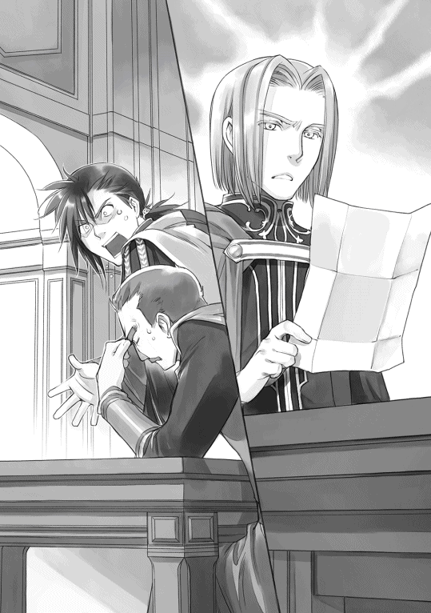
「お茶会は一体どうなった？ どのように中断したのだ？ 後始末はできたのか？」
ジルヴェスターは先を知りたくてフェルディナンドの手から報告書を奪い取った。
『中央の側近が取り乱し、王子が涙ぐみ、ハンネローレ様は半泣きで大丈夫ですと繰り返すという混乱ぶりでした。ヴィルフリート様とシャルロッテ様に救援を頼み、後始末に奔走 しました（ハルトムート）』
......ローゼマインの後始末に奔走して、ヴィルフリートとシャルロッテが急速に成長している気がするぞ。
「......とんでもないお茶会になったな。どうする、フェルディナンド？」
「どうするも、こうするも、ローゼマインに聴かねばならないことばかりだ。方々に詫びを入れさせ、帰還するように命じておけ。今ならば連続で倒れた体調を言い訳にできるはずだ。事情だけ聴いたら貴族院に帰すつもりだったが、もう良い。奉納式が終わるまでエーレンフェストに滞在させる」
投げやりにフェルディナンドがそう言った。投げやりになりたい気持ちはジルヴェスターにもよくわかる。去年よりも頭が痛いからだ。カルステッドなど口を開くのも億劫 そうに見える。その気持ちも痛いほどよくわかった。
......何故だ？ 何故ローゼマインはここまで問題を起こせるのだ？
平穏、それはローゼマインには縁遠い言葉だった。
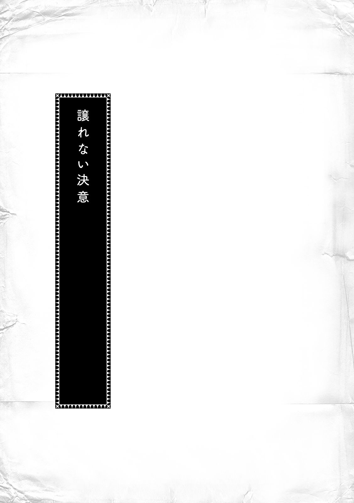
「ローデリヒはわたくしが一番欲しい物を捧げてくれるのですもの。物語と一緒に名も受け取ります」
その言葉が、私の耳から全身に染み込むようにじんわりと広がっていく。私が初めて名を捧げたいと願い出た時には困惑と拒絶が色濃く出ていた金色の瞳に、今は打って変わって許容と覚悟が浮かんでいた。その金色の目を柔らかく細めて、ローゼマイン様がふわっと微笑む。
......物語だけではなく、私も受け入れられたのだ。
白の塔の一件以来、私は何年も孤独だった。同じ派閥の者からも疎まれ、父親からも暴力を受けてきたのだ。そんな私を救ってくれたのは、ローゼマイン様が作った本だった。あの時の喜びよりもずっと大きい。
......この幸せをどう表現すれば良いのか。
言葉にしたいのに相応しい言葉が思い浮かばない。この胸に広がる安堵と感動は他の誰にもわかるまい。私はただ幸せを噛み締めた。
だからこそ、ローゼマイン様が家族のことに言及した瞬間、私の脳裏には父上の自分勝手な命令と鮮やかに手のひらを返したような態度の変化、暴力の数々の記憶が鮮やかに蘇った。背中を這 い上がってくるような恐怖に心臓を鷲掴 みにされる。
......止めてくれ。
旧ヴェローニカ派の中で身の置き所のなくなった父上達が今度は領主一族に擦り寄るために自分を利用しようとするのが手に取るようにわかる。ローゼマイン様の慈悲深い心が踏み躙 られるような気がしてぞっとした。
「名捧げと同時に家族と離れることを許してください」
それをローゼマイン様が受け入れてくれたことに、私はひとまず安堵した。もう二度と父上の好きなようにはさせたくない。それにローゼマイン様を巻き込みたくないと思うのだ。
「ローデリヒ、よかったですね。わたくしも嬉しいです」
「ありがとう、フィリーネ」
素直に感謝の言葉が自分の口をついて出た。フィリーネは今まで私が勝手に妬 んでいた相手で、たとえ心配されていても素直に彼女の心を受け取ることができなかった。そんな相手からの祝福を素直に受けられる心情の変化に、私自身が一番驚いた。皮肉な目で見る自分がおらず、ただ嬉しいと思ったのだ。
けれど、喜んでくれたのはフィリーネだけのようだ。ローゼマイン様の側近にはライゼガング系の貴族が多い。旧ヴェローニカ派は名を捧げると言っても信用しきれないようで、私はローゼマイン様の目に付かないお風呂の時間帯に会議室へ呼び出された。コルネリウス様、ハルトムート様、ブリュンヒルデ様、レオノーレ様という四人の上級貴族が厳しい表情でずらりと並んでいる。これで萎縮 しない中級貴族はいないだろう。
ゴクリと息を呑んだ。名を受けていただける喜びだけでいっぱいだった胸に、名を捧げた後も周囲の者と上手くいかない不安が広がっていく。
「ローデリヒ、今ならばまだ間に合う。名捧げを少し考え直してはどうか？ 其方が名を捧げて側近になったところで当たりの強い者はいる。今は視野が狭くなっているとしか思えない」
口火を切ったのは、コルネリウス様だ。漆黒の目がじっと私を見ている。おそらく私のことが気に入らないので「側近入りしたら当たりを強くする」という脅しだろう。だが、似たようなことは今まで何度も言われてきた。
「......ローゼマイン様が受け入れてくださるとおっしゃったのです。私は自分の決意を変えるつもりはありません。名捧げを覆したいならば、ローゼマイン様にお願いしてください」
私が申し出を拒否すると、ブリュンヒルデ様は少し眉を寄せて嫌そうな顔になった。
「どう考えても面倒なことが起こるとしか思えませんわね。ローゼマイン様がお決めになったことですから、わたくしは表だって反対しませんけれど......」
「あら。名を縛る分、トラウゴットのような者に比べると安心だとわたくしは思いますよ。ただ、ローデリヒは派閥以前にヴィルフリート様の心証が良くないでしょうし、お二人が婚約した今、余計な諍 いの種にならなければよいのですけれど。ハルトムート、貴方はどう思って？」
レオノーレ様の言葉にハッとした。白の塔の一件で父上に言われるまま塔へ導いた私は、ヴィルフリート様を陥れた全責任を負わされている。婚約者同士の諍いの種になりやすい立場なのだ。そういう視点では考えていなかったので、今までとは別の不安が頭をもたげてくる。名捧げを止めるつもりはないが、私とヴィルフリート様との関係が上手くいくかどうかわからない。私はレオノーレ様から意見を求められたハルトムート様の様子を窺った。
......側近の中で一番の不安はハルトムート様だ。
彼は優秀な上級文官見習いだ。中級文官見習いの私が側近に入れば、彼は私の上司になる。側近の中で一番上手く付き合っていかなければならない相手だ。フィリーネと少し話をするだけでも何度も睨まれてきたので、鋭い橙の瞳はすぐに思い出せる。
先日、「ローゼマイン様に受け入れてほしいならば、自分の考えや思いを伝えろ」と助言をくれたが、同時に「中途半端な状態でローゼマイン様に擦り寄られても迷惑だ。早々に決着を付けてほしい」とも言われたのだ。決して優しいだけではない。
......大丈夫だろうか？
歓迎されていないことはよくわかるが、あからさまに疎まれて嫌がらせをされるのは困る。身分差からも圧倒的に私が不利だ。私の視線に気付いたらしいハルトムート様が、ニコリとした笑みを浮かべた。
「ローゼマイン様は派閥を考慮しない。見るのは個人だけだ。ならば、ローゼマイン様が受け入れるとお決めになったことに私が異を唱えるわけがないだろう？」
「まぁ、驚いたこと。ハルトムートがすんなりと受け入れるなんて......」
ブリュンヒルデ様が口元を軽く押さえて目を丸くする。同感だ。一番迷惑がられていると思っていた。ハルトムート様は片方の眉を上げて心外そうにブリュンヒルデ様を見る。
「そうかい？ 私が卒業する来年以降は側近の文官見習いが下級貴族のフィリーネ一人になる。本音を言えば上級文官見習いが欲しいけれど、人材がいないのだ。来年の貴族院までにローデリヒを育てるしかないだろう？ 下級寄りの魔力量であろうとも中級は中級だ」
「確かに文官見習いの不足は深刻ですものね。ハルトムートに育てる気があるならば、わたくしは良いと思います。......こうして上級貴族に囲まれても、ローデリヒに決意を翻す気がないようですし......」
仕方がなさそうにそう言ったブリュンヒルデ様を見て、レオノーレ様がクスと笑う。その途端、急に彼女達の雰囲気が柔らかくなった。どうやら私は簡単に決意を翻さないか試されていたようだ。そう感じていると、ハルトムート様とコルネリウス様が私の前に進み出てきた。ハルトムート様が小さく切られた一枚の紙を差し出す。
「ローデリヒ、其方は名捧げ石の作り方も知らないと言っていたな？ 作り方は後で教えるので、なるべく早くここに書いてある素材を集め始めるように。エーレンフェストより貴族院の方が良い素材が多い」
「恐れ入ります、ハルトムート様」
差し出されている紙が、まるでローゼマイン様の側近になるための受験用紙のように思えた。私は震える手で紙片を受け取る。
「いいかい、ローデリヒ。其方の素材集めにローゼマイン様の側近は協力しない。この先、同じように名を捧げたい者が出た時に協力を求められても困るから。素材採集へ同行してくれる騎士見習い達には自分で依頼して、自力で素材を集めるように」
「わかりました。頑張ります、コルネリウス様」
ローゼマイン様に捧げる新しい物語は一年かけて書いてきた。ローゼマイン様から名を受けるという言葉を得た。素材を集めれば作り方を教えてもらえることになった。
......もう少しだ！
終着点は見えたが、その「もう少し」が難しかった。素材採集は同行してくれる騎士見習いが必要だが、私は騎士見習い達に払えるお金がないのだ。ハルトムート様から請け負った紙片に書かれている素材は、文官見習いの私が一人で採ってこられるような物ではない。魔獣を倒して得られる魔石もある。騎士見習い達に魔獣を倒してもらい、魔石を譲ってもらわなければならない。本の書写で稼いだお小遣いは、もう生活費に消えた。それに、ローゼマイン様へ捧げる物語を必死に書いていたので、写本でそれほど多くの金額を稼げたわけでもない。
......困ったな。
どうすれば良いのかわからず、少しでも多くのお金を稼げるように写本する毎日を過ごしていた。そんな中、ヒルシュール先生がアーレンスバッハの文官見習いを愛弟子にしたという話で寮内が騒然となった。フェルディナンド様がエーレンフェストから、ヒルシュール先生が文官棟の研究室から寮へ来て話し合いが行われる。本来ならば寮にいないはずの二人が寮の食堂にいることで、いかに大変なことが起こっているのか一般学生の私達にもよくわかった。
......領主一族はアーレンスバッハへの警戒を緩めることはなさそうだな。
アーレンスバッハの花嫁を受け入れたことで、再びアーレンスバッハとの交流が戻るのではないかと旧ヴェローニカ派の貴族達は期待していた。だが、領主候補生とその側近、フェルディナンド様の警戒する様子を見れば、そのような未来は簡単には訪れないだろう。
私が騒然とする寮内を他人事として眺めていられたのは、ハルトムート様に呼び出されるまでのことだった。
「ローデリヒ、名捧げの素材は集まったか？」
「いえ、まだです」
紙片に書かれていた素材の名前からどのような素材なのか調べただけで、まだ採集場所には一度も足を踏み入れていない。護衛を頼むとお金がかかるので一度で済ませたいと思っている。
「できるだけライムントとローゼマイン様の接触を減らすため、ローゼマイン様の文官がライムントとの橋渡しを行うことになった。アーレンスバッハの情報収集、ヒルシュール先生からの情報の流出監視なども含めて、其方に覚えてもらわなければならない仕事が一気に増えた。一年後などと悠長 なことは言っていられない。早急に素材を揃えよ」
「早急に、とおっしゃられても上級貴族の方々と違って私は手持ちのお金が足りないので、騎士見習い達に護衛や討伐を頼めません。写本の代金が入るまでは難しいです」
私が待ってほしいとお願いすると、ハルトムート様は「其方は頭が悪いようだな」と苛立たしげに私を睨みました。
「階級など関係ない。自分の持つ伝手や情報を自力でお金にする術 を知らなければ、ローゼマイン様の文官は務まらない。今は本当に時間がないから教えるが、今後は自分で考えてくれ」
私はハルトムート様に言われた通りにマティアス様やラウレンツ様、夏の終わりに領主へ手紙を届けようとローゼマイン様の側近との伝手を探していた旧ヴェローニカ派の騎士見習い達に声をかけて集まってもらう。
「ローゼマイン様に名を受けていただけることになりました。名捧げの石を作るための素材採集へ行くのですが、護衛と討伐をお願いできませんか？ 私からの報酬はお金ではありません。名捧げの石の作り方、側近入りした後にローゼマイン様との仲介を約束することです」
騎士見習い達は予想通り、ひどく嫌そうな顔になった。畳みかけるように私は口を開く。できるだけ堂々として見えるように背筋を伸ばし、声が震えないように気を付けて。
「皆様もいざという時のために素材だけは確保しておいた方が良いのではありませんか？ アウブに忠告するための手紙は、親と意見を違 える覚悟で書いたものなのですよね？」
「ローデリヒ、其方は我々を脅迫するつもりか!? 」
「落ち着いてください、ラウレンツ様。......これは助言です」
自分で口にしていても詭弁 だと思う。彼等にしてみれば、どう聞いても「一緒に素材採集しなければ親に密告するぞ」という脅迫にしか聞こえないだろう。腕を組んで私の言葉を聞いていたマティアス様が青い目で私を睨む。
「ローデリヒ、それは其方自身の言葉ではないな。......そのような指示を出しそうなローゼマイン様の側近といえばレオノーレ様か、ブリュンヒルデ様か？ いや、言葉回しに脅迫を絡めてくるならばハルトムート様か？」
「さすがマティアス様ですね」
派閥の中で一番下の扱いを受けてきた私の頭では、彼等を脅迫するようなやり方はとても思い浮かばなかった。誰の指示とは口にしなかったが、マティアス様にはわかったようだ。
「ハルトムート様が相手では分が悪い。言われた通りに採集へ行くとしよう」
「おい、マティアス」
「報酬にはローゼマイン様への仲介も含まれている。ヒルシュール先生と愛弟子の一件を見ても、いざという時の道を準備しておくことは悪い選択ではない」
マティアス様は採集へ同行することを約束しつつ、青い瞳で私をじっと見る。
「だが、ローデリヒ。私は慎重に事を運ぶように注意したはずだ。今は素材を得るだけに止めておいた方が良い。勢いでの名捧げは考え直せ」
彼の忠告が脳裏に蘇る。だが、私は決心を覆すつもりはない。
「マティアス様が心配してくださっていることはわかりますが、私にその助言は無意味です。皆には勢いに見えても、私はローゼマイン様にお仕えするための方法を一年間探してきたのです。名を捧げることで信用されるならば、私は名を捧げたい」
マティアス様がピクリと眉をひそめた。
「状況が変わったらどうするつもりだ？ 後悔してもどうにもならぬ」
「先日、マティアス様がお話しくださった男性のことですよね？ 状況が変わったくらいでは名を捧げたことを後悔しないと思います。おそらく、自分の主が他領へ行ってしまったとしても忠誠の心は変わらず、その方のために何ができるのか、お役に立てることがないのか常に探しているのではないでしょうか」
自分の主が次期領主の地位から下ろされて他領へ行くことになれば、悔しいという言葉では到底収まらないと思う。自分の尽くし方が足りなかったのではないか、もっと主のために何かできたのではないかなど、色々と考えるだろう。それでも、忠誠心に変わりはない。どのような状況になろうとも忠誠を尽くす。そのくらいの覚悟がなければ名を捧げることはできないのだ。
「......其方、家族のことはどう考えている？」
マティアス様から唸るような低い声で問われて、私は自分の家族を思い出し、苦い笑みを浮かべた。身勝手で暴力的な父親と、その父親に迎合 する母親だ。家に自分の居場所はない。もし、家の中に自分の居場所があれば、私はこれほどローゼマイン様に救いを求めなかった。
「家族が私に何をしてくれるというのでしょう？ 私は家族と縁を切るつもりです。自分の家族が私の主に不利益を運ぶことはとても許容できませんから」
「だが、それは......」
マティアス様は青い目を険しくさせて私を見た。心なしか青ざめている。まだ何か言いたそうだが、私は名捧げを止めるつもりがない。これ以上はいくら話しても平行線だ。
「私は名を捧げたい。私の心の在り方をローゼマイン様以外の方に止められたくありません」
「ローデリヒの言う通りだ。マティアス、その辺にしておけ。名捧げは本来もっと秘密裏に行われることではないか。当人同士が決めたことに横槍を入れる必要はない」
「ラウレンツ......」
マティアス様の肩を軽く叩いたラウレンツ様がオレンジの目を私に向ける。
「私はローゼマイン様が受け入れる決意をしてくれてよかったと思っている。領主一族が私達旧ヴェローニカ派をどのように見ていて、どのように扱うつもりなのか、貴族達がどのような反応を示すのか。ローデリヒを見ていれば自 ずとわかる。大事なことはローデリヒの行く末であって、決意に茶々を入れることではない。違うか？」
「......其方はローデリヒを利用しようと？」
「ローデリヒも素材採集に我々を利用するのだ。お互い様だろう？ それに、我々がどうしようとローデリヒの決意に変化などあるまい」
私の反応をほんの少しも逃すまいとするようにラウレンツ様はじっと私を見ている。その通りだ。この期 に及んで利用される我が身を悔しく思うけれど、私も素材を集めるために彼等を利用するのだからお互い様だ。利用したいならば勝手に利用すれば良い。私は自分の望みのために動くだけだ。
「行くぞ」
土の日、マティアス様の指示に従って私は騎獣を出した。旧ヴェローニカ派を中心とした騎士見習い達と一緒に寮を飛び出す。
外から採集場所へ繋がっている黒い線に気付かないまま、私達は採集場所へ飛び込んだ。
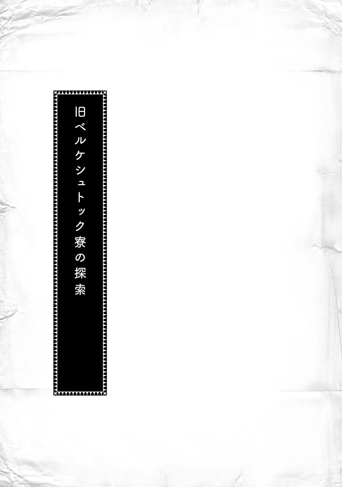
「あぁ、ルーフェン先生ですね？」
私がヒルシュールの研究室の扉を叩くと、アーレンスバッハのスカーフを付けた調合服の少年が顔を出した。おそらくヒルシュールの弟子だろう。自分が担当する学年の学生ではないので、私は顔も名前も知らない少年だ。
「ヒルシュール先生、ルーフェン先生です。お約束の時間ではありませんか？」
「少々お待ちくださいませ。今、良いところなのです」
「......ということなので、少々お待ち......」
弟子が最後まで言う前に私は扉を大きく開き、側仕えの手が全く入っていなくて散らかり放題の研究室に足を踏み入れた。
「其方、弟子ならばよく覚えておけ。ヒルシュールの口から出てくる少々という言葉を信用してはならぬ。いくら待っても終わらないのだ。私はすでに経験済みだ。力ずくで連れ出せるという理由で私がヒルシュールを呼びに来ることになったのだから、待つつもりはない」
「力任せは止めてください。先生の調合中は危険です」
私がズカズカと中に踏み入ったことで弟子がおろおろとしているのに、ヒルシュールは調合鍋を一心不乱に掻き回している。鍋の上にいくつかの魔法陣が展開していて、弟子の言う通り、力任せに中断すると危険であることが私にもわかった。
......どうしてくれよう？
「ヒルシュール、エーレンフェストの学生が起こしたことの後始末は寮監の仕事だぞ」
「わかっているから準備をしているではありませんか。約束をしたのは三の鐘です。鐘が鳴るまではわたくしの邪魔をしないでくださいな」
なるほど。側仕えによって整えられた外見を見れば、ヒルシュールが予定を忘れていなかったことはわかる。鐘が鳴るまでに中央棟に着いておきたかったが仕方ない。
「少しでも遅れるとフラウレルムがうるさいと思うぞ」
「うるさいだけで大した害はないのですから放っておけばよいでしょう」
私はキィンと耳に響くフラウレルムのわめき声を思い出しただけでげんなりとした気分になるのに、ヒルシュールは平気らしい。
「......其方はあの声を聞き流せるのか？」
「調合の邪魔になる分、わたくしには貴方の方がうるさくてよ、ルーフェン」
......この図太さがなければこれほど自分勝手に振る舞うことはできないか。
ヒルシュールに追い払われ、私は弟子にどこで待てばよいのか尋ねた。様々な物が散乱した研究室では、客が座るための椅子にも木札が積み上がっている。
「......ここで待つのですか？ ここ数日はローゼマイン様が体調不良で訪れていないのでまともに座れる場所がありませんし、調合が終わるまで側仕えも入ってこられない場所ですが......」
弟子の回答に、私は顔をしかめながら研究室を見回した。唯一座れそうなのは、ヒルシュールが普段使っているらしい椅子くらいである。
「出直せば新たな調合が始まるのだ。ここで待つしかあるまい。経験済みだ」
仕方がないのでヒルシュールの椅子に座ったものの、そこしかまともに座れる場所がないとはどういうことだろうか。男ばかりが使用するのでむさ苦しい騎士棟の男性控え室の方がもっと片付いている。ヒルシュール研究室はひどい場所だと思う。
椅子に座って待つ間、私は今日の予定を思い返すことにした。今日は旧ベルケシュトック寮の探索を行う日だ。ターニスベファレンは旧ベルケシュトックに生息する魔獣であり、すでに封鎖された寮の辺りからエーレンフェストの採集場所へ移動している跡がある。そのため、王の許可を得て中央騎士団の立ち会いの下、寮の探索をすることになった。
ターニスベファレンが出現した原因として、誰かが持ち込んだ可能性、あの辺りに巣がある可能性、それから、何らかの偶然が重なって旧ベルケシュトック城の転移陣が作動してターニスベファレン自身が移動した可能性が考えられている。魔獣なので魔力がある。旧ベルケシュトック城の管理の仕方によっては、偶然が積み重なって勝手に転移陣が起動した可能性も捨てきれないのだ。
......簡単にわかれば良いが、そう簡単には行かないだろう。
何と言っても、探索を行う教師に問題がある。まず、ヒルシュール。研究を中断させられて嫌々連行されるため、やる気が見込めない。連れ出すのも一苦労なのだが、ターニスベファレンの一件はエーレンフェストに関係することなので不参加は認められない。
次に、フラウレルム。アーレンスバッハが旧ベルケシュトックを管理していることから、会議でターニスベファレンの持ち込みを疑われて憤慨している。会議でもキンキンと響く声で反論して騒いでいたので、今回の探索も怒り任せに行うと予想できる。あの声を聴いているだけで疲れるので、私としてはあまり近付きたくない。
それから、グンドルフ先生。ドレヴァンヒェルの寮監で、文官コースの教師だ。担当する学年や専門コースが違うため、あまり接点がない。彼は普段は目にしない珍しい魔獣に興味津々で名乗りを上げた。原因究明よりターニスベファレンの探索に力を注ぎそうな感じの研究優先な部分がある。
最後に、私ことルーフェン。本来ならば、シャルロッテ様からオルドナンツを受け取ったレナートゥス先生が行くのが順当だ。けれど、レナートゥス先生は騎士コース最高齢の教師なので、中央騎士団との実働は私が行うことになった。正直なところ、ターニスベファレンの討伐ならばともかく、原因究明のための探索は自分向きの案件ではないと思う。おまけに、前途多難が簡単に予想できてしまう面子 である。
「ヒルシュール、三の鐘だ。行くぞ。これ以上は待たぬ」
「ハァ、貴方はせっかち過ぎるから女性に面倒がられるのですよ」
......余計なお世話だ。
渋々という表情を隠そうともせずに調合鍋から離れたヒルシュールだが、鐘が鳴る時にはしっかり危険な調合を終えていた。絶妙に怒りにくい優秀さが腹立たしい。調合に没頭している弟子を羨ましそうに見ているヒルシュールを引きずるようにして研究室から出し、私は中央棟へ向かって歩き始めた。
「今後はこのような面倒をかけないでほしいものだ」
「あら、嫌だ。面倒をかけられているのは、わたくしではありませんか。すでにターニスベファレンの討伐は終わっているのですから。また出てきたら、また倒せば良いでしょう」
その投げやりな態度はどうかと思うが、意見には賛成したい。魔獣が出てきたら倒せば良い。それだけの話にできれば、どれほど気が楽かと思う。
「其方の中ではもう終わっていることのようだが、討伐は終わっても原因の究明が終わっていない。そのために中央騎士団から王にお願いして、旧ベルケシュトック寮の扉を解錠していただくことになったのではないか。それに、色々と疑問点の残るローゼマイン様の尋問会も残っている。寮監の立ち会いは必須だ」
「あぁ、それもありましたね。どれだけわたくしの研究時間を削れば気が済むのかしら？ せめて、尋問会だけでも延期できないものでしょうか」
ヒルシュールはブツブツと文句を言っているが、ローゼマイン様の尋問会は図書館のお茶会が終わったら開催されることになっている。
「図書館のお茶会の予定があるとヒルデブラント王子が譲らなかったため、実は、すでに尋問会が延期されているのだ。これ以上の延期をするつもりはないぞ」
「まぁ、残念ですこと」
口ではそう言っているけれど、それほど残念でもなさそうにフッと笑ってヒルシュールは中央棟の扉の並ぶところを歩いていく。第一位の寮へ繋がる扉があり、奥に向かって順位が下がっていく。その後は番号のない扉が並ぶ。廃領地とされ、閉鎖された旧ベルケシュトック寮へ繋がる扉があるのだ。中央の騎士が一人、扉の前に立っているのが見えた。
「他の先生方は到着しています。どうぞ」
騎士に扉を開けてもらって中に入ると、玄関ホールに当たる場所で揉め事が起こっていた。中央の騎士が二人、それから、グンドルフ先生とフラウレルムがいる。
「何を騒いでいるのですか？」
私が声をかけると、グンドルフ先生が髭 を撫でながらジトリとした目をフラウレルムに向けた。
「寮に入るなり、フラウレルム先生がヴァッシェンを行ったのだ」
「は？」
今回の寮の探索ではターニスベファレンの足跡などが寮内に残っていないか、不審人物が何らかの手段で出入りしている可能性がないかなどを調べることになっている。ヴァッシェンをしてはそれらの形跡が消えてしまう。
「一体何を考えてヴァッシェンなどしたのですか!? 」
「んまぁ！ このように汚いところに清めもなく入れるわけがないでしょう！ 衣装が汚れるではありませんか！」
それはヴァッシェンを行う理由にならない。汚れることが我慢ならないならば、探索の邪魔である。帰れという意味合いのことを言えば、絶対にアーレンスバッハへの疑いを晴らすのだと憤慨 する。グンドルフ先生や中央の騎士達がげんなりとしている理由がよくわかった。言葉は通じるのに話が通じない。
しかし、フラウレルムも同じような苛立ちを我々に感じているようだ。関わり合いになりたくないと言わんばかりに傍観 しているヒルシュールに女性としての同意を求めた。
「貴女も女性ならばわかるでしょう!? 」
「わたくしはこの程度の汚れ、特に気になりませんけれど？」
......そうだろうとも。其方はあの研究室で生活できるくらいだからな。
貴族女性としてその意見はどうかと思うが、ヒルシュールに同意を求めても無駄だ。私よりも汚れに対する耐性がある。
「それほど汚れが気になるのでしたら、調合服なり騎獣服なり、汚れても構わない衣装にすればいいでしょう。ヴァッシェンなどしては証拠隠滅と疑われますよ」
「んまぁ！ 時間に合わせて行動できないだらしない方に言われたくございません！」
私はヒルシュールの方が正論だと思うが、フラウレルムにとっては持論が一番正しいようだ。正論がどうにも通じない。ヒルシュールと会話すればするほどフラウレルムが感情的になっていくので、私はグンドルフ先生と目配せし合って二人を引き離した。
「ここで騒いでいても探索ができない。二手に分かれて動くとしよう」
「うむ。ヒルシュール先生とルーフェン先生。フラウレルム先生と私に分かれれば良いであろう。それぞれの確認役を中央の騎士にお願いしたいのだが......」
中央騎士団から監視が付くわけだが、この監視は今回の件に関する隠蔽 工作だけを心配しているわけではない。研究優先で暴走しがちな教師達がこの寮に放置されている珍しい素材や道具をくすねないかどうかの監視が重視されている。
「一階は綺麗になっているので、わたくし達が行きますわ。汚れを何とも思わない方々に厨房など地階や地下室の探索をお願いしますね」
フラウレルムが何故か勝ち誇ったように胸を張って分担を決める。ここで揉めても時間の無駄なので、私達は地階へ向かう階段を探して歩き始めた。フラウレルムのヴァッシェンのせいで、玄関ホールから一階の廊下だけはやたらと綺麗になっている。だが、一つ扉を開ければ、そこにあるのは積もった埃、壊されたり倒されたりしたまま放置された家具、部屋の主がいなくなったにもかかわらず登録が残されたままの隠し扉だ。
「......ずいぶんと荒れているな」
「大領地で力があった分、ベルケシュトックは最後まで抵抗していたようですからね」
不意に私の貴族院時代の友人が思い出された。ディッターで競 り合っていた友人で、卒業後は中央騎士団へ入り、第四王子の護衛騎士として散ったらしい。もういなくなった友人知人の顔が次々と思い浮かび、普段の生活では過ぎたこととして頭の隅に追いやっていた感傷が広がってくる。
「次の年から顔を見られなくなった学生達が多かったことを思い出すな」
ベルケシュトックは廃領地とされ、アーレンスバッハとダンケルフェルガーが分割して管理することになった。だが、全ての学生達がどちらかの領地に入ったわけではない。いなくなった学生も多かった。
「感傷に浸るのはもう止めませんか？ それより、原因究明ということですが、何をいたしますの？ ターニスベファレンは貴族院に生息していません。旧ベルケシュトック領から誰かが持ち込む以外に貴族院で見ることはない魔獣です」
ヒルシュールは埃が積もっていて、何の足跡もない階段を発見して振り返った。騎士と共に埃の上に何の痕跡もないことを確認して階段を降り始める。
「ですから、先日の職員会議でも意見が出ていたように、わたくしもアーレンスバッハかダンケルフェルガーの学生が一番怪しいと思います」
「ヒルシュール」
ダンケルフェルガーの学生が疑われるのは心外だ。私が睨んだところで何も感じていないのか、ヒルシュールは淡々と先を続ける。
「寮監である先生方の憤慨はわかりますが、可能性としては一番高いではありませんか。他領の学生が持ち込もうと思えば、前もって買い取る必要がありますもの」
「ターニスベファレンを買い取る？ そのようなことができるのか？」
黒の魔獣だから持ち込みは簡単ではない。特性をよく知った者でなければ小さくても扱いが難しいのだ。会議の時には名前を言ってもわからなかった教師もいたくらいに珍しい魔獣だ。他領の学生が買い取って持ち込むという発想はなかった。私は中央の騎士と顔を見合わせる。
「扱いを誤ると持ち込む学生も無傷では済みませんが、できなくはありませんよ。わたくしは十年以上前に同じような経験していますからね」
「何だと？」
訝 る私達に、ヒルシュールは階段を降りながら昔の出来事を教えてくれる。
「ベルケシュトックの学生からターニスベファレンを買い取り、フェルディナンド様にけしかけた学生がいたのですよ。貴族院の人数が一気に減る季節外の出来事ですし、エーレンフェスト内のいざこざですし、フェルディナンド様達が討伐しましたから公にはなっておりませんけれど。......今回の件も同じでしょう」
ヒルシュールには何かわかっているらしい。研究馬鹿で研究室から滅多に出ない彼女が一体何を知っているのか、私は興味を引かれながら階段を降りていく。地階は平民の領域だ。ここにも貴族を捕らえようとした騎士達が踏み込んだのだろうか。扉の壊れた棚や開け放たれた物入れが見え、破壊された鍋には蜘蛛 の巣が張っている。だが、どれも白っぽい埃に覆われていて、閉鎖されてから誰かが踏み込んだ形跡はない。
「同じとはどういう意味だ？」
「エーレンフェストに恨みを持つ者の仕業だということですよ」
「何故そう思う？」
「黒の魔獣が旧ベルケシュトック寮から真っ直ぐにエーレンフェストの採集場所へ向かっていたではありませんか。ダンケルフェルガー、アーレンスバッハ、フレーベルターク、中央......。どこに向かっても不思議ではなく、エーレンフェストより魔力の豊富な採集場所がある中、迷った痕跡もありませんでした」
「エーレンフェストの採集場所はかなり魔力が豊富だったように記憶しているが？」
「ローゼマイン様が癒したからでしょう。わたくしの記憶ではあれほど素材の豊富な場所ではありませんでした」
私は黒の魔獣の痕跡をたどっていた時のことを思い出す。ヒルシュール先生が「研究室へ帰りたいのですけれど」と面倒臭そうに言いながら同行する中で、そのような推測をしていたことに驚いた。
「どうして恨んでいるのかについては、犯人に尋ねてみなければわかりません。領地の順位が入れ替わったことを不満に思っていたのか、エーレンフェストの学生に個人的な恨みがあるのか、それ以外か......」
指折り数えていたヒルシュール先生がハァと溜息を吐く。面倒臭そうにも見えるし、色々と考えて疲れているようにも見える。
「其方には犯人の目星がつくのか？」
「まさか......。でも、わたくしはフラウレルムのことも疑っていますよ。学生を含めても一番ターニスベファレンを持ち込みやすい立場ですから」
「おい、ヒルシュール。そのような疑いは......」
今の時点では口にすべきではない。私が注意すると、ヒルシュールが上階を睨むように視線を巡らせた。
「わたくしは最近知りましたが、アーレンスバッハとエーレンフェストはずいぶんと確執が深くなっているようです。わたくしがライムントを弟子にすることさえ警戒する有様ですもの」
寮内の学生同士の会話を耳に挟んだり、講義の中で関係性を肌で感じたりすることがあっても、他領同士の関係を耳にする機会はそう多くない。私が耳を澄ませていることに気付くと、ヒルシュールはおどけたように肩を竦めた。
「まったく、弟子も好きに採用できないだなんて困ったこと......」
「其方は好きに採っているではないか。件 の弟子とは、今日応対していたアーレンスバッハの学生のことだろう？ 少し大袈裟 過ぎるのではないか？ 大体、確執があるならばディッターで決着をつければ良いと思うのだが......」
「ダンケルフェルガーと同じようにはいきませんよ」
ヒルシュールが顔をしかめながら洗濯場の扉を開いた。側仕え達が使う昇降の魔術具が並んでいるのが見える。上階から洗濯物を下ろし、下働き達が洗濯し終えた衣類を上げるのだ。普段は立ち入らないところなのでなかなか面白い。
......だが、ここも何もないな。
「アーレンスバッハとの関係はともかく、今回の一件がエーレンフェストに恨みを持つ単独犯であることをわたくしは願っています」
「む？」
「単独犯であれば、これだけの騒動になって中央騎士団が警戒しているのです。もう同じ手段は使わないでしょう」
そこで一度言葉を切ったヒルシュールが中央の騎士へ向き直った。
「けれど、他に理由や目的があり、エーレンフェストの一件が実験台だった場合、ターニスベファレンがまた出てくる可能性があります。貴族院にどれだけ多くの騎士見習いがいても、黒の武器がなければ黒の魔獣は倒せません。中央騎士団の到着を待つしかないのです。学生達は無力だということを中央騎士団の皆様にはご理解いただき、迅速な出動を願ってやみません」
......研究馬鹿でも、やはりヒルシュールも教師なのだな。
それほど学生達のことを考えているとは思わなかった。原因究明に繋がれば、と思っていたが、再発した時の対応も見直す必要がある。教師として学生達の安全を守るためにどうするべきか考えているのか、私自身にも問われているような気がした。
「連絡と出動をできる限り速く行うこと、それから、非常時には騎士コースの教師が黒の武器を使用できるように王の裁可をいただくことは可能だろうか？」
「その調子で頑張って考えてくださいませ。わたくしの研究時間がこれ以上削られる事態は勘弁していただきたいですもの」
「おい！」
感動が一瞬で掻き消えた。ヒルシュールはどこまで行ってもヒルシュールである。だが、与えられた意見は貴重なものだ。腹立たしいが、連絡の取り方なども見直そうと思う。
「厨房は埃をかぶったままだったし、階段を使った形跡もありませんでした。目に付いた隠し扉の登録は全て消去してきました。結論ですが、こちらはターニスベファレンに関連する痕跡は何もありませんでした。そちらはどうでしたか？」
地階と地下室を見て回った私達は、合流したグンドルフ先生達に尋ねた。一階から上を見て回ったフラウレルムが胸を張って結果を報告してくれる。
「誰かが隠れていられるような場所も、ターニスベファレンの痕跡もございませんでした。そうですよね？ グンドルフ先生」
「......うむ」
ここの転移陣を使用したターニスベファレンの出入りはなかった。持ち込まれたとしても、この寮ではなく他の寮の転移陣が使われたのだろう。そう結論づけられた。
「私は王への報告書を中央騎士団の者達と作成するが、中央騎士団を呼びつけた責任者のルーフェン先生以外は帰っても構わぬ」
ヒルシュールは「恐れ入ります、グンドルフ先生」と笑顔で礼を述べてそそくさと帰っていく。その背中を見送り、グンドルフ先生はフラウレルムに向き直った。
「フラウレルム先生もお疲れだろう？ 二階や三階はヴァッシェンで清められぬままの探索だったからな。......だが、アーレンスバッハにかけられた疑いはこれで晴れたと言えよう」
「えぇ。ホッといたしました。アウブや第一夫人に報告してまいりますね」
疑いは晴れたと言われたフラウレルムも機嫌良く帰っていく。その背中をニコニコとした笑顔で見送っていたグンドルフ先生が、扉が完全に閉まった途端、ふっと笑顔を消した。
「今回の一件に深く関わっているエーレンフェストの寮監のヒルシュール先生と、寮に入るなりヴァッシェンを行ったフラウレルム先生には黙っていた方が良いと判断したことがある」
中央騎士団の二人に視線を向けて「王に注意を」とグンドルフ先生が少し声を潜めた。緊迫した雰囲気に喉が鳴る。一体何があったというのか。
「転移陣に使用された痕跡があった」
「なっ!? 」
自分の口から出た声の大きさに驚き、私は急いで片手で口を塞いだ。言われた言葉がすぐには信じられなくて真偽 を問うために彼等に同行した騎士を交互に見る。騎士もまた同じように驚いた顔でグンドルフ先生を見ていた。
「私もご一緒しましたが、特に何もなかったと思いますが......」
「......私は元領主候補生だ。領主候補生としての講義も受けたことがある。だから、わかっただけで他の同行者......フラウレルム先生にも其方にもわからなかったはずだ」
グンドルフ先生に同行していた騎士が目を瞬かせている。わからなかったのだろう。
「領主候補生の講義内容であるため、詳しくは其方等にも知らせぬ。確認したい場合は領主候補生として貴族院を卒業した王族の同行が必要になるだろう」
王族として滞在していてもヒルデブラント王子では力量不足ということに違いない。コクリと中央の騎士達が頷く。私も頷いた。グンドルフ先生はゆっくりと息を吐き、何かを考えるように髭をいじる。
「ローゼマイン様の尋問会が非常に重要な意味を持つだろう。他の神殿上がりの者達が知らなかった黒の呪文を知っていることといい、採集場所の癒しを行えることといい、今の時点ではローゼマイン様が怪しく思える」
「エーレンフェストは被害者では？」
ヒルシュールの意見を聞いたことで、犯人はエーレンフェストに恨みを持つ者だと考えていた私は、グンドルフ先生の意見に目を瞬かせる。
「感情の高ぶっていたフラウレルム先生の意見が全て正しいとは思わぬ。だが、この一件でエーレンフェストは特に被害を受けておらぬという意見にはハッとさせられた」
ターニスベファレンが暴れたけれど、ローゼマイン様によって黒の武器を与えられた騎士見習い達によって討伐された。荒らされた採集場所もすでに癒され、他の領地の採集場所より豊かになっている。結果を見れば、確かにエーレンフェストは被害を受けていない。
「エーレンフェストがターニスベファレンを使って何らかの実験を行っていた可能性も捨てきれぬ。普段から寮監がいないあの寮では、領主候補生が自由に振る舞うことができるのだから」
ヒルシュールが寮にいないことは皆が知る事実だ。学生達からどのような報告を受けていたとしても、その報告が正しいのか確認しているとは限らない。全く考えていなかった視点からの意見に首筋がヒヤリとする。
「ローゼマイン様の尋問会には王の側近......筆頭文官か中央騎士団長に出席していただいた方が良いかもしれぬ」
グンドルフ先生の提案に反対する者はいなかった。
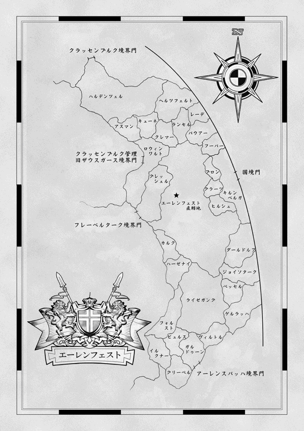
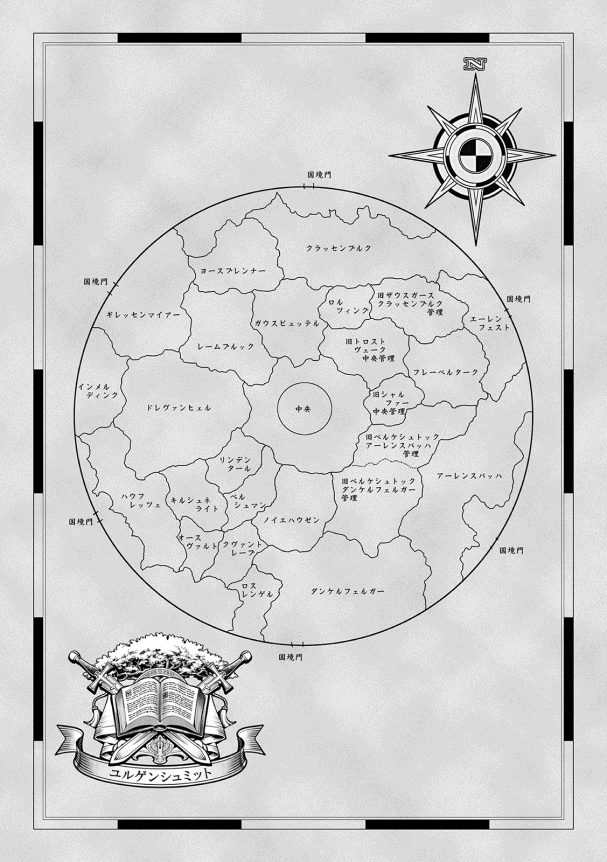
あとがき
お久しぶりですね、香月美夜です。
この度は『本好きの下剋上 ～司書になるためには手段を選んでいられません～ 第四部 貴族院の自称図書委員Ⅵ』をお手に取っていただき、ありがとうございます。
ローゼマインの貴族院二年生が始まりました。
去年と同じように、いえ、それ以上にローゼマインは様々な騒動を起こします。講義で神具を出したり、水鉄砲を強化して天蓋に穴を開けたり、盛りだくさん。同時にローゼマインの責任とは言えない騒動も次々と起こります。騎士コースを受けないのか何度もルーフェンに誘われたり、シュバルツ達から女神像にも魔力供給してほしいと望まれたり、図書館で何度もヒルデブラント王子と接触したり、ヒルシュールの弟子がアーレンスバッハの学生だったり、ローデリヒが素材採集に行ったらターニスベファレンが出現したり......。
とりあえず、ローゼマインは目の前のことに対処するだけで手一杯です。保護者達が頭を抱えるのも納得ですが、読書をしたいだけなのに強制送還になってしまったローゼマインはしょんぼりへにょん。
今回のプロローグはシャルロッテです。ヴィルフリートとローゼマインの婚約によって次期領主はヴィルフリートに内定し、シャルロッテはどれだけ努力しても次期領主に手が届かなくなってしまいました。けれど、シャルロッテは自分の命の恩人であるローゼマインお姉様の補佐をしようと奮闘します。
そして、エピローグはジルヴェスターです。エーレンフェストで報告書を読むしかできない保護者達。カルステッドやフェルディナンドも一緒に、今年も次々と届く報告書の山を読んでは頭の痛い思いをしています。
短編は、いつも通り「小説家になろう」の活動報告で読者の方々からリクエストを募って決まりました。ローデリヒ視点とルーフェン視点です。
ローデリヒ視点では、名を受けることについて決まった後、ローゼマインの目には触れないところで行われるやりとりを書いてみました。ローゼマインの側近達とのやりとりや、旧ヴェローニカ派の騎士見習い達と素材採集に行くことになった裏側の事情。ハルトムートの暗躍の一部が見える形になったと思います。
ルーフェン視点では、旧ベルケシュトック寮の探索について書いてみました。先生達がターニスベファレンの一件をどのように考えているのか、また、ローゼマインからは見えない先生同士の関係など。ローゼマインの学年を担当している先生達は呼び捨てで呼び合いますが、他学年の先生方には敬称が付きます。先生方もそれぞれの見方や感じ方があり、一枚岩ではありません。妙な疑いを持たれ、王の側近まで引っ張り出されることになったローゼマインの尋問会は一体どうなるのでしょうか。次巻をお楽しみに。
この巻で椎名様に新しくキャラデザしていただいたのは、ヒルシュール先生の愛弟子ライムントと、ヒルデブラント王子の筆頭側仕えアルトゥールの二人です。ライムントのよれよれっぷりが結構お気に入り（笑）。スカーフが調合の邪魔にならないように腰元に結ばれているのが、とてもライムントらしいと思います。
お知らせです。
帯にもドドーンとあるように、なんと『本好きの下剋上』のアニメ化が決まりました！
三月九日から『本好きの下剋上』アニメ公式サイトで、メインスタッフやキャスト、紹介ＰＶをご覧いただけます。
今までのドラマＣＤとは声優さんが変わるので残念に思う方も多いでしょうが、新しい声優さん達もマジ豪華で、めちゃくちゃ上手いベテランさんがずらり。確認してビックリしてください。私はオーディションの時点でビックリしましたから。
紹介ＰＶで動いているマイン達や下町の風景をぜひご覧くださいませ。アニメのスタッフさんが書籍イラストやコミックスの設定を丁寧に拾って、今までの『本好きの下剋上』のキャラや世界観が広がるように描いてくださっています。私はマイン達の住む貧民街からギルベルタ商会のある富豪層に向かって建物の雰囲気や色合いを変えてほしいとか、背景のモブキャラにも髪型やスカート丈に決まりがあるなど、結構面倒で細かい注文をしました。
また、アニメキャストによるドラマＣＤ第三弾も決定しました。第四部Ⅶと同時発売です。ローデリヒの名捧げを中心に、貴族院の学生達のやりとりをお楽しみください。原作の公式サイトで予約受付中です。
http://www.tobooks.jp/booklove/
今回の表紙は、図書委員大集合。ローゼマイン、シュバルツ、ヴァイスに加えてハンネローレとヒルデブラントがいます。シュバルツ達は新しい衣装ですよ。リーゼレータの刺繍が可愛いです。カラー口絵はターニスベファレンの討伐のイメージで騎士見習い達が武器を構えています。黒い魔獣に黒い武器のイメージなのでローゼマインも少しはハードボイルドになれたような気がします。椎名優様、ありがとうございます。
最後に、この本をお手に取ってくださった皆様に最上級の感謝を捧げます。
第四部Ⅶは六月の予定です。そちらでまたお会いいたしましょう。
二〇一九年一月 香月美夜
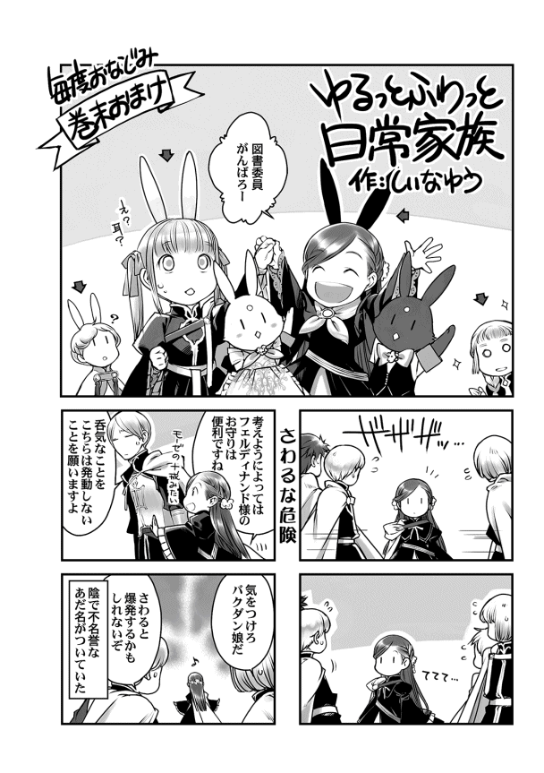
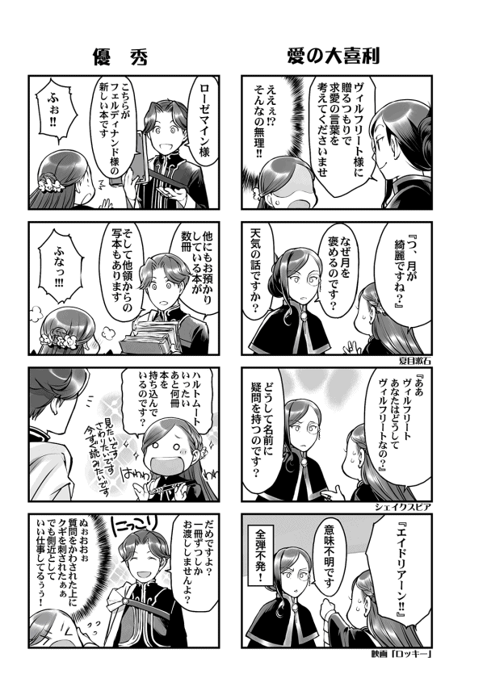
著者プロフィール
香月 美夜
Kazuki Miya
本作でデビュー。
なんとアニメ化決定です。動くマインやルッツが可愛くて、ベンノやフェルディナンドがカッコいいです。
椎名 優
Shiina You
本格的に貴族院二年生スタート。ヴァイスとシュバルツの衣装も変わりました～。図書委員発足です。
本好きの下剋上
〜司書になるためには手段を選んでいられません〜
第四部 貴族院の自称図書委員Ⅵ
2019年４月１日発行 ver.1.0
著 者 香月美夜
発行所 TOブックス
〒150-0045 東京都渋谷区神泉町18-８
松濤ハイツ２Ｆ
03-6452-5766（編集）
0120-933-772（営業フリーダイヤル）
Ⓒ2019 Miya Kazuki
※無断で複製・複写・データ配信などをすることは、かたくお断りいたします。
本電子書籍は下記にもとづいて制作しました。
本好きの下剋上
〜司書になるためには手段を選んでいられません〜
第四部 貴族院の自称図書委員Ⅵ
発行日 2019年４月１日 第１刷発行
本作品の全部または一部を無断で複製、転載、配信、送信したり、ホームぺージ上に転載することを禁止します。また、本作品の内容を無断で改変、改ざん等を行うことも禁止します。
本作品購入時にご承諾いただいた規約により、有償・無償にかかわらず本作品を第三者に譲渡することはできません。
本作品を示すサムネイルなどのイメージ画像は、再ダウンロード時に予告なく変更される場合があります。
本作品は縦書きでレイアウトされています。
また、ご覧になるリーディングシステムにより、表示の差が認められることがあります。